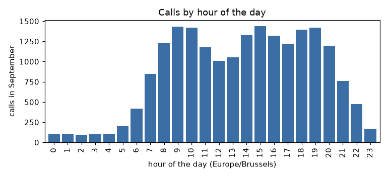
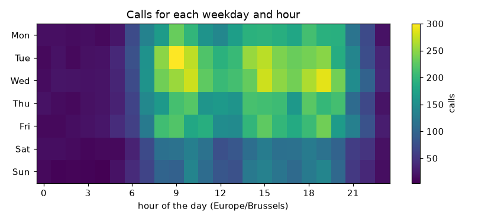
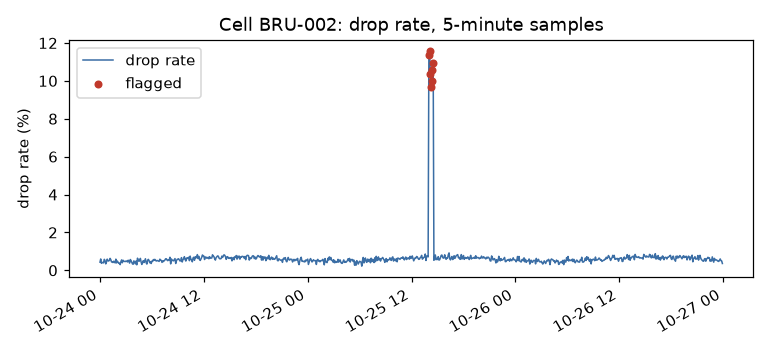
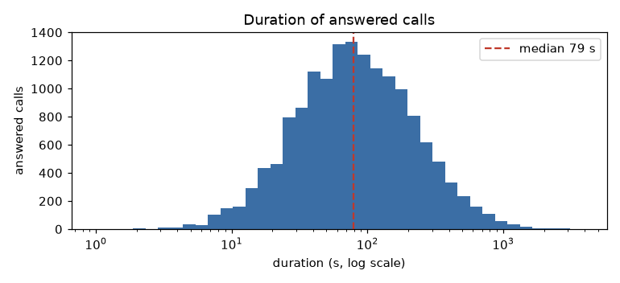

Build —
first_look(df): a function that tells you, for any table, what each column holds, how much is missing and how much memory the table uses.Theory kept — A Series is values plus an index. A DataFrame is a set of Series that share one index. The index is a set of labels, not a position.
Source — New. Data:
data/calls.csv, made bypdbook/datasets.py.Run this first —
uv run python -m examples.ch01_first_look, which isexamples/ch01_first_look.py. Exercises:exercises/01.md. Solutions:exercises/solutions/01.md.
pandas holds a table in memory and gives each row and each column a label. You use it when the data fit in memory and the question is about rows and columns: how many calls failed, which cell has the longest calls, what changed between Monday and Tuesday.
Underneath, pandas stores each column as an array (NumPy or Arrow). Operations on a column run in compiled code, not in a Python loop. This is the reason pandas is fast enough for millions of rows. It is also the reason you must learn to write operations on whole columns. Chapter 7 measures the difference.
This book uses pandas 3.0. Most tutorials on the web describe pandas 1.x or 2.x. Where 3.0 behaves differently, the text says so and shows the output. Chapter 24 lists, in one table, the differences that this book ran.
A Series is a one-dimensional array with a label for each value. It has four parts: the values, the index, a name, and a dtype (the type of every value).
import pandas as pd
fee = pd.Series([12.5, 24.0, 45.0],
index=["basic", "plus", "business"],
name="monthly_fee_eur")
print(fee)
print(fee.dtype)
print(list(fee.index))
print(fee.to_numpy())
basic 12.5
plus 24.0
business 45.0
Name: monthly_fee_eur, dtype: float64
float64
['basic', 'plus', 'business']
[12.5 24. 45. ]
The values are a plain NumPy array. The index holds the labels. You can read a value by its label or by its position:
import pandas as pd
fee = pd.Series([12.5, 24.0, 45.0], index=["basic", "plus", "business"])
print(fee["plus"])
print(fee.iloc[1])
24.0
24.0
Use .loc for labels and .iloc for positions. Chapter 3 explains both. For now, remember one fact: the label is part of the data, and it does not change when you reorder the Series.
The constructor pd.Series made these two Series. Its signature and parameters follow.
pd.Seriespd.Series(
data=None,
index=None,
dtype=None,
name=None,
copy=None,
)
The constructor makes a Series from values and, if you give them, labels.
The table under pd.Series in the Reference section of this chapter gives each parameter and what goes wrong with it.
NumPy arrays add by position. A Series adds by label. This is the first difference that surprises people, and it is the source of many silent errors.
import pandas as pd
a = pd.Series([1, 2, 3], index=["x", "y", "z"])
b = pd.Series([10, 20, 30], index=["y", "z", "w"])
print(a + b)
w NaN
x NaN
y 12.0
z 23.0
dtype: float64
Only y and z appear in both Series, so only those two labels get a sum. The labels x and w appear in one Series only, and the result for them is NaN (not a number, the marker for a missing value). Notice also that the dtype changed from integer to float64, because an integer array has no place to store NaN. Chapter 5 returns to this.
Alignment is a feature. When you divide one column by another from a different table, pandas matches the right rows without a join in your code. It is also a trap, and Chapter 15 lists the ways it fails.
A DataFrame is a table. Each column is a Series. All the columns share one index, which labels the rows. Each column has its own dtype.
import pandas as pd
plans = pd.DataFrame({
"monthly_fee_eur": [0.0, 12.5, 24.0, 45.0],
"included_minutes": [0, 100, 500, 2000],
}, index=["prepaid", "basic", "plus", "business"])
print(plans)
print(plans.dtypes)
print(type(plans["included_minutes"]).__name__)
print(type(plans[["included_minutes"]]).__name__)
monthly_fee_eur included_minutes
prepaid 0.0 0
basic 12.5 100
plus 24.0 500
business 45.0 2000
monthly_fee_eur float64
included_minutes int64
dtype: object
Series
DataFrame
One pair of square brackets with a string gives a Series. Two pairs (a list of names) give a DataFrame. This difference matters: many methods exist on both, but they return different shapes.
pd.DataFramepd.DataFrame(
data=None,
index=None,
columns=None,
dtype=None,
copy=None,
)
The constructor makes a table from columns, rows or a 2-D array.
The table under pd.DataFrame in the Reference section of this chapter gives each parameter and what goes wrong with it.
The file data/calls.csv holds 20,000 call detail records for September 2026. One row is one call attempt.
import pandas as pd
calls = pd.read_csv("data/calls.csv")
print(calls.shape)
print(calls.index)
print(calls.head(3).to_string())
(20000, 9)
RangeIndex(start=0, stop=20000, step=1)
call_id start caller callee duration_s status cell_id codec roaming
0 1 2026-08-31T22:13:30Z S0125 32434086075 24.0 answered BRU-003 EVS False
1 2 2026-08-31T22:15:27Z S0108 32491633063 0.0 busy GHE-001 NaN False
2 3 2026-08-31T22:51:30Z S0414 32447458698 174.0 answered BRU-003 EVS False
shape is a tuple of rows and columns. The index is a RangeIndex that pandas made: 0, 1, 2 and so on. The file has no index column, so pandas labels the rows by position.
The function pd.read_csv read the file. It has 44 parameters. Chapter 2 prints its signature and explains each parameter, because input is the subject of that chapter.
The info method gives the dtypes and the number of non-null values for each column in one view:
import pandas as pd
calls = pd.read_csv("data/calls.csv")
calls.info()
<class 'pandas.DataFrame'>
RangeIndex: 20000 entries, 0 to 19999
Data columns (total 9 columns):
# Column Non-Null Count Dtype
--- ------ -------------- -----
0 call_id 20000 non-null int64
1 start 20000 non-null str
2 caller 20000 non-null str
3 callee 20000 non-null int64
4 duration_s 18967 non-null float64
5 status 20000 non-null str
6 cell_id 19723 non-null str
7 codec 15526 non-null str
8 roaming 20000 non-null bool
dtypes: bool(1), float64(1), int64(2), str(5)
memory usage: 2.1 MB
Look at the column callee. The file holds phone numbers such as +32434086075. pandas read them as integers, because a plus sign at the start is a valid sign for a number. A phone number is an identifier, not a quantity, so integers are the wrong type. The sum of two phone numbers is not useful in the real world. Chapter 2 shows how to prevent this.
Look also at the text columns. In pandas 3.0 they have the dtype str. In pandas 2.x they had the dtype object, which stored Python string objects. The new dtype is faster and uses less memory. Chapter 4 measures both.
The standard info output is for the eye. It does not return a value that you can test, save or compare. first_look returns a DataFrame with one row per column.
import pandas as pd
def first_look(df: pd.DataFrame) -> pd.DataFrame:
"""One row per column: dtype, null count, distinct count, first value."""
return pd.DataFrame({
"dtype": df.dtypes.astype(str),
"nulls": df.isna().sum(),
"unique": df.nunique(),
"first": df.iloc[0].astype(str),
})
calls = pd.read_csv("data/calls.csv")
print(first_look(calls))
dtype nulls unique first
call_id int64 0 20000 1
start str 0 19881 2026-08-31T22:13:30Z
caller str 0 600 S0125
callee int64 0 14617 32434086075
duration_s float64 1033 858 24.0
status str 0 4 answered
cell_id str 277 12 BRU-003
codec str 4474 3 EVS
roaming bool 0 2 False
pdbook.looks.first_lookpdbook.looks.first_look(
df,
)
The function returns one row for each column of df, indexed by the column name.
The table under pdbook.looks.first_look in the Reference section of this chapter gives each parameter and what goes wrong with it.
The function builds a DataFrame from a dict of four Series. Each Series has the column names of df as its index. Because the indexes are equal, pandas aligns them without any extra code. This is the alignment from the previous section, and here it saves code.
The table tells you five things at once:
call_id has 20,000 distinct values in 20,000 rows. It is a key.caller has 600 distinct values. It repeats, so it identifies a subscriber, not a call.duration_s has 1,033 nulls and the dtype float64. An integer column cannot hold nulls, so a count of seconds became a float.cell_id and codec have nulls. They do not have the same cause: the next chapters find out why.status has 4 distinct values. A column with few distinct values is a candidate for the category dtype (Chapter 4).The module in pdbook/looks.py holds this function and headline, which returns one line with the row count and the memory:
import pandas as pd
from pdbook.looks import headline
print(headline(pd.read_csv("data/calls.csv")))
20,000 rows x 9 columns, 2.2 MB
pdbook.looks.headlinepdbook.looks.headline(
df,
)
The function returns a string, not a table.
The table under pdbook.looks.headline in the Reference section of this chapter gives each parameter and what goes wrong with it.
The memory figure is the deep figure: it counts the bytes of the strings, not only of the pointers to them. Use memory_usage(deep=True) whenever you compare two representations of the same table.
A Series is two objects held together: a NumPy array of values and an Index object that holds the labels. A DataFrame is an ordered set of such arrays. Each column is its own array with its own dtype, and all columns share one Index for the rows. There is no single block of memory with rows in it, so a column operation reads one contiguous array.
Arithmetic between two Series has three steps. First, pandas builds the union of the two indexes. Second, it reindexes each Series to that union, and a label that the Series lacks becomes NaN. Third, it adds the two arrays by position. The alignment of this chapter is steps one and two. You can do the three steps yourself and compare:
import numpy as np
import pandas as pd
from pdbook.io import load_calls
a = pd.Series([1, 2, 3], index=["x", "y", "z"])
b = pd.Series([10, 20, 30], index=["y", "z", "w"])
labels = a.index.union(b.index)
by_hand = a.reindex(labels).to_numpy() + b.reindex(labels).to_numpy()
print(labels.tolist())
print(by_hand.tolist())
print(bool(np.array_equal((a + b).to_numpy(), by_hand, equal_nan=True)))
print(type(a.index).__name__, type(a.to_numpy()).__name__)
calls = load_calls()
print({name: type(calls[name].to_numpy()).__name__ for name in ["call_id", "status"]})
print(calls["call_id"].to_numpy().dtype, calls["duration_s"].to_numpy().dtype)
['w', 'x', 'y', 'z']
[nan, nan, 12.0, 23.0]
True
Index ndarray
{'call_id': 'ndarray', 'status': 'ndarray'}
int64 float64
The union of the labels is sorted: w, x, y, z. The hand-made sum has nan at w and x, because each of those labels is in only one Series. The third line is True:
a + b has the same values, NaN included. The last lines show two things. The index and the values are separate objects. The columns of the table are separate arrays with different types.
NaN, and int64 becomes float64.The next block measures that cost. It adds one million values three times: as two NumPy arrays, as two Series with equal labels, and as two Series whose labels are the same set in another order.
import timeit
import numpy as np
import pandas as pd
n = 1_000_000
rng = np.random.default_rng(0)
labels = np.arange(n)
a = pd.Series(rng.random(n), index=labels)
same = pd.Series(rng.random(n), index=labels)
shuffled = same.sample(frac=1.0, random_state=0)
def best(f):
return min(timeit.repeat(f, number=1, repeat=5))
t_np = best(lambda: a.to_numpy() + same.to_numpy())
t_same = best(lambda: a + same)
t_shuf = best(lambda: a + shuffled)
assert t_shuf / t_same > 10
assert bool(np.allclose((a + shuffled).to_numpy(), (a + same).to_numpy()))
print(f"NumPy arrays {t_np * 1e3:6.1f} ms")
print(f"Series, equal labels {t_same * 1e3:6.1f} ms")
print(f"Series, shuffled labels {t_shuf * 1e3:6.1f} ms")
# output varies
NumPy arrays 1.7 ms
Series, equal labels 2.8 ms
Series, shuffled labels 119.1 ms
When the two indexes are equal, pandas sees it and adds the arrays by position. The cost is then a small step above NumPy. When the labels are in another order, pandas must find each label of one index in the other. That search is more than ten times slower, which is what the assertion checks. The sum is the same in both cases, and the second assertion checks that too. Sort or align two tables once, before a long series of operations on them.
| Callable | Introduced in | Contract |
|---|---|---|
pd.Series |
The Series: values and labels | values plus labels; arithmetic aligns on the labels |
pd.DataFrame |
The DataFrame: Series that share an index | columns that share one row index, each with its own dtype |
pd.read_csv |
Read the call records (Chapter 2 has the block) | a CSV file as a DataFrame |
pdbook.looks.first_look |
Build: first_look | one row for each column: dtype, nulls, distinct values, first value |
pdbook.looks.headline |
Build: first_look | one line: rows, columns and deep memory |
pd.Series| parameter | default | what it does | what goes wrong |
|---|---|---|---|
data |
None |
the values: a list, a NumPy array, a dict or one number. A dict gives its keys as the labels | — |
index |
None |
the labels. With None, the positions 0, 1, 2 and so on, as a RangeIndex. With a dict for data, it selects keys of the dict |
a label that is not a key gives NaN, and int64 becomes float64. A list of the wrong length raises ValueError |
dtype |
None |
the type of every value. With None, pandas infers it from data |
dtype="int64" on [1, None] raises TypeError. The type "Int64" holds the gap as <NA> (Chapter 5) |
name |
None |
the name of the Series. It becomes the column name when the Series goes into a DataFrame | — |
copy |
None |
with None, a NumPy array is copied, and a Series or an Index is not. copy=False keeps the array of the caller |
with copy=False, a later write to the NumPy array changes the Series: [1, 2, 3] became [99, 2, 3] |
pd.DataFrame| parameter | default | what it does | what goes wrong |
|---|---|---|---|
data |
None |
a dict of columns, a list of rows, a 2-D NumPy array or another DataFrame | lists of different lengths in a dict raise ValueError |
index |
None |
the row labels. With None, a RangeIndex, or the union of the labels of the Series in data |
with a dict of Series, the rows align: a label that a Series does not have gives NaN. With a dict of lists, a wrong length raises ValueError |
columns |
None |
the column labels. With a dict for data, it selects and orders the keys |
a name that is not a key gives a column of NaN, and no error |
dtype |
None |
one type for all the columns. With None, each column gets its own type |
a dict of types raises TypeError. Use astype with a dict after the call (Chapter 4) |
copy |
None |
with None, a dict of data is copied, and in pandas 3.0.6 a 2-D NumPy array is also copied. copy=False shares the memory of a 2-D array |
the docstring says that None does not copy a 2-D array. The run says that it does: np.shares_memory is False with None and True with copy=False |
pdbook.looks.first_look| parameter | default | what it does | what goes wrong |
|---|---|---|---|
df |
required | any DataFrame | on an empty table, df.iloc[0] raises IndexError |
pdbook.looks.headline| parameter | default | what it does | what goes wrong |
|---|---|---|---|
df |
required | any DataFrame | — |
You can read a CSV file into a DataFrame, and you know that:
float64 in a column of whole numbers means that nulls are present.The next chapter reads and writes data in a controlled way. The phone numbers in callee need it.
Next: Chapter 2, Input and output.
Build —
load_calls(): a loader that reads the call records with the right type for every column, plus a round-trip test that proves a file format keeps those types.Theory kept — A CSV file has no types.
read_csvguesses them, and every guess can be wrong without an error message. You must state the types that matter. Parquet stores the types, so it does not guess.Source — New. Loader:
pdbook/io.py.Run this first —
uv run python -m examples.ch02_input_output, which isexamples/ch02_input_output.py. Exercises:exercises/02.md. Solutions:exercises/solutions/02.md.
A CSV file contains characters. The characters 24.0 can be a duration, a price or a version number. The function read_csv looks at the characters in each column and chooses a dtype. The choice is correct often enough that you stop checking, and that is the danger.
Chapter 1 found one wrong guess already: callee came back as int64. Here is the same problem on four lines of text:
import io
import pandas as pd
text = "phone\n0477123456\n+32477123456\n"
print(pd.read_csv(io.StringIO(text))["phone"].tolist())
text = "phone\n0477123456\n0477123457\n"
print(pd.read_csv(io.StringIO(text))["phone"].tolist())
print(pd.read_csv(io.StringIO(text), dtype={"phone": "str"})["phone"].tolist())
[477123456, 32477123456]
[477123456, 477123457]
['0477123456', '0477123457']
Without a dtype, the number 0477123456 loses its leading zero. Nothing warns you. The value +32477123456 becomes the integer 32477123456, which is a different string. With dtype={"phone": "str"}, the characters stay as they are.
The rule: any column that is an identifier must be read as text. Identifiers are phone numbers, postcodes, account numbers, product codes and IMEI numbers. You do not do arithmetic on them, so integers give you nothing and can destroy information.
The arguments of read_csv that you use every day are few:
| Argument | What it does |
|---|---|
dtype |
A dict of column name to dtype. Use it for identifiers. |
parse_dates |
A list of columns to convert to timestamps. |
usecols |
Read only these columns. Faster and smaller. |
nrows |
Read only the first n rows. Use it to look at a large file. |
na_values |
More strings that mean "missing". |
index_col |
Use a column as the index. |
The six arguments above are the ones that you use every day. The function has 44. The block below prints all of them, and the table explains each one. Most of them you leave at the default, and the table says what the default does.
pd.read_csvpd.read_csv(
filepath_or_buffer,
*,
sep=<no_default>,
delimiter=None,
header='infer',
names=<no_default>,
index_col=None,
usecols=None,
dtype=None,
engine=None,
converters=None,
true_values=None,
false_values=None,
skipinitialspace=False,
skiprows=None,
skipfooter=0,
nrows=None,
na_values=None,
keep_default_na=True,
na_filter=True,
skip_blank_lines=True,
parse_dates=None,
date_format=None,
dayfirst=False,
cache_dates=True,
iterator=False,
chunksize=None,
compression='infer',
thousands=None,
decimal='.',
lineterminator=None,
quotechar='"',
quoting=0,
doublequote=True,
escapechar=None,
comment=None,
encoding=None,
encoding_errors='strict',
dialect=None,
on_bad_lines='error',
low_memory=True,
memory_map=False,
float_precision=None,
storage_options=None,
dtype_backend=<no_default>,
)
The function reads a CSV file into a DataFrame. It guesses the type of each column that you do not name in dtype.
The table under pd.read_csv in the Reference section of this chapter gives each parameter and what goes wrong with it.
Read the call records with the first three:
import pandas as pd
calls = pd.read_csv("data/calls.csv",
dtype={"caller": "str", "callee": "str"},
parse_dates=["start"])
print(calls[["start", "caller", "callee"]].dtypes.astype(str).to_dict())
print(calls["start"].iloc[0])
print(calls["callee"].iloc[0])
{'start': 'datetime64[us, UTC]', 'caller': 'str', 'callee': 'str'}
2026-08-31 22:13:30+00:00
+32434086075
The column start now has the dtype datetime64[us, UTC]. The UTC is there because every string in the file ends with Z, which means UTC. If the strings had no zone, the column has no zone, and Chapter 12 shows why that matters. The us means microsecond resolution. pandas 2.x used nanoseconds for every timestamp, and nanoseconds cannot hold a date before the year 1678. pandas 3.0 picks the resolution from the data:
import pandas as pd
for text in ["1500-01-01", "2026-10-12 10:00:00", "2026-10-12 10:00:00.123456789"]:
print(text, "->", pd.to_datetime([text]).dtype)
try:
pd.Timestamp("1500-01-01").as_unit("ns")
except Exception as error:
print("as nanoseconds:", type(error).__name__)
1500-01-01 -> datetime64[us]
2026-10-12 10:00:00 -> datetime64[us]
2026-10-12 10:00:00.123456789 -> datetime64[ns]
as nanoseconds: OutOfBoundsDatetime
A string with nine decimals gets nanosecond resolution, because microseconds lose digits. The year 1500 is a valid timestamp at microsecond resolution, and it is out of bounds at nanosecond resolution.
read_csv treats a fixed list of strings as missing: the empty string, NA, N/A, NaN, null and a few more. It does not treat - as missing:
import io
import pandas as pd
text = "a,b\n1,5\n2,N/A\n3,-\n4,7\n"
default = pd.read_csv(io.StringIO(text))
print(default["b"].tolist(), default["b"].dtype)
custom = pd.read_csv(io.StringIO(text), na_values=["-"])
print(custom["b"].tolist(), custom["b"].dtype)
['5', nan, '-', '7'] str
[5.0, nan, nan, 7.0] float64
The dash stays a string, and one string forces the whole column to the text dtype. A column of numbers with one dash in it is a column of strings. Chapter 6 cleans such columns after the read. When you know the marker, na_values is the better place to handle it: the column keeps its numeric dtype, as the second line shows.
Most analyses need a few columns of a wide file. usecols does not parse the columns you drop, so the read is faster and the table is smaller:
import pandas as pd
wide = pd.read_csv("data/calls.csv")
narrow = pd.read_csv("data/calls.csv", usecols=["call_id", "status"])
print(wide.shape, narrow.shape)
print(int(wide.memory_usage(deep=True).sum()), int(narrow.memory_usage(deep=True).sum()))
(20000, 9) (20000, 2)
2177698 472354
The narrow table needs about a fifth of the memory. With a file that is larger than memory, this is the first thing you try (Chapter 19).
to_csv writes the index as a column unless you tell it not to. On the way back, that column has no name and pandas calls it Unnamed: 0:
import io
import pandas as pd
df = pd.DataFrame({"a": [1, 2]})
print(pd.read_csv(io.StringIO(df.to_csv())).columns.tolist())
print(pd.read_csv(io.StringIO(df.to_csv(index=False))).columns.tolist())
['Unnamed: 0', 'a']
['a']
Write index=False unless the index carries information that you want to keep. If it does, name it and read it back with index_col.
pd.DataFrame.to_csvpd.DataFrame.to_csv(
self,
path_or_buf=None,
*,
sep=',',
na_rep='',
float_format=None,
columns=None,
header=True,
index=True,
index_label=None,
mode='w',
encoding=None,
compression='infer',
quoting=None,
quotechar='"',
lineterminator=None,
chunksize=None,
date_format=None,
doublequote=True,
escapechar=None,
decimal='.',
errors='strict',
storage_options=None,
)
The method writes the table as CSV text, to a file or, with no path, to a string.
The table under pd.DataFrame.to_csv in the Reference section of this chapter gives each parameter and what goes wrong with it.
CSV loses more than the index. It stores no dtype, so a round trip through CSV is a round trip through a guess:
import io
import pandas as pd
from pdbook.io import load_calls
calls = load_calls().head(1000)
back = pd.read_csv(io.StringIO(calls.to_csv(index=False)))
print(calls.dtypes.astype(str).to_dict()["callee"], "->", back.dtypes.astype(str).to_dict()["callee"])
print(calls.dtypes.astype(str).to_dict()["start"], "->", back.dtypes.astype(str).to_dict()["start"])
str -> int64
datetime64[us, UTC] -> str
Parquet is a binary column format. It stores the dtype of each column, compresses well and lets you read a subset of columns without reading the rest. pandas uses the pyarrow package for it.
import pathlib
import tempfile
import pandas as pd
from pdbook.io import load_calls
calls = load_calls()
with tempfile.TemporaryDirectory() as tmp:
path = pathlib.Path(tmp) / "calls.parquet"
calls.to_parquet(path)
back = pd.read_parquet(path)
only_two = pd.read_parquet(path, columns=["call_id", "status"])
pd.testing.assert_frame_equal(calls, back)
print("round trip equal")
print("csv bytes :", pathlib.Path("data/calls.csv").stat().st_size)
print("parquet bytes:", path.stat().st_size)
print(only_two.shape)
round trip equal
csv bytes : 1559678
parquet bytes: 527534
(20000, 2)
assert_frame_equal compares values, dtypes, index and column names. It raised no error, so every type survived, including the UTC timestamp and the text identifiers. The parquet file is about a third of the size of the CSV file.
The sizes are exact for this data. The read times depend on your machine, and the module examples/ch02_input_output.py prints them for each format. Run it to see yours.
pd.read_parquetpd.read_parquet(
path,
engine='auto',
columns=None,
storage_options=None,
dtype_backend=<no_default>,
filesystem=None,
filters=None,
to_pandas_kwargs=None,
**kwargs,
)
The function reads a Parquet file or a directory of Parquet files.
The table under pd.read_parquet in the Reference section of this chapter gives each parameter and what goes wrong with it.
pd.DataFrame.to_parquetpd.DataFrame.to_parquet(
self,
path=None,
*,
engine='auto',
compression='snappy',
index=None,
partition_cols=None,
storage_options=None,
filesystem=None,
**kwargs,
)
The method writes the table as Parquet. With no path, it returns the file as bytes.
The table under pd.DataFrame.to_parquet in the Reference section of this chapter gives each parameter and what goes wrong with it.
to_json and read_json work, but JSON has no timestamp type either. In pandas 3.0 the default date_format is the old epoch, and it warns about its removal:
import tempfile
import warnings
import pandas as pd
from pdbook.io import load_calls
calls = load_calls().head(3)
with tempfile.TemporaryDirectory() as tmp:
with warnings.catch_warnings(record=True) as caught:
warnings.simplefilter("always")
calls.to_json(f"{tmp}/a.jsonl", orient="records", lines=True)
print(caught[0].category.__name__)
print(open(f"{tmp}/a.jsonl").readline()[:60])
calls.to_json(f"{tmp}/b.jsonl", orient="records", lines=True, date_format="iso")
print(open(f"{tmp}/b.jsonl").readline()[:60])
Pandas4Warning
{"call_id":1,"start":1788214410000,"caller":"S0125","callee"
{"call_id":1,"start":"2026-08-31T22:13:30.000Z","caller":"S0
The warning class is Pandas4Warning. It tells you that behavior will change in pandas 4. Write date_format="iso" and the warning goes away. The result is also readable by people and by other tools.
pd.DataFrame.to_jsonpd.DataFrame.to_json(
self,
path_or_buf=None,
*,
orient=None,
date_format=None,
double_precision=10,
force_ascii=True,
date_unit='ms',
default_handler=None,
lines=False,
compression='infer',
index=None,
indent=None,
storage_options=None,
mode='w',
)
The method writes the table as JSON, to a file or, with no path, to a string.
The table under pd.DataFrame.to_json in the Reference section of this chapter gives each parameter and what goes wrong with it.
read_excel and to_excel exist. The pandas documentation names openpyxl as the package for .xlsx files. This book does not install it, so the text does not run Excel code, and the next block checks that:
import importlib.util
installed = {name: importlib.util.find_spec(name) is not None
for name in ["openpyxl", "numexpr", "polars", "duckdb"]}
print(installed)
{'openpyxl': False, 'numexpr': False, 'polars': False, 'duckdb': False}
None of the four optional packages that this book mentions is installed, so every statement about them is described, not run (Appendix A). From the documentation, the arguments of read_excel that matter are the same as for read_csv: dtype, usecols, nrows and na_values, plus sheet_name. The same identifier rule applies. Appendix A lists what the book describes and does not run.
The loader is two lines of code. Its value is that it is the only place that knows the file format:
import io
import pandas as pd
from pdbook.io import load_calls
def round_trip_ok(df: pd.DataFrame, write, read) -> bool:
"""True when write() then read() returns an identical frame, dtypes included."""
try:
pd.testing.assert_frame_equal(df, read(write(df)))
except AssertionError:
return False
return True
calls = load_calls()
print(calls.dtypes.astype(str).to_dict()["callee"])
print(round_trip_ok(calls.head(500),
write=lambda d: d.to_csv(index=False),
read=lambda s: pd.read_csv(io.StringIO(s))))
print(round_trip_ok(calls.head(500),
write=lambda d: d.to_csv(index=False),
read=lambda s: pd.read_csv(io.StringIO(s),
dtype={"caller": "str", "callee": "str"},
parse_dates=["start"])))
str
False
True
pdbook.io.load_callspdbook.io.load_calls(
path=None,
)
The function reads the call records with the right types: text for the phone numbers and a UTC timestamp for start.
The table under pdbook.io.load_calls in the Reference section of this chapter gives each parameter and what goes wrong with it.
The first test fails, and the second passes. The test tells you which formats you can trust with your data. Run it for each format that you plan to use for storage. Use a sample of your own data. Do it before the first night that the job runs.
read_csv does not know the types of the columns. It reads the characters and then tries a fixed order of types for each column: boolean, integer, float, and last text. A column becomes the first type that every non-missing value fits.
The rule explains every surprise of this chapter. The text +32434086075 fits an integer, so callee is an integer. The text 0477123456 fits an integer too, and the integer has no leading zero.
You can write the rule in ten lines and compare it with read_csv on the call records:
import pandas as pd
def guess(column: pd.Series) -> str:
values = column.dropna()
if values.isin(["True", "False"]).all():
return "bool"
if values.str.fullmatch(r"[+-]?\d+").all():
return "int64"
if values.str.fullmatch(r"[+-]?(\d+\.?\d*|\.\d+)([eE][+-]?\d+)?").all():
return "float64"
return "str"
raw = pd.read_csv("data/calls.csv", dtype=str)
guessed = {name: guess(raw[name]) for name in raw.columns}
actual = pd.read_csv("data/calls.csv").dtypes.astype(str).to_dict()
print(guessed == actual)
print(guessed["callee"], guessed["duration_s"], guessed["start"])
True
int64 float64 str
The rule gives the same nine types as read_csv. The guess is the first type in the order that fits, with no knowledge of what the column means. Real read_csv has more rules (thousands separators, dates, a NaN in an integer column makes a float), but this is the core. The dtype argument of read_csv replaces the guess for the columns that you name. The argument parse_dates adds one more step after the guess.
usecols skips the columns that you do not need, before the guess.The parser does not guess on the whole file at one time. With low_memory=True, which is the default, it reads the file in chunks of rows, guesses a type for each chunk, and then joins the types. The pandas documentation warns that the join can leave one column with values of two types. The next block tests that on pandas 3.0.6. Each column has 300,000 rows of 7, then one other value, then 10 more rows of 7. The odd value is in a later chunk than the first rows:
import io
import pandas as pd
n = 300_000
for tail, name in (("1.5", "float"), ("A1", "text"), ("", "gap")):
text = "code\n" + "7\n" * n + tail + "\n" + "7\n" * 10
col = pd.read_csv(io.StringIO(text), skip_blank_lines=False)["code"]
kinds = sorted({type(v).__name__ for v in col})
print(f"{name:6} {str(col.dtype):8} {kinds} first value {col.iloc[0]!r}")
float float64 ['float'] first value np.float64(7.0)
text str ['str'] first value '7'
gap float64 ['float'] first value np.float64(7.0)
Each column has one type, and every value has that type. The join of the chunks takes the type that holds all the values: one float makes the integers floats, one text value makes every value text, and one gap makes a float. The warning about mixed types did not come back on this version.
The guess is still the guess of the whole column: the 300,000 integers became text because of one value. Name the type in dtype when you know it.
| Callable | Introduced in | Contract |
|---|---|---|
pd.read_csv |
Say what you know | a CSV file as a DataFrame; the types of columns that you do not name are guessed |
pd.DataFrame.to_csv |
Write without the index | the table as CSV text; no types are stored |
pd.read_parquet |
Parquet keeps the types | a Parquet file or directory as a DataFrame, with its types |
pd.DataFrame.to_parquet |
Parquet keeps the types | the table as Parquet, with its types |
pd.DataFrame.to_json |
JSON needs care | the table as JSON; timestamps need date_format="iso" |
pdbook.io.load_calls |
Build: load_calls and a round-trip test | the call records with text phone numbers and a UTC start |
pd.read_csv| parameter | default | what it does | what goes wrong |
|---|---|---|---|
filepath_or_buffer |
required | a path, a URL or an open file. io.StringIO(text) reads a string |
— |
sep |
<no_default> |
the character between fields. Not set means ',' |
a file with ; read with the default gives one column, named 'a;b' |
delimiter |
None |
another name for sep |
sep and delimiter together raise ValueError |
header |
'infer' |
the row number of the column names. 'infer' means row 0, or no header row when you give names |
header=None on a file with a header row reads the names as data, and every column becomes str |
names |
<no_default> |
the column names to use | with a header row in the file, add header=0. Without it, the old names become the first data row, and the columns become str |
index_col |
None |
a column, or a list of columns, to use as the index | — |
usecols |
None |
read only these columns, by name or position | — (3 of 9 columns: 472,354 bytes against 2,177,698) |
dtype |
None |
a dict of column to type. The named columns skip the guess. Use it for every identifier | without it callee is int64, and 0477123456 becomes 477123456 |
engine |
None |
the parser: 'c', 'python' or 'pyarrow'. None means 'c', or 'python' for an option that only Python supports |
'pyarrow' does not support all options: with nrows it raises ValueError |
converters |
None |
a dict of column to a function that converts each text value | with dtype for the same column, pandas ignores the dtype and gives a ParserWarning |
true_values |
None |
more strings that mean True |
true_values=["yes"] alone leaves no as text, so the column is str. Give false_values too |
false_values |
None |
more strings that mean False |
the same: both lists are necessary to get a bool column |
skipinitialspace |
False |
remove the spaces after each separator | without it, the header a, b gives the column name ' b', with a space |
skiprows |
None |
a number of lines to skip at the start, or a list of line numbers | skiprows=1 skips the header line, and the first data row becomes the header. skiprows=[1] skips the first data row |
skipfooter |
0 |
the number of lines to skip at the end | the 'c' engine does not support it. pandas changes to the 'python' engine and gives a ParserWarning |
nrows |
None |
read only the first n data rows, to look at a large file | — |
na_values |
None |
more strings that mean missing, as a list or as a dict for each column | a - in a numeric column makes the whole column str. na_values=["-"] keeps float64 |
keep_default_na |
True |
also use the built-in list of missing markers, such as NA and the empty string |
with False and no na_values, NA and the empty field stay as the strings 'NA' and '' |
na_filter |
True |
look for missing markers at all | with False, an empty field is the string '', and a numeric column with a gap becomes str |
skip_blank_lines |
True |
skip empty lines | with False, an empty line is a row of NaN, and an integer column becomes float64 |
parse_dates |
None |
columns to convert to timestamps | without it start stays text. With the Z suffix the type is datetime64[us, UTC] |
date_format |
None |
the format of the dates in parse_dates, such as '%d/%m/%Y' |
a format that does not match leaves the column as str, with no warning |
dayfirst |
False |
read 01/02/2026 as 1 February. With False, it is 2 January |
with the default, 01/02/2026 is 2 January. A column that also holds 13/02/2026 stays str, with no warning |
cache_dates |
True |
convert each distinct date string once | — |
iterator |
False |
return a reader that gives the file in parts with get_chunk |
the result is a TextFileReader, not a DataFrame |
chunksize |
None |
return a reader that gives DataFrames of this many rows (Chapter 19) | the result is a TextFileReader, not a DataFrame. Iterate it |
compression |
'infer' |
the compression of the file. 'infer' uses the extension, such as .gz or .zip |
— |
thousands |
None |
the thousands separator | without it, "1,234" stays text. With thousands="," it is 1234 |
decimal |
'.' |
the decimal point. Use ',' for European numbers |
a European file read with the default gives 1,5 as text |
lineterminator |
None |
the character that ends a line. Only the 'c' engine accepts it |
— |
quotechar |
'"' |
the character that starts and ends a quoted field. A separator inside quotes is part of the value | — |
quoting |
0 |
the quoting rule, as a csv.QUOTE_* number. 0 is csv.QUOTE_MINIMAL |
— |
doublequote |
True |
read two quote characters inside a quoted field as one | — |
escapechar |
None |
the character that escapes a separator or a quote | — |
comment |
None |
a character that starts a comment. The rest of the line is not read | the character also cuts a value: x#1,2 with comment="#" gives the row x, NaN |
encoding |
None |
the text encoding. None means 'utf-8' |
a Latin-1 file with é raises UnicodeDecodeError. Use encoding="latin-1" |
encoding_errors |
'strict' |
what to do with bytes that the encoding cannot read | 'replace' reads café as caf�, with no error. The data are then changed |
dialect |
None |
a csv.Dialect that sets the separator and the quoting in one object |
— |
on_bad_lines |
'error' |
what to do with a line that has too many fields: 'error', 'warn' or 'skip' |
'skip' drops the line with no message. The row count is then lower than the line count |
low_memory |
True |
parse the file in chunks to use less memory | the documentation warns about mixed types in one column. On pandas 3.0.6 the section How it works shows one type for the whole column |
memory_map |
False |
map the file into memory instead of a normal read | — |
float_precision |
None |
the converter for floats: None or 'high', 'legacy', or 'round_trip' |
— |
storage_options |
None |
the connection options for a remote file, such as S3 | — |
dtype_backend |
<no_default> |
not set gives NumPy types. 'numpy_nullable' or 'pyarrow' gives types that hold a gap |
with the default, an integer column with a gap becomes float64. With 'numpy_nullable' it is Int64 |
pd.DataFrame.to_csv| parameter | default | what it does | what goes wrong |
|---|---|---|---|
path_or_buf |
None |
a path or an open file. With None, the method returns the text as a string |
— |
sep |
',' |
the character between fields | — |
na_rep |
'' |
the text for a missing value | with na_rep="NULL", a reader must know that NULL means missing |
float_format |
None |
a format for floats, such as '%.2f' |
the file keeps only the digits of the format: 0.123456 comes back as 0.12 |
columns |
None |
the columns to write, in this order | — |
header |
True |
write the column names. A list writes other names | — |
index |
True |
write the index as a column | read back as a column Unnamed: 0 |
index_label |
None |
the name of the index column in the header | — |
mode |
'w' |
the file mode: 'w' replaces the file, 'a' appends, 'x' refuses to replace |
'a' writes the header again, in the middle of the file. 'x' on a file that exists raises FileExistsError |
encoding |
None |
the text encoding. None means 'utf-8' |
— |
compression |
'infer' |
the compression. 'infer' uses the extension of the path |
— (.gz: 22,215 bytes against 48,892 for 10,000 integers) |
quoting |
None |
the quoting rule, as a csv.QUOTE_* number. None means csv.QUOTE_MINIMAL |
— |
quotechar |
'"' |
the quote character | — |
lineterminator |
None |
the end of a line. None means the line end of the system |
— |
chunksize |
None |
the number of rows to write at one time | — |
date_format |
None |
a format for timestamps | a format without %z drops the time zone: 2026-08-31 22:13:30+00:00 becomes 2026-08-31 22:13 |
doublequote |
True |
write a quote inside a field as two quotes | — |
escapechar |
None |
the character that escapes a separator or a quote | — |
decimal |
'.' |
the decimal point | with the default sep=",", each number is quoted, as "1,5". A reader with the default decimal reads it as text. Use sep=";" with it |
errors |
'strict' |
what to do with characters that the encoding cannot write | — |
storage_options |
None |
the connection options for a remote path | — |
pd.read_parquet| parameter | default | what it does | what goes wrong |
|---|---|---|---|
path |
required | a file, a directory or an open binary file | — |
engine |
'auto' |
the library: 'pyarrow' or 'fastparquet'. 'auto' tries pyarrow first |
engine="fastparquet" raises ImportError here, because the package is not installed |
columns |
None |
read only these columns | a name that is not in the file raises an error from pyarrow |
storage_options |
None |
the connection options for a remote path | — |
dtype_backend |
<no_default> |
not set gives NumPy types. 'pyarrow' gives Arrow types, such as int64[pyarrow] |
— |
filesystem |
None |
a file system object of pyarrow, for remote storage |
— |
filters |
None |
conditions such as [("a", "<", 10)]. Rows that fail are not read |
— (Chapter 19: 776,300 of 1,000,000 rows, 13 MB against 101 MB) |
to_pandas_kwargs |
None |
arguments for the conversion of pyarrow to pandas |
a key that pandas also sets, such as types_mapper, raises TypeError |
**kwargs |
— | more arguments for the engine. For pyarrow, they go to pyarrow.parquet.read_table |
— |
pd.DataFrame.to_parquet| parameter | default | what it does | what goes wrong |
|---|---|---|---|
path |
None |
a file, a directory for partition_cols, or an open binary file. With None, the result is bytes |
— |
engine |
'auto' |
the library. 'auto' tries pyarrow first |
— |
compression |
'snappy' |
the compression: 'snappy', 'gzip', 'brotli', 'lz4', 'zstd' or None |
— |
index |
None |
True writes the index as data. False drops it. None writes a RangeIndex as metadata only, and any other index as data |
with index=False, the labels a, b come back as 0, 1 |
partition_cols |
None |
columns that split the data into one directory for each value, such as cell=A |
the column comes back as the last column, with the type category |
storage_options |
None |
the connection options for a remote path | — |
filesystem |
None |
a file system object of pyarrow |
— |
**kwargs |
— | more arguments for the engine | — |
pd.DataFrame.to_json| parameter | default | what it does | what goes wrong |
|---|---|---|---|
path_or_buf |
None |
a path or an open file. With None, the result is a string |
— |
orient |
None |
the shape of the JSON. None means 'columns' for a DataFrame: one object for each column. 'records' gives one object for each row |
— |
date_format |
None |
'iso' writes timestamps as ISO text. None means 'epoch' |
the default is epoch milliseconds, and it warns with Pandas4Warning |
double_precision |
10 |
the number of decimals for floats. The maximum is 15 | 1/3 is written as 0.3333333333. A value of 16 raises ValueError |
force_ascii |
True |
write every character that is not ASCII as an escape | café is written as caf\u00e9. Use force_ascii=False for text that people read |
date_unit |
'ms' |
the time unit of the timestamps | the default drops the microseconds: .123456 is written as .123 |
default_handler |
None |
a function for a value that JSON cannot hold | with None, an object of your own class is written as {}, with no error |
lines |
False |
with orient="records", one JSON object on each line |
with another orient, it raises ValueError |
compression |
'infer' |
the compression. 'infer' uses the extension |
— |
index |
None |
write the index. It has an effect only for some values of orient |
with the default orient, index=False is ignored, and the labels are still written |
indent |
None |
the number of spaces for each level, for JSON that people read | — |
storage_options |
None |
the connection options for a remote path | — |
mode |
'w' |
'w' replaces the file. 'a' appends |
'a' works only with lines=True and orient="records". Otherwise it raises ValueError |
pdbook.io.load_calls| parameter | default | what it does | what goes wrong |
|---|---|---|---|
path |
None |
the CSV file. With None, the file data/calls.csv |
— |
callee is text, and start is a UTC timestamp.read_csv safe: dtype, parse_dates, usecols, na_values.index=False, and you do not trust CSV with types.assert_frame_equal.The next chapter selects rows and columns from the loaded table.
Next: Chapter 3, Selection.
Build —
ops_questions(calls): five questions that an operations team asks of the call records, each answered by one selection, with the answers as a dict.Theory kept —
.locselects by label, and its slice includes the end..ilocselects by position, and its slice excludes the end. A boolean mask selects the rows where it isTrue. Combine masks with&,|and~, and put each comparison in parentheses.Source — New.
Run this first —
uv run python -m examples.ch03_selection, which isexamples/ch03_selection.py. Exercises:exercises/03.md. Solutions:exercises/solutions/03.md.
| You have | You want | Use |
|---|---|---|
| column names | some columns | df["a"] or df[["a", "b"]] |
| row labels | some rows | df.loc[labels] |
| row positions | some rows | df.iloc[positions] |
| a condition | the rows that match | df[mask] or df.query("...") |
Learn .loc and .iloc first, because they are explicit. The bare df[...] does different things for different arguments, and that is a source of errors.
A string gives a Series. A list of strings gives a DataFrame, in the order of the list:
import pandas as pd
from pdbook.io import load_calls
calls = load_calls()
print(type(calls["status"]).__name__)
print(calls[["status", "duration_s"]].head(3).to_string())
Series
status duration_s
0 answered 24.0
1 busy 0.0
2 answered 174.0
pandas also lets you write calls.status. Do not use it in code that you keep. It fails for a column name with a space. It returns a method, not a column, when the name is also a method name. A DataFrame has a method count, so df.count is never a column called count.
Use a small table with text labels, so that labels and positions are different things:
import pandas as pd
d = pd.DataFrame({"v": [10, 20, 30, 40]}, index=["a", "b", "c", "d"])
print(d.loc["a":"c"]["v"].tolist())
print(d.iloc[0:2]["v"].tolist())
print(d.loc["b", "v"], d.iloc[1, 0])
print(d[0:2]["v"].tolist(), d["a":"b"]["v"].tolist())
[10, 20, 30]
[10, 20]
20 20
[10, 20] [10, 20]
The slice "a":"c" has three rows, and 0:2 has two. A label slice includes both ends, because the end label has no "next label" that you could stop before. A position slice follows the Python rule and excludes the end.
The last line shows the bare forms. d[0:2] is a position slice, and d["a":"b"] is a label slice. The same brackets have two meanings. Avoid both forms.
An integer index makes the difference more dangerous. Here the labels are the numbers 3, 2, 1, 0:
import pandas as pd
d = pd.DataFrame({"v": [10, 20, 30, 40]}, index=[3, 2, 1, 0])
print(d.loc[0:1]["v"].tolist())
print(d.iloc[0:1]["v"].tolist())
print(d.loc[0, "v"], d.iloc[0, 0])
shuffled = pd.DataFrame({"v": [10, 20, 30, 40]}, index=[2, 0, 3, 1])
print(shuffled.loc[0:1].index.tolist())
[]
[10]
40 10
[0, 3, 1]
The label slice 0:1 is empty. Label 0 is in the last row and label 1 is in the third row. The slice runs from position 3 back to position 2, and that range has no rows.
A label slice on an index that is not sorted is not an error. It returns an empty result or the wrong rows. On the index 2, 0, 3, 1 the slice 0:1 returns the labels 0, 3 and 1, and label 3 is outside the range. Sort the index first with sort_index(), or select with a list of labels. Also note that d.loc[0] and d.iloc[0] are different rows.
pd.DataFrame.sort_indexpd.DataFrame.sort_index(
self,
*,
axis=0,
level=None,
ascending=True,
inplace=False,
kind='quicksort',
na_position='last',
sort_remaining=True,
ignore_index=False,
key=None,
)
The method returns the table with its rows, or its columns, in the order of their labels.
The table under pd.DataFrame.sort_index in the Reference section of this chapter gives each parameter and what goes wrong with it.
A comparison on a column gives a boolean Series. That Series is a mask. Use it inside the brackets:
import pandas as pd
from pdbook.io import load_calls
calls = load_calls()
mask = calls["duration_s"] > 600
print(mask.dtype, int(mask.sum()))
print(calls[mask].shape)
print(calls.loc[mask, ["call_id", "duration_s"]].head(3).to_string())
bool 351
(351, 9)
call_id duration_s
75 83 971.0
82 90 713.0
86 94 883.0
The sum of a boolean Series is a count, because True is 1. The mean is a share. These two idioms replace most loops.
To combine masks, use & for and, | for or and ~ for not. Put each comparison in parentheses, because & binds more tightly than > and ==. Do not use the Python words and and or:
import pandas as pd
from pdbook.io import load_calls
calls = load_calls()
try:
calls[calls["status"] == "answered" and calls["duration_s"] > 600]
except ValueError as error:
print("ValueError:", str(error)[:42])
try:
calls[calls["status"] == "answered" & calls["duration_s"] > 600]
except TypeError as error:
print("TypeError:", str(error)[:42])
both = (calls["status"] == "answered") & (calls["duration_s"] > 600)
either = (calls["status"] == "answered") | (calls["duration_s"] > 600)
print(int(both.sum()), int(either.sum()))
ValueError: The truth value of a Series is ambiguous.
TypeError: Cannot perform 'rand_' with a dtyped [floa
351 15526
Python and asks for one truth value for a whole column, and pandas refuses to give one. Without the parentheses you get a different error. In calls["status"] == "answered" & calls["duration_s"] > 600, the & binds first and combines the text "answered" with a number column. The error is a TypeError.
Three helpers make masks readable: isin for membership, between for a range and isna for missing values:
import pandas as pd
from pdbook.io import load_calls
calls = load_calls()
print(int(calls["codec"].isin(["EVS", "AMR-WB"]).sum()))
print(int(calls["duration_s"].between(60, 120).sum()))
print(int(calls["cell_id"].isna().sum()))
12183
4226
277
pd.Series.isinpd.Series.isin(
self,
values,
)
The method returns a boolean Series: True where the value is in values.
The table under pd.Series.isin in the Reference section of this chapter gives each parameter and what goes wrong with it.
pd.Series.betweenpd.Series.between(
self,
left,
right,
inclusive='both',
)
The method returns a boolean Series: True where left <= value <= right.
The table under pd.Series.between in the Reference section of this chapter gives each parameter and what goes wrong with it.
A comparison with a missing value is not True. The rows with a missing value are not selected, and you get no message:
import pandas as pd
from pdbook.io import load_calls
calls = load_calls()
longer = calls["duration_s"] > 0
shorter_or_equal = calls["duration_s"] <= 0
print(int(longer.sum()), int(shorter_or_equal.sum()), len(calls))
print(int(calls["duration_s"].isna().sum()))
15526 3441 20000
1033
The two masks are opposites, and the counts do not add up to 20,000. The difference is 1,033, the number of nulls. A condition and its opposite do not cover the table when the column has nulls. When you need "not longer than zero", write ~longer and check what you get.
The text methods in pandas 3.0 behave in a new way here. On the str dtype, calls["cell_id"].str.startswith("BRU") returns False for a missing value. On the object dtype, it returns a missing value. The object dtype was the default for text in pandas 2.x. A mask with a missing value is an error. Check both:
import pandas as pd
from pdbook.io import load_calls
calls = load_calls()
bru = calls["cell_id"].str.startswith("BRU")
print(bru.dtype, int(calls["cell_id"].isna().sum()), int(bru.isna().sum()))
old_style = calls["cell_id"].astype(object).str.startswith("BRU")
print(old_style.dtype, int(old_style.isna().sum()))
try:
calls[old_style]
except ValueError as error:
print("ValueError:", str(error)[:41])
bool 277 0
object 277
ValueError: Cannot mask with non-boolean array contai
The first result has the dtype bool, and no value is missing, although 277 cells are. The second result has the dtype object with 277 missing values, and it cannot be a mask. Be aware that, on the str dtype, a missing cell counts as "not Brussels". If you need a three-way answer (yes, no, unknown), keep isna() in the condition.
query takes the condition as a string. It reads well when there are many conditions:
import pandas as pd
from pdbook.io import load_calls
calls = load_calls()
limit = 600
result = calls.query("status == 'answered' and duration_s > @limit and cell_id.str.startswith('BRU')")
print(result.shape)
(136, 9)
Inside a query string, and and or are correct, and @name reads a Python variable. The cost is that an editor does not check the string, and a typo in a column name is a runtime error. Use query when it is shorter and clearer. Use masks when you build a condition from parts in a function.
pd.DataFrame.querypd.DataFrame.query(
self,
expr,
*,
parser='pandas',
engine=None,
local_dict=None,
global_dict=None,
resolvers=None,
level=0,
inplace=False,
)
The method returns the rows where the condition in the string is true.
The table under pd.DataFrame.query in the Reference section of this chapter gives each parameter and what goes wrong with it.
To change values, select the rows and the column in one .loc. Two steps do not work in pandas 3.0:
import warnings
import pandas as pd
from pdbook.io import load_calls
calls = load_calls()
mask = calls["status"] == "noanswer"
with warnings.catch_warnings(record=True) as caught:
warnings.simplefilter("always")
calls[mask]["duration_s"] = -1
print(caught[0].category.__name__)
print(int((calls["duration_s"] == -1).sum()))
calls.loc[mask, "duration_s"] = -1
print(int((calls["duration_s"] == -1).sum()))
ChainedAssignmentError
0
2013
The first form selects a copy with calls[mask], then sets a value in the copy. The copy is thrown away, and the table does not change. pandas 3.0 tells you with a ChainedAssignmentError, and the table does not change. The second form, with one .loc, changes the table. Chapter 15 explains the rule behind this.
An operations team asks five questions. Each one is a mask, a count and a name. A function that returns a dict is easy to test and easy to print:
import pandas as pd
from pdbook.io import load_calls
def ops_questions(calls: pd.DataFrame) -> dict[str, int]:
answered = calls["status"] == "answered"
return {
"answered, over 10 min, Brussels cell":
int((answered & (calls["duration_s"] > 600) & calls["cell_id"].str.startswith("BRU")).sum()),
"answered, no cell recorded":
int((answered & calls["cell_id"].isna()).sum()),
"failed while roaming":
int((calls["roaming"] & (calls["status"] == "failed")).sum()),
"wideband or EVS codec":
int(calls["codec"].isin(["EVS", "AMR-WB"]).sum()),
"started on 10 September (UTC)":
int(calls["start"].between(pd.Timestamp("2026-09-10", tz="UTC"),
pd.Timestamp("2026-09-11", tz="UTC"), inclusive="left").sum()),
}
for name, n in ops_questions(load_calls()).items():
print(f"{n:>7,d} {name}")
136 answered, over 10 min, Brussels cell
212 answered, no cell recorded
31 failed while roaming
12,183 wideband or EVS codec
782 started on 10 September (UTC)
examples.ch03_selection.ops_questionsexamples.ch03_selection.ops_questions(
calls,
)
The function returns a dict of question to count.
The table under examples.ch03_selection.ops_questions in the Reference section of this chapter gives each parameter and what goes wrong with it.
Read the second line. 212 calls were answered, so media flowed, and the record has no cell. This is a data-quality fact, and it needs a decision: Chapter 5 treats it. Read the last line. The range uses inclusive="left", so a call at exactly midnight on 11 September belongs to 11 September.
Every selection ends as one of two operations on arrays: take the rows at some integer positions, or keep the rows where a boolean array is true. .loc with a label first turns the label into a position with the index, and then it takes. .iloc skips the first step. A mask is a boolean array of the length of the table, and df[mask] takes the positions where it is true.
The label-to-position step is a lookup in a hash table that the Index builds the first time that you ask. You can see the step with get_loc:
import numpy as np
import pandas as pd
from pdbook.io import load_calls
calls = load_calls().set_index("call_id")
position = calls.index.get_loc(7)
print(type(position).__name__, position)
print(calls.loc[7].equals(calls.iloc[position]))
mask = (calls["status"] == "answered") & (calls["duration_s"] > 600)
positions = np.flatnonzero(mask.to_numpy())
print(len(positions), calls[mask].equals(calls.iloc[positions]))
duplicated = pd.Index([5, 7, 7, 9])
unsorted = pd.Index([7, 5, 7, 9])
print(type(duplicated.get_loc(7)).__name__, type(unsorted.get_loc(7)).__name__)
int 19000
True
351 True
slice ndarray
Call 7 is at position 19,000. It is one of the 1,000 late records at the end of the file, which Chapter 12 uses. loc and iloc give the same row. The mask gives 351 positions, and taking them gives the same table as df[mask]. The last line shows three return types of get_loc. A unique label gives an integer.
Equal labels next to each other give a slice. Equal labels that are apart give a boolean mask. This is why a non-unique index changes the type of what loc returns.
The three return types of get_loc have three costs. A unique index answers from its hash table. A sorted index with repeated labels finds the first and the last copy with a binary search, and returns a slice. An unsorted index with repeated labels cannot do either: it compares every label and returns a mask. The next block times one lookup in each kind of index of one million labels:
import timeit
import numpy as np
import pandas as pd
rng = np.random.default_rng(0)
n = 1_000_000
kinds = {
"unique": pd.Index(rng.permutation(n)),
"sorted, repeated": pd.Index(np.sort(rng.integers(0, n // 2, n))),
"unsorted, repeated": pd.Index(rng.integers(0, n // 2, n)),
}
times = {}
for name, index in kinds.items():
key = int(index[12345])
index.get_loc(key)
times[name] = min(timeit.repeat(lambda: index.get_loc(key), number=100, repeat=3)) / 100
print(f"{name:19s} {type(index.get_loc(key)).__name__:8s} {times[name] * 1e6:9.1f} us")
assert times["unsorted, repeated"] > 50 * times["unique"]
# output varies
unique int 0.4 us
sorted, repeated slice 2.4 us
unsorted, repeated ndarray 478.7 us
The unique index answers in less than a microsecond. The unsorted index with repeated labels reads all one million labels for each lookup. It is more than 50 times slower, and the assertion checks this. This is a reason to keep a key unique, or at least sorted, before a loop of .loc lookups. Chapter 11 measures the cost of the first lookup, which builds the table.
| Callable | Introduced in | Contract |
|---|---|---|
pd.DataFrame.sort_index |
Rows by label and by position | the rows in the order of their labels; a label slice needs it |
pd.Series.isin |
Rows by condition | a mask: the value is in a list |
pd.Series.between |
Rows by condition | a mask: the value is in a range, both ends included by default |
pd.DataFrame.query |
query | the rows where a condition in a string is true |
examples.ch03_selection.ops_questions |
Build: ops_questions | five counts for an operations team, as a dict |
.loc and .iloc are indexers, not functions, so they have no signature. .loc[a:b] includes b. .iloc[a:b] excludes it.
pd.DataFrame.sort_index| parameter | default | what it does | what goes wrong |
|---|---|---|---|
axis |
0 |
0 sorts the rows, 1 sorts the columns |
— |
level |
None |
for a MultiIndex, the level or levels to sort on (Chapter 11) | — |
ascending |
True |
the direction. A list gives one direction for each level | without the sort, the slice 0:1 on the index 2, 0, 3, 1 returns the labels 0, 3 and 1 |
inplace |
False |
with True, change the table and return None |
df = df.sort_index(inplace=True) sets df to None |
kind |
'quicksort' |
the sort algorithm. Only 'mergesort' and 'stable' keep the order of equal labels |
— |
na_position |
'last' |
where a missing label goes: 'last' or 'first' |
— |
sort_remaining |
True |
after a sort on one level of a MultiIndex, also sort on the other levels | with False, the rows with equal labels at the sorted level keep their old order |
ignore_index |
False |
with True, the result gets the labels 0, 1, 2 and so on |
the sorted labels are lost |
key |
None |
a function that changes the labels before the sort. It receives the whole Index, not one label |
key=str.lower raises TypeError. Write key=lambda i: i.str.lower() |
pd.Series.isin| parameter | default | what it does | what goes wrong |
|---|---|---|---|
values |
required | a list, a set, a Series or an array of the values to look for | a single string raises TypeError. Write ["EVS"], not "EVS". A missing value in the list matches the missing values: isin([np.nan]) finds the 4,474 rows with no codec, but == np.nan never matches |
pd.Series.between| parameter | default | what it does | what goes wrong |
|---|---|---|---|
left |
required | the lower bound | — |
right |
required | the upper bound | between(120, 60) gives no row, and no error |
inclusive |
'both' |
which bounds belong to the range: 'both', 'neither', 'left' or 'right' |
4,226 calls with between(60, 120), and 4,179 with inclusive="left". inclusive=True raises ValueError |
pd.DataFrame.query| parameter | default | what it does | what goes wrong |
|---|---|---|---|
expr |
required | the condition as a string. and, or and @name work inside it |
a typo in a column name raises UndefinedVariableError when it runs |
parser |
'pandas' |
the grammar of the string. 'pandas' gives & and | the low priority of and and or |
with parser="python", "a > 1 & b < 2" raises NotImplementedError, because & binds first |
engine |
None |
the evaluator: 'numexpr' or 'python'. None uses numexpr if it is installed |
engine="numexpr" raises ImportError here, because numexpr is not installed |
local_dict |
None |
the variables for @name. With None, the local variables of the caller |
— |
global_dict |
None |
the global variables for @name. With None, the globals of the caller |
— |
resolvers |
None |
more objects in which to look up names | — |
level |
0 |
how many frames up the call stack to look for @name variables |
— |
inplace |
False |
with True, change the table and return None |
— |
examples.ch03_selection.ops_questions| parameter | default | what it does | what goes wrong |
|---|---|---|---|
calls |
required | the call records, with the types that load_calls gives |
a start column of text, not timestamps, makes the last question raise TypeError |
.loc, .iloc or a mask.&, |, ~ and parentheses..loc, never with two brackets.The next chapter looks at the types of the columns that you selected, and at their memory.
Next: Chapter 4, Types and memory.
Build —
shrink(df): a function that gives every column the smallest dtype that holds its values, plus a report of the bytes saved and a test that the content did not change.Theory kept — A dtype fixes how many bytes each value takes and what operations mean.
categorystores each distinct text once and each row as a small integer code. An integer dtype that is too small wraps around without an error.Source — New. Library:
pdbook/shrink.py.Run this first —
uv run python -m examples.ch04_types_memory, which isexamples/ch04_types_memory.py. Exercises:exercises/04.md. Solutions:exercises/solutions/04.md.
| dtype | Holds | Missing value | Bytes per value |
|---|---|---|---|
int64, int32, int16, int8 |
whole numbers | not possible | 8, 4, 2, 1 |
float64 |
decimals | NaN |
8 |
bool |
True or False |
not possible | 1 |
str |
text | NaN |
varies |
category |
text or numbers from a fixed set | NaN |
1, 2 or more |
datetime64[us, UTC] |
a point in time | NaT |
8 |
Int64, Int16, boolean |
whole numbers or booleans that can be missing | <NA> |
1 more than the plain type |
object |
any Python object | anything | 8 for the pointer, plus the object |
The column "missing value" is the reason that types matter beyond memory. An integer column cannot hold a missing value, so one null changes the column to float64. Chapter 5 uses this.
In pandas 3.0, a column of text read from a file has the dtype str. pandas stores it with the pyarrow library, in a compact form. In pandas 2.x the same column had the dtype object, with one Python string for each row. Measure the three representations of three columns:
import pandas as pd
from pdbook.io import load_calls
calls = load_calls()
print(calls["status"].dtype.storage)
print(f"{'column':8s} {'str':>9s} {'object':>9s} {'category':>9s}")
for col in ["status", "codec", "cell_id", "caller"]:
s = calls[col]
print(f"{col:8s} {s.memory_usage(deep=True):>9,d} "
f"{s.astype(object).memory_usage(deep=True):>9,d} "
f"{s.astype('category').memory_usage(deep=True):>9,d}")
pyarrow
column str object category
status 312,354 1,132,354 20,191
codec 241,415 982,857 20,172
cell_id 304,193 1,169,484 20,316
caller 260,132 1,080,132 48,007
For status the object form needs 1,132,354 bytes and the str form 312,354 bytes: about a quarter. The category form needs 20,191 bytes, because it holds the four words once and a one-byte code for each of 20,000 rows. A column with few distinct values is a very good candidate.
The block used two methods. memory_usage counts the bytes, and astype changes the type.
pd.DataFrame.memory_usagepd.DataFrame.memory_usage(
self,
index=True,
deep=False,
)
The method returns the bytes of each column, as a Series. The Series method of the same name has the same two parameters and returns one number.
The table under pd.DataFrame.memory_usage in the Reference section of this chapter gives each parameter and what goes wrong with it.
pd.Series.astypepd.Series.astype(
self,
dtype,
copy=<no_default>,
errors='raise',
)
The method returns a new Series with every value converted to dtype. The DataFrame method also accepts a dict of column to type.
The table under pd.Series.astype in the Reference section of this chapter gives each parameter and what goes wrong with it.
A category is two arrays: the list of categories and an array of integer codes.
import pandas as pd
from pdbook.io import load_calls
status = load_calls()["status"].astype("category")
print(status.cat.categories.tolist())
print(status.cat.codes.dtype, status.cat.codes.head(4).tolist())
print(status.head(4).tolist())
['answered', 'busy', 'failed', 'noanswer']
int8 [0, 1, 0, 0]
['answered', 'busy', 'answered', 'answered']
Comparison and grouping work on the codes, so a category column is also faster for these operations (Chapter 18 measures it). Three properties of the category dtype surprise people:
import pandas as pd
from pdbook.io import load_calls
status = load_calls()["status"].astype("category")
try:
status.iloc[0] = "weird"
except TypeError as error:
print("TypeError:", str(error)[:58])
levels = pd.CategoricalDtype(["answered", "busy", "failed", "noanswer", "other"])
typed = load_calls().assign(status=lambda d: d["status"].astype(levels))
print(typed.groupby("status")["call_id"].count().to_dict())
print(typed.groupby("status", observed=False)["call_id"].count().to_dict())
rank = pd.Series(pd.Categorical(["low", "high", "mid"],
categories=["low", "mid", "high"], ordered=True))
print(rank.sort_values().tolist(), (rank > "low").tolist())
TypeError: Cannot setitem on a Categorical with a new category (weird
{'answered': 15526, 'busy': 1428, 'failed': 1033, 'noanswer': 2013}
{'answered': 15526, 'busy': 1428, 'failed': 1033, 'noanswer': 2013, 'other': 0}
['low', 'mid', 'high'] [False, True, True]
First, a new value that is not in the categories raises an error. You must add the category first. Second, groupby on a category column returns only the categories that occur in pandas 3.0 (observed=True is the new default). Write observed=False when you want a row for the empty category, for example in a report that has a fixed layout. Third, an ordered category sorts and compares by the order that you gave, not by the alphabet.
pd.CategoricalDtypepd.CategoricalDtype(
categories=None,
ordered=False,
)
The class describes a category type: the allowed values and whether they have an order. Pass it to astype.
The table under pd.CategoricalDtype in the Reference section of this chapter gives each parameter and what goes wrong with it.
A column of whole numbers needs only as many bytes as its largest value. call_id goes up to 20,000, so int16 (from -32,768 to 32,767) holds it in 2 bytes instead of 8. pd.to_numeric(..., downcast="integer") picks the smallest type that fits:
import numpy as np
import pandas as pd
from pdbook.io import load_calls
ids = load_calls()["call_id"]
small = pd.to_numeric(ids, downcast="integer")
print(ids.dtype, "->", small.dtype)
print(ids.memory_usage(), "->", small.memory_usage())
print(np.iinfo("int16").min, np.iinfo("int16").max)
int64 -> int16
160132 -> 40132
-32768 32767
The risk is that a type that is too small does not fail. The value wraps around, in the same way as a counter in a telephone exchange that goes from 255 back to 0:
import pandas as pd
print(pd.Series([300]).astype("int8").tolist())
s = pd.Series([100, 100], dtype="int8")
print((s + s).tolist())
print(s.sum(), s.sum().__class__.__name__)
try:
s + 1000
except OverflowError as error:
print("OverflowError:", str(error))
[44]
[-56, -56]
200 int64
OverflowError: Python integer 1000 out of bounds for int8
There are four different results:
int8 gives 44, with no error. The value is 300 minus 256.int8 columns gives −56, with no error. The value 200 does not fit, and the result wraps.sum() method gives 200, because it adds in int64.The silent cases are the dangerous ones. Narrow an integer column only when you know the range of the data. Test the range with min() and max() before you convert. The function to_numeric(downcast=...) does this check for you.
pd.to_numericpd.to_numeric(
arg,
errors='raise',
downcast=None,
dtype_backend=<no_default>,
)
The function converts text or numbers to a numeric type. It works on one value, a list or a Series.
The table under pd.to_numeric in the Reference section of this chapter gives each parameter and what goes wrong with it.
A column of whole numbers with one null becomes float64. For a count of seconds, that is the wrong type: 24 becomes 24.0. The nullable integer dtypes (capital I) keep integers and mark missing values as <NA>:
import pandas as pd
from pdbook.io import load_calls
duration = load_calls()["duration_s"]
whole = duration.astype("Int16")
print(duration.dtype, "->", whole.dtype)
print(duration.memory_usage(), "->", whole.memory_usage())
print(whole.head(3).tolist(), whole.isna().sum())
print(duration.sum() == whole.sum())
values = pd.Series([1, None, 3], dtype="Int64")
print((values == 1).tolist())
try:
bool(pd.NA)
except TypeError as error:
print("TypeError:", error)
float64 -> Int16
160132 -> 60132
[24, 0, 174] 1033
True
[True, <NA>, False]
TypeError: boolean value of NA is ambiguous
The Int16 column keeps the same sum. The comparison values == 1 gives <NA> for the missing value, because "is nothing equal to 1?" has no answer. That is the logic of SQL, and it differs from NumPy, where NaN == 1 is False. A missing value in an if is an error, so pandas does not let you take a decision on something you do not know. Chapter 5 uses this.
shrink is a loop over the columns with three rules from this chapter. It does three things that a careful person does by hand, and it does them without the typing errors:
import pandas as pd
from pdbook.io import load_calls
def shrink(df: pd.DataFrame, max_unique_share: float = 0.5, float_to_int: bool = False) -> pd.DataFrame:
out = df.copy()
for col in out.columns:
s = out[col]
if isinstance(s.dtype, pd.StringDtype) or s.dtype == object:
if len(s) and s.nunique() / len(s) <= max_unique_share:
out[col] = s.astype("category")
elif pd.api.types.is_bool_dtype(s):
continue
elif pd.api.types.is_integer_dtype(s) and not isinstance(s.dtype, pd.api.extensions.ExtensionDtype):
out[col] = pd.to_numeric(s, downcast="integer")
elif float_to_int and pd.api.types.is_float_dtype(s):
whole = s.dropna()
if len(whole) and (whole == whole.round()).all():
small = pd.to_numeric(whole.astype("int64"), downcast="integer").dtype
out[col] = s.astype(str(small).capitalize())
return out
calls = load_calls()
small = shrink(calls, float_to_int=True)
before = calls.memory_usage(deep=True).sum()
after = small.memory_usage(deep=True).sum()
print(f"{before:,d} -> {after:,d} bytes ({after / before:.0%})")
print(small.dtypes.astype(str).to_dict())
2,017,698 -> 788,290 bytes (39%)
{'call_id': 'int16', 'start': 'datetime64[us, UTC]', 'caller': 'category', 'callee': 'str', 'duration_s': 'Int16', 'status': 'category', 'cell_id': 'category', 'codec': 'category', 'roaming': 'bool'}
pdbook.shrink.shrinkpdbook.shrink.shrink(
df,
max_unique_share=0.5,
float_to_int=False,
)
The function returns a copy of df with smaller types. It never changes df.
The table under pdbook.shrink.shrink in the Reference section of this chapter gives each parameter and what goes wrong with it.
The table uses 39% of its memory after the change. The columns callee and start stay as they were. callee has 14,617 distinct values in 20,000 rows, which is more than the limit of 50% in max_unique_share. shrink leaves it as text.
The next section measures what a category saves here. The module pdbook/shrink.py also holds memory_report and same_content. The second one is the test: it casts the small table back to the original dtypes and compares it with the original.
from pdbook.io import load_calls
from pdbook.shrink import memory_report, same_content, shrink
calls = load_calls()
small = shrink(calls, float_to_int=True)
print(same_content(calls, small))
print(memory_report(calls, small)[["before", "after"]].to_string())
True
before after
call_id int64 int16
start datetime64[us, UTC] datetime64[us, UTC]
caller str category
callee str str
duration_s float64 Int16
status str category
cell_id str category
codec str category
roaming bool bool
pdbook.shrink.memory_reportpdbook.shrink.memory_report(
before,
after,
)
The function returns one row for each column: the deep bytes before and after, and the dtype change.
The table under pdbook.shrink.memory_report in the Reference section of this chapter gives each parameter and what goes wrong with it.
pdbook.shrink.same_contentpdbook.shrink.same_content(
before,
after,
)
The function casts after back to the dtypes of before and compares the two with assert_frame_equal.
The table under pdbook.shrink.same_content in the Reference section of this chapter gives each parameter and what goes wrong with it.
same_content returns True. The two tables say the same, and one needs less than half the memory. Write this test every time you shrink a table.
Do not shrink a table that is small. The saving is in the order of megabytes, and the cost is a type that surprises the next person. Do not narrow integers that you add or multiply in the same dtype, because the sum wraps.
A category column with nearly as many categories as rows saves little. The column callee has 14,617 distinct values in 20,000 rows:
import pandas as pd
from pdbook.io import load_calls
callee = load_calls()["callee"]
as_category = callee.astype("category")
print(callee.memory_usage(deep=True), as_category.memory_usage(deep=True))
print(len(as_category.cat.categories))
400132 334300
14617
The saving is 16%, against 94% for status. The list of categories holds nearly every string anyway.
Two category columns that have different categories do not stay categories when you combine them:
import pandas as pd
a = pd.DataFrame({"k": pd.Categorical(["x", "y"])})
b = pd.DataFrame({"k": pd.Categorical(["y", "z"])})
same = pd.DataFrame({"k": pd.Categorical(["y", "x"])})
print(pd.concat([a, b])["k"].dtype)
print(pd.concat([a, same])["k"].dtype)
print(a.merge(b, on="k")["k"].dtype)
str
category
str
The first line is str, and the memory gain is gone. The second line has the same categories on both sides, and the result is still category. When you plan to combine tables, give both sides one CategoricalDtype object (Chapter 9).
A dtype fixes how many bytes each value takes and how the bytes are read. An int16 column is an array of 2-byte numbers: 20,000 values need 40,000 bytes, and a value that does not fit in 16 bits wraps around. A category column is two arrays.
The first array holds each distinct value once, the categories. The second holds one small integer code for each row, and the code is the position of the value in the first array. Comparison and grouping work on the codes, and the text is only looked up when you display it.
The memory of a category column is the memory of its codes plus the memory of its categories. You can check this against memory_usage:
import numpy as np
import pandas as pd
from pdbook.io import load_calls
status = load_calls()["status"].astype("category")
codes = status.cat.codes.to_numpy()
categories = status.cat.categories
print(codes.dtype, codes.nbytes)
print(categories.tolist(), int(categories.memory_usage(deep=True)))
print(codes.nbytes + int(categories.memory_usage(deep=True)), int(status.memory_usage(index=False, deep=True)))
print({name: np.dtype(name).itemsize for name in ["int8", "int16", "int32", "int64", "float64", "bool"]})
print(np.array_equal(status.cat.categories[codes].to_numpy(dtype=object), status.to_numpy(dtype=object)))
int8 20000
['answered', 'busy', 'failed', 'noanswer'] 59
20059 20059
{'int8': 1, 'int16': 2, 'int32': 4, 'int64': 8, 'float64': 8, 'bool': 1}
True
The codes are int8, one byte for each of 20,000 rows. The four categories cost 59 bytes. The sum is 20,059 bytes, and it equals the memory of the column without its index. (The 20,191 of the first table in this chapter also counts the 132 bytes of the index.) The last line shows that indexing the categories with the codes gives back every original value. The itemsize line is the table of the chapter: the bytes of each fixed-size type.
A str column has a layout too, and it explains the 312,354 bytes of status in the first table. pyarrow keeps all the text of the column in one buffer of bytes, one value after the other. A second buffer holds an 8-byte offset for each row: the place where its text starts. A column with gaps has a third buffer, one bit for each row, that says which rows are missing.
The model is therefore 8 bytes for each row, the UTF-8 bytes of the text and, with gaps, one bit for each row:
import pandas as pd
from pdbook.io import load_calls
calls = load_calls()
for col in ["status", "codec", "cell_id", "caller"]:
s = calls[col]
rows = len(s)
text = int(s.str.encode("utf-8").str.len().sum())
bitmap = rows // 8 if s.isna().any() else 0
model = 8 * rows + text + bitmap
real = int(s.memory_usage(index=False, deep=True))
print(f"{col:8s} {8 * rows:>7,d} + {text:>7,d} + {bitmap:>5,d} = {model:>7,d} "
f"memory_usage {real:>7,d} characters {int(s.str.len().sum()):>7,d}")
status 160,000 + 152,222 + 0 = 312,222 memory_usage 312,222 characters 152,222
codec 160,000 + 78,783 + 2,500 = 241,283 memory_usage 241,283 characters 78,783
cell_id 160,000 + 141,561 + 2,500 = 304,061 memory_usage 304,061 characters 138,061
caller 160,000 + 100,000 + 0 = 260,000 memory_usage 260,000 characters 100,000
The model gives the number of memory_usage to the byte for all four columns. The offsets are the largest part for short text: 160,000 bytes for 20,000 rows, more than the text of status itself. This is why a category saves so much on a short repeated word.
Look at cell_id: the text has 138,061 characters and 141,561 bytes. The names of the cells in Liège have the letter È, and UTF-8 stores it in two bytes. A count of characters is not a count of bytes.
| Callable | Introduced in | Contract |
|---|---|---|
pd.DataFrame.memory_usage |
Text: str, object and category | bytes for each column; deep=True counts the text of object columns |
pd.Series.astype |
Text: str, object and category | every value converted to one type; a narrow integer wraps without an error |
pd.CategoricalDtype |
Text: str, object and category | a category type: allowed values and their order |
pd.to_numeric |
Integers: small types and silent wrap | text or numbers to a numeric type, with an optional downcast that checks the range |
pdbook.shrink.shrink |
Build: shrink | a copy with smaller types |
pdbook.shrink.memory_report |
Build: shrink | bytes for each column, before and after |
pdbook.shrink.same_content |
Build: shrink | True when the small table, cast back, equals the original |
pd.DataFrame.memory_usage| parameter | default | what it does | what goes wrong |
|---|---|---|---|
index |
True |
include the index as the first entry, named Index |
— (132 bytes for a RangeIndex of 20,000 rows) |
deep |
False |
True counts the bytes of the text itself, not only the pointers to it |
for an object column, deep=False counts 160,132 bytes and deep=True counts 1,132,354. For a str column both give 312,354 |
pd.Series.astype| parameter | default | what it does | what goes wrong |
|---|---|---|---|
dtype |
required | the new type, as a string such as "int8" or "category", a NumPy type or a pandas type |
astype("int8") on 300 gives 44, with no error. 1.7 and -1.7 become 1 and -1. A NaN to "int64" raises IntCastingNaNError |
copy |
<no_default> |
ignored since pandas 3.0. The result is always a new object that shares memory until a write | any value warns with Pandas4Warning |
errors |
'raise' |
'raise', or 'ignore' to return the input unchanged when a value does not convert |
errors="ignore" on ["a", "1"] to "int64" returns the strings, with no message. errors="coerce" raises ValueError: that option exists only in to_numeric |
pd.CategoricalDtype| parameter | default | what it does | what goes wrong |
|---|---|---|---|
categories |
None |
the allowed values, in order. With None, astype takes the distinct values of the data, sorted |
a value of the data that is not in the list becomes NaN with only a Pandas4Warning. A list with a repeated value or a null raises ValueError |
ordered |
False |
True makes <, > and sorting follow the order of categories |
with False, status > "a" raises TypeError: only == and != work |
pd.to_numeric| parameter | default | what it does | what goes wrong |
|---|---|---|---|
arg |
required | a value, a list, an array or a Series | — |
errors |
'raise' |
'raise' stops at the first value that is not a number. 'coerce' makes it NaN |
'coerce' hides every bad value, and a count of the new NaN is the only trace. errors="ignore" raises ValueError in pandas 3.0 |
downcast |
None |
'integer', 'signed', 'unsigned' or 'float': the smallest type of that kind that holds every value |
— (call_id: 160,132 → 40,132 bytes). A column with a NaN stays float64 with downcast="integer" |
dtype_backend |
<no_default> |
not set gives NumPy types. 'numpy_nullable' gives a type that holds a gap |
with the default, ["1", None] becomes float64. With 'numpy_nullable', it is Int64 |
pdbook.shrink.shrink| parameter | default | what it does | what goes wrong |
|---|---|---|---|
df |
required | any DataFrame | — |
max_unique_share |
0.5 |
the largest share of distinct values for a text column to become category |
callee (73% distinct) stays str. With 0.8, it becomes a category that saves little (When not to shrink) |
float_to_int |
False |
True turns float columns of whole numbers into a nullable integer |
duration_s: 160,132 → 60,132 bytes |
pdbook.shrink.memory_report| parameter | default | what it does | what goes wrong |
|---|---|---|---|
before |
required | the original table | — |
after |
required | the small table, with the same columns | a column that is only in before gives a gap in the after column |
pdbook.shrink.same_content| parameter | default | what it does | what goes wrong |
|---|---|---|---|
before |
required | the original table | — |
after |
required | the small table | — |
str for text, category for text with few distinct values and the nullable types for integers with nulls.The next chapter takes the missing values that this chapter only marked, and decides what to do with them.
Next: Chapter 5, Missing data.
Build —
null_report(df)anddeterminants(df): a count of the nulls in each column, and a test that finds the columns that decide whether a value is missing. A null that a column decides is a fact. A null that nothing decides is lost data.Theory kept — A missing value has a cause, and the right treatment depends on the cause. Most aggregations skip missing values.
groupbydrops rows with a missing key.NaNis not equal toNaN.Source — New. Library:
pdbook/nulls.py.Run this first —
uv run python -m examples.ch05_missing, which isexamples/ch05_missing.py. Exercises:exercises/05.md. Solutions:exercises/solutions/05.md.
Chapter 1 found 1,033 nulls in duration_s, 277 in cell_id and 4,474 in codec. The three columns look the same in info(). They are not the same problem:
failed never started. It has no duration. The value does not exist.The first two are facts about the call. The third is damage. A good analysis treats them differently. Fill the first two with a value only if the question needs it. Never fill the third with a guess without saying so.
| dtype | Marker | x == x |
|---|---|---|
float64 |
NaN |
False |
str |
NaN |
False |
datetime64 |
NaT |
False |
Int64, boolean, string |
<NA> |
<NA> |
object |
None or NaN |
False |
The next block checks the table. For each dtype it makes a Series with one missing value, and prints the marker and the result of x == x:
import numpy as np
import pandas as pd
cases = {
"float64": pd.Series([np.nan]),
"str": pd.Series([None], dtype="str"),
"datetime64": pd.Series([pd.NaT]),
"Int64": pd.Series([None], dtype="Int64"),
"boolean": pd.Series([None], dtype="boolean"),
"string": pd.Series([None], dtype="string"),
"object": pd.Series([None], dtype=object),
}
for name, s in cases.items():
print(f"{name:10s} {str(s.iloc[0]):5s} x == x: {str((s == s).iloc[0]):5s} isna: {s.isna().iloc[0]}")
float64 nan x == x: False isna: True
str nan x == x: False isna: True
datetime64 NaT x == x: False isna: True
Int64 <NA> x == x: <NA> isna: True
boolean <NA> x == x: <NA> isna: True
string <NA> x == x: <NA> isna: True
object None x == x: False isna: True
isna() and notna() work on all of them. Use these two methods and never compare with == np.nan, because NaN is not equal to itself:
import numpy as np
import pandas as pd
print(np.nan == np.nan)
print(pd.Series([np.nan, 1.0]).eq(np.nan).tolist())
print(pd.Series([np.nan, 1.0]).isna().tolist())
False
[False, False]
[True, False]
The comparison with NaN is False for every row, including the row that holds NaN. isna() is the reliable test.
pd.DataFrame.isnapd.DataFrame.isna(
self,
)
The method returns a table of the same shape, with True where a value is missing. It takes no parameters. The Series method is the same, and notna is its opposite. The sum of the result is the count of missing values in each column.
The two functions in pdbook/nulls.py answer two questions. null_report counts. determinants tests whether another column decides the null. Run them on the call records:
from pdbook.io import load_calls
from pdbook.nulls import determinants, null_report
calls = load_calls()
print(null_report(calls))
print(determinants(calls))
nulls share
duration_s 1033 0.0516
cell_id 277 0.0138
codec 4474 0.2237
{'duration_s': ['status'], 'cell_id': [], 'codec': ['status']}
pdbook.nulls.null_reportpdbook.nulls.null_report(
df,
)
The function returns one row for each column that has a missing value: the count and the share.
The table under pdbook.nulls.null_report in the Reference section of this chapter gives each parameter and what goes wrong with it.
pdbook.nulls.determinantspdbook.nulls.determinants(
df,
max_levels=12,
)
The function returns, for each column with nulls, the columns of few distinct values that decide whether it is null.
The table under pdbook.nulls.determinants in the Reference section of this chapter gives each parameter and what goes wrong with it.
The method groupby, in the next block, has its signature and parameters in Chapter 8, the chapter about groups.
The result for duration_s and codec is ['status']. The result for cell_id is an empty list. Look at the idea behind the function. A column by decides a column col when, in each group of by, the nulls of col are all or none. You can see it by hand:
from pdbook.io import load_calls
calls = load_calls()
share = calls.groupby("status")[["duration_s", "codec", "cell_id"]].agg(lambda s: s.isna().mean())
print(share.round(3).to_string())
duration_s codec cell_id
status
answered 0.0 0.0 0.014
busy 0.0 1.0 0.014
failed 1.0 1.0 0.015
noanswer 0.0 1.0 0.014
In the duration_s column the share is 0 for three statuses and 1 for failed. In codec it is 0 for answered and 1 for the other three. The cell_id column has the same small share, about 1.4%, in each status.
determinants finds only exact relations. A weaker relation is invisible to it, and groupby shows it. Look at the share of lost cells for each codec:
from pdbook.io import load_calls
calls = load_calls()
lost = calls["cell_id"].isna()
print((100 * lost.groupby(calls["codec"]).mean()).round(2).to_dict())
{'AMR-NB': 2.09, 'AMR-WB': 1.61, 'EVS': 0.48}
The share is 0.48% for EVS and 2.09% for AMR-NB. A value that is lost "at random" does not do this. The cause is in the process that made the data. The generator chooses the codec from the technology of the cell. A call without a cell gets the choice for a 4G cell, where EVS is rare. A real table has the same kind of cause.
A step in the pipeline reads a field, and a missing field takes a default branch. The lesson has two parts. A null that no column decides can still be associated with a column. And the association points at the step that you must read.
Most reductions (mean, sum, std, count, min, max) skip missing values. size and len do not, because they count rows:
from pdbook.io import load_calls
duration = load_calls()["duration_s"]
print(len(duration), duration.count())
print(round(duration.mean(), 2))
print(duration.mean(skipna=False))
print(round(duration.fillna(0).mean(), 2))
20000 18967
108.73
nan
103.12
pd.Series.meanpd.Series.mean(
self,
*,
axis=0,
skipna=True,
numeric_only=False,
**kwargs,
)
The method returns the mean of the values. The DataFrame method returns one mean for each column.
The table under pd.Series.mean in the Reference section of this chapter gives each parameter and what goes wrong with it.
Three different means from one column. The skipping mean is 108.73. It divides by 18,967, the count of non-null values. The mean with skipna=False is NaN, because one unknown makes the whole mean unknown. The mean after fillna(0) is 103.12.
It divides by 20,000, and it treats the 1,033 failed calls as calls of length zero. None of the three is wrong. They answer different questions: "the mean duration of calls that have a duration", "the mean is unknown", and "the mean duration if a failed call counts as zero". Write the question in a comment next to the line.
fillna replaces missing values. dropna removes rows. Before you use either, say what you lose.
from pdbook.io import load_calls
calls = load_calls()
print(len(calls.dropna()))
print(len(calls.dropna(subset=["cell_id"])))
print(len(calls.dropna(how="all")))
print(len(calls.dropna(thresh=9)))
15314
19723
20000
15314
dropna() with no arguments drops every row that has at least one null. Here it removes 4,686 rows, 23% of the table. Of these, 4,474 have a null codec, which means that the call was not answered. The other 212 are answered calls with a lost cell_id. The table that remains holds only answered calls.
The third call (how="all") drops nothing, because no row is null in every column. The fourth call (thresh=9) keeps rows with at least 9 non-null values. The table has 9 columns, so it is the same as the first call. A report on "all calls" computed from it is a report on answered calls. Use subset= to name the columns whose nulls matter for your question.
pd.DataFrame.dropnapd.DataFrame.dropna(
self,
*,
axis=0,
how=<no_default>,
thresh=<no_default>,
subset=None,
inplace=False,
ignore_index=False,
)
The method returns the table without the rows, or the columns, that have missing values.
The table under pd.DataFrame.dropna in the Reference section of this chapter gives each parameter and what goes wrong with it.
pd.Series.fillnapd.Series.fillna(
self,
value,
*,
axis=None,
inplace=False,
limit=None,
)
The method returns the Series with each missing value replaced by value.
The table under pd.Series.fillna in the Reference section of this chapter gives each parameter and what goes wrong with it.
In pandas 3.0, fillna has no method argument. fillna(method="ffill") raises TypeError, and the method ffill below does that work.
groupby drops the rows whose key is missing, without a message:
from pdbook.io import load_calls
calls = load_calls()
default = calls.groupby("cell_id")["call_id"].count()
keep = calls.groupby("cell_id", dropna=False)["call_id"].count()
print(int(default.sum()), int(keep.sum()), len(calls))
print(keep[keep.index.isna()].to_dict())
19723 20000 20000
{nan: 277}
The default total is 19,723, and 277 calls are not in the report. With dropna=False, the missing key becomes one group and the total is 20,000. A report that adds up to less than the table is one of the most common silent errors in pandas. Check sum() of the groups against len() of the table.
In a time series a missing value is often a missing row. The table kpi.csv has one row for each cell and each 5 minutes, and some rows are not in the file. Put the series on a full grid to see the gaps:
import pandas as pd
from pdbook.io import load_kpi
kpi = load_kpi()
cell = kpi[kpi["cell_id"] == "BRU-004"].drop_duplicates("ts").set_index("ts")["prb_util_pct"]
grid = pd.date_range(cell.index.min(), cell.index.max(), freq="5min")
full = cell.reindex(grid)
print(len(cell), len(full), int(full.isna().sum()))
gap = full.isna()
run_id = (gap != gap.shift()).cumsum()
longest = gap.groupby(run_id).sum().max()
print("longest gap:", int(longest), "steps =", int(longest) * 5, "minutes")
822 864 42
longest gap: 24 steps = 120 minutes
The cell has 42 missing steps. The longest gap is 24 steps, which is two hours: the outage of the cell. Three tools fill a gap, and each makes a claim:
import pandas as pd
from pdbook.io import load_kpi
kpi = load_kpi()
cell = kpi[kpi["cell_id"] == "BRU-004"].drop_duplicates("ts").set_index("ts")["prb_util_pct"]
full = cell.reindex(pd.date_range(cell.index.min(), cell.index.max(), freq="5min"))
print("missing before :", int(full.isna().sum()))
print("ffill(limit=3) :", int(full.ffill(limit=3).isna().sum()))
print("interpolate(limit=3):", int(full.interpolate(limit=3).isna().sum()))
print("interpolate() :", int(full.interpolate().isna().sum()))
missing before : 42
ffill(limit=3) : 21
interpolate(limit=3): 21
interpolate() : 0
pd.Series.interpolatepd.Series.interpolate(
self,
method='linear',
*,
axis=0,
limit=None,
inplace=False,
limit_direction=None,
limit_area=None,
**kwargs,
)
The method fills the missing values with values on a line between the known values around them.
The table under pd.Series.interpolate in the Reference section of this chapter gives each parameter and what goes wrong with it.
pd.Series.ffillpd.Series.ffill(
self,
*,
axis=None,
inplace=False,
limit=None,
limit_area=None,
)
The method fills each missing value with the last known value before it.
The table under pd.Series.ffill in the Reference section of this chapter gives each parameter and what goes wrong with it.
ffill repeats the last value: "the load did not change". interpolate draws a line between the two ends: "the load changed steadily".
Both are claims about a period in which you have no data. Use limit to fill short gaps (one lost sample) and to leave long gaps (an outage) visible. The last line fills all 42 steps, including the two-hour outage with a straight line. The result looks like a measurement, and it is not one.
The nullable dtypes follow the rules of SQL. An unknown value in a condition gives an unknown result, unless the other side decides the result:
import pandas as pd
a = pd.array([True, False, None], dtype="boolean")
print((a | True).tolist())
print((a & False).tolist())
print((a | pd.NA).tolist())
[True, True, True]
[False, False, False]
[True, <NA>, <NA>]
"Unknown or true" is true, because one side is enough. "Unknown and false" is false. "Unknown or unknown" is unknown. A mask that contains <NA> cannot select rows, so you must decide with fillna(False) or fillna(True), and the choice is part of your question.
A missing value needs a place in memory. A float64 array has one: NaN is a special bit pattern of the IEEE 754 standard. By the rules of the standard it is not equal to any number, itself included. An integer array has no such pattern, because every bit pattern of an int64 is a number.
This is why a column of whole numbers that gets a null becomes float64. The nullable types (Int64, boolean) solve it in another way: they keep the values in an array and add a second array of booleans, the mask, that says which positions are missing.
All of this is visible with a few lines:
import numpy as np
import pandas as pd
s = pd.Series([1.0, np.nan, 3.0])
print((s != s).tolist(), s.isna().tolist())
print(np.array([1, 2, 3]).dtype, np.array([1, np.nan, 3]).dtype)
whole = pd.array([1, 2, 3], dtype="int64")
nullable = pd.array([1, None, 3], dtype="Int64")
print(nullable.isna().tolist(), nullable.to_numpy(dtype="float64", na_value=np.nan).tolist())
print(whole.nbytes, nullable.nbytes)
[False, True, False] [False, True, False]
int64 float64
[False, True, False] [1.0, nan, 3.0]
24 27
The first line shows the test that isna uses for floats: a value that is not equal to itself is missing. The second line shows the upcast: one nan makes the NumPy array float64. The last line shows the price of the mask: 3 values need 24 bytes as int64, and 27 bytes as Int64, which is one more byte for each value.
== does not find the missing values. The float is not equal to itself, and the mask gives <NA>.The logic of the nullable boolean type is a rule with three values, the logic of Kleene. Put false, unknown and true on a line as 0, 0.5 and 1. Then "or" is the larger of two values, and "and" is the smaller. The next block applies the rule to all nine pairs and compares it with pandas:
import itertools
import pandas as pd
values = [True, False, None]
rank = {False: 0.0, None: 0.5, True: 1.0}
back = {0.0: False, 0.5: None, 1.0: True}
left, right = zip(*itertools.product(values, values))
a = pd.array(list(left), dtype="boolean")
b = pd.array(list(right), dtype="boolean")
def as_python(arr):
return [None if v is pd.NA else bool(v) for v in arr]
rule_or = [back[max(rank[x], rank[y])] for x, y in zip(left, right)]
rule_and = [back[min(rank[x], rank[y])] for x, y in zip(left, right)]
print(as_python(a | b) == rule_or, as_python(a & b) == rule_and)
for x, y, o, n in zip(left, right, as_python(a | b), as_python(a & b)):
print(f"{str(x):5s} {str(y):5s} or {str(o):5s} and {n}")
print(pd.Series([True, None], dtype="boolean").any(),
pd.Series([False, None], dtype="boolean").any(),
pd.Series([False, None], dtype="boolean").any(skipna=False))
True True
True True or True and True
True False or True and False
True None or True and None
False True or True and False
False False or False and False
False None or None and False
None True or True and None
None False or None and False
None None or None and None
True False <NA>
The rule of the smaller and the larger value gives all nine results of pandas. An unknown value decides nothing when the other side is enough: "true or unknown" is true, and "false and unknown" is false. The last line shows the same logic in a reduction.
With skipna=False, "is any value true" over [False, <NA>] is <NA>: the unknown value can be true. The default skips the unknown value and says False.
| Callable | Introduced in | Contract |
|---|---|---|
pd.DataFrame.isna |
How pandas marks a missing value | a boolean table: True where a value is missing |
pdbook.nulls.null_report |
Count them, then ask why | count and share of nulls, for each column that has any |
pdbook.nulls.determinants |
Count them, then ask why | the columns that decide exactly whether a column is null |
pd.DataFrame.groupby |
Count them, then ask why (Chapter 8 has the block) | groups of rows by the values of keys; a missing key is dropped by default |
pd.Series.mean |
Aggregations skip nulls | the mean of the values that are not missing |
pd.DataFrame.dropna |
Fill, drop or keep | the table without the rows that have nulls |
pd.Series.fillna |
Fill, drop or keep | each missing value replaced by one value |
pd.Series.interpolate |
Time series: gaps | a line through each gap, with an optional limit |
pd.Series.ffill |
Time series: gaps | the last known value repeated into each gap |
pdbook.nulls.null_report| parameter | default | what it does | what goes wrong |
|---|---|---|---|
df |
required | any DataFrame | a table with no missing value gives an empty table, not an error |
pdbook.nulls.determinants| parameter | default | what it does | what goes wrong |
|---|---|---|---|
df |
required | any DataFrame | it finds exact relations only, not weaker ones |
max_levels |
12 |
the largest number of distinct values for a column to be a candidate | with max_levels=3, status (4 values) is not tested, and every list is empty |
pd.Series.mean| parameter | default | what it does | what goes wrong |
|---|---|---|---|
axis |
0 |
not used for a Series. For a DataFrame, 0 gives a mean for each column and 1 for each row |
— |
skipna |
True |
skip the missing values. False gives NaN when any value is missing |
the mean of duration_s is NaN with skipna=False |
numeric_only |
False |
for a DataFrame, use only the number and boolean columns | calls.mean() raises TypeError on the text columns. numeric_only=True gives the means of call_id, duration_s and roaming |
**kwargs |
— | accepted for compatibility with NumPy. pandas does not use them | a name that pandas does not know raises TypeError |
pd.DataFrame.dropna| parameter | default | what it does | what goes wrong |
|---|---|---|---|
axis |
0 |
0 drops rows, 1 drops columns |
axis=1 drops duration_s, cell_id and codec: 3 of 9 columns |
how |
<no_default> |
'any' drops a row with one null, 'all' drops a row with only nulls. Not set means 'any' |
dropna() removes 4,686 of 20,000 rows |
thresh |
<no_default> |
keep the rows with at least this many values | thresh=9 on 9 columns is the same as how="any". how and thresh together raise TypeError |
subset |
None |
look only at these columns | subset=["cell_id"] removes 277 rows. A name that is not a column raises KeyError |
inplace |
False |
with True, change the table and return None |
— |
ignore_index |
False |
with True, the result gets the labels 0, 1, 2 and so on |
with False, the labels have holes: 0, 2, 3 |
pd.Series.fillna| parameter | default | what it does | what goes wrong |
|---|---|---|---|
value |
required | the value to put in place of a missing value, or a dict of label to value | fillna(0) on duration_s moves the mean from 108.73 to 103.12. A string on a float64 column makes it object, with no error. A list raises TypeError |
axis |
None |
not used for a Series | — |
inplace |
False |
with True, change the Series and return None |
— |
limit |
None |
the largest number of values to fill, counted along the whole Series | limit=2 fills the first two missing values of the Series, not two in each gap. For a limit in each gap, use ffill or interpolate |
pd.Series.interpolate| parameter | default | what it does | what goes wrong |
|---|---|---|---|
method |
'linear' |
how to compute the new values. 'linear' treats the rows as equally spaced. 'index' and 'time' use the index |
'linear' ignores the index: on the labels 0, 1, 2, 10 with values 1, gap, gap, 4 it gives 2 and 3. method="index" gives 1.3 and 1.6 |
axis |
0 |
not used for a Series | — |
limit |
None |
the largest number of missing values in a row to fill | no limit: all 42 missing steps filled, the 2-hour outage included. limit=3 leaves 21 |
inplace |
False |
with True, change the Series and return None |
— |
limit_direction |
None |
'forward', 'backward' or 'both': the side from which to count limit. None means 'forward' for 'linear' |
the default also fills after the last known value, by copying it: [nan, 1, nan, nan, nan, 5, nan] ends with 5.0. The first nan stays |
limit_area |
None |
'inside' fills only the gaps between two known values. 'outside' fills only the ends |
'inside' leaves both ends as nan |
**kwargs |
— | more arguments for SciPy methods, such as order for 'polynomial' |
method="polynomial" needs SciPy, which this book does not install: ImportError |
pd.Series.ffill| parameter | default | what it does | what goes wrong |
|---|---|---|---|
axis |
None |
not used for a Series | — |
inplace |
False |
with True, change the Series and return None |
— |
limit |
None |
the largest number of missing values in a row to fill | limit=3 leaves 21 of 42 |
limit_area |
None |
'inside' fills only between two known values. 'outside' fills only after the last one |
with the default, the gap after the last known value is filled too. A value that is no longer reported continues forever |
determinants.fillna(0) changes the mean.dropna() without subset can remove a quarter of a table.dropna=False when a missing key matters.The next chapter cleans the text and dates of a table that is damaged in many more ways.
Next: Chapter 6, Text and date cleanup.
Build —
clean_contacts(raw): a function that turns the messy contact export into a clean table and returns a second table with each value that it could not repair, so that nothing is guessed in silence.Theory kept — The
.straccessor applies a text operation to a whole column and passes missing values through. Clean to a form that you can compare, and keep the raw value. A cleaner must return what it rejected.Source — New. Data:
data/contacts_messy.csv. Library:pdbook/clean.py.Run this first —
uv run python -m examples.ch06_cleanup, which isexamples/ch06_cleanup.py. Exercises:exercises/06.md. Solutions:exercises/solutions/06.md.
The file data/contacts_messy.csv is an export of a customer list that several people typed. It has 271 rows and five columns, and every column has several formats. Read all columns as text, so that pandas guesses nothing:
import pandas as pd
raw = pd.read_csv("data/contacts_messy.csv", dtype=str)
print(raw.shape)
print(raw.sample(6, random_state=4).to_string())
print(sorted(raw["plan"].unique())[:8])
(271, 5)
name phone plan signup balance
210 Rik De Smet +32 444 36 50 82 BASIC 2023-03-23 24.19
39 Quinten Peeters +32 492 60 19 31 plus February 27, 2022 123.59
162 Petra Jacobs 402725725 plus 23-May-25 127.07 EUR
121 Lambert, Rik 0427 77 34 15 basic 29/01/2023 364.03
103 lotte MARTIN 0466 93 07 36 BUSINESS May 13, 2025 NaN
133 maarten WILLEMS 0400 55 87 97 basic 16-Jan-24 NaN
['BASIC', 'BUSINESS', 'Basic', 'Business', 'PLUS', 'PREPAID', 'Plus', 'Prepaid']
The same plan is written basic, Basic, BASIC and basic with a space at the end. The phone numbers have five formats. The dates have four formats. The balance has euro signs, thousands separators, a unit, and markers for "no value". Four things are wrong with the names: extra spaces, upper case, lower case and the order "Last, First".
The method is the same for each column: look at the formats, write one rule for each, count what the rules did not catch, and keep that count visible.
.str gives a Series of text the operations of a Python string, applied to each element:
| Method | What it does |
|---|---|
strip(), lower(), casefold() |
trim, change case |
replace(pat, repl, regex=True) |
substitute by pattern |
contains(pat), startswith(s), match(pat) |
a boolean mask |
extract(pat) |
the groups of a regular expression, as columns |
split(sep, expand=True) |
split into columns |
len() |
length of each text |
A missing value stays missing. No method fails on it:
import pandas as pd
s = pd.Series([" Basic ", "PLUS", None, "business"])
print(s.str.strip().str.lower().tolist())
print(s.str.len().tolist())
['basic', 'plus', nan, 'business']
[8.0, 4.0, nan, 8.0]
pd.Series.str.strippd.Series.str.strip(
self,
to_strip=None,
)
The method removes characters from both ends of each string. lstrip and rstrip remove them from one end.
The table under pd.Series.str.strip in the Reference section of this chapter gives each parameter and what goes wrong with it.
One rule, then one check that the rule was enough:
import pandas as pd
raw = pd.read_csv("data/contacts_messy.csv", dtype=str)
plan = raw["plan"].str.strip().str.lower()
print(raw["plan"].nunique(), "->", plan.nunique())
print(plan.value_counts().to_dict())
print(sorted(set(plan) - {"prepaid", "basic", "plus", "business"}))
17 -> 5
{'business': 76, 'plus': 72, 'basic': 63, 'prepaid': 59, 'gold': 1}
['gold']
Seventeen spellings became five values. The last line is the check: the plan gold is not one of the four plans. No spelling rule repairs it, because it is a different value. The cleaner must reject it, not map it to the nearest plan.
Two jobs hide behind "clean a name". One is to display it. The other is to compare it. Do not use one result for both. For comparison, build a key: trim, collapse the spaces, turn "Last, First" round and fold the case:
import pandas as pd
from pdbook.clean import name_key
raw = pd.read_csv("data/contacts_messy.csv", dtype=str)
examples = pd.Series([" hugo PEETERS", "Peeters, Hugo", "Hugo Peeters ", "Van den Berg, An"])
print(name_key(examples).tolist())
print(raw["name"].str.strip().nunique(), "->", name_key(raw["name"]).nunique())
print("straße".casefold() == "strasse", "straße".lower() == "strasse")
['hugo peeters', 'hugo peeters', 'hugo peeters', 'an van den berg']
236 -> 172
True False
pdbook.clean.name_keypdbook.clean.name_key(
name,
)
The function returns a Series of keys for comparison, not for display.
The table under pdbook.clean.name_key in the Reference section of this chapter gives each parameter and what goes wrong with it.
The first three names become one key. The key for Van den Berg, An is an van den berg. Use casefold and not lower, because casefold also maps the German ß to ss. The block prints the proof.
A display form is harder than it looks. The method title() capitalizes every word:
print("van den berg".title())
print("mcdonald".title())
print("o'neil".title())
Van Den Berg
Mcdonald
O'Neil
All three are wrong for the people who own the names: Van den Berg, McDonald and O'Neil are the usual forms. There is no rule that repairs all names. Keep the raw name for display, and use the key for comparison.
The canonical form for a telephone number is E.164: a plus, the country code and the number, with no space. Belgian mobile numbers are +32 and nine digits. The five formats in the file reduce to one in four steps, and each step is a str.replace with a pattern:
import pandas as pd
raw = pd.read_csv("data/contacts_messy.csv", dtype=str)
phone = raw["phone"]
step1 = phone.str.replace(r"[^\d+]", "", regex=True) # drop spaces
step2 = step1.str.replace(r"^\+", "00", regex=True) # + becomes 00
step3 = step2.str.replace(r"^0032", "", regex=True) # remove the country code
step4 = step3.str.replace(r"^0", "", regex=True) # remove the trunk zero
for i in [1, 4, 7, 2]:
print(f"{phone.iloc[i]!r:20} -> {('+32' + step4.iloc[i])!r}")
print(step4.str.len().value_counts().to_dict())
'+32 478 98 50 35' -> '+32478985035'
'0489 26 66 69' -> '+32489266669'
'427792646' -> '+32427792646'
'0032484095226' -> '+32484095226'
{9: 269, 4: 1, 13: 1}
pd.Series.str.replacepd.Series.str.replace(
self,
pat,
repl=None,
n=-1,
case=None,
flags=0,
regex=False,
)
The method replaces each occurrence of pat in each string.
The table under pd.Series.str.replace in the Reference section of this chapter gives each parameter and what goes wrong with it.
The last line is the check. After the four steps, 269 numbers have 9 digits, and two do not. Those two are the cases that the rules cannot repair: 12 34 is too short, and the UK number +44 7700 900123 is a valid number of another country. The function e164 in pdbook/clean.py returns NaN for them, and clean_contacts lists them in the rejects.
pdbook.clean.e164pdbook.clean.e164(
phone,
)
The function returns each Belgian number as +32 and nine digits. A number that does not fit becomes NaN.
The table under pdbook.clean.e164 in the Reference section of this chapter gives each parameter and what goes wrong with it.
to_datetime looks at the first value to choose a format. A column with four formats fails on the first value that does not fit:
import pandas as pd
raw = pd.read_csv("data/contacts_messy.csv", dtype=str)
try:
pd.to_datetime(raw["signup"])
except ValueError as error:
print("ValueError:", str(error).splitlines()[0][:60])
ValueError: time data "18/07/2025" doesn't match format "%Y-%m-%d". You
The argument dayfirst=True is a decision about the data. The text 07/06/2025 is 7 June in Belgium and 6 July in the United States:
import pandas as pd
s = pd.Series(["07/06/2025"])
print(pd.to_datetime(s, dayfirst=True).iloc[0].date())
print(pd.to_datetime(s, dayfirst=False).iloc[0].date())
2025-06-07
2025-07-06
No code can find out which one is right. A column with the days 13 to 31 proves day first, because there is no month 13. A column without them proves nothing. Ask the source, and write the answer next to the line.
pd.to_datetimepd.to_datetime(
arg,
errors='raise',
dayfirst=False,
yearfirst=False,
utc=False,
format=None,
exact=<no_default>,
unit=None,
origin='unix',
cache=True,
)
The function converts text, numbers or a table of year, month and day columns to timestamps.
The table under pd.to_datetime in the Reference section of this chapter gives each parameter and what goes wrong with it.
The obvious repair is format="mixed", which parses each element on its own, with dayfirst=True for the Belgian dates. It is wrong. dayfirst is not limited to the dates with slashes: the mixed parser also applies it to an ISO date, where the year comes first and the order is fixed. The file holds the same signup date in four formats, so you can compare the mixed parser with one exact format for each pattern:
import pandas as pd
raw = pd.read_csv("data/contacts_messy.csv", dtype=str)
signup = raw["signup"].str.strip()
iso = signup[signup.str.fullmatch(r"\d{4}-\d{2}-\d{2}", na=False)]
mixed = pd.to_datetime(iso, format="mixed", dayfirst=True)
exact = pd.to_datetime(iso, format="%Y-%m-%d")
wrong = mixed != exact
print(len(iso), "ISO dates,", int(wrong.sum()), "with day and month swapped")
print(pd.DataFrame({"raw": iso[wrong], "mixed": mixed[wrong].dt.date}).head(3).to_string())
78 ISO dates, 30 with day and month swapped
raw mixed
4 2024-11-04 2024-04-11
13 2024-05-04 2024-04-05
18 2022-05-11 2022-11-05
The mixed parser reads 2024-11-04 as 11 April. It changes every ISO date whose day is 12 or lower, and it gives no warning: the result is a valid date. The repair is the method of this chapter. Write one rule for each format that you found, and count what no rule caught. The function dates in pdbook/clean.py tries the four exact formats in turn:
import pandas as pd
from pdbook.clean import DATE_FORMATS, dates
raw = pd.read_csv("data/contacts_messy.csv", dtype=str)
parsed = dates(raw["signup"])
print(DATE_FORMATS)
print(int(parsed.isna().sum()), "not parsed:", raw.loc[parsed.isna(), "signup"].tolist())
print(parsed.loc[[4, 13]].dt.date.tolist(), raw.loc[[4, 13], "signup"].tolist())
('%Y-%m-%d', '%d/%m/%Y', '%B %d, %Y', '%d-%b-%y')
2 not parsed: ['31/02/2024', 'someday']
[datetime.date(2024, 11, 4), datetime.date(2024, 5, 4)] ['2024-11-04', '2024-05-04']
31/02/2024 is not a date and someday is not a date. The cleaner must reject both, and errors="coerce" alone hides them as NaT. The ISO dates keep their order: 2024-11-04 is 4 November.
pdbook.clean.datespdbook.clean.dates(
s,
)
The function returns a datetime64[us] Series. A value that fits none of DATE_FORMATS becomes NaT.
The table under pdbook.clean.dates in the Reference section of this chapter gives each parameter and what goes wrong with it.
The balance column has a euro sign, thousands separators, a unit EUR, negative numbers, and markers for no value. The marker - is "no value", and -3.64 is a number. Handle the markers first, and then strip the decoration, and then convert:
import pandas as pd
from pdbook.clean import money
raw = pd.read_csv("data/contacts_messy.csv", dtype=str)
sample = pd.Series(["1,234.50", "€ 12.5", "289.83 EUR", "-", "N/A", "", "-3.64", "twelve euros"])
print(money(sample).tolist())
print(int(raw["balance"].isna().sum()), int((raw["balance"] == "-").sum()), int((raw["balance"] == "N/A").sum()))
print(int(money(raw["balance"]).isna().sum()))
[1234.5, 12.5, 289.83, nan, nan, nan, -3.64, nan]
37 18 0
56
pdbook.clean.moneypdbook.clean.money(
s,
)
The function returns the amounts as float64. A marker for no value and text that is not an amount become NaN.
The table under pdbook.clean.money in the Reference section of this chapter gives each parameter and what goes wrong with it.
The first line shows the function on the cases. twelve euros becomes NaN, like the markers, and that is why clean_contacts compares the result with the markers and lists the difference as a reject.
The second line is a surprise. The file has 37 values that read_csv already turned into NaN, although you asked for text, and only the 18 dashes stayed as text. The default list of missing markers (N/A, NA, empty) applies to text columns as well. The third line shows that no N/A is left. The last line shows 56 missing values after money: the 37, the 18 dashes and the one twelve euros.
duplicated marks the rows that repeat an earlier row. drop_duplicates removes them. The important choice is the key, and it is the subset:
import pandas as pd
from pdbook.clean import e164, name_key
raw = pd.read_csv("data/contacts_messy.csv", dtype=str)
phone = e164(raw["phone"])
print("raw rows :", len(raw))
print("distinct raw text:", raw["phone"].nunique())
print("distinct phones :", phone.nunique())
print("distinct names :", name_key(raw["name"]).nunique())
print("missing phones :", int(phone.isna().sum()))
print("duplicated() on a key with two missing values:", int(phone.duplicated().sum()))
print("of which missing :", int((phone.duplicated() & phone.isna()).sum()))
raw rows : 271
distinct raw text: 268
distinct phones : 244
distinct names : 172
missing phones : 2
duplicated() on a key with two missing values: 26
of which missing : 1
The raw text has more distinct values than the canonical phones, because one number is written in several ways. After the cleaning, 244 phones are left for 271 rows. The name is a bad key: 172 distinct names for 244 phones, because different people have the same name. A name key merges different people.
pd.DataFrame.duplicatedpd.DataFrame.duplicated(
self,
subset=None,
keep='first',
)
The method returns a boolean Series: True for each row that repeats an earlier row. The Series method has the parameter keep only.
The table under pd.DataFrame.duplicated in the Reference section of this chapter gives each parameter and what goes wrong with it.
pd.DataFrame.drop_duplicatespd.DataFrame.drop_duplicates(
self,
subset=None,
*,
keep='first',
inplace=False,
ignore_index=False,
)
The method returns the table without the rows that duplicated marks.
The table under pd.DataFrame.drop_duplicates in the Reference section of this chapter gives each parameter and what goes wrong with it.
The last two lines show a trap. duplicated treats two missing values as equal, so the second row with a missing phone counts as a duplicate of the first. A row that has no key is not a duplicate of anything. clean_contacts excludes missing keys from the test.
The function applies the rules in this chapter and returns two tables. The second table is the one that makes the first one trustworthy:
import pandas as pd
from pdbook.clean import clean_contacts
raw = pd.read_csv("data/contacts_messy.csv", dtype=str)
clean, rejects = clean_contacts(raw)
print(len(raw), "->", len(clean))
print(rejects.to_string(index=False))
print(clean.dtypes.astype(str).to_dict())
print(clean.head(4).to_string())
271 -> 246
row column raw
59 phone 12 34
62 phone +44 7700 900123
207 plan gold
82 signup 31/02/2024
89 signup someday
13 balance twelve euros
{'name': 'str', 'name_key': 'str', 'phone': 'str', 'plan': 'str', 'signup': 'datetime64[us]', 'balance': 'float64'}
name name_key phone plan signup balance
0 Rik Mertens rik mertens +32423333898 prepaid 2023-10-10 32.38
1 Petra Claes petra claes +32478985035 business 2025-07-18 84.76
2 hugo PEETERS hugo peeters +32484095226 prepaid 2022-05-20 145.25
3 ines JACOBS ines jacobs +32426366458 plus 2023-04-22 300.49
pdbook.clean.clean_contactspdbook.clean.clean_contacts(
raw,
)
The function returns two tables: the clean contacts, and one row for each value that no rule could repair.
The table under pdbook.clean.clean_contacts in the Reference section of this chapter gives each parameter and what goes wrong with it.
The input has 271 rows. The output has 246: 25 duplicates are removed, and nothing else. Six values are rejected, one for each kind of damage that no rule repairs. Each reject has the row number in the raw table and the raw text, so a person can open the source and decide.
A cleaner needs tests like any other function. Three properties hold for every input:
import pandas as pd
from pdbook.clean import clean_contacts
raw = pd.read_csv("data/contacts_messy.csv", dtype=str)
clean, rejects = clean_contacts(raw)
phones = clean["phone"].dropna()
print(bool(phones.str.match(r"^\+32\d{9}$").all()))
print(bool(phones.is_unique))
print(bool(clean["plan"].dropna().isin(["prepaid", "basic", "plus", "business"]).all()))
print(bool(clean["name"].str.contains(r"^\s|\s$|\s\s").any()))
True
True
True
False
pd.Series.str.matchpd.Series.str.match(
self,
pat,
case=<no_default>,
flags=<no_default>,
na=<no_default>,
)
The method returns a boolean Series: True where the start of the string matches the pattern.
The table under pd.Series.str.match in the Reference section of this chapter gives each parameter and what goes wrong with it.
The first three lines are True: every phone has the canonical form, no phone repeats, and every plan is one of the four. The last line is False: no name has a leading, trailing or double space. Run the same four checks on the real file, every time that it arrives.
The .str accessor takes a function that works on one string and applies it to every element of the column. A missing element goes through unchanged. In pandas 3.0, a str column is stored with the Arrow library. The common functions (strip, lower, contains, replace) are Arrow compute kernels, so they run in compiled code. A function that Arrow does not have falls back to a Python loop.
You can write the accessor in a list comprehension and get the same result. A literal replace and a pattern replace are two different functions, and the argument regex chooses between them:
import pandas as pd
plan = pd.Series([" Basic ", "PLUS", None, "business "])
by_accessor = plan.str.strip().str.lower()
by_loop = pd.Series([None if pd.isna(x) else x.strip().lower() for x in plan])
print(by_accessor.isna().tolist() == by_loop.isna().tolist())
print(by_accessor.dropna().tolist() == by_loop.dropna().tolist())
print(by_accessor.tolist())
phone = pd.Series(["+32 477 12 34 56"])
print(phone.str.replace("+", "00", regex=False).iloc[0])
try:
phone.str.replace("+", "00", regex=True)
except Exception as error:
print(type(error).__name__, "-", str(error)[:48])
print(phone.str.replace(r"^\+", "00", regex=True).iloc[0])
print(plan.dtype.storage)
True
True
['basic', 'plus', nan, 'business']
0032 477 12 34 56
ArrowInvalid - Invalid regular expression: no argument for repe
0032 477 12 34 56
pyarrow
The accessor and the loop give the same strings, with None kept as missing. A + is a plain character for regex=False and a repeat operator for regex=True, which is why the second call raises an error. With Arrow strings the error comes from the Arrow library (ArrowInvalid), and not from Python re. The fix is to escape the character or to anchor it, as r"^\+" does. The last line shows the storage of the column: pyarrow.
.str method is an element-wise function, and a missing element stays missing.The next block measures the cost line. It times three ways to change the case of one million short strings. lower has an Arrow kernel. casefold has none in this version, so pandas runs it element by element in Python. The third way is a list comprehension:
import timeit
import numpy as np
import pandas as pd
words = np.array(["Basic", "PLUS", "business", "Prepaid ", " Gold"])
s = pd.Series(np.random.default_rng(0).choice(words, 1_000_000))
def best(f):
return min(timeit.repeat(f, number=1, repeat=3))
t_lower = best(lambda: s.str.lower())
t_casefold = best(lambda: s.str.casefold())
t_loop = best(lambda: [x.lower() for x in s])
assert t_casefold / t_lower > 4
assert t_loop / t_lower > 4
print(f"str.lower (Arrow kernel) {t_lower * 1e3:7.0f} ms")
print(f"str.casefold (no kernel) {t_casefold * 1e3:7.0f} ms")
print(f"list comprehension {t_loop * 1e3:7.0f} ms")
# output varies
str.lower (Arrow kernel) 19 ms
str.casefold (no kernel) 233 ms
list comprehension 903 ms
The kernel is the fast case by more than four times, which is what the assertions check. casefold is the right method for a key, and it is also the slow one. For a column of one million rows the difference is a fraction of a second, and correctness wins. For a column of a hundred million rows, compute the key once and keep it.
| Callable | Introduced in | Contract |
|---|---|---|
pd.Series.str.strip |
The .str accessor | the characters of a set removed from both ends |
pdbook.clean.name_key |
Names: compare on a key, not on a pretty form | a key for comparison: trimmed, one space, case-folded, Last, First turned round |
pd.Series.str.replace |
Phones: one canonical form | each occurrence of a text or a pattern replaced |
pdbook.clean.e164 |
Phones: one canonical form | Belgian numbers as +32 and nine digits, NaN when they do not fit |
pd.to_datetime |
Dates: mixed formats | text or numbers to timestamps; the first value decides the format unless you give one |
pdbook.clean.dates |
Dates: mixed formats | the four date formats of the export, each with its exact format |
pdbook.clean.money |
Money | amounts as floats, markers to NaN |
pd.DataFrame.duplicated |
Duplicates | a mask of the rows that repeat an earlier row |
pd.DataFrame.drop_duplicates |
Duplicates | the table without the repeats |
pdbook.clean.clean_contacts |
Build: clean_contacts | (clean, rejects) |
pd.Series.str.match |
Build: clean_contacts | a mask: the start of the string matches a pattern |
pd.Series.str.strip| parameter | default | what it does | what goes wrong |
|---|---|---|---|
to_strip |
None |
the characters to remove, as one string that is read as a set. With None, white space |
the argument is a set, not a word: strip("ab") on abcba gives c. strip("x€ ") on € 12 gives 12 |
pdbook.clean.name_key| parameter | default | what it does | what goes wrong |
|---|---|---|---|
name |
required | the names as text | 172 distinct keys for 244 phones: two people with the same name get one key |
pd.Series.str.replace| parameter | default | what it does | what goes wrong |
|---|---|---|---|
pat |
required | the text or the pattern to find. A dict of old to new replaces several texts at one time | with regex=True, . is any character: replace(".", "-", regex=True) on a.b.c gives ----- |
repl |
None |
the new text, or a function that receives the match and returns text. None is allowed only with a dict for pat |
without repl and without a dict, it raises TypeError. A function needs regex=True, or it raises ValueError |
n |
-1 |
the largest number of replacements in each string. -1 replaces all |
n=1 on a.b.c gives a-b.c |
case |
None |
False ignores upper and lower case. None means case-sensitive |
— |
flags |
0 |
flags of the re module, such as re.IGNORECASE |
— |
regex |
False |
True reads pat as a regular expression |
"+" with regex=True raises ArrowInvalid, because + means "repeat" |
pdbook.clean.e164| parameter | default | what it does | what goes wrong |
|---|---|---|---|
phone |
required | the phone numbers as text, in any of the five formats | a column of integers raises AttributeError: read the column with dtype=str (Chapter 2) |
pd.to_datetime| parameter | default | what it does | what goes wrong |
|---|---|---|---|
arg |
required | a value, a list, a Series, or a DataFrame with the columns year, month and day |
— |
errors |
'raise' |
'raise' stops at the first value that does not parse. 'coerce' makes it NaT |
'coerce' hides 31/02/2024 and someday as NaT. errors="ignore" raises an error in pandas 3.0 |
dayfirst |
False |
read 07/06/2025 as day first |
False gives 2025-07-06 and True gives 2025-06-07. True also swaps an ISO date: 2025-01-02 becomes 1 February |
yearfirst |
False |
read 10/11/12 as year first: 2010-11-12 |
— |
utc |
False |
return timestamps in UTC. Text with a zone is converted, text without a zone is taken as UTC | text with two different offsets, such as +01:00 and +02:00, raises ValueError without utc=True |
format |
None |
the exact format, such as "%d/%m/%Y", or "ISO8601", or "mixed" for a format for each value. With None, the first value decides the format |
without it, a column with four formats raises ValueError at the first value of another format |
exact |
<no_default> |
with False, the format can match a part of the text. Not set means True |
"on 2025-01-02 ok" with format="%Y-%m-%d" raises ValueError. With exact=False it gives 2025-01-02 |
unit |
None |
the unit of numbers: 's', 'ms', 'us' or 'ns', counted from origin |
without it, an integer is read as nanoseconds: 1788214410 gives 1970-01-01 00:00:01.788. With unit="s" it is 2026-08-31 22:13:30 |
origin |
'unix' |
the start of the count for numbers. 'unix' is 1970-01-01 |
— |
cache |
True |
convert each distinct value once | — |
pdbook.clean.dates| parameter | default | what it does | what goes wrong |
|---|---|---|---|
s |
required | the text of the dates | a fifth format in a new export becomes NaT. The rejects table of clean_contacts lists each one, so the count shows it |
pdbook.clean.money| parameter | default | what it does | what goes wrong |
|---|---|---|---|
s |
required | the amounts as text, with €, EUR, thousands separators or a sign |
a decimal comma is read as a thousands separator: 12,5 gives 125 and 1.234,50 gives 1.2345, with no error. The rule fits this export, which uses a decimal point |
pd.DataFrame.duplicated| parameter | default | what it does | what goes wrong |
|---|---|---|---|
subset |
None |
the columns that define a repeat. With None, all columns |
two missing keys count as equal: 26 duplicates, one of them a missing key |
keep |
'first' |
'first' marks every copy after the first. 'last' marks every copy before the last. False marks every copy |
keep=False marks the first copy too |
pd.DataFrame.drop_duplicates| parameter | default | what it does | what goes wrong |
|---|---|---|---|
subset |
None |
the columns that define a duplicate. One name or a list | a name that is not a column raises KeyError |
keep |
'first' |
which copy stays: 'first', 'last', or False for none |
keep=False removes every row that has a copy, the first one included |
inplace |
False |
with True, change the table and return None |
— |
ignore_index |
False |
with True, the result gets the labels 0, 1, 2 and so on |
with False, the labels have holes where rows were removed |
pdbook.clean.clean_contacts| parameter | default | what it does | what goes wrong |
|---|---|---|---|
raw |
required | the export, read with dtype=str so that no column is guessed |
271 rows in, 246 out, 6 rejects |
pd.Series.str.match| parameter | default | what it does | what goes wrong |
|---|---|---|---|
pat |
required | a regular expression | the match is at the start only: \+32\d{9} accepts +3247712345678, which has 13 digits. End the pattern with $, or use str.fullmatch |
case |
<no_default> |
False ignores upper and lower case. Not set means case-sensitive |
— |
flags |
<no_default> |
flags of the re module |
— |
na |
<no_default> |
the result for a missing value. Not set means False for the str dtype |
on the object dtype, a missing value gives NaN, and the result cannot be a mask (Chapter 3) |
.str methods for one rule for each format, and you count what the rules missed.format="mixed" with dayfirst=True also swaps day and month in ISO dates.The next chapter adds columns to a clean table, and shows why the way you write the rule matters for speed.
Next: Chapter 7, New columns.
Build —
rate_vector(calls, subs, plans): a function that prices each call from three tables, written with whole-column operations, with a proof that a loop and anapplygive the same bill and are slower by a measured factor.Theory kept — A column operation runs once in compiled code. A function that you pass to
applyruns once for each row in Python. Write the rule as a column expression, and keepapplyfor the cases that have no column form.Source — New. Library:
pdbook/rating.py.Run this first —
uv run python -m examples.ch07_new_columns, which isexamples/ch07_new_columns.py. Exercises:exercises/07.md. Solutions:exercises/solutions/07.md.
The plain form assigns to a new name. The assign method returns a new DataFrame and leaves the original as it was, so it fits in a chain (Chapter 16):
import numpy as np
from pdbook.io import load_calls
calls = load_calls()
calls["minutes"] = np.ceil(calls["duration_s"] / 60)
with_hour = calls.assign(hour=lambda d: d["start"].dt.hour)
print(calls.columns.tolist()[-1], with_hour.columns.tolist()[-1])
print(calls.shape, with_hour.shape)
print("hour" in calls.columns)
minutes hour
(20000, 10) (20000, 11)
False
calls["minutes"] = ... changed calls. calls.assign(hour=...) made a new table, and calls has no hour column. Both work on the whole column at once. The lambda in assign receives the table at that point of the chain. A later step can use a column that an earlier step made.
pd.DataFrame.assignpd.DataFrame.assign(
self,
**kwargs,
)
The method returns a new table with the new or changed columns. The table that you call it on does not change.
The table under pd.DataFrame.assign in the Reference section of this chapter gives each parameter and what goes wrong with it.
When you assign a Series, pandas aligns it to the index of the table. It does not use the order:
import pandas as pd
from pdbook.io import load_calls
part = load_calls().head(5).copy()
part["z"] = pd.Series([10, 20, 30], index=[3, 4, 99])
print(part["z"].tolist())
part["w"] = [10, 20, 30, 40, 50]
print(part["w"].tolist())
try:
part["v"] = [1, 2, 3]
except ValueError as error:
print("ValueError:", str(error)[:50])
[nan, nan, nan, 10.0, 20.0]
[10, 20, 30, 40, 50]
ValueError: Length of values (3) does not match length of inde
The first assignment puts 10 on index 3 and 20 on index 4. Index 99 does not exist, so its value is dropped, and the other three rows get NaN. A list does not align. It goes by position, and it must have the right length. When two tables have the same rows in a different order, a Series goes by label and a list goes by position. The two give different columns, and neither gives an error.
Four tools make a column from a condition. Use the first one that fits:
| Need | Tool |
|---|---|
| keep or replace on one condition | where(cond, other) or mask(cond, other) |
| several conditions, first match wins | np.select(conditions, choices, default) |
| numbers into labelled ranges | pd.cut(x, bins, labels) |
| a lookup of a value in a table | Series.map(dict) |
import numpy as np
import pandas as pd
from pdbook.io import load_calls
d = load_calls()["duration_s"]
status = load_calls()["status"]
only_positive = d.where(d > 0)
band = np.select(
[d.isna(), d.eq(0), d.lt(30), d.lt(300)],
["none", "unanswered", "short", "normal"],
default="long",
)
cut = pd.cut(d, [-0.5, 0.5, 29.5, 299.5, np.inf], labels=["unanswered", "short", "normal", "long"])
sign = status.map({"answered": 1, "busy": 0, "noanswer": 0})
print(int(only_positive.isna().sum()))
print(pd.Series(band).value_counts().to_dict())
print(cut.value_counts(dropna=False).to_dict())
print(int(sign.isna().sum()))
4474
{'normal': 11578, 'unanswered': 3441, 'short': 2487, 'long': 1461, 'none': 1033}
{'normal': 11578, 'unanswered': 3441, 'short': 2487, 'long': 1461, nan: 1033}
1033
Read the results. where(d > 0) keeps the positive durations and makes 4,474 values NaN: the 3,441 zeros and the 1,033 nulls. np.select takes the first condition that is true, so the order of the conditions is part of the rule. Put isna first, because NaN < 30 is False and the null falls to the default long.
pd.cut gives a category and leaves the nulls as NaN, and np.select gives text with a label of your choice for them. map with a dict gives NaN for a key that is not in the dict: failed is missing from the dict above, and 1,033 values are NaN. This is the correct behavior and a trap, so check isna().sum() after a map.
The block used five callables. Their signatures and parameters follow.
pd.Series.wherepd.Series.where(
self,
cond,
other=<no_default>,
*,
inplace=False,
axis=None,
level=None,
)
The method keeps each value where cond is True and replaces it where cond is False.
The table under pd.Series.where in the Reference section of this chapter gives each parameter and what goes wrong with it.
pd.Series.maskpd.Series.mask(
self,
cond,
other=<no_default>,
*,
inplace=False,
axis=None,
level=None,
)
The method is the opposite of where: it replaces each value where cond is True.
The table under pd.Series.mask in the Reference section of this chapter gives each parameter and what goes wrong with it.
np.selectnp.select(
condlist,
choicelist,
default=0,
)
The NumPy function returns an array with, for each row, the choice of the first condition that is true.
The table under np.select in the Reference section of this chapter gives each parameter and what goes wrong with it.
pd.cutpd.cut(
x,
bins,
right=True,
labels=None,
retbins=False,
precision=3,
include_lowest=False,
duplicates='raise',
ordered=True,
)
The function puts each number in an interval and returns a category.
The table under pd.cut in the Reference section of this chapter gives each parameter and what goes wrong with it.
pd.Series.mappd.Series.map(
self,
func=None,
na_action=None,
engine=None,
**kwargs,
)
The method returns a new Series with each value replaced through a dict, a Series or a function.
The table under pd.Series.map in the Reference section of this chapter gives each parameter and what goes wrong with it.
A bill needs a rule with a condition, a rounding, and a lookup in two tables. Only answered calls are billed. The billed time is the duration rounded up to whole minutes, with a minimum of one minute. The price per minute depends on the plan of the caller. Here are three ways to write it. All three are in pdbook/rating.py.
The loop is the way that a programmer writes it first:
import math
def rate_loop(calls, subs, plans):
plan_of = dict(zip(subs["subscriber_id"], subs["plan"]))
rate_of = dict(zip(plans["plan"], plans["rate_per_min_eur"]))
out = []
for _, row in calls.iterrows():
if row["status"] != "answered":
out.append(0.0)
continue
minutes = max(1, math.ceil(row["duration_s"] / 60))
out.append(round(minutes * rate_of[plan_of[row["caller"]]], 2))
return out
The apply form is the same function body, handed to pandas. Pandas still calls it once for each row. The vectorized form states the rule for whole columns:
import numpy as np
def rate_vector(calls, subs, plans):
plan_of = dict(zip(subs["subscriber_id"], subs["plan"]))
rate_of = dict(zip(plans["plan"], plans["rate_per_min_eur"]))
rate = calls["caller"].map(plan_of).map(rate_of)
minutes = np.maximum(1, np.ceil(calls["duration_s"] / 60))
cost = (minutes * rate).where(calls["status"] == "answered", 0.0)
return cost.round(2)
Now run all three, check that they agree, and time them. The assertion at the end is part of the chapter: it fails if the vectorized form is not at least ten times faster than the loop on your machine.
import time
import pandas as pd
from pdbook.io import load_calls, load_plans, load_subscribers
from pdbook.rating import rate_apply, rate_loop, rate_vector
calls, subs, plans = load_calls(), load_subscribers(), load_plans()
def best_of(fn, repeat):
best, result = float("inf"), None
for _ in range(repeat):
t0 = time.perf_counter()
result = fn(calls, subs, plans)
best = min(best, time.perf_counter() - t0)
return best, result
t_loop, r_loop = best_of(rate_loop, 1)
t_apply, r_apply = best_of(rate_apply, 1)
t_vec, r_vec = best_of(rate_vector, 5)
pd.testing.assert_series_equal(r_loop, r_vec)
pd.testing.assert_series_equal(r_apply, r_vec)
print(f"loop {t_loop:.3f}s apply {t_apply:.3f}s vector {t_vec:.4f}s")
print(f"loop/vector {t_loop / t_vec:.0f}x apply/vector {t_apply / t_vec:.0f}x")
print(f"total bill {r_vec.sum():,.2f}")
assert t_loop / t_vec > 10 and t_apply / t_vec > 3
# output varies
loop 0.601s apply 0.179s vector 0.0090s
loop/vector 67x apply/vector 20x
total bill 4,245.09
The block prints the times of one run. The assertion at the end of the block checks the order of magnitude: the loop must be more than 10 times slower than the column form, and apply more than 3 times slower. The ratios depend on the machine and on the load at that moment, and they depend on the number of rows. The first exercise measures how.
The bill is the same in all three: 4,245.09 euros over 15,526 billed calls. The assert_series_equal lines prove it, and so you can use the fast form with the same trust.
The three functions are in pdbook/rating.py. They take the same three tables and return the same Series.
pdbook.rating.rate_vectorpdbook.rating.rate_vector(
calls,
subs,
plans,
)
The function returns the cost of each call in euros, from whole columns.
The table under pdbook.rating.rate_vector in the Reference section of this chapter gives each parameter and what goes wrong with it.
pdbook.rating.rate_applypdbook.rating.rate_apply(
calls,
subs,
plans,
)
The function returns the same bill with apply(axis=1): one Python call for each row.
The table under pdbook.rating.rate_apply in the Reference section of this chapter gives each parameter and what goes wrong with it.
pdbook.rating.rate_looppdbook.rating.rate_loop(
calls,
subs,
plans,
)
The function returns the same bill with a loop over iterrows.
The table under pdbook.rating.rate_loop in the Reference section of this chapter gives each parameter and what goes wrong with it.
iterrows builds a Series for every row. The block in the section on how it works prints its type. The dtype of such a row is the dtype that holds all the columns, which is object for a table with text. That Series is a new Python object.
The loop body then runs bytecode for each of 20,000 rows. apply(axis=1) does the same without the loop in your code. The vectorized form calls NumPy once, and NumPy loops in C over a contiguous array.
You can tell the difference by its shape. A vectorized operation names columns and never names a row. If you write for or row[...] over a table, ask first whether a column expression says the same.
Some work has no column form: a function from a library that takes one value, or a parser that reads a nested record. Then apply or map on one column is fine. It is fast enough when the column is small or when the function is the slow part:
import pandas as pd
from pdbook.io import load_calls
caller = load_calls()["caller"]
number = caller.map(lambda s: int(s[1:]))
print(number.head(3).tolist(), number.dtype)
print(caller.str[1:].astype(int).equals(number))
[125, 108, 414] int64
True
The second line shows that .str[1:].astype(int) gives the same result without a Python function. Try the column form first. When you must use apply, prefer Series.map or Series.apply over DataFrame.apply(axis=1), because a column holds one type, and a row holds a mix.
pd.DataFrame.applypd.DataFrame.apply(
self,
func,
axis=0,
raw=False,
result_type=None,
args=(),
by_row='compat',
engine=None,
engine_kwargs=None,
**kwargs,
)
The method calls func on each column, or with axis=1 on each row, and combines the results.
The table under pd.DataFrame.apply in the Reference section of this chapter gives each parameter and what goes wrong with it.
A row from apply(axis=1) is one Series, and a Series has one dtype. A row of the call records has the dtype object. A row with an int64 and a float64 column makes the integer a float. The function receives other types than the columns have.
rate_vector is the function to keep. The test that makes it trustworthy is the comparison with the loop on a sample. A loop is slow, so use a small sample, and use a loop that is easy to read:
import pandas as pd
from pdbook.io import load_calls, load_plans, load_subscribers
from pdbook.rating import rate_loop, rate_vector
calls, subs, plans = load_calls(), load_subscribers(), load_plans()
sample = calls.sample(1000, random_state=0)
pd.testing.assert_series_equal(rate_loop(sample, subs, plans), rate_vector(sample, subs, plans))
bill = rate_vector(calls, subs, plans)
by_plan = bill.groupby(calls["caller"].map(dict(zip(subs["subscriber_id"], subs["plan"])))).sum().round(2)
print(by_plan.to_dict())
print(round(float(bill.sum()), 2))
{'basic': 1399.7, 'business': 193.72, 'plus': 563.22, 'prepaid': 2088.45}
4245.09
The sample test uses the real rule on 1,000 random rows, and it passes. The bill by plan adds up to the total, which is the check that every call has a plan. A call whose caller is not in subs has a missing plan, and the group total is less than the full total.
A column operation is one call into compiled code. NumPy takes the array, loops over it in C, and returns a new array. A function that you give to apply(axis=1) is different: pandas builds a Series for each row, calls your Python function once for each row, and collects the results. The cost of a Python call (a few hundred nanoseconds, plus the Series) is paid 20,000 times. The speed ratios of this chapter are the price of that call, repeated.
You can count the calls:
import numpy as np
from pdbook.io import load_calls
calls = load_calls()
seen = {"row": 0, "column": 0}
def per_row(row):
seen["row"] += 1
seen["type"] = f"{type(row).__name__}, dtype {row.dtype}"
return float(np.ceil(row["duration_s"] / 60)) if row["status"] == "answered" else 0.0
def per_column(duration_s):
seen["column"] += 1
return np.ceil(duration_s / 60)
by_row = calls.apply(per_row, axis=1)
by_column = per_column(calls["duration_s"])
print(len(calls), seen)
print(calls["duration_s"].to_numpy().flags["C_CONTIGUOUS"], calls["duration_s"].to_numpy().dtype)
answered = calls["status"] == "answered"
print(bool(np.array_equal(by_row[answered].to_numpy(), by_column[answered].to_numpy())))
20000 {'row': 20000, 'column': 1, 'type': 'Series, dtype object'}
True float64
True
The row version called the function 20,000 times, one call for each row. The column version called it once, and the loop ran inside NumPy over a contiguous array of float64. The third line shows that the two give the same values for the answered calls. (The rows that are not answered differ on purpose in this example, because the row function returns 0 for them.)
apply(axis=1) calls it once for each row.if and for over rows. Rewrite it with where, np.select or map.np.select has a rule too: the first true condition wins. A chain of np.where calls gives the same result. Write it from the last condition back to the first, with default at the end. The next block builds the chain and compares it with np.select on the bands of this chapter:
import numpy as np
from pdbook.io import load_calls
d = load_calls()["duration_s"]
conditions = [d.isna(), d.eq(0), d.lt(30), d.lt(300)]
choices = ["none", "unanswered", "short", "normal"]
chain = np.full(len(d), "long", dtype=object)
for cond, choice in reversed(list(zip(conditions, choices))):
chain = np.where(cond, choice, chain)
selected = np.select(conditions, choices, default="long")
print(bool((chain == selected).all()))
swapped = np.select([d.lt(30), d.isna(), d.eq(0), d.lt(300)],
["short", "none", "unanswered", "normal"], default="long")
print(int((swapped != selected).sum()), sorted(set(selected[swapped != selected].tolist())))
True
3441 ['unanswered']
The chain and np.select agree on all 20,000 rows. The first condition is the last np.where to write, so it overwrites all the others. This is why the order of the conditions is part of the rule. The last line puts lt(30) first. The 3,441 zero durations are less than 30 too, so they become short and not unanswered. The nulls stay none, because NaN < 30 is False.
| Callable | Introduced in | Contract |
|---|---|---|
pd.DataFrame.assign |
Add a column | a new table with new columns; functions see the earlier ones |
pd.Series.where |
Conditions | keep where the condition is true, else other or NaN |
pd.Series.mask |
Conditions | replace where the condition is true |
np.select |
Conditions | the choice of the first true condition, as a NumPy array |
pd.cut |
Conditions | numbers into labelled intervals, as a category |
pd.Series.map |
Conditions | each value through a dict, a Series or a function; unknown keys give NaN |
pd.DataFrame.apply |
When apply is the right tool | a function on each column, or with axis=1 on each row |
pdbook.rating.rate_vector |
The three speeds | the bill from whole columns |
pdbook.rating.rate_apply |
The three speeds | the same bill with apply(axis=1) |
pdbook.rating.rate_loop |
The three speeds | the same bill with iterrows |
pd.DataFrame.assign| parameter | default | what it does | what goes wrong |
|---|---|---|---|
**kwargs |
— | one keyword for each column: name=value. A value can be a constant, a Series, an array or a function of the table. The functions run in order, so c=lambda d: d["b"] + 1 can use a b made one keyword earlier |
a Series aligns on the index: a Series with the labels 1 and 2 on a table with the labels 0 and 1 gives NaN in row 0. A name with a space needs **{"my col": ...} |
pd.Series.where| parameter | default | what it does | what goes wrong |
|---|---|---|---|
cond |
required | a boolean Series, an array of the same length, or a function of the Series | a Series with other labels aligns: a label that cond does not have counts as False. A list of the wrong length raises ValueError |
other |
<no_default> |
the value for the rows where cond is False: a value, a Series or a function. Not set means NaN |
without other, an int64 Series becomes float64, because it must hold NaN. where(d > 0) makes 4,474 values NaN |
inplace |
False |
with True, change the Series and return None |
— |
axis |
None |
for a DataFrame, the axis on which to align cond and other. Not used for a Series |
— |
level |
None |
for a MultiIndex, the level on which to align | — |
pd.Series.mask| parameter | default | what it does | what goes wrong |
|---|---|---|---|
cond |
required | the rows to replace | the same alignment as where |
other |
<no_default> |
the new value. Not set means NaN |
the same upcast to float64 as where |
inplace |
False |
with True, change the Series and return None |
— |
axis |
None |
for a DataFrame, the axis on which to align | — |
level |
None |
for a MultiIndex, the level on which to align | — |
np.select| parameter | default | what it does | what goes wrong |
|---|---|---|---|
condlist |
required | a list of boolean arrays or Series | isna must come first, because NaN < 30 is False and the null would fall through to default |
choicelist |
required | a list of values or arrays, one for each condition | a list of another length raises ValueError |
default |
0 |
the value where no condition is true | with text choices, the default 0 raises TypeError on NumPy 2.5: give a text default. The result is a NumPy array, not a Series, and it has no index |
pd.cut| parameter | default | what it does | what goes wrong |
|---|---|---|---|
x |
required | the numbers, one-dimensional | a value outside all the bins becomes NaN, with no message |
bins |
required | the edges of the intervals, or a number of intervals of equal width | edges [0, 5, 10] exclude 0: (0, 5] does not hold it, and 0 becomes NaN |
right |
True |
True gives intervals (a, b], False gives [a, b) |
— |
labels |
None |
the names of the intervals, one fewer than the edges. False gives the interval number |
a list of the wrong length raises ValueError |
retbins |
False |
True also returns the edges. Use it when bins is a number |
the result is a tuple, not a Series |
precision |
3 |
the number of digits in the names of the intervals | the names are rounded and the bins are not. With bins=[0.1216, 1.0556] and precision=1, the interval is named (0.1, 1.1], and 1.08 still becomes NaN |
include_lowest |
False |
with True, the first interval holds its left edge |
without it, the smallest edge is outside every interval |
duplicates |
'raise' |
'raise' or 'drop' for repeated edges |
edges [0, 5, 5, 10] raise ValueError. 'drop' makes two intervals |
ordered |
True |
the category is ordered. False allows a label twice |
ordered=False without labels raises ValueError |
pd.Series.map| parameter | default | what it does | what goes wrong |
|---|---|---|---|
func |
None |
a dict, a Series or a function of one value | a key not in the dict gives NaN: 1,033 for failed. A defaultdict gives its default instead |
na_action |
None |
'ignore' passes a missing value through and does not call the function on it |
without it, the function receives NaN: lambda v: v.upper() raises AttributeError |
engine |
None |
a compiler for the function, such as Numba. None runs Python |
with a dict, any engine raises ValueError |
**kwargs |
— | more keyword arguments for the function | — |
pdbook.rating.rate_vector| parameter | default | what it does | what goes wrong |
|---|---|---|---|
calls |
required | the call records | — |
subs |
required | the subscribers, with subscriber_id and plan |
a caller that is not in subs gets the cost NaN, and the sum of the bill skips it with no message. Check isna().sum() |
plans |
required | the plans, with plan and rate_per_min_eur |
— |
pdbook.rating.rate_apply| parameter | default | what it does | what goes wrong |
|---|---|---|---|
calls |
required | the call records | — |
subs |
required | the subscribers | a caller that is not in subs raises KeyError |
plans |
required | the plans | — |
pdbook.rating.rate_loop| parameter | default | what it does | what goes wrong |
|---|---|---|---|
calls |
required | the call records | — |
subs |
required | the subscribers | a caller that is not in subs raises KeyError |
plans |
required | the plans | — |
pd.DataFrame.apply| parameter | default | what it does | what goes wrong |
|---|---|---|---|
func |
required | a function of a Series, a name such as "sum", or a list of them |
— |
axis |
0 |
0 calls func on each column, 1 on each row |
axis=1 calls func 20,000 times, more than 10 times slower than the column form (asserted) |
raw |
False |
True passes a NumPy array, not a Series, to func |
with True, func cannot use names such as row["a"] |
result_type |
None |
for axis=1: 'expand' turns a list result into columns, 'reduce' keeps one value, 'broadcast' keeps the shape |
without it, a list result stays a list in each cell |
args |
() |
more positional arguments for func |
— |
by_row |
'compat' |
only for a list or dict of functions: False passes the whole column |
— |
engine |
None |
a compiler, such as Numba. None runs Python |
engine="numba" raises ImportError here |
engine_kwargs |
None |
options for the engine | — |
**kwargs |
— | more keyword arguments for func |
— |
[...] and assign, and you know that a Series assigns by index.where, np.select, pd.cut and map, and you check the nulls after each one.iterrows and apply, and when apply is the right tool.The next chapter turns the bill and the calls into a report with one row per subscriber.
Next: Chapter 8, Group by.
Build —
subscriber_summary(calls, subs): a table with one row for each subscriber (calls, answered, failed, talk time, cells used, first and last call), and four checks that its totals match the call table.Theory kept —
groupbysplits the rows by a key, applies a function to each group and combines the results.aggreturns one row for each group.transformreturns one value for each original row.filterkeeps or drops whole groups. The totals of the groups must add up to the table.Source — New. Library:
pdbook/summary.py.Run this first —
uv run python -m examples.ch08_group_by, which isexamples/ch08_group_by.py. Exercises:exercises/08.md. Solutions:exercises/solutions/08.md.
A groupby does three things. It splits the table into groups, one for each distinct key. It applies a function to each group. It combines the results into one object. Take six rows:
import pandas as pd
mini = pd.DataFrame({
"caller": ["A", "B", "A", "C", "B", "A"],
"status": ["answered", "failed", "answered", "busy", "answered", "failed"],
"duration_s": [60, None, 120, 0, 30, None],
})
g = mini.groupby("caller")
print(g.size().to_dict())
print(g["duration_s"].sum().to_dict())
print(g["duration_s"].transform("sum").tolist())
{'A': 3, 'B': 2, 'C': 1}
{'A': 180.0, 'B': 30.0, 'C': 0.0}
[180.0, 30.0, 180.0, 0.0, 30.0, 180.0]
size and sum have one value for each caller: A, B and C. transform("sum") has one value for each of the six rows, and each row carries the sum of its own group. The index of the transform result is the index of mini, so it fits back into the table as a column.
pd.DataFrame.groupbypd.DataFrame.groupby(
self,
by=None,
level=None,
*,
as_index=True,
sort=True,
group_keys=True,
observed=True,
dropna=True,
)
The method returns a DataFrameGroupBy object. Nothing is computed until you call a method on it, such as size, sum, agg or transform. The Series method has the same parameters.
The table under pd.DataFrame.groupby in the Reference section of this chapter gives each parameter and what goes wrong with it.
The three operations answer different questions:
| Operation | Rows in the result | Question |
|---|---|---|
agg |
one for each group | "How many calls did each subscriber make?" |
transform |
one for each original row | "What share of the subscriber's calls is this call?" |
filter |
the rows of the groups that pass | "Show the calls of subscribers with more than 60 calls." |
With agg you give names to the outputs. The form name=("column", "function") is the clearest, and it uses the fast built-in path for functions given as strings:
import pandas as pd
from pdbook.io import load_calls
calls = load_calls()
flagged = calls.assign(answered=calls["status"].eq("answered"))
by_status = flagged.groupby("status").agg(
rows=("call_id", "size"),
with_duration=("duration_s", "count"),
mean_s=("duration_s", "mean"),
longest_s=("duration_s", "max"),
)
print(by_status.round(1).to_string())
rows with_duration mean_s longest_s
status
answered 15526 15526 132.8 3836.0
busy 1428 1428 0.0 0.0
failed 1033 0 NaN NaN
noanswer 2013 2013 0.0 0.0
The second column is count, the number of non-null values. The first is size, the number of rows. They differ for failed: 1,033 rows and no duration.
mean and max of an empty group are NaN. When you want "how many rows", use size. When you want "how many have a value", use count.
pd.core.groupby.DataFrameGroupBy.aggpd.core.groupby.DataFrameGroupBy.agg(
self,
func=None,
*args,
engine=None,
engine_kwargs=None,
**kwargs,
)
The method returns one row for each group, with one column for each aggregation. aggregate is the same method.
The table under pd.core.groupby.DataFrameGroupBy.agg in the Reference section of this chapter gives each parameter and what goes wrong with it.
A boolean column is a counter. sum counts the True values and mean gives the share:
import pandas as pd
from pdbook.io import load_calls, load_subscribers
calls, subs = load_calls(), load_subscribers()
plan = calls["caller"].map(dict(zip(subs["subscriber_id"], subs["plan"]))).rename("plan")
answered = calls["status"].eq("answered")
rate = answered.groupby(plan).agg(["sum", "size", "mean"]).round(3)
print(rate.to_string())
sum size mean
plan
basic 5153 6664 0.773
business 1763 2290 0.770
plus 3497 4475 0.781
prepaid 5113 6571 0.778
This is a Series grouped by another Series. The key plan is not a column of calls. A key can be any Series that has the same index, or an array of the same length. The four rates are between 0.77 and 0.79: the plan does not change the chance that a call is answered.
Give a list of keys. The result has one index level for each key, which Chapter 11 explains. Use as_index=False when you want the keys as ordinary columns:
import pandas as pd
from pdbook.io import load_calls
calls = load_calls()
table = calls.groupby(["status", "roaming"], as_index=False).agg(rows=("call_id", "size"))
print(table.to_string(index=False))
status roaming rows
answered False 15081
answered True 445
busy False 1382
busy True 46
failed False 1002
failed True 31
noanswer False 1972
noanswer True 41
A statistic of the group, next to each row, lets you compare a row with its group. Here is the share of each subscriber's talk time that each call makes up, and a flag for calls much longer than the subscriber's average:
import pandas as pd
from pdbook.io import load_calls
calls = load_calls()
answered = calls[calls["status"] == "answered"].copy()
by_caller = answered.groupby("caller")["duration_s"]
answered["share"] = answered["duration_s"] / by_caller.transform("sum")
answered["vs_mean"] = answered["duration_s"] / by_caller.transform("mean")
print(round(float(answered.groupby("caller")["share"].sum().min()), 6),
round(float(answered.groupby("caller")["share"].sum().max()), 6))
print(int((answered["vs_mean"] > 3).sum()), "calls are more than 3 times the mean of their caller")
1.0 1.0
867 calls are more than 3 times the mean of their caller
The first line is a check. The shares of each subscriber add up to 1, so the minimum and the maximum of the sums are both 1. The same result without transform needs an agg, then a merge back to the table, and a risk of a wrong key. transform does it in one line, with the index preserved.
pd.core.groupby.DataFrameGroupBy.transformpd.core.groupby.DataFrameGroupBy.transform(
self,
func,
*args,
engine=None,
engine_kwargs=None,
**kwargs,
)
The method returns a result with the index of the original table: one value for each row, computed from its group.
The table under pd.core.groupby.DataFrameGroupBy.transform in the Reference section of this chapter gives each parameter and what goes wrong with it.
filter takes a function that returns one boolean for each group. The rows of the groups that return True stay:
import time
import pandas as pd
from pdbook.io import load_calls
calls = load_calls()
def best_of(fn, repeat=5):
best = float("inf")
for _ in range(repeat):
t0 = time.perf_counter()
result = fn()
best = min(best, time.perf_counter() - t0)
return best, result
t_filter, heavy = best_of(lambda: calls.groupby("caller").filter(lambda g: len(g) >= 60))
size = calls.groupby("caller")["call_id"].transform("size")
t_mask, same = best_of(lambda: calls[calls.groupby("caller")["call_id"].transform("size") >= 60])
print(len(heavy), heavy["caller"].nunique())
print(heavy.index.equals(same.index))
print(f"filter {t_filter * 1000:.1f} ms, mask {t_mask * 1000:.1f} ms, ratio {t_filter / t_mask:.0f}x")
assert t_filter / t_mask > 3
# output varies
7058 56
True
filter 56.1 ms, mask 3.9 ms, ratio 15x
56 subscribers have 60 calls or more, and they make 7,058 of the 20,000 calls. The second form uses transform("size") and a mask. It gives the same rows. It is faster, because the lambda of filter runs once for each of the 600 groups in Python, and transform("size") runs once in compiled code. The block prints the times of one run. The assertion fails if the mask form is not at least 3 times faster on your machine.
pd.core.groupby.DataFrameGroupBy.filterpd.core.groupby.DataFrameGroupBy.filter(
self,
func,
dropna=True,
*args,
**kwargs,
)
The method returns the rows of the groups for which func returns True.
The table under pd.core.groupby.DataFrameGroupBy.filter in the Reference section of this chapter gives each parameter and what goes wrong with it.
Group by a day or an hour of a timestamp column with dt or with pd.Grouper. The zone of the timestamp decides which calls belong to a day:
import pandas as pd
from pdbook.io import load_calls
calls = load_calls()
utc_day = calls.groupby(calls["start"].dt.date).size()
local = calls["start"].dt.tz_convert("Europe/Brussels")
local_day = calls.groupby(local.dt.date).size()
print(len(utc_day), len(local_day))
print(utc_day.index[0], int(utc_day.iloc[0]), "|", local_day.index[0], int(local_day.iloc[0]))
print(int((utc_day.reindex(local_day.index).fillna(0).astype(int) != local_day).sum()), "days differ")
print(local_day.index.min(), local_day.index.max())
31 30
2026-08-31 7 | 2026-09-01 728
26 days differ
2026-09-01 2026-09-30
The call records are in UTC. In UTC the month has 31 days, because the first calls of 1 September (local time) fall on 31 August in UTC. In local time it has the 30 days of September. The counts of the days that exist in both are different for most of the days, because a local day starts at 22:00 UTC. A daily report must say which zone it uses. Chapter 12 treats time zones.
pd.Grouper does the same with a frequency instead of dt.date. It keeps the timestamp, with its zone, as the key:
import pandas as pd
from pdbook.io import load_calls
calls = load_calls()
by_utc = calls.groupby(pd.Grouper(key="start", freq="D")).size()
local = calls.assign(start=calls["start"].dt.tz_convert("Europe/Brussels"))
by_local = local.groupby(pd.Grouper(key="start", freq="D")).size()
print(len(by_utc), by_utc.index[0])
print(len(by_local), by_local.index[0])
print(int(by_utc.sum()), int(by_local.sum()))
31 2026-08-31 00:00:00+00:00
30 2026-09-01 00:00:00+02:00
20000 20000
The keys are the starts of the days, in the zone of the column. The two reports have the same total and different days.
pd.Grouperpd.Grouper(
*args,
**kwargs,
)
The class describes a group key for groupby. With freq, it groups timestamps into periods, and it becomes a TimeGrouper.
The table under pd.Grouper in the Reference section of this chapter gives each parameter and what goes wrong with it.
Every report from a groupby has one check: the groups must add up to the table. You saw the ways that it fails. A missing key drops the group (Chapter 5).
A category key with observed=True hides the empty groups (Chapter 4). A filter or a merge before the groupby drops rows. Add the check as a line of code, so that it runs every time:
import pandas as pd
from pdbook.io import load_calls
calls = load_calls()
by_cell = calls.groupby("cell_id").size()
print(int(by_cell.sum()), len(calls), int(by_cell.sum()) == len(calls))
by_cell = calls.groupby("cell_id", dropna=False).size()
print(int(by_cell.sum()), len(calls), int(by_cell.sum()) == len(calls))
19723 20000 False
20000 20000 True
The summary has one row for each subscriber, and subscribers without calls stay in it. A groupby alone drops them. The function starts from the subscriber table and joins the aggregates on, so every subscriber is a row:
import pandas as pd
from pdbook.io import load_calls, load_subscribers
from pdbook.summary import subscriber_summary
calls, subs = load_calls(), load_subscribers()
summary = subscriber_summary(calls, subs)
print(summary.shape)
print(summary.drop(columns=["first_call", "last_call"]).head(4).to_string(index=False))
print(summary["calls"].describe().round(1).to_dict())
(600, 11)
subscriber_id plan city calls answered failed talk_min cells answer_rate
S0001 prepaid Brussels 11 8 1 10.0 5 0.727
S0002 basic Leuven 14 9 2 16.1 2 0.643
S0003 prepaid Antwerp 27 18 3 33.8 5 0.667
S0004 prepaid Antwerp 11 9 1 14.5 5 0.818
{'count': 600.0, 'mean': 33.3, 'std': 44.2, 'min': 6.0, '25%': 17.0, '50%': 22.0, '75%': 33.0, 'max': 628.0}
The distribution of calls is very uneven. The median subscriber makes 22 calls and the maximum is 628. A mean of 33.3 calls for each subscriber describes nobody. Report the median and the percentiles for such a column.
pdbook.summary.subscriber_summarypdbook.summary.subscriber_summary(
calls,
subs,
)
The function returns one row for each subscriber in subs, with zeros for a subscriber who made no call.
The table under pdbook.summary.subscriber_summary in the Reference section of this chapter gives each parameter and what goes wrong with it.
Now the four checks. They run in the example module as well:
import pandas as pd
from pdbook.io import load_calls, load_subscribers
from pdbook.summary import subscriber_summary
calls, subs = load_calls(), load_subscribers()
summary = subscriber_summary(calls, subs)
print(len(summary) == len(subs), bool(summary["subscriber_id"].is_unique))
print(int(summary["calls"].sum()) == len(calls))
print(int(summary["answered"].sum()) == int((calls["status"] == "answered").sum()))
print(round(float(summary["talk_min"].sum()), 1), round(float(calls["duration_s"].fillna(0).sum() / 60), 1))
True True
True
True
34372.0 34372.5
The talk time differs by 0.5 minutes, from 34,372.0 to 34,372.5. The function rounds the minutes of each subscriber to one decimal, and 600 roundings add up to a small difference. A check must allow for the rounding that you put in. The test in the example module allows 0.05 minutes for each subscriber. Round for display, not in the table that you add up.
A groupby does not move rows into groups. It turns the key column into an array of small integer codes, one for each row, and a list of the distinct keys. A reduction then runs once over the data with the codes as the group number. This is the factorize step, and pd.factorize shows it. The reduction sum for each group is what np.bincount does with weights.
You can rebuild a grouped sum from the two parts, and see that transform is the same reduction followed by a take:
import numpy as np
import pandas as pd
from pdbook.io import load_calls
calls = load_calls()
duration = calls["duration_s"].fillna(0).to_numpy()
codes, keys = pd.factorize(calls["caller"])
print(codes[:5].tolist(), len(keys), codes.dtype)
sums = np.bincount(codes, weights=duration)
by_hand = pd.Series(sums, index=keys).sort_index()
by_pandas = calls.groupby("caller")["duration_s"].sum().sort_index()
print(bool(np.allclose(by_hand.to_numpy(), by_pandas.to_numpy())))
as_column = sums[codes]
print(bool(np.allclose(as_column, calls.groupby("caller")["duration_s"].transform("sum").fillna(0).to_numpy())))
[0, 1, 2, 3, 4] 600 int64
True
True
The codes are small integers (int64 here, from 0 to 599), and there are 600 keys. The hand-made sum equals the sum of groupby. The transform is sums[codes]. The reduced array, indexed by the codes, puts each group value back on its rows. This is why the result has the index of the original table.
dropna=False.category has its codes, so the first pass is free.The next block tests both claims. A missing key gets the code -1 from pd.factorize, so it is in no group. Then it times a grouped sum on two million rows: once with a str key, which pandas must factorize, and once with a category key, which has its codes:
import timeit
import numpy as np
import pandas as pd
from pdbook.io import load_calls
calls = load_calls()
codes, keys = pd.factorize(calls["cell_id"])
print(int((codes == -1).sum()), "rows with code -1,", int(calls["cell_id"].isna().sum()), "missing keys")
big = pd.concat([calls] * 100, ignore_index=True)
as_str = big["cell_id"]
as_cat = as_str.astype("category")
duration = big["duration_s"]
def best(f):
return min(timeit.repeat(f, number=1, repeat=5))
t_str = best(lambda: duration.groupby(as_str).sum())
t_cat = best(lambda: duration.groupby(as_cat).sum())
t_factorize = best(lambda: pd.factorize(as_str))
same = np.allclose(duration.groupby(as_str).sum().to_numpy(), duration.groupby(as_cat).sum().to_numpy())
assert same and t_str / t_cat > 1.3
print(f"str key {t_str * 1e3:6.0f} ms")
print(f"category key {t_cat * 1e3:6.0f} ms")
print(f"factorize {t_factorize * 1e3:6.0f} ms")
# output varies
277 rows with code -1, 277 missing keys
str key 88 ms
category key 37 ms
factorize 58 ms
The 277 missing cells have the code -1, which is no group. The two sums are equal, and the category key is faster, which is what the assertion checks. The difference is about the time of factorize alone: a str key pays for its codes on each groupby. A key that you group by many times is a good candidate for category.
| Callable | Introduced in | Contract |
|---|---|---|
pd.DataFrame.groupby |
Split, apply, combine | a lazy grouping by keys; a missing key and an empty category are dropped by default |
pd.core.groupby.DataFrameGroupBy.agg |
agg and named aggregation | one row for each group |
pd.core.groupby.DataFrameGroupBy.transform |
transform: values that fit back into the table | one value for each original row, from its group |
pd.core.groupby.DataFrameGroupBy.filter |
filter: keep or drop whole groups | the rows of the groups that pass a test |
pd.Grouper |
Keys that are not in the table | a time key with a frequency, in the zone of the column |
pdbook.summary.subscriber_summary |
Build: subscriber_summary | one row for each subscriber, zeros for no calls |
pd.DataFrame.groupby| parameter | default | what it does | what goes wrong |
|---|---|---|---|
by |
None |
the key: a column name, a list of names, a Series, an array of the same length, a dict or a function of the index labels | a Series key aligns on the index, not on the position: a key with the labels 1 and 2 puts row 0 in no group. A name that is not a column raises KeyError |
level |
None |
group by a level of a MultiIndex, by number or name (Chapter 11) | — |
as_index |
True |
True makes the keys the index of the result. False keeps them as columns |
as_index=False on a Series groupby raises TypeError |
sort |
True |
sort the result by the keys. False keeps the order in which each key first appears |
— |
group_keys |
True |
for apply with a result of the same shape as the group: add the keys as an index level |
with True, the index of the result becomes (key, label) pairs and does not fit back on the table |
observed |
True |
for a category key: True shows only the categories that occur. pandas 3.0 changed the default from False |
a category with no rows has no row in the report: 4 groups and not 5 for the five categories of Chapter 4 |
dropna |
True |
drop the rows whose key is missing | True loses 277 calls: totals of 19,723 against 20,000 (Chapter 5) |
pd.core.groupby.DataFrameGroupBy.agg| parameter | default | what it does | what goes wrong |
|---|---|---|---|
func |
None |
a name such as "mean", a function, a list of them, or a dict of column to function. None when you use named aggregation |
a lambda runs in Python for each group: agg(lambda s: s.mean()) was 66 times slower than agg("mean") over 600 callers |
*args |
— | more positional arguments for a function in func |
— |
engine |
None |
'cython' or 'numba' for a function. None means 'cython' |
engine="numba" raises ModuleNotFoundError here |
engine_kwargs |
None |
options for the numba engine |
— |
**kwargs |
— | named aggregation: name=("column", "function"), one output column for each keyword. With a func, more keyword arguments for it |
a column that does not exist raises KeyError. A keyword that the function does not take raises TypeError |
pd.core.groupby.DataFrameGroupBy.transform| parameter | default | what it does | what goes wrong |
|---|---|---|---|
func |
required | a name such as "sum", or a function of one group. One value for each group is spread over the rows of the group |
a function that returns fewer rows than the group gets NaN for the other rows, with no error |
*args |
— | more positional arguments for func |
— |
engine |
None |
'cython' or 'numba' for a function |
— |
engine_kwargs |
None |
options for the numba engine |
— |
**kwargs |
— | more keyword arguments for func |
— |
pd.core.groupby.DataFrameGroupBy.filter| parameter | default | what it does | what goes wrong |
|---|---|---|---|
func |
required | a function of one group that returns one True or False |
a function that returns a number or a Series raises TypeError. More than 3 times slower than a mask from transform("size") (asserted) |
dropna |
True |
False keeps the rows of the failing groups, with NaN in every column |
— |
*args |
— | more positional arguments for func. They come after dropna |
filter(f, 1) gives the 1 to dropna, not to f. Pass the argument by name |
**kwargs |
— | more keyword arguments for func |
— |
pd.Grouper| parameter | default | what it does | what goes wrong |
|---|---|---|---|
*args |
— | positional arguments. The first one is taken as key |
— |
**kwargs |
— | key (the column), level, freq (such as "D" or "1h"), sort and dropna. With freq, also closed, label, origin, offset and convention, as for resample (Chapter 12) |
freq on a column of text raises TypeError. With freq="D", origin and offset do nothing and give a RuntimeWarning. axis raises TypeError in pandas 3.0 |
pdbook.summary.subscriber_summary| parameter | default | what it does | what goes wrong |
|---|---|---|---|
calls |
required | the call records | a call whose caller is not in subs is in no row, with no message. The check summary["calls"].sum() == len(calls) finds it |
subs |
required | the subscribers, with subscriber_id, plan and city |
— |
agg, transform or filter from the shape of the result you want.The next chapter joins this summary with other tables, and shows how a join can silently multiply rows.
Next: Chapter 9, Joins.
Build —
enrich(calls, subs, cells, plans): a function that adds the plan, the cities, the technology, the price per minute and an on-net flag to each call. It refuses to run when a lookup table has a duplicate key, and it reports every key that it could not find.Theory kept — A join matches rows on a key. The number of result rows depends on how many rows match each key. A lookup table must have a unique key, and
validatestates and checks that.Source — New. Library:
pdbook/enrich.py.Run this first —
uv run python -m examples.ch09_joins, which isexamples/ch09_joins.py. Exercises:exercises/09.md. Solutions:exercises/solutions/09.md.
import pandas as pd
left = pd.DataFrame({"k": ["a", "b", "c"], "x": [1, 2, 3]})
right = pd.DataFrame({"k": ["b", "c", "d"], "y": [20, 30, 40]})
for how in ["inner", "left", "right", "outer"]:
m = left.merge(right, on="k", how=how)
print(f"{how:6s}", m["k"].tolist(), m["x"].tolist(), m["y"].tolist())
inner ['b', 'c'] [2, 3] [20, 30]
left ['a', 'b', 'c'] [1, 2, 3] [nan, 20.0, 30.0]
right ['b', 'c', 'd'] [2.0, 3.0, nan] [20, 30, 40]
outer ['a', 'b', 'c', 'd'] [1.0, 2.0, 3.0, nan] [nan, 20.0, 30.0, 40.0]
how |
Rows in the result |
|---|---|
inner |
the keys that are in both tables |
left |
all keys of the left table, with NaN where the right table has no match |
right |
all keys of the right table |
outer |
all keys of both tables |
For enrichment, use left: the table that you enrich keeps all its rows, and a missing match shows as NaN. An inner join drops the rows without a match, and you lose them in silence.
pd.DataFrame.mergepd.DataFrame.merge(
self,
right,
how='inner',
on=None,
left_on=None,
right_on=None,
left_index=False,
right_index=False,
sort=False,
suffixes=('_x', '_y'),
copy=<no_default>,
indicator=False,
validate=None,
)
The method joins two tables on key columns or on the index, and returns a new table. pd.merge(left, right, ...) is the same function.
The table under pd.DataFrame.merge in the Reference section of this chapter gives each parameter and what goes wrong with it.
A join of one row on the left with n rows on the right gives n rows. The result has as many rows as there are pairs of matching rows. Three relationships matter:
| Relationship | Left key | Right key | Rows in a left join |
|---|---|---|---|
one-to-one (1:1) |
unique | unique | as many as the left table |
many-to-one (m:1) |
repeats | unique | as many as the left table |
many-to-many (m:m) |
repeats | repeats | more than the left table |
The call records to a lookup table is m:1: many calls for each subscriber, one row for each subscriber. This is the join that you want. The m:m join is the one that multiplies:
import pandas as pd
from pdbook.io import load_calls
calls = load_calls().head(1000)
pairs = calls.merge(calls[["caller", "call_id"]], on="caller", suffixes=("", "_other"))
print(len(calls), len(pairs), round(len(pairs) / len(calls), 2))
1000 5356 5.36
The first 1,000 calls have 5,356 pairs of calls with the same caller. Nobody wanted that, and no error was raised. A join of the calls with themselves on the caller is the pattern behind "all pairs of calls of one subscriber", and it grows with the square of the group size.
The same effect appears by accident. A subscriber table that has the same subscriber_id twice gives each call of that subscriber twice:
import pandas as pd
from pandas.errors import MergeError
from pdbook.io import load_calls, load_subscribers
calls, subs = load_calls(), load_subscribers()
dirty = pd.concat([subs, subs.head(10)], ignore_index=True)
joined = calls.merge(dirty[["subscriber_id", "plan"]], left_on="caller", right_on="subscriber_id", how="left")
print(len(calls), "->", len(joined), "rows;", len(joined) - len(calls), "extra")
print(round(float(calls["duration_s"].sum()), 0), "->", round(float(joined["duration_s"].sum()), 0))
try:
calls.merge(dirty[["subscriber_id", "plan"]], left_on="caller", right_on="subscriber_id",
how="left", validate="m:1")
except MergeError as error:
print("MergeError:", str(error).splitlines()[0])
20000 -> 20284 rows; 284 extra
2062348.0 -> 2088598.0
MergeError: Merge keys are not unique in right dataset; not a many-to-one merge
Ten duplicate subscribers added 284 rows, and the total talk time grew from 2,062,348 to 2,088,598 seconds. Every later sum, count and mean is wrong, and the table looks normal. The argument validate="m:1" makes pandas check the right table and raise MergeError. Write it on every join that is a lookup. The check is cheap, because pandas only tests that the key is unique.
The values of validate are "1:1", "1:m", "m:1" and "m:m". The check is on uniqueness of the key on the side that you mark with 1.
A key of integers does not join a key of text:
import pandas as pd
from pdbook.io import load_calls, load_subscribers
calls, subs = load_calls(), load_subscribers()
as_int = subs.assign(msisdn=subs["msisdn"].str[1:].astype("int64"))
try:
calls.merge(as_int, left_on="callee", right_on="msisdn")
except ValueError as error:
print("ValueError:", str(error)[:60])
ValueError: You are trying to merge on str and int64 columns for key 'ca
That is the good case: pandas stops. The dangerous case is two keys of the same type and different form. +32477123456 and 0477123456 are both text, and they never match.
The join runs, and every row is unmatched. Chapter 6 gave one form for phone numbers for this reason: clean both sides first.
A missing key matches a missing key. This differs from SQL, where NULL never equals NULL:
import numpy as np
import pandas as pd
left = pd.DataFrame({"k": [1.0, np.nan], "a": [1, 2]})
right = pd.DataFrame({"k": [1.0, np.nan], "b": [10, 20]})
print(left.merge(right, on="k").to_dict("records"))
[{'k': 1.0, 'a': 1, 'b': 10}, {'k': nan, 'a': 2, 'b': 20}]
The row with the missing key found a partner. On the call records this is invisible, because the cell table has no missing key. With a lookup table that has a row with a missing key, every call without a cell gets the values of that row. Drop rows with a missing key from a lookup table before the join.
indicator=True adds a column _merge with both, left_only or right_only. Use it to find the unmatched keys, and separate them from the missing keys:
import pandas as pd
from pdbook.io import load_calls, load_cells
calls, cells = load_calls(), load_cells()
m = calls.merge(cells[["cell_id", "tech"]], on="cell_id", how="left", indicator=True)
print(m["_merge"].value_counts().to_dict())
print(int(m["cell_id"].isna().sum()))
print(int(((m["_merge"] == "left_only") & m["cell_id"].notna()).sum()))
{'both': 19723, 'left_only': 277, 'right_only': 0}
277
0
277 rows are left_only, and all 277 have a missing cell_id. They did not fail to match. They had nothing to match. The third line counts the real misses, a cell_id that is present and not in the cell table, and it is 0. The same split is what enrich reports.
To find the keys of one table that are missing from another without a join, use isin:
from pdbook.io import load_calls, load_cells
calls, cells = load_calls(), load_cells()
unknown = ~calls["cell_id"].dropna().isin(cells["cell_id"])
unused = ~cells["cell_id"].isin(calls["cell_id"])
print(int(unknown.sum()), int(unused.sum()))
0 0
concat puts tables under each other (axis=0) or next to each other (axis=1). It aligns on column names for the first and on the index for the second:
import pandas as pd
a = pd.DataFrame({"call_id": [1, 2], "status": ["answered", "busy"]})
b = pd.DataFrame({"call_id": [3], "status": ["failed"], "codec": ["EVS"]})
both = pd.concat([a, b], ignore_index=True)
print(both.to_dict("list"))
print(both.index.tolist())
{'call_id': [1, 2, 3], 'status': ['answered', 'busy', 'failed'], 'codec': [nan, nan, 'EVS']}
[0, 1, 2]
A column that one table lacks becomes NaN. Use ignore_index=True to get a new RangeIndex. Without it, the index repeats labels (0, 1, 0), and a later .loc[0] returns two rows. Build a list of tables and call concat once. A concat inside a loop copies the growing table at each step (Chapter 18).
pd.concatpd.concat(
objs,
*,
axis=0,
join='outer',
ignore_index=False,
keys=None,
levels=None,
names=None,
verify_integrity=False,
sort=<no_default>,
copy=<no_default>,
)
The function puts a list of tables or Series together along one axis.
The table under pd.concat in the Reference section of this chapter gives each parameter and what goes wrong with it.
enrich chains four many-to-one lookups. Each one is a left join with validate="m:1" and indicator=True. After each join it checks that the row count did not change, and it counts the keys that were present and not found:
import pandas as pd
from pdbook.enrich import enrich
from pdbook.io import load_calls, load_cells, load_plans, load_subscribers
calls, subs, cells, plans = load_calls(), load_subscribers(), load_cells(), load_plans()
enriched, report = enrich(calls, subs, cells, plans)
print(len(calls), "->", len(enriched), "rows,", enriched.shape[1], "columns")
print(report)
print(int(enriched["on_net"].sum()), round(float(enriched["on_net"].mean()), 3))
print(enriched.groupby("tech", dropna=False).size().to_dict())
20000 -> 20000 rows, 16 columns
{'caller -> subscribers': 0, 'cell_id -> cells': 0, 'plan -> plans': 0}
5982 0.299
{'4G': 11383, '5G': 8340, nan: 277}
The table keeps its 20,000 rows and gets seven new columns. No key is unmatched. 5,982 calls (29.9%) go to a number that belongs to one of the 600 subscribers. The last line has three groups. The 277 calls without a cell have no technology, and that group exists only because of dropna=False (Chapter 5).
pdbook.enrich.enrichpdbook.enrich.enrich(
calls,
subs,
cells,
plans,
)
The function returns (table, report): the calls with seven new columns, and a dict with the count of unmatched keys for each lookup.
The table under pdbook.enrich.enrich in the Reference section of this chapter gives each parameter and what goes wrong with it.
The function must also refuse bad input. Plant a fault and see:
import pandas as pd
from pandas.errors import MergeError
from pdbook.enrich import enrich
from pdbook.io import load_calls, load_cells, load_plans, load_subscribers
calls, subs, cells, plans = load_calls(), load_subscribers(), load_cells(), load_plans()
dirty_subs = pd.concat([subs, subs.head(10)], ignore_index=True)
dirty_plans = pd.concat([plans, plans.head(1)], ignore_index=True)
for label, args in [("duplicate subscribers", (dirty_subs, cells, plans)),
("duplicate plans", (subs, cells, dirty_plans))]:
try:
enrich(calls, *args)
print(label, "-> accepted")
except MergeError:
print(label, "-> MergeError")
duplicate subscribers -> MergeError
duplicate plans -> MergeError
Both faults stop the job. A fault that stops a nightly job is a good fault, because someone looks at it the next morning.
A join is a lookup of keys. For a many-to-one left join, pandas builds a hash table from the keys of the right table. It looks up each key of the left table in it. The result is one position in the right table, or the value -1 for a key that is not there. It then takes the rows of the right table at those positions and puts them next to the left rows. The number of result rows is the number of left rows, because each key has at most one position.
The lookup step is Index.get_indexer, and you can use it as a join:
import pandas as pd
from pdbook.io import load_calls, load_subscribers
calls, subs = load_calls(), load_subscribers()
lookup = subs.set_index("subscriber_id")
positions = lookup.index.get_indexer(calls["caller"])
print(positions[:5].tolist(), int((positions == -1).sum()))
by_hand = lookup["plan"].to_numpy()[positions]
merged = calls.merge(subs[["subscriber_id", "plan"]], left_on="caller", right_on="subscriber_id", how="left")
print(bool((merged["plan"].to_numpy() == by_hand).all()), len(merged))
few = calls.head(1000)
left_counts = few["caller"].value_counts()
pairs = int((left_counts * left_counts).sum())
print(pairs, len(few.merge(few[["caller"]], on="caller")))
[124, 107, 413, 261, 502] 0
True 20000
5356 5356
The positions are integers into the 600 subscriber rows, and none is -1, because every caller is known. Taking the plans at those positions gives the same column as merge. The last line is the many-to-many rule: for each key, the result has the left count times the right count, so the total is the sum of the products. The 1,000 calls have 5,356 pairs, which is the number that the section on row counts printed.
pd.Index.get_indexerpd.Index.get_indexer(
self,
target,
method=None,
limit=None,
tolerance=None,
)
The method returns, for each label of target, its position in the index, or -1 when the label is not there.
The table under pd.Index.get_indexer in the Reference section of this chapter gives each parameter and what goes wrong with it.
The lookup also fixes the order of the rows. A left join and an inner join walk the left table, so the result has the order of the left keys. A right join walks the right table. An outer join must merge two key sets, and it sorts them. The next block shows the four orders on two small tables with repeated and missing keys:
import pandas as pd
left = pd.DataFrame({"k": ["c", "a", "b", "c"], "x": [1, 2, 3, 4]})
right = pd.DataFrame({"k": ["b", "d", "c", "a"], "y": [20, 40, 30, 10]})
for how in ["left", "inner", "right", "outer"]:
print(f"{how:6s}", left.merge(right, on="k", how=how)["k"].tolist())
left ['c', 'a', 'b', 'c']
inner ['c', 'a', 'b', 'c']
right ['b', 'd', 'c', 'c', 'a']
outer ['a', 'b', 'c', 'c', 'd']
left and inner keep c, a, b, c: the order of the left table, with the repeated c in both places. right follows the right table, and the two left rows for c appear together where c is in the right table. outer gives the keys in sorted order. A report that depends on the order of the rows after a join must sort them itself.
| Callable | Introduced in | Contract |
|---|---|---|
pd.DataFrame.merge |
Four joins on two small tables | rows joined on keys; validate checks the relationship |
pd.concat |
concat: stacking tables | tables stacked, aligned on column names or on the index |
pdbook.enrich.enrich |
Build: enrich | the calls with seven lookups, and a report of unmatched keys |
pd.Index.get_indexer |
How it works | the position of each label, -1 when not found |
pd.DataFrame.merge| parameter | default | what it does | what goes wrong |
|---|---|---|---|
right |
required | the other table, or a named Series | — |
how |
'inner' |
'left', 'right', 'outer', 'inner' or 'cross'. 'cross' gives every pair of rows |
the default 'inner' loses rows without a match in silence: the join with the cell table keeps 19,723 of 20,000 calls |
on |
None |
the key columns, which have the same name in both tables. With None, every column that has the same name in both |
with None, a second column with the same name becomes part of the key: a shared column x gave 0 rows, with no error. Name the key |
left_on |
None |
the key columns of the left table, when the names differ | left_on without right_on or right_index raises MergeError |
right_on |
None |
the key columns of the right table | a text key and an integer key raise ValueError. Two text keys in different forms match nothing |
left_index |
False |
use the index of the left table as the key | — |
right_index |
False |
use the index of the right table as the key, for example a lookup table indexed by its key | — |
sort |
False |
sort the result by the keys | — |
suffixes |
('_x', '_y') |
the endings for columns that exist on both sides and are not keys | (None, None) with such a column raises ValueError |
copy |
<no_default> |
ignored since pandas 3.0 | any value warns with Pandas4Warning |
indicator |
False |
True adds the column _merge with both, left_only or right_only. A string names the column |
— (277 left_only, all with a missing key) |
validate |
None |
"1:1", "1:m", "m:1" or "m:m": check that the key is unique on each side marked 1 |
without it, 10 duplicate subscribers add 284 rows and no error |
pd.concat| parameter | default | what it does | what goes wrong |
|---|---|---|---|
objs |
required | a list of tables or Series, or a dict of name to table. A None in the list is skipped |
an empty list raises ValueError. A column of integers in one table and of text in the other becomes object |
axis |
0 |
0 stacks the rows, 1 puts the tables next to each other |
with axis=1 the rows align on the index: two tables with the labels 0, 1 and 1 give a NaN in row 0 |
join |
'outer' |
'outer' keeps every column, 'inner' keeps only the columns in all the tables |
— |
ignore_index |
False |
True makes a new RangeIndex |
False repeats labels: loc[0] returns two rows |
keys |
None |
one name for each table. It becomes a new outer level of the index | — |
levels |
None |
the allowed values of the keys level, in order |
— |
names |
None |
the names of the levels of the new index | — |
verify_integrity |
False |
True raises ValueError when a label repeats |
it costs a check of the whole index |
sort |
<no_default> |
sort the columns that are not in all the tables. Not set means no sort | — |
copy |
<no_default> |
ignored since pandas 3.0 | any value warns with Pandas4Warning |
pdbook.enrich.enrich| parameter | default | what it does | what goes wrong |
|---|---|---|---|
calls |
required | the call records | — |
subs |
required | the subscribers | a duplicate subscriber_id raises MergeError |
cells |
required | the cells, with cell_id, city and tech |
a duplicate cell_id raises MergeError |
plans |
required | the plans, with plan and rate_per_min_eur |
a duplicate plan raises MergeError |
pd.Index.get_indexer| parameter | default | what it does | what goes wrong |
|---|---|---|---|
target |
required | the labels to look up | an index with a repeated label raises InvalidIndexError: a position must be one number |
method |
None |
for a label that is not there: 'pad' or 'ffill' takes the previous label, 'backfill' or 'bfill' the next, 'nearest' the closest |
with a method, the index must be sorted, or it raises ValueError |
limit |
None |
the largest number of target labels in a row that an inexact match can fill | — |
tolerance |
None |
the largest distance for an inexact match. A label farther away gets -1 | on the index 10, 20, 30 with nearest and tolerance=3, 24 gets -1 and 29 gets the position of 30 |
left joins for enrichment, and validate="m:1" on every lookup.m:m multiplies.indicator=True.concat and ignore_index=True.The next chapter reshapes a table from long to wide and back.
Next: Chapter 10, Pivot and melt.
Build —
traffic_grid(calls): a 7 by 24 table of the calls in each weekday and local hour, withto_longandto_widethat convert it to one row for each cell and back, and a test that the round trip changes nothing.Theory kept — A long table has one row for each observation. A wide table has one row for each entity and one column for each variable. Long is the form for
groupby, for plots and for models. Wide is the form for the eye.pivot_tableaggregates,pivotdoes not, andmeltreverses.Source — New. Library:
pdbook/traffic.py.Run this first —
uv run python -m examples.ch10_pivot, which isexamples/ch10_pivot.py. Exercises:exercises/10.md. Solutions:exercises/solutions/10.md.
The call records are long: one row for each call. A traffic report is wide: one row for each weekday, one column for each hour. The same numbers are in both. Which form you need depends on the next step:
| You want to | Form |
|---|---|
| group, filter, join, fit a model | long |
| plot several series against one axis | long (or wide for df.plot) |
| read the numbers, compare columns | wide |
| write a report for a person | wide |
Most work is in long form, and a report ends in wide form. pivot_table goes from long to wide. melt goes from wide to long.
A pivot_table needs three things: which column gives the rows, which gives the columns, and what to put in the cells.
import pandas as pd
from pdbook.io import load_calls
calls = load_calls()
local = calls["start"].dt.tz_convert("Europe/Brussels")
frame = pd.DataFrame({"weekday": local.dt.dayofweek, "hour": local.dt.hour, "status": calls["status"],
"duration_s": calls["duration_s"]})
counts = frame.assign(n=1).pivot_table(index="weekday", columns="hour", values="n",
aggfunc="sum", fill_value=0)
print(counts.shape, int(counts.to_numpy().sum()))
mean_duration = frame.pivot_table(index="weekday", columns="status", values="duration_s")
print(mean_duration.round(1).loc[0].to_dict())
(7, 24) 20000
{'answered': 143.0, 'busy': 0.0, 'noanswer': 0.0}
The first table has 7 rows and 24 columns, and its cells add up to 20,000. The default aggfunc is mean, and the second table uses it: the mean duration for each weekday and status. The printed row is Monday. The NaN for failed is not in the printed dict, because failed has no durations, so pandas dropped the column failed from the result. With dropna=True, the default, pandas drops a column that is all NaN.
Three arguments change the table:
aggfunc takes a string, a function or a list. A list gives one block of columns for each function.fill_value replaces NaN for a combination that does not exist. Use 0 for counts.margins=True adds a row and a column All with the totals.import pandas as pd
from pdbook.io import load_calls
calls = load_calls()
local = calls["start"].dt.tz_convert("Europe/Brussels")
frame = pd.DataFrame({"weekday": local.dt.dayofweek, "status": calls["status"], "call_id": calls["call_id"]})
t = frame.pivot_table(index="weekday", columns="status", values="call_id", aggfunc="count", margins=True)
print(t.loc["All"].to_dict())
print(t.loc[5].to_dict())
{'answered': 15526, 'busy': 1428, 'failed': 1033, 'noanswer': 2013, 'All': 20000}
{'answered': 1360, 'busy': 129, 'failed': 81, 'noanswer': 175, 'All': 1745}
The row All gives the total of each status and the total of the table. A check: the last value is 20,000.
pd.DataFrame.pivot_tablepd.DataFrame.pivot_table(
self,
values=None,
index=None,
columns=None,
aggfunc='mean',
fill_value=None,
margins=False,
dropna=True,
margins_name='All',
observed=True,
sort=True,
**kwargs,
)
The method groups the rows by the row keys and the column keys, aggregates each group, and spreads the result as a table.
The table under pd.DataFrame.pivot_table in the Reference section of this chapter gives each parameter and what goes wrong with it.
pd.crosstab is a pivot_table for counts of two columns. It has normalize, which turns counts into shares:
import pandas as pd
from pdbook.io import load_calls
calls = load_calls()
share = pd.crosstab(calls["status"], calls["roaming"], normalize="columns").round(3)
print(share.to_dict())
n = int(calls["roaming"].sum())
p = float(share.loc["answered", True])
print(n, round(100 * (p * (1 - p) / n) ** 0.5, 1))
{False: {'answered': 0.776, 'busy': 0.071, 'failed': 0.052, 'noanswer': 0.101}, True: {'answered': 0.79, 'busy': 0.082, 'failed': 0.055, 'noanswer': 0.073}}
563 1.7
Each column adds up to 1. Of the roaming calls, 79.0% are answered, against 77.6% of the other calls. The last line gives the number of roaming calls, 563, and the standard error of the share of 0.790 for that many calls: 1.7 points. The difference of 1.4 points is smaller than one standard error. This table does not show that roaming changes the chance of an answer.
pd.crosstabpd.crosstab(
index,
columns,
values=None,
rownames=None,
colnames=None,
aggfunc=None,
margins=False,
margins_name='All',
dropna=True,
normalize=False,
)
The function counts the rows for each pair of values of two Series, or aggregates a third Series with aggfunc.
The table under pd.crosstab in the Reference section of this chapter gives each parameter and what goes wrong with it.
pivot has no aggfunc. It assumes that each pair of row key and column key occurs once. When a pair occurs twice, there is no rule to choose, and it raises an error:
import pandas as pd
from pdbook.io import load_calls
calls = load_calls()
local = calls["start"].dt.tz_convert("Europe/Brussels")
frame = pd.DataFrame({"weekday": local.dt.dayofweek, "hour": local.dt.hour, "call_id": calls["call_id"]})
try:
frame.pivot(index="weekday", columns="hour", values="call_id")
except ValueError as error:
print("ValueError:", error)
ValueError: Index contains duplicate entries, cannot reshape
That error is useful. It says that the data are not in the shape that you assumed. Use pivot when you know the key is unique, so that a duplicate is a surprise, and use pivot_table when you want an aggregate.
pd.DataFrame.pivotpd.DataFrame.pivot(
self,
*,
columns,
index=<no_default>,
values=<no_default>,
)
The method reshapes the table with no aggregation: each pair of row key and column key must occur once.
The table under pd.DataFrame.pivot in the Reference section of this chapter gives each parameter and what goes wrong with it.
melt takes the columns of a wide table and stacks them into one column of values, with a second column for the old column names:
import pandas as pd
wide = pd.DataFrame({"cell": ["A", "B"], "mon": [5, 7], "tue": [6, 9]})
long = wide.melt(id_vars="cell", var_name="day", value_name="calls")
print(long.to_dict("list"))
print(long.groupby("day")["calls"].sum().to_dict())
{'cell': ['A', 'B', 'A', 'B'], 'day': ['mon', 'mon', 'tue', 'tue'], 'calls': [5, 7, 6, 9]}
{'mon': 12, 'tue': 15}
id_vars are the columns that stay. The other columns go into day and calls. After the melt the data work with groupby, and with a plotting library that wants one column of values and one column of groups.
There is a trap in the column names that come from a wide table of numbers. The new column holds the old labels, and the dtype can be object, even when the labels are integers:
import pandas as pd
from pdbook.io import load_calls
from pdbook.traffic import traffic_grid
grid = traffic_grid(load_calls())
long = grid.reset_index().melt(id_vars="weekday", var_name="hour", value_name="calls")
print(long["hour"].dtype)
print(long["hour"].astype("int64").dtype)
object
int64
The reset_index put the text weekday and the integer hours in one set of column labels, so the labels became object. A later join with a table that has integer hours finds no match. Convert the column to the type that you want, immediately after the melt.
pd.DataFrame.meltpd.DataFrame.melt(
self,
id_vars=None,
value_vars=None,
var_name=None,
value_name='value',
col_level=None,
ignore_index=True,
)
The method stacks columns into two: one with the old column names and one with the values.
The table under pd.DataFrame.melt in the Reference section of this chapter gives each parameter and what goes wrong with it.
unstack moves an index level into the columns, and stack does the reverse. They work on an index, and they are the tool after a groupby with two keys:
import pandas as pd
from pdbook.io import load_calls
calls = load_calls()
by = calls.groupby(["roaming", "status"]).size()
print(type(by.index).__name__, by.shape)
print(by.unstack().to_string())
print(by.unstack(level="roaming").shape)
MultiIndex (8,)
status answered busy failed noanswer
roaming
False 15081 1382 1002 1972
True 445 46 31 41
(4, 2)
A groupby with two keys gives a Series with a two-level index. unstack moves the last level to the columns, and unstack(level="roaming") moves the other one. Chapter 11 explains the index.
pd.Series.unstackpd.Series.unstack(
self,
level=-1,
fill_value=None,
sort=True,
)
The method moves one level of a MultiIndex into the columns, and returns a table. stack is the reverse.
The table under pd.Series.unstack in the Reference section of this chapter gives each parameter and what goes wrong with it.
traffic_grid makes the 7 by 24 table. It converts the zone first, because a call at 23:30 UTC is already the next day in Belgium. It reindexes to all 7 weekdays and 24 hours with zeros, so a missing combination is a 0 and the shape never changes:
import pandas as pd
from pdbook.io import load_calls
from pdbook.traffic import to_long, to_wide, traffic_grid
calls = load_calls()
grid = traffic_grid(calls)
long = to_long(grid)
print(grid.shape, int(grid.to_numpy().sum()) == len(calls))
print(long.shape, long.dtypes.astype(str).to_dict())
pd.testing.assert_frame_equal(to_wide(long), grid)
print("round trip equal")
busy = long.sort_values("calls", ascending=False).head(3)
print(busy.to_dict("records"))
print(grid.sum(axis=1).to_dict())
(7, 24) True
(168, 3) {'weekday': 'str', 'hour': 'int64', 'calls': 'int64'}
round trip equal
[{'weekday': 'Tue', 'hour': 9, 'calls': 300}, {'weekday': 'Wed', 'hour': 19, 'calls': 288}, {'weekday': 'Wed', 'hour': 10, 'calls': 278}]
{'Mon': 2925, 'Tue': 3698, 'Wed': 3836, 'Thu': 3021, 'Fri': 3057, 'Sat': 1745, 'Sun': 1718}
The busiest cell is Tuesday at 09:00 with 300 calls. Wednesday at 19:00 follows with 288, and Wednesday at 10:00 with 278. Wednesday is the busiest day with 3,836 calls, and the weekend days have 1,745 and 1,718, which is about half. A person reads the grid with the eye, and a program reads the long form. The functions convert between them without loss, and the assert_frame_equal shows it.
The three functions are in pdbook/traffic.py.
pdbook.traffic.traffic_gridpdbook.traffic.traffic_grid(
calls,
tz='Europe/Brussels',
)
The function returns a table of 7 rows, Monday to Sunday, and 24 columns, one for each local hour, with the number of calls.
The table under pdbook.traffic.traffic_grid in the Reference section of this chapter gives each parameter and what goes wrong with it.
pdbook.traffic.to_longpdbook.traffic.to_long(
grid,
)
The function returns one row for each weekday and hour, with the hour as an integer.
The table under pdbook.traffic.to_long in the Reference section of this chapter gives each parameter and what goes wrong with it.
pdbook.traffic.to_widepdbook.traffic.to_wide(
long,
)
The function returns the grid again, from the long form.
The table under pdbook.traffic.to_wide in the Reference section of this chapter gives each parameter and what goes wrong with it.
A pivot_table is a groupby followed by an unstack. The groupby reduces the table to one row for each pair of row key and column key. The unstack then moves the last index level into the columns. melt is the reverse: it moves the columns back into rows. The two directions are unstack and stack on the index, and pivot_table and melt are the names that work on columns.
You can build the traffic grid of this chapter in two lines and compare it with traffic_grid:
import pandas as pd
from pdbook.io import load_calls
from pdbook.traffic import to_long, traffic_grid
calls = load_calls()
local = calls["start"].dt.tz_convert("Europe/Brussels")
by_pair = calls.groupby([local.dt.dayofweek, local.dt.hour]).size()
print(type(by_pair.index).__name__, by_pair.shape)
grid = by_pair.unstack(fill_value=0)
reference = traffic_grid(calls)
print(grid.shape, bool((grid.to_numpy() == reference.to_numpy()).all()))
back = reference.stack()
print(back.shape, int(back.sum()), len(to_long(reference)))
MultiIndex (168,)
(7, 24) True
(168,) 20000 168
The groupby gives a Series with a two-level index, one entry for each pair that occurs. The unstack makes the 7 by 24 grid, and the values are the same as traffic_grid. The stack of the grid gives 168 values, one for each cell, that add up to 20,000, and to_long has the same 168 rows.
pivot has no rule to follow, and it raises an error. In pivot_table, it is silently aggregated.groupby pass plus a copy into the 2-D array. A wide result with many empty cells holds NaN or 0 for each one.The failure line is the difference between pivot and pivot_table, and you can see it. The next block repeats the first 16 rows of the table, as a second load of the same file does. Then it makes the grid in both ways:
import pandas as pd
from pdbook.io import load_calls
calls = load_calls()
local = calls["start"].dt.tz_convert("Europe/Brussels")
frame = pd.DataFrame({"weekday": local.dt.dayofweek, "hour": local.dt.hour, "call_id": calls["call_id"]})
twice = pd.concat([frame, frame.head(16)], ignore_index=True)
grid = twice.assign(n=1).pivot_table(index="weekday", columns="hour", values="n", aggfunc="sum", fill_value=0)
print(int(grid.to_numpy().sum()), "calls in the grid,", len(calls), "calls in the file")
try:
twice.pivot(index="call_id", columns="hour", values="weekday")
except ValueError as error:
print("pivot: ValueError:", error)
20016 calls in the grid, 20000 calls in the file
pivot: ValueError: Index contains duplicate entries, cannot reshape
pivot_table adds the 16 repeated rows to their cells, and the grid has 20,016 calls. Nothing in the result says that 16 of them are copies. pivot on the call identifier stops, because the identifier occurs twice. The check after a pivot_table is the same as after a groupby: compare the total with the number of distinct rows that you expect.
| Callable | Introduced in | Contract |
|---|---|---|
pd.DataFrame.pivot_table |
pivot_table: aggregate and spread | a wide table of aggregates; duplicates are aggregated in silence |
pd.crosstab |
crosstab: counts and shares | counts of two columns, optionally as shares |
pd.DataFrame.pivot |
pivot: reshape without aggregating | a wide table with no aggregation; a duplicate pair raises |
pd.DataFrame.melt |
melt: wide to long | columns stacked into a name column and a value column |
pd.Series.unstack |
stack and unstack | an index level moved into the columns |
pdbook.traffic.traffic_grid |
Build: the traffic grid | the 7 by 24 table of calls in local time |
pdbook.traffic.to_long |
Build: the traffic grid | the grid as one row for each weekday and hour |
pdbook.traffic.to_wide |
Build: the traffic grid | the long form back to the grid |
pd.DataFrame.pivot_table| parameter | default | what it does | what goes wrong |
|---|---|---|---|
values |
None |
the column or columns to aggregate. With None, every other column |
with None, the result gets one block of columns for each value column, under a second level of column labels |
index |
None |
the key or keys of the rows | — |
columns |
None |
the key or keys of the columns | — |
aggfunc |
'mean' |
how to combine the rows of one cell: a name, a function, a list, or a dict of column to function | a duplicate row is added in silence: 16 repeated rows give a total of 20,016 and not 20,000 (How it works) |
fill_value |
None |
the value for a cell with no rows | — |
margins |
False |
True adds a row and a column with the aggregate of all rows |
with aggfunc="mean" the margin is the mean of all rows, not the mean of the cells |
dropna |
True |
drop a column whose cells are all NaN, and drop the rows with a missing key |
the status failed disappears from a table of mean durations |
margins_name |
'All' |
the label of the margin row and column | — |
observed |
True |
for a category key, show only the categories that occur |
a category with no rows has no row: 4 rows for 5 categories |
sort |
True |
sort the keys | — |
**kwargs |
— | more keyword arguments for aggfunc, such as q=0.9 for "quantile" |
— |
pd.crosstab| parameter | default | what it does | what goes wrong |
|---|---|---|---|
index |
required | the values for the rows: a Series, an array, or a list of them | — |
columns |
required | the values for the columns | — |
values |
None |
a Series to aggregate, instead of a count | values without aggfunc raises ValueError |
rownames |
None |
names for the row keys | — |
colnames |
None |
names for the column keys | — |
aggfunc |
None |
how to aggregate values, such as "mean" |
— |
margins |
False |
add a row and a column All with the totals |
— |
margins_name |
'All' |
the label of the margin row and column | — |
dropna |
True |
drop the rows with a missing key, and the columns that are all NaN |
the 277 calls without a cell are not counted: 19,723 against 20,000 with dropna=False |
normalize |
False |
'columns' divides each column by its sum, 'index' each row, True or 'all' the whole table |
— |
pd.DataFrame.pivot| parameter | default | what it does | what goes wrong |
|---|---|---|---|
columns |
required | the column whose values become the column labels | — |
index |
<no_default> |
the column whose values become the row labels. Not set means the existing index | a pair that occurs twice raises ValueError |
values |
<no_default> |
the column or columns that fill the cells. Not set means every other column | not set gives two levels of column labels: one block for each value column |
pd.DataFrame.melt| parameter | default | what it does | what goes wrong |
|---|---|---|---|
id_vars |
None |
the columns that stay as they are | — |
value_vars |
None |
the columns to stack. With None, every column that is not in id_vars |
— |
var_name |
None |
the name of the column of old column names. With None, the name of the column labels, or variable |
hour comes back as object. Convert it |
value_name |
'value' |
the name of the column of values | the name of an existing column raises ValueError |
col_level |
None |
for columns with several levels, the level to use | — |
ignore_index |
True |
True makes a new RangeIndex. False repeats the old labels |
with False, the labels repeat: 0, 1, 0, 1 |
pd.Series.unstack| parameter | default | what it does | what goes wrong |
|---|---|---|---|
level |
-1 |
the level to move, by number or name. -1 is the last level |
— |
fill_value |
None |
the value for a pair that does not occur | without it, a pair that does not occur is NaN, and an integer table becomes float64 |
sort |
True |
sort the new column labels | — |
pdbook.traffic.traffic_grid| parameter | default | what it does | what goes wrong |
|---|---|---|---|
calls |
required | the call records, with a start that has a time zone |
a start with no zone raises TypeError |
tz |
'Europe/Brussels' |
the zone of the hours | the grid in UTC differs in 164 of 168 cells |
pdbook.traffic.to_long| parameter | default | what it does | what goes wrong |
|---|---|---|---|
grid |
required | a grid from traffic_grid |
— |
pdbook.traffic.to_wide| parameter | default | what it does | what goes wrong |
|---|---|---|---|
long |
required | the long form from to_long |
a repeated row raises ValueError |
pivot_table to aggregate, pivot to reshape a unique key, crosstab for counts and shares.melt to go back, and you fix the type of the new column at once.stack and unstack after a groupby with two keys.The next chapter looks at the object that unstack and groupby left on the rows: the index.
Next: Chapter 11, The index and MultiIndex.
Build —
index_audit(df): a function that states what the index of a table promises (unique, sorted, named, typed, no missing labels), so that you check it before you rely on it.Theory kept — The index is a set of row labels. It gives fast lookup, it drives alignment, and it is the key of a join on the index. It does not have to be unique, and it does not have to be sorted, and a lot of code assumes both. A MultiIndex is an index with several levels.
Source — New. Library:
pdbook/indexcheck.py.Run this first —
uv run python -m examples.ch11_index, which isexamples/ch11_index.py. Exercises:exercises/11.md. Solutions:exercises/solutions/11.md.
Three jobs belong to the index:
df.loc[label] finds a row by a hash of the label, without a scan of the column.DatetimeIndex gives time-based slicing and resampling (Chapter 12).If your code does none of the three, the default RangeIndex is the right index. Do not call set_index out of habit. A column is easier to filter, to join on and to write to a file.
set_index moves a column into the index. reset_index moves it back. sort_index sorts by the labels:
import pandas as pd
from pdbook.io import load_calls
calls = load_calls()
by_id = calls.set_index("call_id")
print(by_id.index.name, by_id.index.is_unique, by_id.index.is_monotonic_increasing)
print(by_id.loc[7, "status"], by_id.loc[[7, 5]].index.tolist())
ordered = by_id.sort_index()
print(ordered.index.is_monotonic_increasing)
print(ordered.reset_index().columns.tolist()[:3])
call_id True False
answered [7, 5]
True
['call_id', 'start', 'caller']
The index of by_id is unique and not sorted. The file has 1,000 late-arriving records at its end (Chapter 3). A list of labels returns the rows in the order of the list, so [7, 5] gives call 7 first. The index is not sorted, and sort_index fixes that.
sort_index has its block in Chapter 3. The other two follow.
pd.DataFrame.set_indexpd.DataFrame.set_index(
self,
keys,
*,
drop=True,
append=False,
inplace=False,
verify_integrity=<no_default>,
)
The method returns the table with one or more columns, or arrays, as the index.
The table under pd.DataFrame.set_index in the Reference section of this chapter gives each parameter and what goes wrong with it.
pd.DataFrame.reset_indexpd.DataFrame.reset_index(
self,
level=None,
*,
drop=False,
inplace=False,
col_level=0,
col_fill='',
allow_duplicates=<no_default>,
names=None,
)
The method moves the index, or some levels of it, back into columns, and gives the table a new RangeIndex.
The table under pd.DataFrame.reset_index in the Reference section of this chapter gives each parameter and what goes wrong with it.
Lookup by label is fast. A boolean mask scans the whole column for each lookup:
import time
from pdbook.io import load_calls
calls = load_calls()
by_id = calls.set_index("call_id")
ids = calls["call_id"].sample(500, random_state=1).tolist()
t0 = time.perf_counter()
a = [by_id.loc[i, "status"] for i in ids]
t_index = time.perf_counter() - t0
t0 = time.perf_counter()
b = [calls.loc[calls["call_id"] == i, "status"].iloc[0] for i in ids]
t_mask = time.perf_counter() - t0
print(a == b)
print(f"index {t_index * 1000:.1f} ms, mask {t_mask * 1000:.1f} ms, ratio {t_mask / t_index:.0f}x")
assert a == b and t_mask / t_index > 3
# output varies
True
index 13.9 ms, mask 168.1 ms, ratio 12x
The block prints the time of 500 single lookups by the index and by mask. The numbers depend on your hardware. The assertion fails if the index is not at least 3 times faster on yours. If you look up many labels at once, use one loc with a list of labels: by_id.loc[ids] is a single operation.
A pandas index can repeat labels. Then loc returns a DataFrame where you expected a scalar or a row:
import pandas as pd
from pdbook.io import load_calls
calls = load_calls().head(2)
stacked = pd.concat([calls, calls])
print(stacked.index.tolist())
print(stacked.loc[0].shape, calls.loc[0].shape)
print(stacked.reset_index(drop=True).index.tolist())
[0, 1, 0, 1]
(2, 9) (9,)
[0, 1, 2, 3]
calls.loc[0] is one row and has the shape (9,). stacked.loc[0] is two rows and has the shape (2, 9). Code that worked on the first table breaks, or gives a wrong answer, on the second. concat(..., ignore_index=True) and reset_index(drop=True) give a clean index. Chapter 9 made the same point about concat.
reindex returns the rows for exactly the labels that you give, in that order. A label that does not exist gives a row of NaN:
import pandas as pd
from pdbook.io import load_calls
by_id = load_calls().set_index("call_id")
print(by_id["duration_s"].reindex([1, 2, 99999]).tolist())
hours = pd.Series({9: 300, 10: 270, 14: 254})
print(hours.reindex(range(8, 16), fill_value=0).to_dict())
[24.0, 0.0, nan]
{8: 0, 9: 300, 10: 270, 11: 0, 12: 0, 13: 0, 14: 254, 15: 0}
loc with a missing label raises KeyError. reindex does not. This is the tool for "I want all 24 hours, even the hours without calls", which is what traffic_grid did in Chapter 10.
pd.DataFrame.reindexpd.DataFrame.reindex(
self,
labels=None,
*,
index=None,
columns=None,
axis=None,
method=None,
copy=<no_default>,
level=None,
fill_value=nan,
limit=None,
tolerance=None,
)
The method returns the rows, or the columns, for exactly the labels that you give, in that order.
The table under pd.DataFrame.reindex in the Reference section of this chapter gives each parameter and what goes wrong with it.
An index with a repeated label cannot be reindexed: it raises ValueError, because one label must then give several rows.
An operator aligns on the index. A missing label gives NaN. The method form has fill_value:
import pandas as pd
a = pd.Series([1, 2, 3], index=[1, 2, 3])
b = pd.Series([10, 20], index=[2, 3])
print((a + b).tolist())
print(a.add(b, fill_value=0).tolist())
[nan, 12.0, 23.0]
[1.0, 12.0, 23.0]
The sum has a NaN at the label that only a has. add(b, fill_value=0) treats the missing label as 0 and keeps the value 1. This is correct for counts, where a missing label means "none". It is wrong for a price, where a missing label means "unknown".
pd.Series.addpd.Series.add(
self,
other,
level=None,
fill_value=None,
axis=0,
)
The method is the operator + with options. sub, mul and div have the same parameters.
The table under pd.Series.add in the Reference section of this chapter gives each parameter and what goes wrong with it.
A groupby with two keys gives a MultiIndex. So does set_index with two columns. It is an index whose labels are tuples:
import pandas as pd
from pdbook.io import load_calls
calls = load_calls()
counts = calls.groupby(["caller", "status"]).size()
print(counts.index.names, counts.index.nlevels)
print(counts.loc["S0001"].to_dict())
print(int(counts.loc[("S0001", "answered")]))
print(counts.xs("answered", level="status").shape)
['caller', 'status'] 2
{'answered': 8, 'failed': 1, 'noanswer': 2}
8
(600,)
loc with one label selects the first level, and loc with a tuple selects both. xs selects one value of a level that is not the first. unstack and reset_index leave the MultiIndex:
import pandas as pd
from pdbook.io import load_calls
counts = load_calls().groupby(["caller", "status"]).size()
wide = counts.unstack(fill_value=0)
flat = counts.reset_index(name="n")
print(wide.shape, wide.loc["S0001"].to_dict())
print(flat.head(2).to_dict("records"))
(600, 4) {'answered': 8, 'busy': 0, 'failed': 1, 'noanswer': 2}
[{'caller': 'S0001', 'status': 'answered', 'n': 8}, {'caller': 'S0001', 'status': 'failed', 'n': 1}]
For most work, prefer reset_index and ordinary columns after a groupby. A column is easy to filter, to join and to write. Keep the MultiIndex for a final table that a person reads, or for repeated loc lookups on a table.
pd.DataFrame.xspd.DataFrame.xs(
self,
key,
axis=0,
level=None,
drop_level=True,
)
The method returns the rows for one value of one index level, a cross-section.
The table under pd.DataFrame.xs in the Reference section of this chapter gives each parameter and what goes wrong with it.
Slicing on a MultiIndex needs a sorted index. On an unsorted index, a slice on the second level raises an error:
import pandas as pd
from pandas.errors import UnsortedIndexError
from pdbook.io import load_calls
calls = load_calls()
multi = calls.set_index(["caller", "start"])
window = ("S0001", slice("2026-09-01", "2026-09-10"))
try:
multi.loc[window, :]
except UnsortedIndexError as error:
print("UnsortedIndexError:", str(error)[:46])
ordered = multi.sort_index()
print(ordered.index.is_monotonic_increasing)
print(ordered.loc[window, :].shape)
UnsortedIndexError: 'MultiIndex slicing requires the index to be l
True
(7, 7)
The error is a good one. pandas stops, and it does not guess the order of the rows. A habit that avoids the error: sort the index right after you set it.
index_audit is a function that reads the properties of an index, so that the assumptions are explicit. The audit of a table is five facts:
import pandas as pd
from pdbook.indexcheck import index_audit
from pdbook.io import load_calls
calls = load_calls()
for name, table in [
("default", calls),
("by call_id", calls.set_index("call_id")),
("two copies", pd.concat([calls.head(3), calls.head(3)])),
("caller, start", calls.set_index(["caller", "start"])),
]:
a = index_audit(table)
print(f"{name:14s} levels={a['levels']} unique={a['unique']!s:5} sorted={a['sorted']!s:5} duplicates={a['duplicate_labels']}")
default levels=1 unique=True sorted=True duplicates=0
by call_id levels=1 unique=True sorted=False duplicates=0
two copies levels=1 unique=False sorted=False duplicates=3
caller, start levels=2 unique=False sorted=False duplicates=1
The fourth line is a surprise. The index (caller, start) has one duplicate label, so even a pair of subscriber and second is not a key: one subscriber started two calls in the same second. Test a key that you assumed.
Put index_audit in the first lines of a function that assumes a sorted or unique index. An assert audit["unique"] is one line, and it turns a wrong answer into a stop.
pdbook.indexcheck.index_auditpdbook.indexcheck.index_audit(
df,
)
The function returns a dict with seven facts about the index of df: levels, names, dtype, unique, sorted, duplicate_labels and has_missing.
The table under pdbook.indexcheck.index_audit in the Reference section of this chapter gives each parameter and what goes wrong with it.
An Index is an array of labels with a lookup engine. The first call to get_loc builds the engine: a hash table for any index, and a binary search for an index that is unique and sorted. Later calls reuse it.
A MultiIndex does not store tuples. It stores levels, the distinct values of each key, and codes, small integers that say which level value each row has. This is the same idea as a category (Chapter 4).
You can see both:
import time
import pandas as pd
from pdbook.io import load_calls
calls = load_calls()
index = pd.Index(calls["call_id"].sort_values().to_numpy())
print(index.is_unique, index.is_monotonic_increasing)
print(index.get_loc(12345), int(index.searchsorted(12345)))
fresh = pd.Index(calls["call_id"].to_numpy())
t0 = time.perf_counter()
fresh.get_loc(12345)
t_first = time.perf_counter() - t0
t0 = time.perf_counter()
for _ in range(1000):
fresh.get_loc(12345)
t_next = (time.perf_counter() - t0) / 1000
print(f"first lookup {t_first * 1e6:.0f} us, later lookups {t_next * 1e6:.1f} us")
assert t_first > 5 * t_next
multi = calls.groupby(["roaming", "status"]).size().index
print([level.tolist() for level in multi.levels])
print([code.tolist() for code in multi.codes])
rebuilt = [(multi.levels[0][a], multi.levels[1][b]) for a, b in zip(*multi.codes)]
print(rebuilt == multi.tolist())
# output varies
True True
12344 12344
first lookup 390 us, later lookups 0.5 us
[[False, True], ['answered', 'busy', 'failed', 'noanswer']]
[[0, 0, 0, 0, 1, 1, 1, 1], [0, 1, 2, 3, 0, 1, 2, 3]]
True
The sorted unique index answers with get_loc and with searchsorted, and both give 12,344 (the position of the call number 12,345). The block prints the time of the first lookup on a new index and of the later ones. The first builds the hash table, and the assertion fails if it is not at least five times slower than the later ones. The MultiIndex of a groupby on roaming and status has two levels of 2 and 4 values, and 8 rows of codes. Rebuilding the tuples from the levels and the codes gives the same tuples.
pd.Index.get_locpd.Index.get_loc(
self,
key,
)
The method returns the position of one label: an integer, a slice or a boolean mask.
The table under pd.Index.get_loc in the Reference section of this chapter gives each parameter and what goes wrong with it.
reset_index, pays it again.The levels and codes also explain the memory of a MultiIndex. The next block adds the deep memory of the levels, the bytes of the codes and the size of the two level names. It compares the sum with memory_usage. Then it makes one lookup, and it measures again. Last, it stores the same 20,000 labels as an index of tuples:
import sys
import pandas as pd
from pdbook.io import load_calls
multi = load_calls().set_index(["caller", "status"]).sort_index().index
levels = sum(int(level.memory_usage(deep=True)) for level in multi.levels)
codes = sum(int(code.nbytes) for code in multi.codes)
names = sum(sys.getsizeof(name) for name in multi.names)
before = int(multi.memory_usage(deep=True))
print(f"levels {levels:,} + codes {codes:,} + names {names} = {levels + codes + names:,} memory_usage {before:,}")
print([len(level) for level in multi.levels], [str(code.dtype) for code in multi.codes])
multi.get_loc(("S0001", "answered"))
after = int(multi.memory_usage(deep=True))
print(f"after one lookup {after:,} (+{after - before:,})")
tuples = pd.Index(multi.tolist(), tupleize_cols=False)
print(f"as tuples {int(tuples.memory_usage(deep=True)):,}")
levels 7,934 + codes 60,000 + names 94 = 68,028 memory_usage 68,028
[600, 4] ['int16', 'int8']
after one lookup 84,752 (+16,724)
as tuples 1,280,000
The sum is exact. The 600 callers cost 7,875 bytes once, and each row costs only its two codes: 2 bytes of int16 for the caller and 1 byte of int8 for the status. After one lookup the same index reports 16,724 bytes more:
memory_usage includes the hash table of the engine as soon as it exists. The same labels as Python tuples need 1,280,000 bytes, 19 times as much. The block sorts the index first. A lookup on the unsorted index gives a PerformanceWarning, the warning form of the UnsortedIndexError of Sorted or not.
| Callable | Introduced in | Contract |
|---|---|---|
pd.DataFrame.set_index |
Set it, reset it, sort it | columns or arrays as the index; repeats are accepted |
pd.DataFrame.reset_index |
Set it, reset it, sort it | the index back to columns, and a new RangeIndex |
pd.DataFrame.sort_index |
Set it, reset it, sort it (Chapter 3 has the block) | the rows in the order of their labels |
pd.DataFrame.reindex |
reindex: choose the labels you want | exactly the given labels; a new label gives NaN |
pd.Series.add |
Alignment in arithmetic | + with fill_value and level |
pd.DataFrame.xs |
MultiIndex: several levels | the rows for one value of one level |
pdbook.indexcheck.index_audit |
Build: index_audit | seven facts about an index, as a dict |
pd.Index.get_loc |
How it works | the position of one label: an integer, a slice or a mask |
pd.DataFrame.set_index| parameter | default | what it does | what goes wrong |
|---|---|---|---|
keys |
required | a column name, a list of names, or an array or Index of the same length |
a name that is not a column raises KeyError. A repeated label is accepted: the pair (caller, start) has one repeated label |
drop |
True |
remove the column after it moves into the index | — |
append |
False |
True keeps the old index and adds the new key as a second level |
with True, the old RangeIndex stays as the first level |
inplace |
False |
with True, change the table and return None |
— |
verify_integrity |
<no_default> |
True raises ValueError for a repeated label |
any value warns with Pandas4Warning: the parameter goes away in pandas 4. Use index.is_unique |
pd.DataFrame.reset_index| parameter | default | what it does | what goes wrong |
|---|---|---|---|
level |
None |
the levels to move. With None, all of them |
— |
drop |
False |
True throws the old index away |
False adds it back as a column. An index with no name becomes a column called index |
inplace |
False |
with True, change the table and return None |
— |
col_level |
0 |
for columns with several levels: the level that gets the name | — |
col_fill |
'' |
for columns with several levels: the label of the other levels. None repeats the name |
— |
allow_duplicates |
<no_default> |
True allows a column name that already exists |
the name of an existing column raises ValueError: cannot insert k, already exists |
names |
None |
new names for the columns that the index becomes | — |
pd.DataFrame.reindex| parameter | default | what it does | what goes wrong |
|---|---|---|---|
labels |
None |
the new labels for the axis that axis names |
— |
index |
None |
the new row labels | a label that is not there gives a row of NaN, and an int64 column becomes float64. loc raises KeyError |
columns |
None |
the new column labels | a name that is not there gives a column of NaN |
axis |
None |
the axis for labels: 0 or 'index', 1 or 'columns' |
— |
method |
None |
how to fill a new label: 'ffill', 'bfill' or 'nearest' from the labels around it |
on an unsorted index it gives NaN and no error. get_indexer raises in the same case |
copy |
<no_default> |
ignored since pandas 3.0 | any value warns with Pandas4Warning |
level |
None |
for a MultiIndex, the level that the labels match | — |
fill_value |
nan |
the value for a new label. fill_value=0 keeps an integer column as integers |
— |
limit |
None |
the largest number of new labels in a row that method fills |
— |
tolerance |
None |
the largest distance between a new label and the label that fills it | — |
pd.Series.add| parameter | default | what it does | what goes wrong |
|---|---|---|---|
other |
required | a Series, a number, or a list of the same length | a list of another length raises ValueError. A list does not align: it goes by position |
level |
None |
for a MultiIndex, the level on which to match the labels of other |
— |
fill_value |
None |
the value for a label that one side does not have, before the add | it also replaces a NaN that is already in one side: at a label where a holds NaN and b holds 10, the result is 10. A label that both sides lack stays NaN |
axis |
0 |
not used for a Series. A Series has only axis 0, and axis=1 raises ValueError |
— |
pd.DataFrame.xs| parameter | default | what it does | what goes wrong |
|---|---|---|---|
key |
required | the value to select, or a tuple of values for several levels | a value that is not in the level raises KeyError |
axis |
0 |
0 selects rows, 1 selects columns |
— |
level |
None |
the level of key, by name or number. With None, the first levels |
— |
drop_level |
True |
remove the selected level from the result | with True, the result does not say which value you selected. drop_level=False keeps it |
pdbook.indexcheck.index_audit| parameter | default | what it does | what goes wrong |
|---|---|---|---|
df |
required | any DataFrame or Series with an index | — |
pd.Index.get_loc| parameter | default | what it does | what goes wrong |
|---|---|---|---|
key |
required | the label | a label that is not there raises KeyError. A repeated label returns a slice or a mask, not an integer (Chapter 3) |
loc.reindex to ask for exact labels, and add(fill_value=) when a missing label means none.groupby, and reset_index when you continue to work.The next chapter takes the index that matters most for operations data: time.
Next: Chapter 12, Dates and resampling.
Build —
hourly_kpi(kpi): a function that turns 5-minute cell measurements into hourly values in local time, removes repeated rows, and keeps the number of samples behind each hour, so that you can see which hours are incomplete. It handles the day with 25 hours.Theory kept — Store time in UTC and convert to a zone to display and to group by day. A timestamp without a zone is a guess.
resamplegroups by time bins, and it keeps the empty bins. A local day is not always 24 hours.Source — New. Data:
data/kpi.csv. Library:pdbook/kpi.py.Run this first —
uv run python -m examples.ch12_dates, which isexamples/ch12_dates.py. Exercises:exercises/12.md. Solutions:exercises/solutions/12.md.
A timestamp can be naive (no zone) or aware (with a zone). A naive time is a wall-clock reading, and it does not say which clock. An aware time is a point on the time line. The call records are aware and in UTC. Two methods change the zone, and they do different things:
| Method | What it does |
|---|---|
tz_localize(zone) |
attach a zone to a naive time. The wall-clock reading stays and the instant changes. |
tz_convert(zone) |
express an aware time in another zone. The instant stays and the reading changes. |
import pandas as pd
utc = pd.Timestamp("2026-09-10 16:30", tz="UTC")
print(utc.tz_convert("Europe/Brussels"))
print(utc.tz_convert("America/New_York"))
naive = pd.Timestamp("2026-09-10 16:30")
print(naive.tz_localize("Europe/Brussels"))
print(naive.tz_localize("Europe/Brussels") == utc)
2026-09-10 18:30:00+02:00
2026-09-10 12:30:00-04:00
2026-09-10 16:30:00+02:00
False
The same reading, 16:30, is a different instant in each zone. Belgium is two hours ahead of UTC in September, so 16:30 in Brussels is 14:30 in UTC, and the last line is False. Store timestamps as UTC, and convert at the edge, when you show them or group by day.
The block used the methods of one Timestamp. For a column, the same two methods are on the dt accessor.
pd.Series.dt.tz_convertpd.Series.dt.tz_convert(
self,
tz,
)
The method shows each aware timestamp in another zone. The instant does not change.
The table under pd.Series.dt.tz_convert in the Reference section of this chapter gives each parameter and what goes wrong with it.
The accessor dt gives the parts: dt.hour, dt.dayofweek, dt.date, dt.floor("h"), dt.strftime(...). The parts depend on the zone of the column. Convert first.
The zone database knows the rules of summer time, and it makes two kinds of local readings that a naive time cannot represent:
import pandas as pd
zone = "Europe/Brussels"
try:
pd.Timestamp("2026-10-25 02:30").tz_localize(zone)
except ValueError as error:
print("ambiguous:", type(error).__name__)
try:
pd.Timestamp("2027-03-28 02:30").tz_localize(zone)
except ValueError as error:
print("missing :", type(error).__name__)
first = pd.Timestamp("2026-10-25 02:30").tz_localize(zone, ambiguous=True)
second = pd.Timestamp("2026-10-25 02:30").tz_localize(zone, ambiguous=False)
print(first, second)
ambiguous: ValueError
missing : ValueError
2026-10-25 02:30:00+02:00 2026-10-25 02:30:00+01:00
On 25 October 2026 the clocks go from 03:00 back to 02:00, so the reading 02:30 happens twice. On 28 March 2027 they go from 02:00 to 03:00, so 02:30 never happens. pandas refuses both and does not guess. You choose with ambiguous= and nonexistent=. A system that logs local time without the offset cannot tell the two readings apart. A log of this kind is ambiguous for one hour in each year.
pd.Series.dt.tz_localizepd.Series.dt.tz_localize(
self,
tz,
ambiguous='raise',
nonexistent='raise',
)
The method attaches a zone to each naive timestamp. The reading stays, and the instant is the reading in that zone.
The table under pd.Series.dt.tz_localize in the Reference section of this chapter gives each parameter and what goes wrong with it.
The KPI file covers 24 to 26 October 2026 in UTC, and the clocks change on the 25th. Count the hours of each local day with date_range:
import pandas as pd
hours = pd.date_range("2026-10-24", "2026-10-27", freq="h", tz="Europe/Brussels", inclusive="left")
per_day = pd.Series(1, index=hours).groupby(hours.date).sum()
print(per_day.to_dict())
{datetime.date(2026, 10, 24): 24, datetime.date(2026, 10, 25): 25, datetime.date(2026, 10, 26): 24}
The 25th has 25 hours. A daily report that assumes 24 hours is wrong for one day of the year: a "calls per hour" figure divides by 24 and misses by 4%, and a rolling window of 24 rows is not one day on that date. Use the time itself, not the number of rows, to define a day.
pd.date_rangepd.date_range(
start=None,
end=None,
periods=None,
freq=None,
tz=None,
normalize=False,
name=None,
inclusive='both',
*,
unit=None,
**kwargs,
)
The function returns a DatetimeIndex of regular timestamps. Give exactly three of start, end, periods and freq.
The table under pd.date_range in the Reference section of this chapter gives each parameter and what goes wrong with it.
When a column of timestamps becomes the index, you can slice by strings and you get resample:
import pandas as pd
from pdbook.io import load_kpi
kpi = load_kpi().drop_duplicates(["ts", "cell_id"])
one = kpi[kpi["cell_id"] == "ANT-001"].set_index("ts")["prb_util_pct"]
print(one.index.is_monotonic_increasing, len(one))
print(len(one["2026-10-25"]))
print(len(one["2026-10-25 08:00":"2026-10-25 08:59"]))
print(len(one.between_time("08:00", "08:59")))
True 851
284
12
36
The string "2026-10-25" selects the whole UTC day. The slice with two times includes both ends, as .loc does (Chapter 3). The hour from 08:00 to 08:59 has 12 samples. The method between_time takes the same minutes of the three days: 36 samples.
pd.DataFrame.between_timepd.DataFrame.between_time(
self,
start_time,
end_time,
inclusive='both',
axis=None,
)
The method returns the rows whose clock time is between two times, on any date.
The table under pd.DataFrame.between_time in the Reference section of this chapter gives each parameter and what goes wrong with it.
The clock time is read in the zone of the index. The same call on the series in Brussels time gives 35 samples, because the three UTC days are not the three local days.
The partial-string slice needs a sorted index. The call records are not sorted, and then you get an error:
import pandas as pd
from pdbook.io import load_calls
by_time = load_calls().set_index("start")
print(by_time.index.is_monotonic_increasing)
try:
by_time.loc["2026-09-10":"2026-09-10"]
except KeyError as error:
print("KeyError:", str(error)[:50])
ordered = by_time.sort_index()
print(len(ordered.loc["2026-09-10"]))
False
KeyError: 'Value based partial slicing on non-monotonic Date
782
The 1,000 late records at the end of the file make the index non-monotonic. pandas stops, because a partial-string slice with bounds that are not in the index is not allowed on such an index. After sort_index, the slice returns the 782 calls of that UTC day. resample itself does not need a sorted index.
resample groups by time bins and aggregates. It is groupby with a time key. The frequency is a string: "5min", "h", "D", "W", "MS" for the start of a month:
import pandas as pd
from pdbook.io import load_calls
calls = load_calls().set_index("start")
per_hour = calls.resample("h").size()
print(len(per_hour), int(per_hour.sum()))
print(per_hour.idxmax(), int(per_hour.max()))
print(int((per_hour == 0).sum()), "hours without a call")
local_day = calls.tz_convert("Europe/Brussels").resample("D").size()
print(len(local_day), local_day.idxmax().date(), int(local_day.max()))
720 20000
2026-09-10 16:00:00+00:00 73
4 hours without a call
30 2026-09-30 793
The month has 720 hours, 30 days times 24, and the counts add up to 20,000. The busiest hour is 16:00 UTC on 10 September with 73 calls. Hours without a call stay in the result with a count of 0, because resample makes every bin between the first and the last time. The 30 local days are all in September, which has no clock change. The build below uses three days that have one.
For a mean, an empty bin is NaN and not 0, because the mean of nothing is not zero. That is the second reason to keep n next to a mean.
pd.DataFrame.resamplepd.DataFrame.resample(
self,
rule,
closed=None,
label=None,
convention='start',
on=None,
level=None,
origin='start_day',
offset=None,
group_keys=False,
)
The method groups the rows into time bins by the DatetimeIndex, or by the column on. Call an aggregation on the result.
The table under pd.DataFrame.resample in the Reference section of this chapter gives each parameter and what goes wrong with it.
hourly_kpi does the steps that a person does by hand, and it keeps the evidence of each step:
import pandas as pd
from pdbook.io import load_kpi
from pdbook.kpi import hourly_kpi
kpi = load_kpi()
hourly = hourly_kpi(kpi)
print(len(kpi), len(kpi.drop_duplicates(["ts", "cell_id"])), len(hourly))
print(hourly["n"].value_counts().sort_index().to_dict())
print(hourly.groupby("cell_id").size().to_dict())
day = hourly[hourly["ts"].dt.strftime("%Y-%m-%d") == "2026-10-25"]
print(day.groupby("cell_id").size().unique().tolist())
print(int(hourly["n"].sum()), int(hourly["complete"].sum()))
5104 5079 432
{0: 2, 10: 5, 11: 71, 12: 354}
{'ANT-001': 72, 'ANT-002': 72, 'BRU-001': 72, 'BRU-002': 72, 'BRU-003': 72, 'BRU-004': 72}
[25]
5079 354
The raw file has 5,104 rows. 25 of them are repeats of another row, which leaves 5,079. The result has 432 rows: 6 cells and 72 hours. The hours have 12 samples when they are full.
354 hours are full, 71 have 11 samples, 5 have 10, and 2 have none. The two empty hours are the outage of the cell BRU-004, and they show NaN in the mean and 0 in n. The samples add up to 5,079, so no sample was lost or counted twice. Each cell has 25 hours on 25 October.
A mean of 11 samples is not the same quality as a mean of 12 samples. A mean of 0 samples is not a value. A dashboard that draws only the mean shows all hours with the same confidence. Draw n or complete with it.
pdbook.kpi.hourly_kpipdbook.kpi.hourly_kpi(
kpi,
tz='Europe/Brussels',
full_hour=12,
)
The function returns one row for each cell and local hour: the mean load, the number of samples n, and complete.
The table under pdbook.kpi.hourly_kpi in the Reference section of this chapter gives each parameter and what goes wrong with it.
A timestamp is stored as one 64-bit integer: the number of time units (here microseconds) since 1 January 1970, 00:00 UTC. A time zone is not part of the number. It is a label on the column that tells pandas how to display the integer and how to cut it into days. This is why tz_convert does not change a stored value. A day boundary in another zone is a different cut of the same numbers.
resample is a floor and a groupby: each timestamp is rounded down to the start of its bin, and the bins are grouped. You can check both claims:
import pandas as pd
from pdbook.io import load_calls
calls = load_calls()
utc = calls["start"]
local = utc.dt.tz_convert("Europe/Brussels")
print(utc.dtype, local.dtype)
print(utc.astype("int64").equals(local.astype("int64")))
print(int(utc.astype("int64").iloc[0]), utc.iloc[0].isoformat(), local.iloc[0].isoformat())
by_floor = calls.groupby(utc.dt.floor("h")).size()
by_resample = calls.set_index("start").resample("h").size()
print(len(by_floor), len(by_resample))
print(bool((by_floor.reindex(by_resample.index, fill_value=0) == by_resample).all()))
datetime64[us, UTC] datetime64[us, Europe/Brussels]
True
1788214410000000 2026-08-31T22:13:30+00:00 2026-09-01T00:13:30+02:00
716 720
True
The two columns have different dtypes and hold the same integers. The first stored value is a number of microseconds, and its UTC and local displays differ by two hours. The floor and groupby give 716 hours, because they have only the hours that occur. resample gives 720, because it keeps the empty bins. After a reindex with zeros the two agree in every hour.
resample makes every bin, empty ones included.The rule "a floor and a groupby" holds in UTC. In local time it breaks on the night of the clock change, and resample does not. The next block takes one cell of the KPI file in Brussels time. On 25 October, that time has the hour from 02:00 to 03:00 twice:
import pandas as pd
from pdbook.io import load_kpi
kpi = load_kpi().drop_duplicates(["ts", "cell_id"])
one = kpi[kpi["cell_id"] == "ANT-001"].set_index("ts")["prb_util_pct"]
local = one.tz_convert("Europe/Brussels")
try:
local.index.floor("h")
except ValueError as error:
print("floor: ValueError:", str(error)[:46])
by_local = local.resample("h").size()
day = by_local[by_local.index.strftime("%Y-%m-%d") == "2026-10-25"]
print(len(day), [ts.strftime("%H:%M%z") for ts in day.index[1:5]])
by_utc = one.resample("h").size()
print(by_local.index.tz_convert("UTC").equals(by_utc.index), by_local.tolist() == by_utc.tolist())
floor: ValueError: Cannot infer dst time from 2026-10-25 02:00:00
25 ['01:00+0200', '02:00+0200', '02:00+0100', '03:00+0100']
True True
floor("h") on local time must give the reading 02:00, and that reading is two instants. It refuses. resample("h") gives 25 bins for the day, and two of them are 02:00, one with +0200 and one with +0100. The last line shows how:
the bins in Brussels time are the bins in UTC, the same instants with the same counts, with local labels. resample cuts on the stored integers. A bin of one hour does not depend on the zone. A bin of one day does, because a local day is 23, 24 or 25 hours long.
| Callable | Introduced in | Contract |
|---|---|---|
pd.Series.dt.tz_convert |
Timestamps with a zone | the same instants shown in another zone |
pd.Series.dt.tz_localize |
Summer time | a zone attached to naive readings; ambiguous and missing readings raise by default |
pd.date_range |
A day with 25 hours | a regular DatetimeIndex; "D" follows local midnight |
pd.DataFrame.between_time |
A DatetimeIndex | the rows between two clock times, in the zone of the index |
pd.DataFrame.resample |
resample | time bins on the index; empty bins stay |
pdbook.kpi.hourly_kpi |
Build: hourly_kpi | one row for each cell and local hour, with n and complete |
pd.Series.dt.tz_convert| parameter | default | what it does | what goes wrong |
|---|---|---|---|
tz |
required | the zone, such as "Europe/Brussels" or "UTC". None converts to UTC and removes the zone |
on a naive column it raises TypeError: use tz_localize first. — (the stored integers do not change) |
pd.Series.dt.tz_localize| parameter | default | what it does | what goes wrong |
|---|---|---|---|
tz |
required | the zone of the readings. None removes the zone and keeps the local reading |
on an aware column it raises TypeError: use tz_convert. The reading is a different instant in each zone |
ambiguous |
'raise' |
what to do with a reading that happens twice: 'raise', 'infer' from the order of the rows, 'NaT', True for summer time, False for winter time, or an array of booleans, one for each row |
2026-10-25 02:30 raises. True on a column applies to every row, so two different calls at "02:30" both get +02:00. Use 'infer' or an array |
nonexistent |
'raise' |
what to do with a reading that never happens: 'raise', 'shift_forward', 'shift_backward', 'NaT' or a Timedelta |
2027-03-28 02:30 raises. 'shift_forward' gives 03:00, and pd.Timedelta("1h") gives 03:30: two different answers to the same question |
pd.date_range| parameter | default | what it does | what goes wrong |
|---|---|---|---|
start |
None |
the first timestamp | — |
end |
None |
the last timestamp | all four of start, end, periods and freq raise ValueError |
periods |
None |
the number of timestamps | — |
freq |
None |
the step: "h", "5min", "D", "MS" for the start of a month, "ME" for the end. With None and no periods, one day |
"M" raises ValueError in pandas 3.0: write "ME". On a zone with summer time, "D" steps from local midnight to local midnight, and "24h" steps 24 hours: on 25 October the second gives 23:00 |
tz |
None |
the zone of the timestamps. With None, naive |
with tz="Europe/Brussels" the day of 25 October has 25 hours |
normalize |
False |
set start and end to midnight first |
— |
name |
None |
the name of the index | — |
inclusive |
'both' |
which ends are in the range: 'both', 'neither', 'left' or 'right' |
— |
unit |
None |
the resolution, such as "s" or "us". With None, the resolution of the inputs |
— |
**kwargs |
— | accepted and passed on. pandas 3.0 knows no extra name here | an old name such as closed= raises TypeError |
pd.DataFrame.between_time| parameter | default | what it does | what goes wrong |
|---|---|---|---|
start_time |
required | the first clock time, such as "08:00" |
— |
end_time |
required | the last clock time. A time before start_time crosses midnight: "23:00" to "01:00" is two hours |
— |
inclusive |
'both' |
which ends are in: 'both', 'neither', 'left' or 'right' |
"08:00" to "09:00" with 'both' takes the sample at 09:00 of each day: 39 samples and not 36 |
axis |
None |
0 for the index, 1 for the columns |
on a table without a DatetimeIndex it raises TypeError |
pd.DataFrame.resample| parameter | default | what it does | what goes wrong |
|---|---|---|---|
rule |
required | the size of the bins: "5min", "h", "D", "W", "MS" and so on |
empty bins stay: 720 hours, 4 with no call. A table without a DatetimeIndex and without on raises TypeError |
closed |
None |
which end of a bin is inside it: 'left' or 'right'. None means 'left', except for "W", "ME", "QE" and "YE" |
with "W", the default is 'right': the bins end on Sunday and carry the label of that Sunday. The first bin of this month is 6 September, not 30 August |
label |
None |
which end of a bin names it. The same defaults as closed |
— |
convention |
'start' |
for a PeriodIndex only: put the value at the start or the end of the new period |
— |
on |
None |
a column of timestamps to use instead of the index | — |
level |
None |
for a MultiIndex, the level of timestamps | — |
origin |
'start_day' |
the point from which the bins are counted: 'start_day' is midnight of the first day, 'epoch' is 1970-01-01 |
for bins that do not divide a day, such as "7h", the bins differ: the first starts at 21:00 with 'start_day' and at 16:00 with 'epoch' |
offset |
None |
a shift of the origin, such as "6h" |
with "D", it has no effect and gives a RuntimeWarning. A day of 06:00 to 06:00 needs "24h" |
group_keys |
False |
for apply on the result: add the bin labels as an index level |
— |
pdbook.kpi.hourly_kpi| parameter | default | what it does | what goes wrong |
|---|---|---|---|
kpi |
required | the KPI samples, with ts, cell_id and prb_util_pct |
— (5,104 rows, 25 repeats, 432 hours, 354 complete) |
tz |
'Europe/Brussels' |
the zone of the hours | — |
full_hour |
12 |
the number of samples that makes an hour complete | full_hour=11 makes 425 hours complete instead of 354: the threshold decides what the dashboard calls good |
tz_localize from tz_convert, and that summer time makes ambiguous and missing readings.DatetimeIndex by strings, and you sort first.The next chapter looks at the series inside each hour: rolling windows, shifts and gaps.
Next: Chapter 13, Windows, shifts and gaps.
Build —
flag_spikes(kpi): a function that flags a measurement that is far above what the same cell did in the previous day, with a score of the flags against the one spike that is known to be in the data.Theory kept —
shiftandrollingwork on rows. Time series have gaps, so a row is not a unit of time. A window by time ("1h") has a fixed length and a varying count. A baseline that includes the sample that it judges is contaminated.Source — New. Library:
pdbook/spikes.py.Run this first —
uv run python -m examples.ch13_windows, which isexamples/ch13_windows.py. Exercises:exercises/13.md. Solutions:exercises/solutions/13.md.
shift(n) moves the values down by n rows. diff() is the value minus the previous value. pct_change() is the relative change:
import pandas as pd
s = pd.Series([10.0, 12.0, 9.0, 9.0], index=pd.date_range("2026-10-24 10:00", periods=4, freq="5min"))
print(s.shift(1).tolist())
print(s.diff().tolist())
print(s.pct_change().round(3).tolist())
[nan, 10.0, 12.0, 9.0]
[nan, 2.0, -3.0, 0.0]
[nan, 0.2, -0.25, 0.0]
The first row has no previous value, so it is NaN. These methods work on the position, one row up. That is only "five minutes ago" when no row is missing.
pd.Series.shiftpd.Series.shift(
self,
periods=1,
freq=None,
axis=0,
fill_value=<no_default>,
suffix=None,
)
The method moves the values by a number of rows, or with freq moves the index by a time.
The table under pd.Series.shift in the Reference section of this chapter gives each parameter and what goes wrong with it.
pd.Series.diffpd.Series.diff(
self,
periods=1,
)
The method returns each value minus the value periods rows before it.
The table under pd.Series.diff in the Reference section of this chapter gives each parameter and what goes wrong with it.
pd.Series.pct_changepd.Series.pct_change(
self,
periods=1,
fill_method=None,
freq=None,
**kwargs,
)
The method returns the relative change from the value periods rows before: (new - old) / old.
The table under pd.Series.pct_change in the Reference section of this chapter gives each parameter and what goes wrong with it.
The KPI table has gaps. Look at the cell BRU-004 and the time between each row and the row before it:
import pandas as pd
from pdbook.io import load_kpi
kpi = load_kpi().drop_duplicates(["ts", "cell_id"])
cell = kpi[kpi["cell_id"] == "BRU-004"].set_index("ts")["prb_util_pct"].sort_index()
step = cell.index.to_series().diff()
print(step.value_counts().head(4).to_dict())
print(step.max(), step.idxmax())
wrong = cell.diff()
right = cell.diff().where(step == pd.Timedelta("5min"))
print(int(wrong.notna().sum()), int(right.notna().sum()))
{Timedelta('0 days 00:05:00'): 803, Timedelta('0 days 00:10:00'): 16, Timedelta('0 days 00:15:00'): 1, Timedelta('0 days 02:05:00'): 1}
0 days 02:05:00 2026-10-25 12:00:00+00:00
821 803
The first line counts the steps. 803 are 5 minutes, 16 are 10 minutes and one is 15 minutes. One step is 2 hours and 5 minutes: the outage.
At the moment after the outage, diff() subtracts a value from two hours earlier, and the number looks like a change of five minutes. The second form keeps only the differences between rows that are 5 minutes apart. The count falls from 821 to 803 rows with a value.
There are two ways to make rows into time. Put the series on a regular grid with reindex or asfreq, so that a missing sample is an explicit NaN and shift(1) is five minutes. Or use time-based methods, such as shift(freq="5min"), and windows given as a string.
A rolling window gives each row a statistic over the rows near it. The window can be a number of rows or a time span:
import pandas as pd
from pdbook.io import load_kpi
kpi = load_kpi().drop_duplicates(["ts", "cell_id"])
cell = kpi[kpi["cell_id"] == "BRU-004"].set_index("ts")["prb_util_pct"].sort_index()
moment = pd.Timestamp("2026-10-25 12:30", tz="UTC")
by_rows = cell.rolling(12).mean().loc[moment]
by_time = cell.rolling("1h").mean().loc[moment]
count = cell.rolling("1h").count().loc[moment]
span = moment - cell.index[cell.index.get_loc(moment) - 11]
print(round(float(by_rows), 2), round(float(by_time), 2), int(count), span)
54.26 61.67 7 0 days 02:55:00
The window of 12 rows ends at 12:30. It begins 2 hours and 55 minutes earlier, because it counts rows and the outage has none. It holds the 7 samples after the outage and 5 samples from before it. The window of one hour holds only the 7 samples after the outage, and the mean is 61.67 against 54.26. Use the time window when you mean a time span. Use the row window only after you put the series on a regular grid.
The argument min_periods says how many samples a window needs before it gives a value. With a time window, the default is 1, so a window with one sample gives a mean of one sample. Set it:
import pandas as pd
from pdbook.io import load_kpi
kpi = load_kpi().drop_duplicates(["ts", "cell_id"])
cell = kpi[kpi["cell_id"] == "BRU-004"].set_index("ts")["prb_util_pct"].sort_index()
loose = cell.rolling("1h").mean()
strict = cell.rolling("1h", min_periods=9).mean()
print(int(loose.isna().sum()), int(strict.isna().sum()))
print(int(cell.rolling("1h").count().eq(1).sum()))
0 16
2
With the default, no value is NaN, and 2 windows hold only one sample. With min_periods=9, which is three quarters of a full hour, 16 values are NaN: the windows with fewer than 9 samples. This is the same idea as the column complete of Chapter 12: a statistic needs enough data to mean something.
pd.Series.rollingpd.Series.rolling(
self,
window,
min_periods=None,
center=False,
win_type=None,
on=None,
closed=None,
step=None,
method='single',
)
The method returns a window object. Call an aggregation on it, such as mean, count or max.
The table under pd.Series.rolling in the Reference section of this chapter gives each parameter and what goes wrong with it.
expanding() uses all rows from the start to the current row. ewm weights recent rows more:
import pandas as pd
s = pd.Series([1.0, 2.0, 3.0, 10.0])
print(s.expanding().mean().tolist())
print(s.ewm(span=3).mean().round(2).tolist())
[1.0, 1.5, 2.0, 4.0]
[1.0, 1.67, 2.43, 6.47]
The expanding mean is a running mean, and the exponential mean follows the last value more quickly. The first is the right tool for a cumulative figure, and the second for a signal with a drift.
pd.Series.expandingpd.Series.expanding(
self,
min_periods=1,
method='single',
)
The method returns a window object that holds all rows from the start to the current row.
The table under pd.Series.expanding in the Reference section of this chapter gives each parameter and what goes wrong with it.
pd.Series.ewmpd.Series.ewm(
self,
com=None,
span=None,
halflife=None,
alpha=None,
min_periods=0,
adjust=True,
ignore_na=False,
times=None,
method='single',
)
The method returns an exponentially weighted window. Give exactly one of com, span, halflife and alpha: they are four ways to set the decay alpha.
The table under pd.Series.ewm in the Reference section of this chapter gives each parameter and what goes wrong with it.
An anomaly score compares a sample with a baseline. If the baseline includes the sample, a large sample raises its own baseline and hides itself. closed="left" excludes the current row from the window:
import pandas as pd
from pdbook.io import load_kpi
kpi = load_kpi().drop_duplicates(["ts", "cell_id"])
s = kpi[kpi["cell_id"] == "BRU-002"].set_index("ts")["drop_rate_pct"].sort_index()
at = pd.Timestamp("2026-10-25 14:00", tz="UTC")
print(f"sample at 14:00 = {s.loc[at]:.2f}%, median of the cell = {s.median():.2f}%")
for closed in ("right", "left"):
roll = s.rolling("1D", min_periods=50, closed=closed)
z = ((s - roll.mean()) / roll.std()).loc[at]
print(f"closed={closed:5s} score at 14:00 = {z:.1f}")
sample at 14:00 = 11.34%, median of the cell = 0.58%
closed=right score at 14:00 = 16.5
closed=left score at 14:00 = 94.2
The sample at 14:00 is 11.34%, and the median of the cell is 0.58%. With closed="right" (the default) the baseline contains the spike and the score is lower. With closed="left" the score is the score of a sample against the past. Both scores are far above any usual threshold, so the choice does not change the result in this case. It changes the score by a factor of 5.7.
flag_spikes computes the score for each cell, with a trailing baseline of one day, and flags the samples above a threshold z. The data have one injected spike: 7 samples of BRU-002 from 14:00 to 14:30 UTC on 25 October. That gives a way to score the detector, which is rare with real data:
import pandas as pd
from pdbook.io import load_kpi
from pdbook.spikes import flag_spikes
kpi = load_kpi().drop_duplicates(["ts", "cell_id"]).reset_index(drop=True)
truth = (kpi["cell_id"] == "BRU-002") & kpi["ts"].between("2026-10-25 14:00", "2026-10-25 14:30")
print("injected samples:", int(truth.sum()))
for z in (2, 3, 4, 5, 8):
flags = flag_spikes(kpi, z=z)
print(f"z={z}: found {int((flags & truth).sum())}, false {int((flags & ~truth).sum())}")
late = flag_spikes(kpi, z=8) & truth
print("found at z=8:", kpi.loc[late, "ts"].dt.strftime("%H:%M").tolist())
injected samples: 7
z=2: found 7, false 174
z=3: found 7, false 10
z=4: found 7, false 0
z=5: found 7, false 0
z=8: found 5, false 0
found at z=8: ['14:00', '14:05', '14:10', '14:15', '14:20']
Read the table from the top. At z=2, all 7 samples are found, and 174 other samples are flagged: the detector is noisy. At z=3, 10 other samples are flagged. At z=4 and z=5, the result is exact:
7 found and none false. At z=8, only 5 of the 7 are found, and the last line shows which: the first five, from 14:00 to 14:20. The first spike samples enter the baseline of the later ones. They raise its mean and its standard deviation, and the last two samples no longer pass.
This is the cost of any threshold. A low threshold floods a person with alerts. A high one misses a long event, and it misses the end of an event first. Choose the threshold with a score like this one, on data where you know the answer. Do not choose it by looking at the alerts of one week.
Two properties of the function are worth a test:
import pandas as pd
from pdbook.io import load_kpi
from pdbook.spikes import flag_spikes
kpi = load_kpi().drop_duplicates(["ts", "cell_id"]).reset_index(drop=True)
shuffled = kpi.sample(frac=1, random_state=0)
a = flag_spikes(kpi, z=4)
b = flag_spikes(shuffled, z=4).reindex(kpi.index)
print(bool((a == b).all()))
first_day = kpi["ts"] < pd.Timestamp("2026-10-24 04:10", tz="UTC")
print(int(flag_spikes(kpi, z=0)[first_day].sum()))
True
0
The first line is True: the result does not depend on the order of the rows, because the function sorts by time inside each cell. The second line is 0. With the threshold z=0, every sample above the mean is flagged. Still, no sample in the first 4 hours is flagged, because they have fewer than 50 samples of history. A detector has no opinion before it has data.
pdbook.spikes.flag_spikespdbook.spikes.flag_spikes(
kpi,
column='drop_rate_pct',
window='1D',
z=4.0,
min_periods=50,
)
The function returns a boolean Series, aligned on the rows of kpi: True where the value is more than z standard deviations above its trailing mean.
The table under pdbook.spikes.flag_spikes in the Reference section of this chapter gives each parameter and what goes wrong with it.
A rolling window by rows is a fixed number of neighbours. A rolling window by time is different. For each timestamp, pandas finds where the window begins in the sorted index, with a binary search. Then it computes the statistic over the rows from that position to the current one.
The window has a fixed length in time and a count that changes. The argument closed says which ends belong to the window: "right" is the default and includes the current row, and "left" leaves it out.
You can compute a few windows by hand with a boolean mask on the time, and compare:
import pandas as pd
from pdbook.io import load_kpi
kpi = load_kpi().drop_duplicates(["ts", "cell_id"])
cell = kpi[kpi["cell_id"] == "BRU-004"].set_index("ts")["prb_util_pct"].sort_index()
rolled = cell.rolling("1h").mean()
rolled_left = cell.rolling("1h", closed="left").mean()
one_hour = pd.Timedelta("1h")
ok = True
for t in cell.index[[20, 300, 400, 600]]:
right = cell[(cell.index > t - one_hour) & (cell.index <= t)].mean()
left = cell[(cell.index >= t - one_hour) & (cell.index < t)].mean()
ok &= abs(right - rolled.loc[t]) < 1e-9 and abs(left - rolled_left.loc[t]) < 1e-9
print(ok)
print(int(cell.rolling("1h").count().max()), int(cell.rolling("1h", closed="left").count().max()))
print(cell.index.is_monotonic_increasing)
True
12 12
True
The hand computation agrees with rolling for four timestamps, for both settings of closed. A one-hour window holds at most 12 samples of 5 minutes with the default. The setting "left" gives the same maximum, because the window then begins at the sample one hour before and leaves the current one out. The index is sorted, which rolling with a time window requires.
An exponential mean is a weighted mean too, and its weights fall by the factor 1 - alpha for each row back. adjust=True, the default, divides by the sum of the weights that exist so far. adjust=False is a recursion that starts at the first value. The next block computes both by hand for the four values of Expanding and exponential windows and compares them with pandas:
import numpy as np
import pandas as pd
s = pd.Series([1.0, 2.0, 3.0, 10.0])
alpha = 2 / (3 + 1)
adjusted = []
for i in range(len(s)):
weights = [(1 - alpha) ** (i - j) for j in range(i + 1)]
adjusted.append(sum(w * s[j] for j, w in enumerate(weights)) / sum(weights))
recursive = [s[0]]
for x in s[1:]:
recursive.append(alpha * x + (1 - alpha) * recursive[-1])
print([round(v, 2) for v in adjusted], bool(np.allclose(adjusted, s.ewm(span=3).mean())))
print([round(v, 2) for v in recursive], bool(np.allclose(recursive, s.ewm(span=3, adjust=False).mean())))
[np.float64(1.0), np.float64(1.67), np.float64(2.43), np.float64(6.47)] True
[np.float64(1.0), np.float64(1.5), np.float64(2.25), np.float64(6.12)] True
Both hand computations agree with pandas. span=3 is alpha=0.5, so the weight halves for each row back. The two forms differ only at the start. The adjusted form gives the first value the weight that it has in a long series. The recursive form lets it count for all the past. After many rows the two are the same, because the weights of the start are close to zero.
| Callable | Introduced in | Contract |
|---|---|---|
pd.Series.shift |
Shift and diff | values moved by rows, or the index moved by a time |
pd.Series.diff |
Shift and diff | the value minus the value some rows before |
pd.Series.pct_change |
Shift and diff | the relative change from some rows before |
pd.Series.rolling |
Rolling windows | a window of rows or of time; closed decides if the current row is in it |
pd.Series.expanding |
Expanding and exponential windows | all rows from the start |
pd.Series.ewm |
Expanding and exponential windows | weights that fall by 1 - alpha for each row back |
pdbook.spikes.flag_spikes |
Build: flag_spikes | True where a value is z deviations above its trailing mean |
pd.Series.shift| parameter | default | what it does | what goes wrong |
|---|---|---|---|
periods |
1 |
the number of rows to move. A negative number moves up. A list gives one column for each value | across a gap, shift(1) is not 5 minutes |
freq |
None |
a time, such as "5min": the labels move and the values stay with them |
with freq, nothing becomes NaN. The index moves, so the result does not align with the original rows |
axis |
0 |
not used for a Series | — |
fill_value |
<no_default> |
the value for the rows that the shift empties. Not set means NaN |
without it, an int64 Series becomes float64 |
suffix |
None |
with a list of periods on a DataFrame, a text between the column name and the number: v_lag_1 |
on a Series it has no effect: the columns are 0_1, 0_2 |
pd.Series.diff| parameter | default | what it does | what goes wrong |
|---|---|---|---|
periods |
1 |
how many rows back. A negative number looks ahead | across the outage, a difference over two hours looks like one over five minutes. On booleans the result is True where the value changed |
pd.Series.pct_change| parameter | default | what it does | what goes wrong |
|---|---|---|---|
periods |
1 |
how many rows back | — |
fill_method |
None |
must be None. The old forward fill before the computation is gone |
any other value raises ValueError. A gap gives NaN for the gap and for the row after it |
freq |
None |
compare with the value one freq earlier in time, not one row earlier |
— |
**kwargs |
— | passed to shift |
a change from 0 gives inf, not an error |
pd.Series.rolling| parameter | default | what it does | what goes wrong |
|---|---|---|---|
window |
required | a number of rows (12) or a time span ("1h") |
a window of 12 rows reached back 2 hours 55 minutes across the outage. A time window on an unsorted index raises ValueError |
min_periods |
None |
the samples a window needs before it gives a value. Not set means the window size for rows, and 1 for time | with a time window the default is 1 sample: 0 NaN values, against 16 with min_periods=9 |
center |
False |
put the value in the middle of the window, not at its end | center=True uses future samples. A detector must not see the future |
win_type |
None |
weights of a SciPy window, such as "triang" |
it needs SciPy, which this book does not install: ImportError |
on |
None |
for a DataFrame, a column of timestamps to use instead of the index | — |
closed |
None |
which ends of the window are inside: 'right', 'left', 'both' or 'neither'. Not set means 'right' |
closed="right" scored the spike at 16.5, "left" at 94.2. On a window of 12 rows, 'both' holds 13 |
step |
None |
compute only every step-th window |
it works only with a window of rows: with "1h" it raises NotImplementedError |
method |
'single' |
'table' computes over all columns at one time, with engine="numba" only |
'table' on a Series raises ValueError |
pd.Series.expanding| parameter | default | what it does | what goes wrong |
|---|---|---|---|
min_periods |
1 |
the rows needed before the first value | — |
method |
'single' |
'table' works only on a DataFrame with engine="numba" |
'table' on a Series raises ValueError |
pd.Series.ewm| parameter | default | what it does | what goes wrong |
|---|---|---|---|
com |
None |
the centre of mass: alpha = 1 / (1 + com) |
— |
span |
None |
alpha = 2 / (span + 1). span=3 is alpha=0.5 |
— |
halflife |
None |
the number of rows, or with times the time, after which a weight is half |
— |
alpha |
None |
the decay itself, between 0 and 1 | two of the four raise ValueError, and none raises ValueError |
min_periods |
0 |
the rows needed before the first value | — |
adjust |
True |
True divides by the sum of the weights. False uses the recursion y = alpha * x + (1 - alpha) * y_previous |
the two give different values at the start: 6.47 and 6.12 for the last row of the example (How it works) |
ignore_na |
False |
False counts a missing row in the distance between two values. True skips it |
on [1, nan, 3] with alpha=0.5, the last mean is 2.6 with False and 2.333 with True |
times |
None |
the timestamps of the rows. The decay then follows time, not rows. Only with halflife and mean |
with span it raises ValueError. With halflife="5min", a sample after a gap of 2 hours gets almost all the weight |
method |
'single' |
'table' works only on a DataFrame with engine="numba" |
— |
pdbook.spikes.flag_spikes| parameter | default | what it does | what goes wrong |
|---|---|---|---|
kpi |
required | the KPI samples, with ts and cell_id |
— |
column |
'drop_rate_pct' |
the column to score | — |
window |
'1D' |
the length of the trailing baseline | a window that holds fewer samples than min_periods never gives a score: "1h" holds at most 12 samples, fewer than 50, and nothing is flagged, with no warning |
z |
4.0 |
the threshold, in standard deviations | z=2 flags 174 other samples. z=8 finds 5 of 7 |
min_periods |
50 |
the samples of history that a baseline needs | — |
shift, diff and rolling(n) work on rows, and that rows are not time when there are gaps.min_periods.The next chapter ranks, accumulates and splits a series of events into sessions.
Next: Chapter 14, Ranks, running totals and sessions.
Build —
sessionize(calls, gap): a function that groups the calls of each subscriber into sessions, where a quiet period longer thangapstarts a new session, with tests that the sessions cover every call and do not depend on the row order.Theory kept — A rank, a running total and a "time since the previous event" are window functions: each row gets a value from its neighbours in a group. The idiom for sessions is three steps: sort, flag the rows that start a session, take the running sum of the flags.
Source — New. Library:
pdbook/sessions.py.Run this first —
uv run python -m examples.ch14_sessions, which isexamples/ch14_sessions.py. Exercises:exercises/14.md. Solutions:exercises/solutions/14.md.
rank gives each value its position in the sorted order. The argument method decides what happens with ties:
import pandas as pd
x = pd.Series([10, 20, 20, 30])
for method in ["average", "min", "max", "dense", "first"]:
print(f"{method:8s}", x.rank(method=method).tolist())
average [1.0, 2.5, 2.5, 4.0]
min [1.0, 2.0, 2.0, 4.0]
max [1.0, 3.0, 3.0, 4.0]
dense [1.0, 2.0, 2.0, 3.0]
first [1.0, 2.0, 3.0, 4.0]
The two values of 20 share the ranks 2 and 3. average gives both 2.5. min gives both 2, and max gives both 3. dense gives both 2 and the next value 3, with no gap.
first breaks the tie by the order of the rows. Choose by the question. "One more than the number of values that are strictly lower" is min: 10, 20, 20, 30 get 1, 2, 2, 4. With ascending=False it counts the strictly higher values. "A number from 1 to n with no ties" is first.
pd.Series.rankpd.Series.rank(
self,
axis=0,
method='average',
numeric_only=False,
na_option='keep',
ascending=True,
pct=False,
)
The method returns the rank of each value, as float64. The DataFrame method ranks each column.
The table under pd.Series.rank in the Reference section of this chapter gives each parameter and what goes wrong with it.
The tool is rank inside a groupby, or sort_values and head:
import pandas as pd
from pdbook.io import load_calls
calls = load_calls()
answered = calls[calls["status"] == "answered"].copy()
answered["rank"] = answered.groupby("caller")["duration_s"].rank(method="first", ascending=False)
top3 = answered[answered["rank"] <= 3]
print(len(top3), top3["caller"].nunique())
same = (answered.sort_values(["caller", "duration_s"], ascending=[True, False])
.groupby("caller").head(3))
print(len(same), set(same.index) == set(top3.index))
print(top3.groupby("caller").size().value_counts().to_dict())
1800 600
1800 True
{3: 600}
Both ways give 1,800 rows: 3 calls for each of the 600 subscribers. The sets of rows are the same. The rank form keeps the rank as a column, and the sort form is shorter.
In both forms, the order of the rows breaks a tie at the third place: method="first" in the first form, and a stable sort in the second. Pass a full sort key when ties matter.
The last line shows that every subscriber has at least 3 answered calls: all 600 groups have size 3. A group with fewer than 3 rows shows a smaller size.
pd.core.groupby.DataFrameGroupBy.headpd.core.groupby.DataFrameGroupBy.head(
self,
n=5,
)
The method returns the first n rows of each group, in the order of the table. tail returns the last ones.
The table under pd.core.groupby.DataFrameGroupBy.head in the Reference section of this chapter gives each parameter and what goes wrong with it.
For the top rows of the whole table, without groups, nlargest is one call. It sorts only as much as it needs:
import pandas as pd
from pdbook.io import load_calls
calls = load_calls()
print(calls.nlargest(3, "duration_s")[["call_id", "caller", "duration_s"]].to_string(index=False))
ties = pd.DataFrame({"v": [5, 9, 9, 7, 9]})
for keep in ["first", "last", "all"]:
print(f"{keep:5s}", ties.nlargest(2, "v", keep=keep).index.tolist())
call_id caller duration_s
19895 S0013 3836.0
5167 S0576 3354.0
10196 S0406 2921.0
first [1, 2]
last [4, 2]
all [1, 2, 4]
The three longest calls last 3,836, 3,354 and 2,921 seconds. The small table shows what keep does when the value 9 occurs three times and you ask for two rows. first takes the first two in the table, last takes the last two, and all takes all three: you get more rows than you asked for.
pd.DataFrame.nlargestpd.DataFrame.nlargest(
self,
n,
columns,
keep='first',
)
The method returns the n rows with the largest values in columns, in descending order. nsmallest is the opposite.
The table under pd.DataFrame.nlargest in the Reference section of this chapter gives each parameter and what goes wrong with it.
cumsum, cumcount, cummax and cummin give a value from the start of the group to the current row. They need an order, so sort first:
import pandas as pd
from pdbook.io import load_calls
calls = load_calls().sort_values(["caller", "start"])
calls["talk_min"] = calls["duration_s"].fillna(0) / 60
calls["n_so_far"] = calls.groupby("caller").cumcount() + 1
calls["talk_so_far"] = calls.groupby("caller")["talk_min"].cumsum()
last = calls.groupby("caller").tail(1)
print(int(last["n_so_far"].sum()), round(float(last["talk_so_far"].sum()), 1))
print(len(calls), round(float(calls["talk_min"].sum()), 1))
20000 34372.5
20000 34372.5
The last row of each group carries the total of the group, so the sum of the last rows is the sum of the table. That is the check, and it is the same as the totals check of Chapter 8. Without the sort_values, cumsum follows the row order of the file, and the "so far" is not "so far in time".
pd.core.groupby.DataFrameGroupBy.cumcountpd.core.groupby.DataFrameGroupBy.cumcount(
self,
ascending=True,
)
The method numbers the rows of each group from 0, in the order of the table.
The table under pd.core.groupby.DataFrameGroupBy.cumcount in the Reference section of this chapter gives each parameter and what goes wrong with it.
On a timestamp column, groupby(...).diff() gives the time since the previous row of the same group. It is NaT for the first row of each group:
import pandas as pd
from pdbook.io import load_calls
calls = load_calls().sort_values(["caller", "start"])
gap = calls.groupby("caller")["start"].diff()
print(int(gap.isna().sum()), calls["caller"].nunique())
print(gap.dropna().median().round("h"))
print(int((gap.dropna() < pd.Timedelta("1min")).sum()))
600 600
0 days 10:00:00
49
There is one NaT for each of the 600 subscribers: the first call. The median gap between two calls of one subscriber is 10 hours, and 49 gaps are under a minute.
A session is a run of events with no gap larger than a threshold. The idiom has three steps:
import pandas as pd
t = pd.to_datetime(["10:00", "10:05", "10:50", "10:52", "11:30"], format="%H:%M")
df = pd.DataFrame({"caller": "A", "start": t})
gap = df.groupby("caller")["start"].diff()
new = gap.isna() | (gap > pd.Timedelta("30min"))
df["session"] = new.groupby(df["caller"]).cumsum()
print(df.assign(gap=gap.dt.total_seconds() / 60, new=new)[["gap", "new", "session"]].to_string())
gap new session
0 NaN True 1
1 5.0 False 1
2 45.0 True 2
3 2.0 False 2
4 38.0 True 3
The gaps are 5, 45, 2 and 38 minutes. Two of them are larger than 30, so there are three sessions: the first two calls, the next two, and the last one. The marks are 1 at the start of each session, and cumsum turns them into 1, 1, 2, 2, 3.
sessionize applies the three steps to the call records. It sorts inside the function, so the result does not depend on the order of the rows that you pass. It uses >, so a gap of exactly gap stays in the session. Run it for several gaps:
import pandas as pd
from pdbook.io import load_calls
from pdbook.sessions import session_table, sessionize
calls = load_calls()
print(f"{'gap':>6s} {'sessions':>9s} {'longest':>8s} {'covers':>7s}")
for gap in ("1min", "5min", "30min", "2h", "1D"):
table = session_table(sessionize(calls, gap))
print(f"{gap:>6s} {len(table):>9,d} {int(table['calls'].max()):>8d} {int(table['calls'].sum()):>7,d}")
gap sessions longest covers
1min 19,951 3 20,000
5min 19,691 4 20,000
30min 18,420 8 20,000
2h 15,450 30 20,000
1D 5,866 628 20,000
The last column is the check: the sessions cover all 20,000 calls for every gap. The number of sessions falls as the gap grows, from 19,951 for one minute to 5,866 for one day, and it never rises. In this data the calls spread over a month, and 17,196 of the 18,420 sessions of 30 minutes have a single call. The generator of the data does not model sessions, so the numbers show no real structure. The code is the same for call records that have bursts.
Two more tests, which are properties of the idea of a session:
import pandas as pd
from pdbook.io import load_calls
from pdbook.sessions import session_table, sessionize
calls = load_calls()
a = sessionize(calls)
b = sessionize(calls.sample(frac=1, random_state=3))
print(a.equals(b))
counts = [len(session_table(sessionize(calls, g))) for g in ("1min", "5min", "30min", "2h", "1D")]
print(counts == sorted(counts, reverse=True))
table = session_table(a)
print(table.sort_values("calls", ascending=False).head(2)[["session_id", "calls", "first_start", "last_start"]]
.to_string(index=False))
True
True
session_id calls first_start last_start
S0437-093 8 2026-09-08 15:38:24+00:00 2026-09-08 16:51:00+00:00
S0437-128 8 2026-09-11 16:22:08+00:00 2026-09-11 18:12:12+00:00
The first line is True: a shuffled input gives the same table. The second line is True: more gap gives fewer or equal sessions. The last block shows the two longest sessions. Both belong to subscriber S0437 and have 8 calls each, the first between 15:38 and 16:51 UTC on 8 September.
The two functions are in pdbook/sessions.py.
pdbook.sessions.sessionizepdbook.sessions.sessionize(
calls,
gap='30min',
)
The function returns a copy of calls with two new columns: session (1, 2, … for each caller) and session_id (such as S0001-001).
The table under pdbook.sessions.sessionize in the Reference section of this chapter gives each parameter and what goes wrong with it.
pdbook.sessions.session_tablepdbook.sessions.session_table(
sessions,
)
The function returns one row for each session: session_id, caller, first_start, last_start, calls and talk_s.
The table under pdbook.sessions.session_table in the Reference section of this chapter gives each parameter and what goes wrong with it.
A session number is a running sum of boundary marks. First sort by caller and time. A row then starts a new session when its gap to the previous row is large. The first row of a caller also starts a session.
Mark those rows with 1 and the others with 0, and the running sum inside each caller is the session number. This is a vectorized form of a small state machine: walk the rows in order, keep the caller and the time of the previous row, and add 1 to the counter at each boundary.
You can write the state machine with a plain loop and compare it with sessionize:
import pandas as pd
from pdbook.io import load_calls
from pdbook.sessions import sessionize
calls = load_calls()
ordered = calls.sort_values(["caller", "start", "call_id"], kind="stable").reset_index(drop=True)
limit = pd.Timedelta("30min")
session, previous_caller, previous_time, counter = [], None, None, 0
for caller, start in zip(ordered["caller"], ordered["start"]):
if caller != previous_caller:
counter = 1
elif start - previous_time > limit:
counter += 1
session.append(counter)
previous_caller, previous_time = caller, start
by_pandas = sessionize(calls, "30min")["session"].tolist()
print(len(session), session == by_pandas)
print(max(session), int(ordered.groupby("caller").cumcount().max()) + 1)
20000 True
347 628
The loop and sessionize give the same session number for each of the 20,000 rows. The loop is easy to read and slow, and the vectorized form is the same logic as one running sum. The last line shows the longest session number of any caller (the most sessions of one subscriber), and the largest number of calls of one caller, 628, which bounds it.
diff, one grouped cumsum. The sort is the largest part.The failure line is easy to see. The next block counts the session starts with the same three steps. It counts once in the order of the file and once after the sort:
import pandas as pd
from pdbook.io import load_calls
def count_starts(df, gap="30min"):
step = df.groupby("caller")["start"].diff()
return int((step.isna() | (step > pd.Timedelta(gap))).sum()), int((step < pd.Timedelta(0)).sum())
calls = load_calls()
print("file order:", count_starts(calls))
print("sorted :", count_starts(calls.sort_values(["caller", "start"])))
file order: (18151, 403)
sorted : (18420, 0)
The file order gives 18,151 sessions, and the sorted table gives 18,420, which is the number of session_table. The second number of each line is the count of negative gaps. The 1,000 late records at the end of the file make 403 of them: a call that comes after a later call of the same caller.
A negative gap is never larger than 30 minutes, so the late call joins a session in which it does not belong. The result has fewer sessions and no error. This is why sessionize sorts inside the function and does not trust its caller.
| Callable | Introduced in | Contract |
|---|---|---|
pd.Series.rank |
Rank | the rank of each value; method decides ties |
pd.core.groupby.DataFrameGroupBy.head |
Top n in each group | the first n rows of each group, in table order |
pd.DataFrame.nlargest |
Top n in each group | the n rows with the largest values; keep decides ties |
pd.core.groupby.DataFrameGroupBy.cumcount |
Running totals | the position of each row in its group, from 0 |
pdbook.sessions.sessionize |
Build: sessionize | a session number for each call; sorts inside |
pdbook.sessions.session_table |
Build: sessionize | one row for each session |
pd.Series.rank| parameter | default | what it does | what goes wrong |
|---|---|---|---|
axis |
0 |
not used for a Series. For a DataFrame, 1 ranks along each row |
axis=1 on a Series raises ValueError |
method |
'average' |
the rule for ties: 'average', 'min', 'max', 'dense' or 'first' |
for the values 10, 20, 20, 30 the two 20s get 2.5 (average), 2 and 2 (min), 3 and 3 (max), 2 and 2 (dense), 2 and 3 (first) |
numeric_only |
False |
for a DataFrame, rank only the number columns | without it, a text column is ranked in alphabetical order |
na_option |
'keep' |
'keep' gives a missing value the rank NaN. 'top' ranks it first, 'bottom' last |
with 'top', the missing value is rank 1 and every other rank moves up by one |
ascending |
True |
False gives rank 1 to the largest |
— |
pct |
False |
ranks as a share of 1: the rank divided by the number of values | with method="dense", the share divides by the number of distinct values, not of rows |
pd.core.groupby.DataFrameGroupBy.head| parameter | default | what it does | what goes wrong |
|---|---|---|---|
n |
5 |
the number of rows to keep from each group. A negative number keeps all but the last -n |
the rows are the first ones in the table, not the largest: sort before. head(-1) keeps 19,400 rows, all but the last call of each of the 600 callers |
pd.DataFrame.nlargest| parameter | default | what it does | what goes wrong |
|---|---|---|---|
n |
required | the number of rows | a column with fewer real values than n adds the NaN rows at the end |
columns |
required | the column, or a list of columns: the second breaks the ties of the first | a text column raises TypeError |
keep |
'first' |
which rows to keep when values tie at the cut: 'first', 'last' or 'all' |
'all' can return more than n rows |
pd.core.groupby.DataFrameGroupBy.cumcount| parameter | default | what it does | what goes wrong |
|---|---|---|---|
ascending |
True |
True counts from the first row of the group, False from the last |
it needs a sorted table to mean "so far in time" |
pdbook.sessions.sessionize| parameter | default | what it does | what goes wrong |
|---|---|---|---|
calls |
required | the call records, in any order | — |
gap |
'30min' |
the largest gap inside a session, as text for pd.Timedelta. A gap of exactly gap stays in the session |
text that is not a time raises ValueError. The same code without a sort gives 18,151 sessions against 18,420 (How it works) |
pdbook.sessions.session_table| parameter | default | what it does | what goes wrong |
|---|---|---|---|
sessions |
required | the result of sessionize |
— |
groupby(...).diff().The next chapter looks at the traps that make a pandas result wrong without an error, in one place.
Next: Chapter 15, Copy-on-Write and traps.
Build — A catalog of ten traps, each as a pair of functions (the code that people write and the code that they meant), with a test that all ten still give a wrong answer without an error in the installed pandas.
Theory kept — In pandas 3.0, every object that you derive from another object behaves as a copy. A change to one never changes another. Chained assignment does nothing and warns. A function that assigns a column to its argument still changes the caller's table, because there is only one object.
Source — New. Library:
pdbook/traps.py.Run this first —
uv run python -m examples.ch15_traps, which isexamples/ch15_traps.py. Exercises:exercises/15.md. Solutions:exercises/solutions/15.md.
Before 3.0, a selection from a DataFrame was sometimes a view of the original data and sometimes a copy. The rule depended on internals. A write could change the original, or not, and SettingWithCopyWarning guessed which. pandas 3.0 replaces this with one rule, copy-on-write:
Any DataFrame or Series that you get from another one behaves as a separate copy. A write to it never changes the other.
pandas does not copy the data at once. It shares the memory and copies at the first write. You do not see the mechanism. You see the rule:
import pandas as pd
a = pd.DataFrame({"x": [10, 20, 30], "y": [1, 2, 3]})
col = a["x"]
col.iloc[0] = -1
sub = a[["x"]]
sub.iloc[0, 0] = -2
print("after writes to derived objects:", a["x"].tolist())
same = a
same["x"] = 0
print("after a write to a second name :", a["x"].tolist())
after writes to derived objects: [10, 20, 30]
after a write to a second name : [0, 0, 0]
The writes to col and sub did not change a. The write through same did, because same = a does not make a new object. It gives a second name to the same object. Assignment of a name never copies. Use a.copy() when you want a separate object.
pd.DataFrame.copypd.DataFrame.copy(
self,
deep=True,
)
The method returns a new object with the same data.
The table under pd.DataFrame.copy in the Reference section of this chapter gives each parameter and what goes wrong with it.
df[mask]["x"] = value has two steps. The first, df[mask], makes a derived object. The second writes to it. Under the rule, the write goes to a copy that is thrown away:
import warnings
import pandas as pd
df = pd.DataFrame({"x": [1, 2, 3]})
with warnings.catch_warnings(record=True) as caught:
warnings.simplefilter("always")
df[df["x"] > 1]["x"] = 0
df["x"][0] = 99
print(df["x"].tolist(), sorted({w.category.__name__ for w in caught}))
df.loc[df["x"] > 1, "x"] = 0
print(df["x"].tolist())
[1, 2, 3] ['ChainedAssignmentError']
[1, 0, 0]
Both chained forms warn with ChainedAssignmentError and change nothing. The .loc form with a mask and a column in one call changes the table. The same rule makes inplace=True on a column useless:
import warnings
import pandas as pd
df = pd.DataFrame({"a": [1.0, None, 3.0]})
with warnings.catch_warnings(record=True) as caught:
warnings.simplefilter("always")
df["a"].fillna(0, inplace=True)
print(df["a"].tolist(), caught[0].category.__name__)
df["a"] = df["a"].fillna(0)
print(df["a"].tolist())
[1.0, nan, 3.0] ChainedAssignmentError
[1.0, 0.0, 3.0]
df["a"] is a derived object. fillna(inplace=True) fills that object and not the table. The form df["a"] = df["a"].fillna(0) is clear and changes the table. Prefer it, and write inplace=True nowhere.
pd.DataFrame.fillnapd.DataFrame.fillna(
self,
value,
*,
axis=None,
inplace=False,
limit=None,
)
The method returns the table with each missing value replaced. Chapter 5 has the Series method, which has the same parameters.
The table under pd.DataFrame.fillna in the Reference section of this chapter gives each parameter and what goes wrong with it.
Copy-on-write protects against a hidden link between two objects. It does not protect against an assignment to the object itself. A function that assigns a column to its argument changes the table of the caller:
import pandas as pd
def add_minutes_bad(df):
df["minutes"] = df["duration_s"] / 60
return df
def add_minutes_good(df):
return df.assign(minutes=df["duration_s"] / 60)
calls = pd.DataFrame({"duration_s": [60, 90]})
add_minutes_good(calls)
print(calls.columns.tolist())
add_minutes_bad(calls)
print(calls.columns.tolist())
['duration_s']
['duration_s', 'minutes']
The good function leaves the table of the caller as it was. The bad one adds a column to it. The caller has no sign of this in the code. A second call to a function that expects the column to be absent can fail or give a different result. Write functions that return a new table. Use assign, or begin with df = df.copy().
to_numpy() gives the NumPy array of a column. Under copy-on-write that array is read-only, because a write to it changes the table without going through pandas:
import pandas as pd
s = pd.Series([1, 2, 3])
arr = s.to_numpy()
print(arr.flags.writeable)
try:
arr[0] = 5
except ValueError as error:
print("ValueError:", str(error))
own = s.to_numpy(copy=True)
own[0] = 5
print(own.tolist(), s.tolist())
False
ValueError: assignment destination is read-only
[5, 2, 3] [1, 2, 3]
Ask for copy=True when you need an array that you can write to.
pd.Series.to_numpypd.Series.to_numpy(
self,
dtype=None,
copy=False,
na_value=<no_default>,
**kwargs,
)
The method returns the values as a NumPy array.
The table under pd.Series.to_numpy in the Reference section of this chapter gives each parameter and what goes wrong with it.
Copy-on-write fixes one class of surprise. The others are in the data, and the earlier chapters showed each one. The module pdbook/traps.py holds ten of them as pairs of functions, on small data, so that you can run them and see them:
from pdbook.traps import TRAPS, live
for i, trap in enumerate(TRAPS, 1):
print(f"{i:>2d} ch{trap.chapter:<3d} {str(trap.naive()):<14.14s} {str(trap.correct()):<14.14s} {trap.name}")
print(all(live(t) for t in TRAPS))
1 ch1 [4, 4, 4] [2, 4, 6] a Series adds by label, not by position
2 ch2 [477123456] ['0477123456'] read_csv turns a phone number into an integer
3 ch5 4 6 groupby drops rows with a missing key
4 ch3 2 3 a condition and its opposite miss the nulls
5 ch3 [1, 2, 3] [1, 0, 0] chained assignment changes nothing
6 ch3 [10, 20, 30] [10, 20] a label slice includes its end
7 ch9 150 90 a duplicate in a lookup table multiplies rows
8 ch4 [-56, -56] [200, 200] a small integer type wraps around
9 ch15 False True 0.1 + 0.2 is not 0.3
10 ch5 3.0 2.25 mean skips nulls
True
Each row is a result that looks right and is not. The first value is what the usual code gives, and the second is what a person meant. The list is also a test: live is True when the two differ. If a later version of pandas fixes a trap, the example module stops, and the book needs a change. The traps in the list are:
read_csv reads a phone number as an integer and loses the leading zero (Chapter 2).groupby drops rows with a missing key (Chapter 5).0.1 + 0.2 == 0.3 is False, in pandas as in any language with binary floating point numbers.mean skips nulls, so "the mean" is the mean of the known values (Chapter 5).The ninth is new in this chapter. A float comparison with == is a trap in every column of float64. Use np.isclose or abs(a - b) < tolerance, and use integers (cents, not euros) for money.
pdbook.traps.Trappdbook.traps.Trap(
name,
chapter,
naive,
correct,
)
The class is a dataclass: one trap as a name, the chapter that shows it, and two functions with no arguments.
The table under pdbook.traps.Trap in the Reference section of this chapter gives each parameter and what goes wrong with it.
pdbook.traps.livepdbook.traps.live(
trap,
)
The function returns True when naive() and correct() give different results.
The table under pdbook.traps.live in the Reference section of this chapter gives each parameter and what goes wrong with it.
A catalog of known traps is also a review checklist. Before a pipeline goes to production, go through the ten lines and for each ask: does my code have this shape? Examples:
a merge without validate, a groupby without a total check, a read_csv without dtype. Another example is a .loc slice on an index that you did not sort. Each answer is a line of code that you add or a test that you write. The chapters named in the list give the form of the test.
You can also make a trap that is yours. When a wrong result reaches a report, write the small pair of functions before you fix the pipeline. The pair is a test that the fix works, and it is a line in the catalog of the team.
Copy-on-write does not copy at once. A derived object, such as df[["x"]], points at the same memory as its parent. Only when you write to one of the two does pandas make a private copy for the object that you write to. Until that moment the two share one array, and this is why a selection is cheap. The rule that a write never reaches another object is kept by the copy that happens at the write.
NumPy can tell whether two arrays share memory:
import warnings
import numpy as np
import pandas as pd
df = pd.DataFrame({"x": np.arange(5), "y": np.arange(5) * 10})
sub = df[["x"]]
print(np.shares_memory(df["x"].to_numpy(), sub["x"].to_numpy()))
sub.iloc[0, 0] = -1
print(np.shares_memory(df["x"].to_numpy(), sub["x"].to_numpy()))
print(df["x"].tolist(), sub["x"].tolist())
view = df["y"].to_numpy()
print(view.flags.writeable)
with warnings.catch_warnings(record=True) as caught:
warnings.simplefilter("always")
value = pd.options.mode.copy_on_write
print(value, caught[0].category.__name__)
True
False
[0, 1, 2, 3, 4] [-1, 1, 2, 3, 4]
False
True Pandas4Warning
Before the write, the two objects share memory. After sub.iloc[0, 0] = -1, they do not, sub has its own array with the change, and df is as it was. The array from to_numpy() is read-only, so a write through it cannot change the table in a way that skips the rule. The last line reads the old option mode.copy_on_write. It is True, and reading it warns with Pandas4Warning: in pandas 3.0 copy-on-write is always on and the option has no effect.
b = a makes a second name. A function that assigns to its argument changes the caller's object.The cost line says "the array that you write to". pandas keeps columns of one type together in one two-dimensional block, so a copy of the full block is possible. The next block makes a table with two integer columns, which share a block, and one float column. It selects all three, writes to one, and asks NumPy which columns still share memory with the original:
import numpy as np
import pandas as pd
df = pd.DataFrame({"x": np.arange(5), "y": np.arange(5) * 10, "z": np.arange(5.0)})
print([str(block.dtype) + str(block.shape) for block in df._mgr.blocks])
sub = df[["x", "y", "z"]]
shares = lambda: [bool(np.shares_memory(df[c].to_numpy(), sub[c].to_numpy())) for c in "xyz"]
print("before the write:", shares())
sub.iloc[0, 0] = -1
print("after the write :", shares())
print(df["x"].tolist(), sub["x"].tolist())
['int64(2, 5)', 'float64(1, 5)']
before the write: [True, True, True]
after the write : [False, True, True]
[0, 1, 2, 3, 4] [-1, 1, 2, 3, 4]
x and y are in one int64 block of two rows, and z is in a float64 block. Before the write, all three columns share memory. After the write to x, only x has its own copy: y, from the same block, and z still share.
pandas splits the block and copies one column. The block uses _mgr, an internal attribute that can change between versions. Use it to look, never in code that you keep.
| Callable | Introduced in | Contract |
|---|---|---|
pd.DataFrame.copy |
The rule in pandas 3.0 | a separate object; under copy-on-write deep=False is safe too |
pd.DataFrame.fillna |
Chained assignment | missing values replaced; inplace=True on a column does nothing |
pd.DataFrame.assign |
A function that changes its argument (Chapter 7 has the block) | a new table with new columns |
pd.Series.to_numpy |
Arrays from pandas | the values as a NumPy array, read-only unless copied |
pdbook.traps.Trap |
The other traps | one trap: a name, a chapter, and two functions |
pdbook.traps.live |
The other traps | True when the two functions of a trap disagree |
pd.DataFrame.copy| parameter | default | what it does | what goes wrong |
|---|---|---|---|
deep |
True |
True copies the data and the index now. False shares the memory until a write |
b = a is not a copy: a write through b changes a. Under copy-on-write, deep=False is also safe: a write to the shallow copy does not reach a |
pd.DataFrame.fillna| parameter | default | what it does | what goes wrong |
|---|---|---|---|
value |
required | one value for all columns, or a dict or Series of column to value | a key that is not a column is ignored, with no message |
axis |
None |
0 or 1: the axis along which limit counts |
with a dict value and axis=1, it raises ValueError |
inplace |
False |
with True, change the table and return None |
df["a"].fillna(0, inplace=True) warns with ChainedAssignmentError and changes nothing |
limit |
None |
the largest number of values to fill in each column | — |
pd.Series.to_numpy| parameter | default | what it does | what goes wrong |
|---|---|---|---|
dtype |
None |
the type of the array. With None, the type that holds the values: object for str, and float64 for Int64 with a gap |
dtype="int64" on a Series with NaN gives -9223372036854775808 in its place, with only a RuntimeWarning |
copy |
False |
True always returns a new array that you can write to |
with False, the array of a NumPy column is read-only: a write raises ValueError. A change of dtype makes a new array, which is writeable |
na_value |
<no_default> |
the value for a missing value in the array. Not set means the missing marker of the type | — (na_value=0 with dtype="int64" gives a clean integer array) |
**kwargs |
— | passed to the to_numpy of the array type |
a name that the type does not know raises TypeError |
pdbook.traps.Trap| parameter | default | what it does | what goes wrong |
|---|---|---|---|
name |
required | a sentence that says what goes wrong | — |
chapter |
required | the chapter that shows the trap | — |
naive |
required | a function that runs the usual code and returns its result | — |
correct |
required | a function that runs the intended code | — |
pdbook.traps.live| parameter | default | what it does | what goes wrong |
|---|---|---|---|
trap |
required | a Trap |
it compares with !=, so the two functions must return plain values: numbers, lists or strings. Two NumPy arrays give an array of booleans and not one answer. An error in one function goes to the caller. All 10 traps are live in this version |
df.loc[mask, column] = value, and df[column] = df[column].fillna(...), and never inplace=True.The next chapter puts the steps of a pipeline into one readable chain.
Next: Chapter 16, Method chains and pipelines.
Build —
monthly_report(calls, subs, cells, plans): the report of calls, answer rate, billed minutes and revenue for each plan and city, written as one chain with two checks inside it, and three tests that prove it: the total agrees with an independent computation, the result does not depend on the row order, and a planted fault stops it.Theory kept — A method chain is a pipeline of steps that each take a table and return a table, with no mutation.
assignmakes columns,piperuns your own function, and a check is a step that returns its input or raises an error.Source — New. Library:
pdbook/report.py.Run this first —
uv run python -m examples.ch16_chain, which isexamples/ch16_chain.py. Exercises:exercises/16.md. Solutions:exercises/solutions/16.md.
Compare two ways to write the same three steps:
import pandas as pd
from pdbook.io import load_calls
calls = load_calls()
# step by step, with a name for each state
df = calls[calls["status"] == "answered"]
df = df.assign(minutes=df["duration_s"] / 60)
by_codec = df.groupby("codec").agg(calls=("call_id", "size"), minutes=("minutes", "sum"))
print(by_codec.round(1).to_dict("index")["EVS"])
# the same, as one chain
by_codec2 = (
calls
.query("status == 'answered'")
.assign(minutes=lambda d: d["duration_s"] / 60)
.groupby("codec")
.agg(calls=("call_id", "size"), minutes=("minutes", "sum"))
)
pd.testing.assert_frame_equal(by_codec, by_codec2)
print("equal")
{'calls': 4791, 'minutes': 10564.6}
equal
The results are equal. The chain has three properties that the first form does not have:
df in the first form means two different things. A cell that you run twice in a notebook gives a different result the second time. The chain has one name at the start and one at the end.The methods that give you a chain are the ones that return a new object:
| Step | Method |
|---|---|
| keep rows | query, loc[mask], drop_duplicates, head |
| make columns | assign, rename, astype, where |
| change shape | groupby(...).agg, pivot_table, melt, merge |
| order | sort_values, reset_index, set_axis |
| your own step | pipe |
assign takes a function when the column depends on the table as it is at that point of the chain. The lambda receives that table. The arguments of one assign are evaluated from left to right, so a later one can use an earlier one:
import pandas as pd
from pdbook.io import load_calls
result = (
load_calls()
.assign(
minutes=lambda d: d["duration_s"] / 60,
long=lambda d: d["minutes"] > 10,
)
.query("long")
.shape
)
print(result)
(351, 11)
pipe calls a function with the table as the first argument, and passes on what it returns. This puts a function of yours in the chain, and lets you put a check or a print in it:
import pandas as pd
from pdbook.io import load_calls
def tap(df, label):
print(f"{label:12s} {df.shape}")
return df
def require(df, test, message):
if not test(df):
raise ValueError(message)
return df
out = (
load_calls()
.pipe(tap, "loaded")
.query("status == 'answered'")
.pipe(tap, "answered")
.pipe(require, lambda d: d["duration_s"].notna().all(), "an answered call has no duration")
.groupby("caller")
.size()
.pipe(tap, "per caller")
)
print(int(out.sum()))
loaded (20000, 9)
answered (15526, 9)
per caller (600,)
15526
tap prints the shape and returns the table, so it does not change the result. require is a check inside the chain: when the test is false the chain stops with the message, and when it is true the table goes on. The shapes show where rows were lost:
20,000 loaded, 15,526 answered, and 600 callers. The check says that an answered call always has a duration. That is a fact about the data, and you want to be told when it is false.
pd.DataFrame.pipepd.DataFrame.pipe(
self,
func,
*args,
**kwargs,
)
The method calls func(df, *args, **kwargs) and returns what func returns.
The table under pd.DataFrame.pipe in the Reference section of this chapter gives each parameter and what goes wrong with it.
The same chain with a planted fault stops at the check:
import numpy as np
import pandas as pd
from pdbook.io import load_calls
from pdbook.report import require
calls = load_calls()
broken = calls.copy()
broken.loc[broken["status"] == "answered", "duration_s"] = np.nan
try:
broken.query("status == 'answered'").pipe(
require, lambda d: d["duration_s"].notna().all(), "an answered call has no duration")
except ValueError as error:
print("ValueError:", error)
ValueError: an answered call has no duration
pdbook.report.requirepdbook.report.require(
df,
test,
message,
)
The function is a step for pipe. It returns df unchanged when test(df) is true, and raises ValueError(message) when it is false.
The table under pdbook.report.require in the Reference section of this chapter gives each parameter and what goes wrong with it.
A chain of 15 steps is hard to debug: you cannot print the middle. Three habits keep a chain useful:
enriched. Start a second chain from it..pipe(tap, "here") after a step, or delete steps from the end until the output is what you expect.The report is one function with one chain. It takes the four tables and enriches the calls (Chapter 9). It adds the answered flag and the billed minutes (Chapter 7). It groups by plan and home city (Chapter 8). Last, it checks that the groups add up to the calls:
import pandas as pd
from pdbook.io import load_calls, load_cells, load_plans, load_subscribers
from pdbook.report import monthly_report
calls, subs, cells, plans = load_calls(), load_subscribers(), load_cells(), load_plans()
report = monthly_report(calls, subs, cells, plans)
print(report.shape)
print(report.head(5).to_string(index=False))
print(report.groupby("plan")[["calls", "revenue_eur"]].sum().round(2).to_dict("index"))
print(plans.set_index("plan")["rate_per_min_eur"].to_dict())
(20, 7)
plan home_city calls answered billed_min revenue_eur answer_rate
basic Antwerp 1083 854 2463 246.3 0.789
basic Brussels 3073 2353 6156 615.6 0.766
basic Ghent 1306 1007 2754 275.4 0.771
basic Leuven 276 212 567 56.7 0.768
basic Liège 926 727 2057 205.7 0.785
{'basic': {'calls': 6664, 'revenue_eur': 1399.7}, 'business': {'calls': 2290, 'revenue_eur': 193.72}, 'plus': {'calls': 4475, 'revenue_eur': 563.22}, 'prepaid': {'calls': 6571, 'revenue_eur': 2088.45}}
{'prepaid': 0.15, 'basic': 0.1, 'plus': 0.06, 'business': 0.04}
The report has 20 rows: 4 plans and 5 cities. The prepaid plan makes the most revenue, 2,088.45 euros, although it is not the largest in calls. Its price per minute is the highest, 0.15 euros. The business plan has 2,290 calls and makes 193.72 euros.
pdbook.report.monthly_reportpdbook.report.monthly_report(
calls,
subs,
cells,
plans,
)
The function returns one row for each plan and home city: calls, answered, billed_min, revenue_eur and answer_rate.
The table under pdbook.report.monthly_report in the Reference section of this chapter gives each parameter and what goes wrong with it.
The last step of the chain in monthly_report is sort_values, so the rows come out in the order of plan and city.
pd.DataFrame.sort_valuespd.DataFrame.sort_values(
self,
by,
*,
axis=0,
ascending=True,
inplace=False,
kind='quicksort',
na_position='last',
ignore_index=False,
key=None,
)
The method returns the rows in the order of the values of one or more columns.
The table under pd.DataFrame.sort_values in the Reference section of this chapter gives each parameter and what goes wrong with it.
Three tests prove the function. They are independent of each other:
import numpy as np
import pandas as pd
from pdbook.io import load_calls, load_cells, load_plans, load_subscribers
from pdbook.rating import rate_vector
from pdbook.report import monthly_report
calls, subs, cells, plans = load_calls(), load_subscribers(), load_cells(), load_plans()
report = monthly_report(calls, subs, cells, plans)
independent = float(rate_vector(calls, subs, plans).sum())
print(round(float(report["revenue_eur"].sum()), 2), round(independent, 2))
print(bool(np.isclose(report["revenue_eur"].sum(), independent)))
shuffled = monthly_report(calls.sample(frac=1, random_state=1), subs, cells, plans)
pd.testing.assert_frame_equal(report, shuffled)
print("order independent")
duplicated = pd.concat([calls, calls.head(1)], ignore_index=True)
try:
monthly_report(duplicated, subs, cells, plans)
except ValueError as error:
print("ValueError:", error)
4245.09 4245.09
True
order independent
ValueError: call_id is not unique
The first test compares the revenue of the chain with the revenue of rate_vector from Chapter 7. They are two different computations of the same number, and they agree. The second test shuffles the rows and gets the same report. The third plants a repeated call, and the check inside the chain stops it.
Each method in a chain is a function from a table to a new table. The step pipe(f, *args) is only f(df, *args) written as a method, so that your function can stand in the chain with the others. A chain is therefore a composition of functions, read from the top. Nothing in it assigns to a name, and the input table is not changed.
You can check the three claims:
import pandas as pd
from pdbook.io import load_calls
from pdbook.report import require
calls = load_calls()
snapshot = calls.copy()
def add_minutes(df, scale):
return df.assign(minutes=df["duration_s"] / scale)
by_pipe = calls.pipe(add_minutes, 60)
by_call = add_minutes(calls, 60)
print(by_pipe.equals(by_call))
result = (
calls
.query("status == 'answered'")
.assign(minutes=lambda d: d["duration_s"] / 60)
.pipe(require, lambda d: d["minutes"].notna().all(), "a minute is missing")
)
print(result is calls, result.shape, calls.shape)
print(calls.equals(snapshot), "minutes" in calls.columns)
True
False (15526, 10) (20000, 9)
True False
pipe and the plain call give the same table. The chain returns a new object of a smaller shape. calls is still the same 20,000 rows, and it is equal to the copy that was made before. The column minutes exists only in the result.
None, such as a method with inplace=True, breaks the chain.The next block tests the cost line on seven steps. Each step runs on the call records, and NumPy says whether two untouched columns of the result still share memory with the input:
import numpy as np
from pdbook.io import load_calls
calls = load_calls()
steps = {
"assign": lambda d: d.assign(minutes=d["duration_s"] / 60),
"rename": lambda d: d.rename(columns={"codec": "voice_codec"}),
"astype": lambda d: d.astype({"roaming": "int8"}),
"reset_index": lambda d: d.reset_index(drop=True),
"query": lambda d: d.query("status == 'answered'"),
"sort_values": lambda d: d.sort_values("start"),
"head": lambda d: d.head(100),
}
for name, step in steps.items():
out = step(calls)
shared = [bool(np.shares_memory(calls[c].to_numpy(), out[c].to_numpy())) for c in ["call_id", "duration_s"]]
print(f"{name:12s} shares call_id and duration_s: {shared}")
assign shares call_id and duration_s: [True, True]
rename shares call_id and duration_s: [True, True]
astype shares call_id and duration_s: [True, True]
reset_index shares call_id and duration_s: [True, True]
query shares call_id and duration_s: [False, False]
sort_values shares call_id and duration_s: [False, False]
head shares call_id and duration_s: [False, False]
The first four steps keep the rows, and the result shares the columns that the step did not change: a new column, a new name or a new type for one column costs no copy of the others. The last three steps choose or reorder rows, and each column of the result is a new array. A chain of steps of the first kind is almost free. Put a query early in a chain, so that the copies of the later steps are small.
| Callable | Introduced in | Contract |
|---|---|---|
pd.DataFrame.pipe |
pipe: your own steps | func(df, ...) written as a step of the chain |
pd.DataFrame.assign |
The pieces (Chapter 7 has the block) | new columns; functions see the earlier ones |
pd.DataFrame.query |
The pieces (Chapter 3 has the block) | the rows where a condition in a string is true |
pdbook.report.require |
pipe: your own steps | a check as a step: the table, or ValueError |
pdbook.report.monthly_report |
Build: monthly_report | one row for each plan and home city |
pd.DataFrame.sort_values |
Build: monthly_report | the rows in the order of column values |
pd.DataFrame.pipe| parameter | default | what it does | what goes wrong |
|---|---|---|---|
func |
required | a function whose first argument is the table. A tuple (function, "name") passes the table as the keyword name instead |
a func that returns None ends the chain: the next step fails on None, far from the cause. With a tuple, a keyword of the same name raises ValueError |
*args |
— | more positional arguments for func |
— |
**kwargs |
— | more keyword arguments for func |
— |
pdbook.report.require| parameter | default | what it does | what goes wrong |
|---|---|---|---|
df |
required | the table that the chain passes | — |
test |
required | a function of the table that returns one True or False |
a test that returns a Series raises ValueError: The truth value of a Series is ambiguous. End it with .all() or .any() |
message |
required | the text of the error | — |
pdbook.report.monthly_report| parameter | default | what it does | what goes wrong |
|---|---|---|---|
calls |
required | the call records. call_id must be unique |
a repeated call_id raises ValueError |
subs |
required | the subscribers | — |
cells |
required | the cells | — |
plans |
required | the plans with their price per minute | a plan missing from plans gives revenue 3,681.87 against 4,245.09: the 20 rows are all there, and no error unless you add a check |
pd.DataFrame.sort_values| parameter | default | what it does | what goes wrong |
|---|---|---|---|
by |
required | a column name or a list of names | a name that is not a column raises KeyError |
axis |
0 |
0 sorts the rows. 1 sorts the columns by the values of a row |
— |
ascending |
True |
the direction, or a list with one direction for each name in by |
a list of another length than by raises ValueError |
inplace |
False |
with True, change the table and return None |
inplace=True in a chain returns None and breaks it |
kind |
'quicksort' |
the algorithm. 'stable' and 'mergesort' keep the order of equal values. Only used for one sort column |
with a list in by, kind is ignored and the sort is always stable |
na_position |
'last' |
where the missing values go: 'last' or 'first' |
— |
ignore_index |
False |
with True, the result gets the labels 0, 1, 2 and so on |
— |
key |
None |
a function that changes the column before the sort. It receives the whole Series | key=str.lower raises TypeError. Write key=lambda s: s.str.lower() |
assign with lambdas, pipe for your own steps, and require for checks.The next chapter takes the checks out of the chain and makes them a validation layer for the data.
Next: Chapter 17, Data validation.
Build — A small validation layer for the call records: a list of rules, a report of how many rows break each one, a schema check and a way to stop a job. The layer is measured. It must find exactly the faults that a function plants in a copy of the table.
Theory kept — A cleaner repairs what it can. A validator states what must be true and reports the rows where it is not. Run it where data enter the job, before the first join and before the report. Test the validator itself with faults that you plant.
Source — New. Library:
pdbook/validate.py.Run this first —
uv run python -m examples.ch17_validation, which isexamples/ch17_validation.py. Exercises:exercises/17.md. Solutions:exercises/solutions/17.md.
Most faults in a table fall in six classes. A rule in each class costs one line:
| Class | Question | Example in the call records |
|---|---|---|
| schema | right columns, right dtypes? | callee is text, not an integer |
| domain | values in the allowed set or range? | status is one of four words; duration is not negative |
| uniqueness | is the key unique? | call_id |
| completeness | are required values present? | a call has a cell |
| relational | does the key exist in the other table? | the caller is a known subscriber |
| cross-column | do two columns agree? | an answered call has a duration above 0 |
Cleaning (Chapter 6) and validation do different work. A cleaner changes data. A validator never changes data. It says which rows break a rule, and it lets the job decide: stop, drop, or send to a person.
The first check is cheap and finds the largest class of faults, a file that changed format:
import pandas as pd
from pdbook.io import load_calls
from pdbook.validate import check_schema
calls = load_calls()
print(check_schema(calls))
naive = pd.read_csv("data/calls.csv")
for problem in check_schema(naive):
print(problem)
[]
start: dtype str, expected datetime64[us, UTC]
callee: dtype int64, expected str
The loader gives a table that passes. The plain read_csv gives two problems: start is text and callee is an integer. This check, on the first line of a job, finds a changed file before the job spends an hour on it.
The functions of this chapter are in pdbook/validate.py.
pdbook.validate.check_schemapdbook.validate.check_schema(
df,
expected={'call_id': 'int64', 'start': 'datetime64[us, UTC]', 'caller': 'str', 'callee': 'str', 'duration_s': 'float64', 'status': 'str', 'cell_id': 'str', 'codec': 'str', 'roaming': 'bool'},
)
The function returns a list of problems with the column names and dtypes. An empty list means that the schema is as expected.
The table under pdbook.validate.check_schema in the Reference section of this chapter gives each parameter and what goes wrong with it.
A rule is a name, a function that returns True for each row that breaks it, and a severity. Keep the rules in a list, so that a report can go through them:
import pandas as pd
from pdbook.io import load_calls, load_cells, load_subscribers
from pdbook.validate import call_rules, validate
calls, subs, cells = load_calls(), load_subscribers(), load_cells()
rules = call_rules(subs, cells)
print(len(rules), rules[3].name)
report = validate(calls, rules)
print(report[["rule", "severity", "violations"]].to_string(index=False))
10 an answered call has a duration above 0
rule severity violations
call_id is unique error 0
status is one of the four error 0
duration is not negative error 0
an answered call has a duration above 0 error 0
a call that is not answered has a codec of none error 0
callee is in the form +32 and nine digits error 0
caller is a known subscriber error 0
start is inside the month error 0
cell is known when it is present error 0
a call has a cell warn 277
On the real data, nine rules have no violation. The tenth, "a call has a cell", has 277 with the severity warn. Chapter 5 showed those 277 calls: the loss of cell identifiers is a known property of the data. A warn rule is reported and does not stop the job. An error rule stops it.
pdbook.validate.Rulepdbook.validate.Rule(
name,
violated,
severity='error',
)
The class is a dataclass: one rule as a name, a function and a severity.
The table under pdbook.validate.Rule in the Reference section of this chapter gives each parameter and what goes wrong with it.
pdbook.validate.call_rulespdbook.validate.call_rules(
subs,
cells,
first='2026-08-31 22:00',
last='2026-09-30 22:00',
)
The function returns the 10 rules for the call records, as a list of Rule.
The table under pdbook.validate.call_rules in the Reference section of this chapter gives each parameter and what goes wrong with it.
pdbook.validate.validatepdbook.validate.validate(
df,
rules,
)
The function returns one row for each rule: rule, severity, violations, share and first_rows, the first three row labels.
The table under pdbook.validate.validate in the Reference section of this chapter gives each parameter and what goes wrong with it.
A validator that finds nothing on the real data is right, or it is blind. The way to know is to break the data in a known way and count. The function plant_faults makes seven kinds of fault on separate rows and returns the number of violations that each rule must find:
import pandas as pd
from pdbook.io import load_calls, load_cells, load_subscribers
from pdbook.validate import call_rules, plant_faults, validate
calls, subs, cells = load_calls(), load_subscribers(), load_cells()
broken, expected = plant_faults(calls)
report = validate(broken, call_rules(subs, cells))
found = dict(zip(report["rule"], report["violations"]))
for rule, n in expected.items():
print(f"planted {n:>2d} found {found[rule]:>2d} {rule}")
print(all(found[r] == n for r, n in expected.items()))
print({r: v for r, v in found.items() if r not in expected})
planted 7 found 7 call_id is unique
planted 5 found 5 duration is not negative
planted 11 found 11 an answered call has a duration above 0
planted 4 found 4 a call that is not answered has a codec of none
planted 3 found 3 callee is in the form +32 and nine digits
planted 4 found 4 caller is a known subscriber
planted 2 found 2 start is inside the month
True
{'status is one of the four': 0, 'cell is known when it is present': 0, 'a call has a cell': 277}
The rule for answered calls finds 11, not 6 or 5. The function broke 5 durations to a negative value and 6 to a missing value. A negative value is not "above 0" either, so both kinds break that rule. The expected number includes it. A rule can have two causes, and the report says only how many rows break it.
pdbook.validate.plant_faultspdbook.validate.plant_faults(
df,
seed=0,
)
The function returns a broken copy of df and a dict: the exact number of violations that each rule must report.
The table under pdbook.validate.plant_faults in the Reference section of this chapter gives each parameter and what goes wrong with it.
The last line shows the rules that no fault was planted for: status, cell is known and the warning. They find 0, 0 and 277, the same as on the clean data. A validator that is exact on 7 rules, and gives the clean-data result on the other 3, is what you want.
assert_valid raises an error when a rule with the severity error has any violation, and it lists the rules and the counts:
import pandas as pd
from pdbook.io import load_calls, load_cells, load_subscribers
from pdbook.validate import assert_valid, call_rules, plant_faults, validate
calls, subs, cells = load_calls(), load_subscribers(), load_cells()
rules = call_rules(subs, cells)
assert_valid(validate(calls, rules))
print("clean data pass")
broken, _ = plant_faults(calls)
try:
assert_valid(validate(broken, rules))
except ValueError as error:
print(error)
clean data pass
data validation failed:
call_id is unique: 7
duration is not negative: 5
an answered call has a duration above 0: 11
a call that is not answered has a codec of none: 4
callee is in the form +32 and nine digits: 3
caller is a known subscriber: 4
start is inside the month: 2
A job that stops on a violation is a design choice. The alternative is to remove the rows and to continue, and to send the removed rows to a person. Both are better than a report that has the faults inside it. Which one you choose depends on the cost of a missing row against the cost of a wrong row. A billing job prefers to stop. A dashboard prefers to drop and to show the count.
pdbook.validate.assert_validpdbook.validate.assert_valid(
report,
)
The function returns nothing when no rule of severity error has a violation. Otherwise it raises ValueError with each failing rule and its count.
The table under pdbook.validate.assert_valid in the Reference section of this chapter gives each parameter and what goes wrong with it.
The validator checks a table against rules. A test of a function checks a result against an expected table. The tool is pd.testing.assert_frame_equal, and its arguments say what "equal" means:
import pandas as pd
a = pd.DataFrame({"x": [1.0, 2.0], "y": ["u", "v"]}, index=[0, 1])
b = pd.DataFrame({"y": ["v", "u"], "x": [2.0, 1.0 + 1e-9]}, index=[1, 0])
for label, kwargs in [("strict", {}), ("like", {"check_like": True}),
("rtol=0", {"check_like": True, "rtol": 0}),
("exact", {"check_like": True, "check_exact": True})]:
try:
pd.testing.assert_frame_equal(a, b, **kwargs)
print(f"{label:12s} equal")
except AssertionError as error:
print(f"{label:12s} different: {str(error).splitlines()[0]}")
strict different: DataFrame.index are different
like equal
rtol=0 equal
exact different: DataFrame.iloc[:, 1] (column name="x") are different
The strict comparison fails on the order of the rows and the columns. With check_like=True the order does not matter, and the two tables are equal. The difference of 1e-9 is inside the default tolerances, which are rtol=1e-5 and atol=1e-8. Setting rtol=0 alone is not enough, because the absolute tolerance still accepts the difference.
Only check_exact=True makes the same two tables different. Set the tolerance on purpose. A test with the defaults hides a relative difference of 0.001%, and a test for money must be exact.
pd.testing.assert_frame_equalpd.testing.assert_frame_equal(
left,
right,
check_dtype=True,
check_index_type='equiv',
check_column_type='equiv',
check_frame_type=True,
check_names=True,
by_blocks=False,
check_exact=<no_default>,
check_datetimelike_compat=False,
check_categorical=True,
check_like=False,
check_freq=True,
check_flags=True,
rtol=<no_default>,
atol=<no_default>,
obj='DataFrame',
)
The function returns nothing when the two tables are equal, and raises AssertionError with the first difference when they are not.
The table under pd.testing.assert_frame_equal in the Reference section of this chapter gives each parameter and what goes wrong with it.
Run the validator at three places:
validate="m:1" in Chapter 9).At each place, write the rule as a line of code and not as a comment. A comment that says "the ids are unique" is true on the day that you write it.
A rule is a function from a table to a boolean Series: True on the rows that break the rule. The report counts the True values. The validator has no other part.
The consequence is the one of Chapter 3: a comparison with a missing value is False, so a rule of the form "value below 0" does not fire on a null. A null needs its own rule.
You can check that the report is the sum of the masks, and see what a null does to a range rule:
import pandas as pd
from pdbook.io import load_calls, load_cells, load_subscribers
from pdbook.validate import Rule, call_rules, validate
calls = load_calls()
broken = calls.copy()
broken.loc[broken.index[:3], "duration_s"] = -1.0
broken.loc[broken.index[3:5], "duration_s"] = float("nan")
negative = Rule("duration is not negative", lambda d: d["duration_s"] < 0)
mask = negative.violated(broken)
report = validate(broken, [negative])
print(int(mask.sum()), int(report["violations"].iloc[0]), report["first_rows"].iloc[0])
s = pd.Series([1.0, None, -1.0])
print((s < 0).tolist(), (~s.isin([1.0, 2.0])).tolist())
rules = call_rules(load_subscribers(), load_cells())
print(len(rules), sum(1 for r in rules if r.severity == "error"))
3 3 [0, 1, 2]
[False, False, True] [False, True, True]
10 9
The mask has 3 True values, and the report says 3 with the labels 0, 1 and 2. The two rows that were set to NaN are not in the count, because NaN < 0 is False. The second line shows the same for ~isin: the missing value is "not in the list", so it is True, and a rule of that form fires on nulls. The two forms differ, and a rule needs to be written with its behavior on nulls in mind.
True values in the mask of the rule.~isin) does.The tolerance of assert_frame_equal is a rule too, and it is not the rule of NumPy. np.isclose(a, b) tests |a - b| <= atol + rtol * |b|: it adds the two tolerances, and it uses only b, so it is not symmetric. pandas tests |a - b| <= max(rtol * max(|a|, |b|), atol), the rule of math.isclose. The next block puts the three side by side on pairs near the edge:
import math
import numpy as np
import pandas as pd
def pandas_equal(a, b):
try:
pd.testing.assert_series_equal(pd.Series([a]), pd.Series([b]))
except AssertionError:
return False
return True
pairs = [(1 + 1.0005e-5, 1.0), (1000.0100001, 1000.0), (1000.0, 1000.0100001), (9e-9, 0.0), (1.5e-8, 0.0)]
print(f"{'a':>14s} {'b':>14s} pandas math numpy")
for a, b in pairs:
print(f"{a!r:>14} {b!r:>14} {pandas_equal(a, b)!s:6s} {math.isclose(a, b, rel_tol=1e-5, abs_tol=1e-8)!s:5s} "
f"{bool(np.isclose(a, b))!s}")
a b pandas math numpy
1.000010005 1.0 False False True
1000.0100001 1000.0 True True False
1000.0 1000.0100001 True True True
9e-09 0.0 True True True
1.5e-08 0.0 False False False
pandas and math.isclose agree on every pair. NumPy differs twice. On the first pair it says equal, because it adds atol to the relative tolerance. On the second it says different and on the third equal:
the same two numbers in the other order. A test that compares with np.isclose and a test that uses assert_frame_equal can disagree at the edge. Choose one and write its tolerance in the test.
| Callable | Introduced in | Contract |
|---|---|---|
pdbook.validate.check_schema |
The schema | a list of problems with names and dtypes; empty when the schema is right |
pdbook.validate.Rule |
Rules as data | a name, a function that marks bad rows, and a severity |
pdbook.validate.call_rules |
Rules as data | the 10 rules for the call records |
pdbook.validate.validate |
Rules as data | one row for each rule: violations, share, first labels |
pd.Series.isin |
Rules as data (Chapter 3 has the block) | a mask: the value is in a list; a set rule sees nulls |
pdbook.validate.plant_faults |
Measure the validator | a broken copy and the exact count each rule must find |
pdbook.validate.assert_valid |
Stop the job | ValueError when an error rule has violations |
pd.testing.assert_frame_equal |
Compare tables in tests | AssertionError at the first difference; floats within a tolerance |
pdbook.validate.check_schema| parameter | default | what it does | what goes wrong |
|---|---|---|---|
df |
required | the table to check | — |
expected |
{'call_id': 'int64', 'start': 'datetime64[us, UTC]', 'caller': 'str', 'callee': 'str', 'duration_s': 'float64', 'status': 'str', 'cell_id': 'str', 'codec': 'str', 'roaming': 'bool'} |
a dict of column name to dtype, as text. The default is the schema of the call records | a dtype is compared as text: datetime64[us, UTC] and datetime64[ns, UTC] are different schemas |
pdbook.validate.Rule| parameter | default | what it does | what goes wrong |
|---|---|---|---|
name |
required | the sentence that the report shows | — |
violated |
required | a function of the table that returns a boolean Series: True on each row that breaks the rule |
a range rule such as d < 0 does not fire on a null (How it works) |
severity |
'error' |
'error' stops the job in assert_valid. 'warn' is reported only |
— |
pdbook.validate.call_rules| parameter | default | what it does | what goes wrong |
|---|---|---|---|
subs |
required | the subscribers, for the rule "caller is a known subscriber" | — |
cells |
required | the cells, for the rule "cell is known when it is present" | — |
first |
'2026-08-31 22:00' |
the first allowed start, in UTC: midnight of 1 September in Brussels |
— |
last |
'2026-09-30 22:00' |
the end of the allowed range, in UTC | the default bounds are for September 2026. A file of October breaks the rule "start is inside the month" on every row |
pdbook.validate.validate| parameter | default | what it does | what goes wrong |
|---|---|---|---|
df |
required | the table to check. It never changes | — |
rules |
required | a list of Rule |
— |
pdbook.validate.plant_faults| parameter | default | what it does | what goes wrong |
|---|---|---|---|
df |
required | the call records. It does not change | — |
seed |
0 |
the seed for the choice of the rows | — (the counts are the same for every seed: 7, 5, 11, 4, 3, 4, 2. Only the rows change) |
pdbook.validate.assert_valid| parameter | default | what it does | what goes wrong |
|---|---|---|---|
report |
required | the result of validate |
a warn rule never stops the job, however many rows break it |
pd.testing.assert_frame_equal| parameter | default | what it does | what goes wrong |
|---|---|---|---|
left |
required | the table that the code made | — |
right |
required | the expected table | — |
check_dtype |
True |
compare the dtypes | False makes int64 and float64 with the same values equal |
check_index_type |
'equiv' |
compare the class of the index. 'equiv' treats a RangeIndex and an Index of integers as the same |
True makes them different |
check_column_type |
'equiv' |
the same for the column labels | — |
check_frame_type |
True |
compare the class of the two objects | a subclass of DataFrame raises an AssertionError with no message |
check_names |
True |
compare the names of the index and the columns |
an index named a differs from one with no name |
by_blocks |
False |
compare the internal blocks, not the columns | — |
check_exact |
<no_default> |
True compares floats exactly. Not set means exact for integers and tolerant for floats |
— |
check_datetimelike_compat |
False |
compare timestamps of different types by value | any value warns with Pandas4Warning: it goes away in pandas 4 |
check_categorical |
True |
compare categories exactly, their order included | the same values with the categories in another order are different |
check_like |
False |
ignore the order of rows and columns: match them by label | False fails on a reordered table. With True, the labels must still carry the same values |
check_freq |
True |
compare the freq of a DatetimeIndex |
the message is only (<Day>, None) |
check_flags |
True |
compare the flags, such as allows_duplicate_labels |
— |
rtol |
<no_default> |
the relative tolerance for floats. Not set means 1e-5 |
rtol=0 alone still accepts a difference of 1e-9, because atol does. The rule is not the one of np.isclose (How it works) |
atol |
<no_default> |
the absolute tolerance for floats. Not set means 1e-8 |
with check_exact=True, rtol and atol are not used |
obj |
'DataFrame' |
the name in the error message | — |
error rule, and report a warn rule.The next chapter measures speed, and shows where the time of a pandas job goes.
Next: Chapter 18, Performance.
Build — A benchmark of one task written five ways on 100,000 rows, with a check that all five give the same answer, and the measured cost of three common choices: a loop, a
categorykey and aconcatinside a loop.Theory kept — Measure before you change code. The cost of a pandas job is mostly Python code that runs once for each row. Move that work into whole-column operations. A data type is a speed choice as well as a memory choice. Some advice does not give a gain, and you find out by measuring.
Source — New. Library:
pdbook/bench.py.Run this first —
uv run python -m examples.ch18_performance, which isexamples/ch18_performance.py. Exercises:exercises/18.md. Solutions:exercises/solutions/18.md.
A change that you believe is faster is a guess until you time it. Use time.perf_counter, take the best of a few runs (the fastest run has the least noise from other work on the machine), and check that the two versions give the same result. The helper in pdbook/bench.py does the first two:
import time
import pandas as pd
def best_of(fn, repeat=3):
best, result = float("inf"), None
for _ in range(repeat):
t0 = time.perf_counter()
result = fn()
best = min(best, time.perf_counter() - t0)
return best, result
seconds, total = best_of(lambda: pd.Series(range(1_000_000)).sum())
print(total, seconds < 1.0)
499999500000 True
Time the part that you want to improve, and not the load of the file. Time it on the size of the real data: the ratio between two methods changes with the number of rows. The section How it works measures the bill of Chapter 7 at three sizes.
The function best_of and the other helpers of this chapter are in pdbook/bench.py.
pdbook.bench.best_ofpdbook.bench.best_of(
fn,
repeat=3,
)
The function runs fn() repeat times and returns (seconds, result): the time of the fastest run and the result of the last run.
The table under pdbook.bench.best_of in the Reference section of this chapter gives each parameter and what goes wrong with it.
The task: for each caller, the total talk minutes of answered calls that are longer than 60 seconds. The table has 100,000 rows, which is the call records repeated five times. Each rung of the ladder is a different way to write the same task, in pdbook/bench.py:
| Rung | Idea |
|---|---|
iterrows loop |
a Python loop over rows as Series |
itertuples loop |
a Python loop over rows as tuples |
groupby().apply |
a Python function for each group |
mask + groupby |
whole-column operations |
category + mask + groupby |
the same, with a category key |
import pandas as pd
from pdbook.bench import (best_of, replicate, task_category, task_groupby_apply, task_iterrows,
task_itertuples, task_mask_groupby)
from pdbook.io import load_calls
calls = replicate(load_calls(), 5)
rungs = [("iterrows", task_iterrows, 1), ("itertuples", task_itertuples, 1),
("groupby.apply", task_groupby_apply, 1), ("mask+groupby", task_mask_groupby, 5),
("category", task_category, 5)]
seconds, results = {}, {}
for name, fn, repeat in rungs:
seconds[name], results[name] = best_of(lambda fn=fn: fn(calls), repeat)
reference = results["mask+groupby"]
for name, result in results.items():
pd.testing.assert_series_equal(result, reference, check_names=False)
print(len(calls), len(reference))
print(" ".join(f"{n}={s:.3f}s" for n, s in seconds.items()))
assert seconds["iterrows"] / seconds["mask+groupby"] > 20
assert seconds["itertuples"] / seconds["mask+groupby"] > 5
# output varies
100000 600
iterrows=3.091s itertuples=0.598s groupby.apply=0.429s mask+groupby=0.013s category=0.018s
The five give the same 600 totals. The block prints the times of one run. Two assertions fail on your machine in these cases. iterrows is not more than 20 times slower than the mask with groupby.
itertuples is not more than 5 times slower. Read the order of magnitude and not the digits. On the machine that wrote this book, the times changed by a factor of two between runs when other work ran at the same time.
Two things are worth a second look.
First, itertuples was between 2.8 and 6.2 times faster than iterrows in every run that I made. The column form was faster than both by a large factor. itertuples avoids the creation of a Series for each row, and it still runs Python code for each row. If you must loop, loop over tuples.
Second, the category rung is not faster than the plain mask in the block. It converts two columns on every call, and the conversion costs more than it saves. The next section separates the two.
pd.DataFrame.iterrowspd.DataFrame.iterrows(
self,
)
The method yields a pair (label, Series) for each row. It takes no parameters. Each row becomes a new Series, and a Series has one dtype: object for the call records, which mix text and numbers.
For a row of numbers only, the integers become floats. An integer above 2^53 then loses its last digit: 9007199254740993 comes back as 9007199254740992, with no warning.
pd.DataFrame.itertuplespd.DataFrame.itertuples(
self,
index=True,
name='Pandas',
)
The method yields a named tuple for each row. The values keep the types of their columns.
The table under pd.DataFrame.itertuples in the Reference section of this chapter gives each parameter and what goes wrong with it.
pdbook.bench.replicatepdbook.bench.replicate(
df,
times,
)
The function returns times copies of df stacked, with a new call_id that is unique.
The table under pdbook.bench.replicate in the Reference section of this chapter gives each parameter and what goes wrong with it.
pdbook.bench.task_mask_groupbypdbook.bench.task_mask_groupby(
df,
)
The function returns, for each caller, the total talk minutes of answered calls longer than 60 seconds. It is the fourth rung, and the reference that the other rungs must equal.
The table under pdbook.bench.task_mask_groupby in the Reference section of this chapter gives each parameter and what goes wrong with it.
A category column compares and groups on small integer codes. The saving is real when the column is already a category. Time both on 1,000,000 rows:
import pandas as pd
from pdbook.bench import best_of, replicate
from pdbook.io import load_calls
big = replicate(load_calls(), 50)
t_convert, caller_cat = best_of(lambda: big["caller"].astype("category"))
as_cat = big.assign(caller=caller_cat, status=big["status"].astype("category"))
t_str, a = best_of(lambda: big.groupby("caller")["duration_s"].mean())
t_cat, b = best_of(lambda: as_cat.groupby("caller", observed=True)["duration_s"].mean())
pd.testing.assert_series_equal(a.astype("float64"), b.astype("float64"), check_index=False)
t_eq_str, n1 = best_of(lambda: int((big["status"] == "answered").sum()))
t_eq_cat, n2 = best_of(lambda: int((as_cat["status"] == "answered").sum()))
assert n1 == n2
print(len(big))
print(f"groupby str {t_str * 1000:.1f} ms, category {t_cat * 1000:.1f} ms, ratio {t_str / t_cat:.1f}x")
print(f"compare str {t_eq_str * 1000:.1f} ms, category {t_eq_cat * 1000:.1f} ms, ratio {t_eq_str / t_eq_cat:.1f}x")
print(f"convert caller to category: {t_convert * 1000:.1f} ms")
assert t_str / t_cat > 1.2 and t_eq_str / t_eq_cat > 3
# output varies
1000000
groupby str 46.1 ms, category 22.7 ms, ratio 2.0x
compare str 11.9 ms, category 1.0 ms, ratio 11.7x
convert caller to category: 40.1 ms
On a million rows, two assertions apply. A groupby on a category key must be at least 1.2 times faster. An equality test must be at least 3 times faster. The block prints the times and the cost of the conversion of one column.
Subtract the two groupby times to get the saving of one use. The conversion pays after the number of uses that you get when you divide the conversion time by that saving. This confirms Chapter 4, and it adds the condition: convert once, at load or at the start of the job, and not inside each step.
concat builds a new table every time. A loop that appends to a growing table copies it again at every step:
import pandas as pd
from pdbook.bench import best_of
from pdbook.io import load_calls
piece = load_calls().head(200)
parts = [piece] * 100
def in_a_loop():
out = parts[0]
for p in parts[1:]:
out = pd.concat([out, p])
return out
t_loop, a = best_of(in_a_loop, 1)
t_once, b = best_of(lambda: pd.concat(parts), 3)
print(len(a), len(b), a.equals(b))
print(f"loop {t_loop * 1000:.1f} ms, once {t_once * 1000:.1f} ms, ratio {t_loop / t_once:.0f}x")
assert t_loop / t_once > 3
# output varies
20000 20000 True
loop 41.9 ms, once 2.7 ms, ratio 16x
100 pieces of 200 rows give 20,000 rows in both ways, and the results are equal. The loop is slower by the ratio that the block prints, and the assertion requires at least 3 times. The cost grows faster than the number of pieces, because each step copies all the rows so far. Collect the pieces in a list, and call concat once. The same rule holds for df.loc[len(df)] = row in a loop, and for df = df.append(...) in code that you find on the web.
Two common tips are worth a test on your own data. Here they gave no gain:
import pandas as pd
from pdbook.bench import best_of, replicate
from pdbook.io import load_calls, load_subscribers
big = replicate(load_calls(), 50)
lookup = load_subscribers()[["subscriber_id", "plan"]]
t_q, a = best_of(lambda: big.query("duration_s > 60 and duration_s < 300 and status == 'answered'"))
t_m, b = best_of(lambda: big[(big["duration_s"] > 60) & (big["duration_s"] < 300) & (big["status"] == "answered")])
print(len(a) == len(b), f"query {t_q * 1000:.0f} ms, mask {t_m * 1000:.0f} ms")
def wide():
return big.merge(lookup, left_on="caller", right_on="subscriber_id", how="left")
def narrow():
return big[["caller", "status", "duration_s"]].merge(lookup, left_on="caller", right_on="subscriber_id", how="left")
t_w, _ = best_of(wide)
t_n, _ = best_of(narrow)
print(f"merge wide {t_w * 1000:.0f} ms, narrow {t_n * 1000:.0f} ms")
# output varies
True query 92 ms, mask 76 ms
merge wide 176 ms, narrow 175 ms
query was slower than the mask in every run that I made. The documentation says that query can use the optional numexpr package. That package is not installed here (Chapter 2 prints the check), so this book makes no claim about its gain. Selecting three columns before the merge made no difference, because the merge cost is in the key and not in the columns that come along. A tip is a hypothesis about your data, and the only test is a timing.
The five rungs, the category and the loop have one pattern. The slow versions run Python code for each row, or copy a table many times. The fast versions call compiled code a few times on whole columns. When a job is slow, ask three questions in this order:
apply(axis=1), iterrows or itertuples over rows? Replace it with a column expression.If the answers are all no and the job is slow, you have a data size problem, and the next chapter is for that.
Most of the speed in this chapter comes from two facts. A column operation makes one call into compiled code instead of one Python call for each row (Chapter 7). And concat copies: it allocates a new table and copies every row of its inputs into it.
A loop that concatenates one piece at a time copies the whole table so far at each step. The rows copied are 1 + 2 + 3 + ... + n pieces. That sum is about n squared divided by 2.
You can count the rows that are copied, with no timing at all:
import pandas as pd
from pdbook.io import load_calls
piece = load_calls().head(200)
def rows_copied_in_a_loop(n_pieces: int) -> int:
out, copied = piece, 0
for _ in range(n_pieces - 1):
out = pd.concat([out, piece])
copied += len(out)
return copied
for n in (100, 200, 400):
loop = rows_copied_in_a_loop(n)
once = n * len(piece)
print(f"{n:>4d} pieces: loop copies {loop:>10,d} rows, one concat copies {once:>7,d}, ratio {loop / once:.0f}")
small, large = rows_copied_in_a_loop(100), rows_copied_in_a_loop(400)
print(round(large / small, 1))
100 pieces: loop copies 1,009,800 rows, one concat copies 20,000, ratio 50
200 pieces: loop copies 4,019,800 rows, one concat copies 40,000, ratio 100
400 pieces: loop copies 16,039,800 rows, one concat copies 80,000, ratio 200
15.9
For 100 pieces the loop copies about 50 times as many rows as the single concat, and for 400 pieces about 200 times. When the number of pieces grows by 4, the rows copied grow by about 16. This count does not depend on the machine, and it is the cause of the quadratic time in the loop.
concat once.A column operation also has a fixed cost: the call into pandas, the checks of types and the build of the result. A loop has no such fixed cost, and it pays for each row. So the ratio between the two depends on the number of rows. The next block times the bill of Chapter 7 at three sizes:
import timeit
from pdbook.io import load_calls, load_plans, load_subscribers
from pdbook.rating import rate_loop, rate_vector
calls, subs, plans = load_calls(), load_subscribers(), load_plans()
ratios = {}
for n in (200, 2_000, 20_000):
part = calls.head(n)
t_loop = min(timeit.repeat(lambda: rate_loop(part, subs, plans), number=1, repeat=3))
t_vector = min(timeit.repeat(lambda: rate_vector(part, subs, plans), number=1, repeat=5))
ratios[n] = t_loop / t_vector
print(f"{n:6,d} rows: loop {t_loop * 1e3:7.1f} ms, columns {t_vector * 1e3:6.2f} ms, ratio {ratios[n]:4.0f}x")
assert ratios[20_000] > 3 * ratios[200]
# output varies
200 rows: loop 7.7 ms, columns 3.79 ms, ratio 2x
2,000 rows: loop 59.1 ms, columns 4.17 ms, ratio 14x
20,000 rows: loop 577.9 ms, columns 9.00 ms, ratio 64x
The loop grows with the rows: ten times the rows, about ten times the time. The column form hardly grows, because most of its time at these sizes is the fixed cost. The ratio is small for 200 rows and large for 20,000, and the assertion checks that it grows by more than three times. A benchmark on a sample of 200 rows says that the loop is fine. The same code on the real table is the slow job.
| Callable | Introduced in | Contract |
|---|---|---|
pdbook.bench.best_of |
Measure first | the time of the fastest run, and the result |
pd.DataFrame.iterrows |
One task, five ways | (label, Series) for each row; mixed rows become object |
pd.DataFrame.itertuples |
One task, five ways | a named tuple for each row, with the column types |
pdbook.bench.replicate |
One task, five ways | the table repeated, with a unique call_id |
pdbook.bench.task_mask_groupby |
One task, five ways | the reference rung: a mask and a groupby |
pd.Series.astype |
Types and speed (Chapter 4 has the block) | a conversion; to category it pays only when used more than once |
pd.concat |
Do not grow a table in a loop (Chapter 9 has the block) | tables stacked; one call copies each row once |
pdbook.bench.best_of| parameter | default | what it does | what goes wrong |
|---|---|---|---|
fn |
required | a function with no arguments | the first run includes warm-up, such as the build of a hash table. With repeat=1, that is the time you get |
repeat |
3 |
the number of runs | — |
pd.DataFrame.itertuples| parameter | default | what it does | what goes wrong |
|---|---|---|---|
index |
True |
put the row label first, as the field Index |
— |
name |
'Pandas' |
the name of the named tuple type. None yields plain tuples, which are faster |
a column name that is not a Python name, such as my col or class, becomes _1, _2 and so on: row.class does not exist |
pdbook.bench.replicate| parameter | default | what it does | what goes wrong |
|---|---|---|---|
df |
required | the call records | — |
times |
required | the number of copies | times=0 raises ValueError: No objects to concatenate |
pdbook.bench.task_mask_groupby| parameter | default | what it does | what goes wrong |
|---|---|---|---|
df |
required | the call records, or a replica of them | — |
iterrows and itertuples are one to two orders of magnitude slower than a column expression (the assertions of the ladder).category once, and you know when it pays.concat once.The next chapter handles data that is larger than memory.
Next: Chapter 19, Data larger than memory.
Build —
talk_by_caller_chunked(path): an aggregation that reads a large CSV file in chunks and gives exactly the result of reading the whole file, with a measure of the peak memory of three strategies.Theory kept — Memory is the first limit of pandas. Reduce the data before you reduce the problem: read fewer columns, use smaller types, filter at the read. When that is not enough, read in chunks and keep only an aggregate that you can add across chunks.
Source — New. Library:
pdbook/chunked.py.Run this first —
uv run python -m examples.ch19_chunked, which isexamples/ch19_chunked.py. It writes a 170 MB file to a temporary folder and takes about 30 seconds. Exercises:exercises/19.md. Solutions:exercises/solutions/19.md.
A table in memory needs more than the file on disk, and the read itself needs more than the table. In this book's data, the 1.56 MB call file is 2.2 MB as a table, which is 1.4 times. The peak while pandas reads a file of 170 MB is about 580 MB, which is 3.4 times (measured in the build section below). Plan for the peak and not for the table.
Look at the size before you read the whole file:
import pandas as pd
head = pd.read_csv("data/calls.csv", nrows=1000)
per_row = head.memory_usage(deep=True).sum() / len(head)
rows = sum(1 for _ in open("data/calls.csv")) - 1
print(rows, round(per_row), "bytes per row")
print(f"estimate for the file: {rows * per_row / 1e6:.1f} MB")
print(f"measured : {pd.read_csv('data/calls.csv').memory_usage(deep=True).sum() / 1e6:.1f} MB")
20000 109 bytes per row
estimate for the file: 2.2 MB
measured : 2.2 MB
The estimate from 1,000 rows is close to the measured size. Use this when a file has 200 million rows and you must decide what to do before you start.
usecols (Chapter 2). This is often the whole answer.dtype={"status": "category"} at the read, and integer types that fit (Chapter 4).A step is enough when the result fits. Do not go to the next one before you measure.
CSV must be read in full to find a row. Parquet stores the columns separately, so you can read some columns without the rest, and read_parquet can apply a filter at the read. The block measures both:
import pathlib
import tempfile
import time
import pandas as pd
from pdbook.bench import replicate
from pdbook.io import load_calls
big = replicate(load_calls(), 50)
with tempfile.TemporaryDirectory() as tmp:
path = pathlib.Path(tmp) / "big.parquet"
big.to_parquet(path)
def timed(**kwargs):
t0 = time.perf_counter()
df = pd.read_parquet(path, **kwargs)
return time.perf_counter() - t0, df
t_all, everything = timed()
t_cols, two = timed(columns=["caller", "duration_s"])
t_filter, some = timed(columns=["caller", "duration_s"], filters=[("status", "==", "answered")])
print(len(big), everything.shape, two.shape, some.shape)
print(round(everything.memory_usage(deep=True).sum() / 1e6), round(two.memory_usage(deep=True).sum() / 1e6),
round(some.memory_usage(deep=True).sum() / 1e6), "MB in memory")
print(f"read all {t_all * 1000:.0f} ms, two columns {t_cols * 1000:.0f} ms, two columns and rows {t_filter * 1000:.0f} ms")
# output varies
1000000 (1000000, 9) (1000000, 2) (776300, 2)
101 21 16 MB in memory
read all 103 ms, two columns 40 ms, two columns and rows 50 ms
The table of 1,000,000 rows needs 101 MB with nine columns and 21 MB with two columns. It needs 16 MB with two columns and the answered calls only (776,300 rows). In every run that I made, the read with the filter was not faster than the read of the same two columns. The file is small, and the filter is an extra step. The saving is in memory. With a file that does not fit in memory, memory is the limit that matters.
read_csv(..., chunksize=n) returns an iterator of DataFrames of n rows. Only one chunk is in memory at a time. The idea is to reduce each chunk to a small result and to combine the small results:
import pathlib
import tempfile
import pandas as pd
from pdbook.chunked import make_big_csv
with tempfile.TemporaryDirectory() as tmp:
path = make_big_csv(pathlib.Path(tmp) / "big.csv", times=5)
reader = pd.read_csv(path, usecols=["caller", "status", "duration_s"], chunksize=30_000)
sizes, parts = [], []
for chunk in reader:
sizes.append(len(chunk))
answered = chunk[chunk["status"] == "answered"]
parts.append(answered.groupby("caller")["duration_s"].agg(["sum", "size"]))
total = pd.concat(parts).groupby(level=0).sum()
whole = pd.read_csv(path, usecols=["caller", "status", "duration_s"])
check = whole[whole["status"] == "answered"].groupby("caller")["duration_s"].agg(["sum", "size"])
print(len(sizes), sizes)
print(total.shape, bool((total == check).all().all()))
4 [30000, 30000, 30000, 10000]
(600, 2) True
100,000 rows in 4 chunks, and the combined result is equal to the result of reading the whole file. Each chunk gives one row for each caller, and the rows with the same caller are added.
The functions of this chapter are in pdbook/chunked.py.
pdbook.chunked.make_big_csvpdbook.chunked.make_big_csv(
path,
times=50,
)
The function writes the call records times over to path, with a unique call_id, and returns the path as a pathlib.Path.
The table under pdbook.chunked.make_big_csv in the Reference section of this chapter gives each parameter and what goes wrong with it.
The method works for aggregates that you can add across chunks: sum, count, minimum, maximum. A mean is the sum divided by the count, so keep both and divide at the end. It does not work for the median, a quantile, or the number of distinct values. Those need all the values of a group at once, or an approximation with a different structure. The mean of the means of the chunks is also wrong, because chunks hold different counts.
The function in pdbook/chunked.py does the steps and returns sum, count and mean for each caller. A second function does the same on the whole file. You can then compare the two:
import pathlib
import tempfile
import pandas as pd
from pdbook.chunked import make_big_csv, talk_by_caller_chunked, talk_by_caller_whole
with tempfile.TemporaryDirectory() as tmp:
path = make_big_csv(pathlib.Path(tmp) / "big.csv", times=20)
a = talk_by_caller_chunked(path, chunksize=70_000)
b = talk_by_caller_whole(path)
pd.testing.assert_frame_equal(a, b)
print(a.shape, a.columns.tolist())
print(a.head(3).round(1).to_string())
print(round(float(a["sum"].sum())), int(a["size"].sum()))
(600, 3) ['sum', 'size', 'mean']
sum size mean
caller
S0001 12060.0 160 75.4
S0002 19280.0 180 107.1
S0003 40520.0 360 112.6
41246960 310520
The two results are equal in every cell. The chunk size of 70,000 rows does not divide the file, so the last chunk is shorter, and the result is still the same. The file has 400,000 rows, and 310,520 of its calls are answered.
pdbook.chunked.talk_by_caller_chunkedpdbook.chunked.talk_by_caller_chunked(
path,
chunksize=100000,
)
The function returns, for each caller, the sum, the size and the mean of the duration of the answered calls. Only one chunk is in memory at a time.
The table under pdbook.chunked.talk_by_caller_chunked in the Reference section of this chapter gives each parameter and what goes wrong with it.
pdbook.chunked.talk_by_caller_wholepdbook.chunked.talk_by_caller_whole(
path,
)
The function returns the same table as talk_by_caller_chunked, from one read of the whole file.
The table under pdbook.chunked.talk_by_caller_whole in the Reference section of this chapter gives each parameter and what goes wrong with it.
Now the memory. Each measure starts a new Python process, because the peak of one process includes everything that it did before. The figure is VmHWM, the high-water mark of the resident memory of the new process, from /proc/self/status, so the function works on Linux only. The block writes a file of 2,000,000 rows and 170 MB, and it takes about 30 seconds:
import pathlib
import tempfile
import time
import pandas as pd
from pdbook.chunked import make_big_csv, peak_rss_mb, talk_by_caller_chunked, talk_by_caller_whole
with tempfile.TemporaryDirectory() as tmp:
path = make_big_csv(pathlib.Path(tmp) / "big.csv", times=100)
t0 = time.perf_counter()
chunked_result = talk_by_caller_chunked(path)
t_chunked = time.perf_counter() - t0
pd.testing.assert_frame_equal(chunked_result, talk_by_caller_whole(path))
base = peak_rss_mb("import pandas, pyarrow")
everything = peak_rss_mb(f"import pandas as pd\ndf = pd.read_csv({str(path)!r})")
whole = peak_rss_mb(f"from pdbook.chunked import *\nr = talk_by_caller_whole({str(path)!r})")
chunked = peak_rss_mb(f"from pdbook.chunked import *\nr = talk_by_caller_chunked({str(path)!r})")
print(f"python and pandas {base:.0f} MB | all 9 columns {everything:.0f} MB | "
f"3 columns {whole:.0f} MB | 3 columns in chunks {chunked:.0f} MB")
print(f"chunked job: {t_chunked:.1f} s for {int(chunked_result['size'].sum()):,d} answered calls")
assert chunked < whole < everything
# output varies
python and pandas 100 MB | all 9 columns 583 MB | 3 columns 335 MB | 3 columns in chunks 178 MB
chunked job: 2.1 s for 1,552,600 answered calls
On the machine that wrote this book, a file of 170 MB gave these peaks. Python and pandas alone need about 100 MB. Reading all nine columns needs about 580 MB, and reading three columns needs about 340 MB. Chunks of 100,000 rows need about 180 MB.
The peaks stayed within about 10 MB between the runs that I made. Reading three columns instead of nine saves about 240 MB, and chunks save about 160 MB more. The assertion in the block fails if the order of the three is different on your machine.
pdbook.chunked.peak_rss_mbpdbook.chunked.peak_rss_mb(
code,
)
The function runs code in a new Python process and returns its peak resident memory in MB, the VmHWM line of /proc/self/status. It works on Linux only.
The table under pdbook.chunked.peak_rss_mb in the Reference section of this chapter gives each parameter and what goes wrong with it.
The chunked version does not grow with the file. Its peak is the baseline plus one chunk. That is the property that you buy. You pay for it in more code, in aggregates that you can add, and in a read that is not faster. The block prints the time of the chunked job for 2,000,000 rows.
Other tools exist for data that does not fit in memory. polars and duckdb are two of them. They are not installed here (the check in Chapter 2 prints it), so this book did not test them and makes no claim about them. Test one on your own data before you rely on it. Appendix A lists them.
read_csv(..., chunksize=n) does not read the file at once. It returns a reader, an iterator, and each step of the iteration parses the next n rows into a DataFrame. Each chunk is parsed on its own, and the dtype of a column is chosen again from the values of that chunk. This is the source of one trap: the same column can have different dtypes in different chunks.
The reader and the trap are visible on a small text:
import io
import pandas as pd
text = "id,minutes\n1,5\n2,6\n3,\n4,8\n"
reader = pd.read_csv(io.StringIO(text), chunksize=2)
print(type(reader).__name__)
chunks = list(reader)
print([c["minutes"].dtype.name for c in chunks], [len(c) for c in chunks])
print(pd.concat(chunks)["minutes"].dtype.name)
fixed = pd.read_csv(io.StringIO(text), chunksize=2, dtype={"minutes": "float64"})
print([c["minutes"].dtype.name for c in fixed])
TextFileReader
['int64', 'float64'] [2, 2]
float64
['float64', 'float64']
The first chunk has the rows 1 and 2, all whole numbers, so minutes is int64. The second chunk has a missing value, so it is float64. The two chunks have different dtypes for one column, and concat makes float64. A sum over the chunks mixes the two types. With dtype in the call, every chunk has the type that you chose.
This is not the low_memory chunking of Chapter 2. There, the chunks are inside one read, and pandas joins their types into one type for the column. Here, each chunk is a table of its own, and nothing joins them.
dtype for every column that you use.A reader is an iterator, and an iterator is used up. The next block reads the same text twice from one reader, and then uses iterator=True, which gives the chunks on request with get_chunk:
import io
import pandas as pd
text = "id,minutes\n1,5\n2,6\n3,\n4,8\n"
reader = pd.read_csv(io.StringIO(text), chunksize=2)
print("first pass :", sum(len(chunk) for chunk in reader), "rows")
print("second pass:", sum(len(chunk) for chunk in reader), "rows")
on_request = pd.read_csv(io.StringIO(text), iterator=True)
print(len(on_request.get_chunk(3)), len(on_request.get_chunk(3)))
with pd.read_csv(io.StringIO(text), chunksize=2) as reader:
print(type(reader).__name__, len(next(iter(reader))))
first pass : 4 rows
second pass: 0 rows
3 1
TextFileReader 2
The second pass gives no rows, and no error. A job that computes the sum over the chunks and then the count over the same reader gets a count of 0. Make one pass and compute every aggregate in it, or make a new reader. get_chunk(3) gives three rows and then the one row that is left. The with form closes the file when the block ends, even after an error.
| Callable | Introduced in | Contract |
|---|---|---|
pd.read_csv |
How much memory is a file (Chapter 2 has the block) | with chunksize, a reader of tables of n rows |
pd.read_parquet |
Filter at the read with parquet (Chapter 2 has the block) | only the columns and rows that you ask for |
pdbook.chunked.make_big_csv |
Chunks | the call records repeated in a CSV file |
pdbook.chunked.talk_by_caller_chunked |
Build: chunked and whole | sum, size and mean for each caller, with bounded memory |
pdbook.chunked.talk_by_caller_whole |
Build: chunked and whole | the same result from one read |
pdbook.chunked.peak_rss_mb |
Build: chunked and whole | the peak memory of a fresh process, in MB (Linux) |
pdbook.chunked.make_big_csv| parameter | default | what it does | what goes wrong |
|---|---|---|---|
path |
required | the file to write | an existing file is replaced, with no question |
times |
50 |
the number of copies: 50 gives 1,000,000 rows and 84 MB | times=100 writes 2,000,000 rows and 170 MB. Check the free disk space first |
pdbook.chunked.talk_by_caller_chunked| parameter | default | what it does | what goes wrong |
|---|---|---|---|
path |
required | the CSV file of call records | a path that does not exist raises FileNotFoundError |
chunksize |
100000 |
the rows in each chunk. It changes the memory and not the result | — (with 10 rows for each chunk the result is still equal, and the job is much slower) |
pdbook.chunked.talk_by_caller_whole| parameter | default | what it does | what goes wrong |
|---|---|---|---|
path |
required | the CSV file of call records | it needs the memory of the whole file: see the next block |
pdbook.chunked.peak_rss_mb| parameter | default | what it does | what goes wrong |
|---|---|---|---|
code |
required | Python source as a string | ru_maxrss of a child includes the memory of the parent at the fork, so the function reads VmHWM. Code that fails raises CalledProcessError. A plain x = 1 gives about 11 MB: the interpreter alone |
The next chapter moves part of the work to a database.
Next: Chapter 20, SQL and pandas.
Build —
monthly_report_sql(conn): the monthly report of Chapter 16 written as one SQL query over SQLite, with a proof that it gives the same 20 rows as the pandas chain, in every cell and every dtype.Theory kept — SQL and pandas answer the same questions with different tools. The database is strong at storage, indexes and joins on data that does not fit in memory. pandas is strong at the steps after the query. Pass values with parameters, and know which types the round trip changes.
Source — New. Library:
pdbook/sqlbridge.py. SQLite is in the Python standard library, so the chapter needs no server.Run this first —
uv run python -m examples.ch20_sql, which isexamples/ch20_sql.py. Exercises:exercises/20.md. Solutions:exercises/solutions/20.md.
to_sql writes a DataFrame as a table. read_sql_query runs a query and returns a DataFrame:
import sqlite3
import pandas as pd
from pdbook.io import load_calls
conn = sqlite3.connect(":memory:")
calls = load_calls()
calls.assign(start=calls["start"].dt.strftime("%Y-%m-%dT%H:%M:%SZ")).to_sql("calls", conn, index=False)
answered = pd.read_sql_query("SELECT COUNT(*) AS n FROM calls WHERE status = 'answered'", conn)
print(int(answered["n"].iloc[0]))
print(pd.read_sql_query("SELECT * FROM calls LIMIT 2", conn).dtypes.astype(str).to_dict())
15526
{'call_id': 'int64', 'start': 'str', 'caller': 'str', 'callee': 'str', 'duration_s': 'float64', 'status': 'str', 'cell_id': 'str', 'codec': 'str', 'roaming': 'int64'}
The count is the 15,526 answered calls. The dtypes show what the round trip did: start is text. The code wrote it as an ISO string, and SQLite has no timestamp storage class.
roaming is int64, because SQLite stores a boolean as the integer 1 or 0. The section on how it works prints the storage classes. Convert on the way out:
import sqlite3
import pandas as pd
from pdbook.sqlbridge import build_database
conn = build_database()
back = pd.read_sql_query("SELECT start, roaming FROM calls LIMIT 3", conn, parse_dates=["start"])
back["roaming"] = back["roaming"].astype(bool)
print(back.dtypes.astype(str).to_dict())
{'start': 'datetime64[us, UTC]', 'roaming': 'bool'}
parse_dates converts the text to timestamps. A column that holds 0 and 1 and means a boolean needs astype(bool). Chapter 2 made the same point: a format with weak types needs types on the way out.
pd.DataFrame.to_sqlpd.DataFrame.to_sql(
self,
name,
con,
*,
schema=None,
if_exists='fail',
index=True,
index_label=None,
chunksize=None,
dtype=None,
method=None,
)
The method writes the table into a database table, and returns the number of rows written.
The table under pd.DataFrame.to_sql in the Reference section of this chapter gives each parameter and what goes wrong with it.
A timestamp with a zone is written as text, such as 2026-09-01 10:00:00+00:00, and a boolean as the integer 1 or 0.
pd.read_sql_querypd.read_sql_query(
sql,
con,
index_col=None,
coerce_float=True,
params=None,
parse_dates=None,
chunksize=None,
dtype=None,
dtype_backend=<no_default>,
)
The function runs a query and returns the result as a DataFrame.
The table under pd.read_sql_query in the Reference section of this chapter gives each parameter and what goes wrong with it.
pdbook.sqlbridge.build_databasepdbook.sqlbridge.build_database(
conn=None,
)
The function writes the four tables into SQLite, with start as ISO text, and returns the connection.
The table under pdbook.sqlbridge.build_database in the Reference section of this chapter gives each parameter and what goes wrong with it.
Never build a query with string formatting. A value that contains a quote breaks the query, and a value from outside can change it. Pass values with params:
import sqlite3
import pandas as pd
conn = sqlite3.connect(":memory:")
pd.DataFrame({"name": ["O'Neil", "Peeters"], "n": [3, 5]}).to_sql("people", conn, index=False)
name = "O'Neil"
try:
pd.read_sql_query(f"SELECT n FROM people WHERE name = '{name}'", conn)
except Exception as error:
print(type(error).__name__)
safe = pd.read_sql_query("SELECT n FROM people WHERE name = ?", conn, params=(name,))
print(int(safe["n"].iloc[0]))
DatabaseError
3
The first query is not valid SQL after the substitution, so it fails. A value of the form x' OR '1'='1 does not fail, and it returns every row. The second exercise of this chapter runs it. The second form passes the value separately from the query text, and the database never reads it as SQL.
The monthly report of Chapter 16 is one chain of ten steps. In SQL it is one query. The two give the same result:
import sqlite3
import pandas as pd
from pdbook.io import load_calls, load_cells, load_plans, load_subscribers
from pdbook.report import monthly_report
from pdbook.sqlbridge import MONTHLY_REPORT_SQL, build_database, monthly_report_sql
print(MONTHLY_REPORT_SQL.strip())
print("SQLite", sqlite3.sqlite_version)
conn = build_database()
sql_report = monthly_report_sql(conn)
pandas_report = monthly_report(load_calls(), load_subscribers(), load_cells(), load_plans())
pd.testing.assert_frame_equal(sql_report, pandas_report[sql_report.columns])
print(sql_report.shape, "equal, dtypes included")
SELECT s.plan AS plan,
s.city AS home_city,
COUNT(*) AS calls,
SUM(c.status = 'answered') AS answered,
SUM(CASE WHEN c.status = 'answered'
THEN CAST(MAX(1, CEIL(c.duration_s / 60.0)) AS INTEGER) ELSE 0 END) AS billed_min,
ROUND(SUM(CASE WHEN c.status = 'answered'
THEN ROUND(MAX(1, CEIL(c.duration_s / 60.0)) * p.rate_per_min_eur, 2)
ELSE 0 END), 2) AS revenue_eur,
ROUND(1.0 * SUM(c.status = 'answered') / COUNT(*), 3) AS answer_rate
FROM calls c
JOIN subscribers s ON s.subscriber_id = c.caller
JOIN plans p ON p.plan = s.plan
GROUP BY s.plan, s.city
ORDER BY s.plan, s.city
SQLite 3.50.4
(20, 7) equal, dtypes included
Compare the two side by side. The JOIN lines are the two merge steps of enrich. GROUP BY and the aggregate functions are groupby and agg. CASE WHEN is np.where. CEIL(duration_s / 60.0) is np.ceil(duration_s / 60).
CEIL is a math function of SQLite. The documentation says that these functions exist from version 3.35 and need a build with them, so the block prints the version that ran. The test says that the two agree. This is the strongest check that a report is right: two implementations in two systems that were written separately.
The SQLite version comes from the Python build, not from pandas. A second machine used the Python 3.13.5 of Debian 13. There, the version was 3.46.1. Every other line of this output was the same.
pdbook.sqlbridge.monthly_report_sqlpdbook.sqlbridge.monthly_report_sql(
conn,
)
The function runs MONTHLY_REPORT_SQL and returns the report with the dtypes of the pandas version.
The table under pdbook.sqlbridge.monthly_report_sql in the Reference section of this chapter gives each parameter and what goes wrong with it.
A database makes a lookup fast with an index, in the same way as a pandas index (Chapter 11):
import time
from pdbook.sqlbridge import build_database
conn = build_database()
ids = list(range(1, 20001, 40))
def lookups():
return [conn.execute("SELECT status FROM calls WHERE call_id = ?", (i,)).fetchone() for i in ids]
t0 = time.perf_counter()
before = lookups()
t_scan = time.perf_counter() - t0
conn.execute("CREATE INDEX ix_call_id ON calls(call_id)")
t0 = time.perf_counter()
after = lookups()
t_index = time.perf_counter() - t0
print(len(ids), before == after)
print(f"without index {t_scan * 1000:.0f} ms, with index {t_index * 1000:.1f} ms, ratio {t_scan / t_index:.0f}x")
assert before == after and t_scan / t_index > 10
# output varies
500 True
without index 368 ms, with index 1.5 ms, ratio 244x
The block prints the time of 500 lookups without an index, where each one scans the table, and with an index. The answers are the same. The times depend on the hardware, and the assertion fails if the index is not at least 10 times faster on yours.
SQL has window functions, and they match Chapter 14. The top 3 answered calls of each caller, in SQL and in pandas:
import pandas as pd
from pdbook.io import load_calls
from pdbook.sqlbridge import build_database
conn = build_database()
query = """
SELECT caller, call_id, duration_s FROM (
SELECT caller, call_id, duration_s,
ROW_NUMBER() OVER (PARTITION BY caller ORDER BY duration_s DESC, call_id) AS rn
FROM calls WHERE status = 'answered')
WHERE rn <= 3
"""
sql_top = pd.read_sql_query(query, conn)
calls = load_calls()
answered = calls[calls["status"] == "answered"]
pandas_top = (answered.sort_values(["caller", "duration_s", "call_id"], ascending=[True, False, True])
.groupby("caller").head(3)[["caller", "call_id", "duration_s"]])
key = ["caller", "call_id"]
a = sql_top.sort_values(key).reset_index(drop=True)
b = pandas_top.sort_values(key).reset_index(drop=True)
print(len(a), a["caller"].nunique())
pd.testing.assert_frame_equal(a, b)
print("equal")
1800 600
equal
Both give 1,800 rows, 3 for each of 600 callers, and the rows are the same. The tie rule is in both: longer first, then the lower call_id. Give a full sort key, so that the result does not depend on how an engine orders ties.
A rule for the work:
A query that returns 600 rows from 20,000,000 is the right size to move to pandas. A SELECT * that moves 20,000,000 rows to filter them in pandas pays for the move and for the memory.
SQLite is a library, not a server: the database is a file, or a memory area, in your process. It stores each value in one of five storage classes: null, integer, real, text and blob.
The class belongs to the value, and the declared type of a column is only a preference. There is no class for a timestamp or a boolean. This is why the chapter wrote the time as text and got the boolean back as an integer. An index is a B-tree of the values of a column, and the query planner decides whether to use it.
You can ask SQLite for the classes and for its plan:
import sqlite3
from pdbook.sqlbridge import build_database
conn = build_database()
row = conn.execute(
"SELECT typeof(call_id), typeof(start), typeof(duration_s), typeof(roaming), typeof(cell_id) "
"FROM calls WHERE cell_id IS NULL AND status = 'failed' LIMIT 1").fetchone()
print(row)
print(conn.execute("SELECT typeof(1), typeof(1.5), typeof('x'), typeof(NULL), typeof(x'00')").fetchone())
query = "SELECT status FROM calls WHERE call_id = 12345"
before = [r[3] for r in conn.execute("EXPLAIN QUERY PLAN " + query)]
conn.execute("CREATE INDEX ix_call_id ON calls(call_id)")
after = [r[3] for r in conn.execute("EXPLAIN QUERY PLAN " + query)]
print(before)
print(after)
('integer', 'text', 'null', 'integer', 'null')
('integer', 'real', 'text', 'null', 'blob')
['SCAN calls']
['SEARCH calls USING INDEX ix_call_id (call_id=?)']
The first line is one failed call without a cell: the id is an integer, the time is text, the duration and the cell are null, and the boolean is an integer. The second line lists the five classes. The plan before the index is a scan of the whole table, and after the index it is a search that uses it. The same query gave different plans, and the same answer.
str or int64.The declared type of a column is a preference that SQLite calls the affinity. When a value arrives, SQLite converts it to the class of the affinity if no information is lost. If not, SQLite stores the value as it is. The next block declares a column INTEGER and inserts five values:
import sqlite3
import pandas as pd
conn = sqlite3.connect(":memory:")
conn.execute("CREATE TABLE t (x INTEGER)")
conn.executemany("INSERT INTO t VALUES (?)", [("12",), ("abc",), (3.0,), (3.5,), (None,)])
print(conn.execute("SELECT x, typeof(x) FROM t").fetchall())
column = pd.read_sql_query("SELECT x FROM t", conn)["x"]
print(column.dtype, column.tolist())
[(12, 'integer'), ('abc', 'text'), (3, 'integer'), (3.5, 'real'), (None, 'null')]
object [12, 'abc', 3, 3.5, None]
The text "12" became the integer 12, and 3.0 became the integer 3: both convert without loss. The text abc and the number 3.5 stayed as they were, in a column that says INTEGER. SQLite raised no error.
pandas receives four classes in one column and makes it object. A column of a database is not a promise about its values. Check the types after the read, as Chapter 17 does for a file.
| Callable | Introduced in | Contract |
|---|---|---|
pd.DataFrame.to_sql |
Write a table, read a query | the table written into a database; returns the row count |
pd.read_sql_query |
Write a table, read a query | the result of a query as a DataFrame; values go in params |
pdbook.sqlbridge.build_database |
Write a table, read a query | the four tables in SQLite, and the connection |
pdbook.sqlbridge.monthly_report_sql |
The same report in two languages | the monthly report as one query |
pd.DataFrame.to_sql| parameter | default | what it does | what goes wrong |
|---|---|---|---|
name |
required | the name of the database table | — |
con |
required | a connection: a sqlite3 connection, an SQLAlchemy engine or an ADBC connection |
— |
schema |
None |
the schema of the table, for a database that has schemas | — |
if_exists |
'fail' |
what to do when the table exists: 'fail', 'replace', 'append', or 'delete_rows', which empties the table and keeps its definition |
fail raises ValueError on a second run. append doubles the rows on a second run, with no error |
index |
True |
write the index as a column | index=True adds a column index |
index_label |
None |
the name of the index column | — |
chunksize |
None |
the rows in each batch. With None, all rows at one time |
— |
dtype |
None |
the column types in the database: a dict of column to type. For sqlite3, a type name such as "TEXT" |
— |
method |
None |
the insert form: None for one row in each statement, 'multi' for many rows in one statement, or a function |
— |
pd.read_sql_query| parameter | default | what it does | what goes wrong |
|---|---|---|---|
sql |
required | the query text | — |
con |
required | the connection | — |
index_col |
None |
a column, or columns, to use as the index | — |
coerce_float |
True |
convert numbers of other types, such as decimal.Decimal, to float |
— |
params |
None |
the values for the placeholders: a tuple for ?, a dict for :name |
formatting the value into the text breaks on O'Neil and can change the query |
parse_dates |
None |
columns to convert to timestamps, or a dict of column to format | without it, start is text |
chunksize |
None |
return an iterator of tables of this many rows | the result is an iterator, used up after one pass (Chapter 19) |
dtype |
None |
a type, or a dict of column to type, for the result | — |
dtype_backend |
<no_default> |
not set gives NumPy types. 'numpy_nullable' keeps an integer column with a null as Int64 |
with the default, an integer column with a null becomes float64 |
pdbook.sqlbridge.build_database| parameter | default | what it does | what goes wrong |
|---|---|---|---|
conn |
None |
the connection to write into. With None, a new database in memory |
it replaces the four tables if they exist. A second call is not an error, and it removes any index that you made on them |
pdbook.sqlbridge.monthly_report_sql| parameter | default | what it does | what goes wrong |
|---|---|---|---|
conn |
required | a connection with the four tables of build_database |
a database without the tables raises DatabaseError. CEIL is a math function of SQLite: the chapter prints the version that ran (3.50.4) |
The next chapter draws the results.
Next: Chapter 21, Plots.
Build —
pdbook/plots.py: four plots of the call data (calls by hour, a traffic heat map, a KPI series with flagged samples, a duration histogram), each tested by the data that it holds, and each saved as a file infigures/.Theory kept —
DataFrame.plotandSeries.plotcall matplotlib. A plot is a function of a table: shape the table first, then plot. Give each plot a title, axis labels with units and the zone of time. Test a plot with the numbers that are in it, and look at it once.Source — New. Library:
pdbook/plots.py. Matplotlib is the one extra package that this book installs.Run this first —
uv run python -m examples.ch21_plots, which isexamples/ch21_plots.py. It writes four files tofigures/. Exercises:exercises/21.md. Solutions:exercises/solutions/21.md.
pandas plots a Series or a DataFrame with .plot, and a method for each kind: .plot.bar(), .plot.line(), .plot.hist(), .plot.scatter(). The index becomes the x axis and each column becomes a series. This means that most of the work is in the table (Chapters 8 to 10), and the plot is one line.
import matplotlib
matplotlib.use("Agg")
from pdbook.io import load_calls
calls = load_calls()
hours = calls["start"].dt.tz_convert("Europe/Brussels").dt.hour
per_hour = hours.value_counts().reindex(range(24), fill_value=0).sort_index()
ax = per_hour.plot.bar()
print(type(ax).__name__, len(ax.patches))
print([int(p.get_height()) for p in ax.patches][:6])
print(per_hour.iloc[:6].tolist())
Axes 24
[98, 102, 94, 101, 109, 199]
[98, 102, 94, 101, 109, 199]
plot.bar returns a matplotlib Axes. The 24 bars are patches, and their heights are the numbers of the Series. Two things in the code come from earlier chapters: the conversion to local time (Chapter 12), and reindex so that an hour without calls is a bar of height 0 (Chapter 11).
Choose matplotlib.use("Agg") on a server, in a job, or in a test. It draws to a file and needs no display.
pd.Series.plot.barpd.Series.plot.bar(
self,
x=None,
y=None,
color=None,
**kwargs,
)
The method draws a bar for each value, at the positions 0, 1, 2 and so on, with the index labels on the ticks. It returns the matplotlib Axes.
The table under pd.Series.plot.bar in the Reference section of this chapter gives each parameter and what goes wrong with it.
The functions of pdbook/plots.py make their figure with plt.subplots and write it with Figure.savefig.
plt.subplotsplt.subplots(
nrows=1,
ncols=1,
*,
sharex=False,
sharey=False,
squeeze=True,
width_ratios=None,
height_ratios=None,
subplot_kw=None,
gridspec_kw=None,
**fig_kw,
)
The matplotlib function makes a Figure and a grid of Axes, and returns the pair (figure, axes).
The table under plt.subplots in the Reference section of this chapter gives each parameter and what goes wrong with it.
plt.Figure.savefigplt.Figure.savefig(
self,
fname,
*,
transparent=None,
**kwargs,
)
The method renders the figure and writes it to a file or a binary buffer.
The table under plt.Figure.savefig in the Reference section of this chapter gives each parameter and what goes wrong with it.
A plot without a unit or a zone is a guess. The module pdbook/plots.py puts four things on every figure. It gives a title that names the content and axis labels with units. It puts the time zone in the label of a time axis. It adds a legend when there is more than one mark. This is the first figure, which the example module writes to figures/hourly.png:

pdbook.plots.plot_hourly_callspdbook.plots.plot_hourly_calls(
calls,
tz='Europe/Brussels',
ax=None,
)
The function draws the calls for each hour of the day as bars, and returns the Axes.
The table under pdbook.plots.plot_hourly_calls in the Reference section of this chapter gives each parameter and what goes wrong with it.
The figure has about 100 calls an hour from 00:00 to 05:00. It rises from 06:00, and it peaks at 09:00, 15:00 and 19:00. There is a dip to about 1,000 calls at 12:00. The busiest hour is 15:00 local time with 1,441 calls, 9 more than 09:00.
The busiest cell of the grid in Chapter 10 is Tuesday at 09:00: one day can rank the hours differently from the sum of seven. Compare the figure with a table that you trust, such as value_counts of the hours. A figure that disagrees with it is a bug in one of them.
A table of counts with two dimensions is a heat map. imshow draws the array, and the tick labels come from the index and the columns:

pdbook.plots.plot_traffic_gridpdbook.plots.plot_traffic_grid(
grid,
ax=None,
)
The function draws the 7 by 24 grid as a heat map, and returns the Axes.
The table under pdbook.plots.plot_traffic_grid in the Reference section of this chapter gives each parameter and what goes wrong with it.
From 07:00 to 21:00 the Saturday and Sunday rows are darker than the weekday rows. The Tuesday row has the brightest cell at 09:00, the 300 calls of Chapter 10. Wednesday at 19:00 is the second brightest. All cells use one colour scale, so you can compare rows by colour.
A line of a KPI is easy to read, and a short event is easy to miss in a month of data. Draw the flagged samples on top of the line, so that the figure shows what the detector of Chapter 13 found:

pdbook.plots.plot_kpi_spikepdbook.plots.plot_kpi_spike(
kpi,
flags,
cell='BRU-002',
ax=None,
)
The function draws the drop rate of one cell as a line, marks the flagged samples, and returns the Axes.
The table under pdbook.plots.plot_kpi_spike in the Reference section of this chapter gives each parameter and what goes wrong with it.
The spike of 25 October is 7 samples at about 10% against a normal level of about 0.6%. The marks sit on the spike, and none is on the rest of the line.
Call durations have a long tail: the median is 79 seconds and the longest call is 3,836 seconds. On a linear axis the bars of the long calls are not visible. A log axis with log-spaced bins shows the whole range. On this axis the shape is close to a bell, with the median of 79 seconds at its top:

pdbook.plots.plot_duration_histpdbook.plots.plot_duration_hist(
calls,
ax=None,
)
The function draws the durations of the answered calls as a histogram with 40 log-spaced bin edges on a log axis. It marks the median and returns the Axes.
The table under pdbook.plots.plot_duration_hist in the Reference section of this chapter gives each parameter and what goes wrong with it.
A pixel comparison breaks with every version of matplotlib. Test the numbers that are in the figure. The Axes holds them:
import matplotlib
matplotlib.use("Agg")
import numpy as np
from pdbook.io import load_calls, load_kpi
from pdbook.plots import plot_duration_hist, plot_hourly_calls, plot_kpi_spike, plot_traffic_grid
from pdbook.spikes import flag_spikes
from pdbook.traffic import traffic_grid
calls = load_calls()
kpi = load_kpi().drop_duplicates(["ts", "cell_id"]).reset_index(drop=True)
grid = traffic_grid(calls)
hourly = plot_hourly_calls(calls)
print(len(hourly.patches), int(sum(p.get_height() for p in hourly.patches)) == len(calls))
heat = plot_traffic_grid(grid)
print(bool(np.array_equal(heat.images[0].get_array(), grid.to_numpy())))
spike = plot_kpi_spike(kpi, flag_spikes(kpi, z=4))
print(len(spike.collections[0].get_offsets()), spike.get_title())
hist = plot_duration_hist(calls)
print(int(sum(p.get_height() for p in hist.patches)), hist.get_xscale())
24 True
True
7 Cell BRU-002: drop rate, 5-minute samples
15526 log
The four tests are four lines. There are 24 bars, and they add up to 20,000 calls. The image holds the grid, cell by cell. The scatter has 7 points. The histogram holds the 15,526 answered calls, and its axis is logarithmic. These are the properties that a change in the table code breaks.
A test of the numbers does not say that the figure is readable. Open the file once, and look. A label that covers a tick, or a colour that a colour-blind person cannot read, is not in the data.
A figure is a tree of objects. A Figure holds one or more Axes. An Axes holds the marks as objects: a bar chart has one Rectangle in patches for each bar, a line plot has Line2D objects, a scatter has a collection.
Series.plot.bar is a short way to build this tree from a Series: it puts the index labels on the tick marks and puts the bars at the positions 0, 1, 2 and so on. The picture is made only when you save the figure, and you can read the tree before that.
import matplotlib
matplotlib.use("Agg")
import matplotlib.pyplot as plt
from pdbook.io import load_calls
from pdbook.plots import plot_hourly_calls
calls = load_calls()
ax = plot_hourly_calls(calls)
fig = ax.figure
centers = [float(p.get_x() + p.get_width() / 2) for p in ax.patches]
print(type(fig).__name__, len(fig.axes), type(ax).__name__, len(ax.patches))
print(type(ax.patches[0]).__name__, centers[:3], centers[-1])
print([t.get_text() for t in ax.get_xticklabels()][:3], ax.get_xlabel())
plt.close(fig)
Figure 1 Axes 24
Rectangle [0.0, 1.0, 2.0] 23.0
['0', '1', '2'] hour of the day (Europe/Brussels)
The figure has one Axes, and the Axes has 24 Rectangle objects, one for each hour. The bar centers are the positions 0, 1, 2 and up to 23, and the tick labels are the hours as text. A test that reads patches reads the numbers that the bars were made from, and it needs no image.
The positions of the bars are a trap of their own. A bar chart puts its bars at 0, 1, 2 and so on, whatever the index holds, and writes the index on the ticks. A line plot uses the index values as x positions. The next block draws one Series with a gap in its index both ways:
import matplotlib
matplotlib.use("Agg")
import matplotlib.pyplot as plt
import pandas as pd
s = pd.Series([1, 2, 3], index=[0, 1, 5])
bars = s.plot.bar()
print([float(p.get_x() + p.get_width() / 2) for p in bars.patches], [t.get_text() for t in bars.get_xticklabels()])
plt.close("all")
line = s.plot.line()
print(line.lines[0].get_xdata().tolist())
plt.close("all")
[0.0, 1.0, 2.0] ['0', '1', '5']
[0, 1, 5]
The bars stand at 0, 1 and 2, next to each other, with the labels 0, 1 and 5. Nothing shows that the hours 2, 3 and 4 are missing. The line puts its last point at 5. This is why the hourly figure of this chapter reindexes the counts to all 24 hours with fill_value=0 before it draws: a bar chart cannot show a gap that is not in the data.
| Callable | Introduced in | Contract |
|---|---|---|
pd.Series.plot.bar |
Shape the table, then plot | bars at positions 0 to n-1, index labels on the ticks; returns the Axes |
plt.subplots |
Shape the table, then plot | a figure and a grid of Axes |
plt.Figure.savefig |
Shape the table, then plot | the figure written to a file; the extension decides the format |
pdbook.plots.plot_hourly_calls |
A plot has to say what it shows | bars for each hour in a named zone |
pdbook.plots.plot_traffic_grid |
Heat map of a grid | the 7 by 24 grid as a heat map |
pdbook.plots.plot_kpi_spike |
Mark the events that a rule found | the line of one cell with the flagged samples |
pdbook.plots.plot_duration_hist |
Distributions on a log axis | the answered durations on a log axis, median marked |
pd.Series.plot.bar| parameter | default | what it does | what goes wrong |
|---|---|---|---|
x |
None |
for a DataFrame, the column for the x axis. With None, the index |
on a Series it does not choose data: x="a" only sets the axis label to a |
y |
None |
for a DataFrame, the column or columns to draw. With None, all number columns |
— |
color |
None |
one colour for all bars, or a list with one colour for each bar | — |
**kwargs |
— | passed to pandas and matplotlib: ax to draw on an existing Axes, title, width, figsize and so on |
a name that neither knows raises AttributeError from matplotlib, not from pandas |
plt.subplots| parameter | default | what it does | what goes wrong |
|---|---|---|---|
nrows |
1 |
the rows of the grid | — |
ncols |
1 |
the columns of the grid | — |
sharex |
False |
True gives all Axes one x axis: a zoom on one zooms all |
— |
sharey |
False |
the same for the y axis. Use it when two plots must be compared by height | without it, two bars of the same height can mean different values |
squeeze |
True |
remove the axes of size 1 from the result: one Axes, or a 1-D array |
the type of the result changes with the grid: an Axes for 1 by 1, a 1-D array for 1 by 3, a 2-D array for 2 by 2. squeeze=False always gives a 2-D array |
width_ratios |
None |
the relative widths of the columns | a list of another length than ncols raises ValueError |
height_ratios |
None |
the relative heights of the rows | — |
subplot_kw |
None |
arguments for each Axes, such as {"projection": "polar"} |
— |
gridspec_kw |
None |
arguments for the grid, such as {"wspace": 0.5} |
— |
**fig_kw |
— | arguments for the Figure, such as figsize=(8, 3) in inches |
— |
plt.Figure.savefig| parameter | default | what it does | what goes wrong |
|---|---|---|---|
fname |
required | a path, or a file object opened in binary mode. The extension chooses the format | an extension that matplotlib does not know, such as .xyz, raises ValueError. A path with no extension gets .png |
transparent |
None |
True makes the background transparent |
— |
**kwargs |
— | dpi, format, bbox_inches and more |
a higher dpi gives a larger file of the same figure |
pdbook.plots.plot_hourly_calls| parameter | default | what it does | what goes wrong |
|---|---|---|---|
calls |
required | the call records, with a zoned start |
— |
tz |
'Europe/Brussels' |
the zone of the hours. The axis label names it | the label and the conversion use the same tz, so they cannot disagree. With "UTC" the bars move by two hours |
ax |
None |
an Axes to draw on. With None, a new figure |
— |
pdbook.plots.plot_traffic_grid| parameter | default | what it does | what goes wrong |
|---|---|---|---|
grid |
required | the grid of traffic_grid (Chapter 10) |
— |
ax |
None |
an Axes to draw on. With None, a new figure |
— |
pdbook.plots.plot_kpi_spike| parameter | default | what it does | what goes wrong |
|---|---|---|---|
kpi |
required | the KPI samples | — |
flags |
required | the result of flag_spikes on the same kpi table |
flags of another version of the table, for example before drop_duplicates, raise KeyError: the labels do not match |
cell |
'BRU-002' |
the cell to draw | a cell that is not in the data gives an empty plot, with no error |
ax |
None |
an Axes to draw on. With None, a new figure |
— |
pdbook.plots.plot_duration_hist| parameter | default | what it does | what goes wrong |
|---|---|---|---|
calls |
required | the call records | a duration of 0 has no place on a log axis. The function leaves those calls out, and the histogram counts only durations above 0 |
ax |
None |
an Axes to draw on. With None, a new figure |
— |
.plot, and you set Agg for jobs.The next chapter reads data that is not a table: nested JSON.
Next: Chapter 22, JSON and nested records.
Build —
events_table(records)andcall_summary(events, call_ids): a flat table with one row for each signalling event of a call trace, a summary with one row for each call, and a check of the summary against the call records.Theory kept — JSON nests objects and lists, and a table does not.
json_normalizeflattens nested objects into columns and a list of records into rows. A record that lacks a part gives missing values or no rows, so count the records at each step.Source — New. Data:
data/traces.jsonl. Library:pdbook/traces.py.Run this first —
uv run python -m examples.ch22_json, which isexamples/ch22_json.py. Exercises:exercises/22.md. Solutions:exercises/solutions/22.md.
The file data/traces.jsonl has one JSON object on each line, one for each of 500 sampled calls. Each object has the call id, the caller, a meta object and a list of events:
import json
from pdbook.traces import read_traces
records = read_traces()
print(len(records))
print(json.dumps(records[0])[:150])
print(sorted(records[0]))
print(sum("meta" not in r for r in records), sum(len(r["events"]) == 0 for r in records))
500
{"call_id": 2572, "caller": "S0127", "events": [{"t_ms": 0, "type": "INVITE"}, {"t_ms": 138, "type": "RESPONSE", "code": 100}, {"t_ms": 248, "type": "
['call_id', 'caller', 'events', 'meta']
23 8
The structure is not the same for every line. 23 of the 500 records have no meta, and 8 have an empty list of events. A loader that assumes the structure fails on the first one, or gives a wrong answer.
The functions of this chapter are in pdbook/traces.py.
pdbook.traces.read_tracespdbook.traces.read_traces(
path=None,
)
The function returns a list with one dict for each line of a JSON-lines file.
The table under pdbook.traces.read_traces in the Reference section of this chapter gives each parameter and what goes wrong with it.
read_json(lines=True) reads the file as a table, and it keeps the nested parts as Python objects:
import pandas as pd
from pdbook.datasets import DATA
df = pd.read_json(DATA / "traces.jsonl", lines=True)
print(df.shape, df.dtypes.astype(str).to_dict())
print(type(df["meta"].iloc[0]).__name__, type(df["events"].iloc[0]).__name__)
print(df["meta"].isna().sum(), df["events"].map(len).eq(0).sum())
(500, 4) {'call_id': 'int64', 'caller': 'str', 'events': 'object', 'meta': 'object'}
dict list
23 8
The columns meta and events have the dtype object: each cell is a dict or a list. You cannot group by a cell that is a list, and you cannot filter on a key of a dict with a mask. The next steps turn them into columns and rows.
pd.read_jsonpd.read_json(
path_or_buf,
*,
orient=None,
typ='frame',
dtype=None,
convert_axes=None,
convert_dates=True,
keep_default_dates=True,
precise_float=False,
date_unit=None,
encoding=None,
encoding_errors='strict',
lines=False,
chunksize=None,
compression='infer',
nrows=None,
storage_options=None,
dtype_backend=<no_default>,
engine='ujson',
)
The function reads JSON into a DataFrame, or with typ="series" into a Series. Its defaults convert types, and How it works shows three conversions that change the data.
The table under pd.read_json in the Reference section of this chapter gives each parameter and what goes wrong with it.
json_normalize turns nested dicts into columns, with the path in the name:
import pandas as pd
from pdbook.traces import read_traces
records = read_traces()
flat = pd.json_normalize(records, sep=".")
print(flat.columns.tolist())
print(flat.shape, flat[["meta.cell", "meta.codec", "meta.roaming"]].isna().sum().to_dict())
['call_id', 'caller', 'events', 'meta.cell', 'meta.codec', 'meta.roaming']
(500, 6) {'meta.cell': 30, 'meta.codec': 126, 'meta.roaming': 23}
The three keys of meta are columns now, and a record with no meta has missing values in all three: 23 for meta.roaming. meta.codec has 126 missing values: the records with no meta, and the records where the codec is None because the call was not answered.
pd.json_normalizepd.json_normalize(
data,
record_path=None,
meta=None,
meta_prefix=None,
record_prefix=None,
errors='raise',
sep='.',
max_level=None,
)
The function turns a list of nested dicts into a flat table. With record_path, it makes one row for each element of a list inside each record.
The table under pd.json_normalize in the Reference section of this chapter gives each parameter and what goes wrong with it.
To get one row for each event, give the path to the list in record_path and the fields to carry along in meta:
import pandas as pd
from pdbook.traces import read_traces
records = read_traces()
events = pd.json_normalize(records, record_path="events",
meta=["call_id", "caller", ["meta", "cell"]], errors="ignore")
print(events.shape, events.columns.tolist())
print(events["type"].value_counts().to_dict())
print(events["code"].value_counts(dropna=False).sort_index().to_dict())
exploded = pd.DataFrame(records).explode("events")
print(len(exploded), int(exploded["events"].isna().sum()))
try:
pd.json_normalize(records, record_path="events", meta=["call_id", "caller", ["meta", "cell"]])
except KeyError as error:
print("KeyError:", str(error)[:28])
(2652, 6) ['t_ms', 'type', 'code', 'call_id', 'caller', 'meta.cell']
{'RESPONSE': 1394, 'INVITE': 492, 'ACK': 383, 'BYE': 383}
{100.0: 472, 180.0: 430, 200.0: 383, 408.0: 47, 486.0: 42, 503.0: 20, nan: 1258}
2660 8
KeyError: "Key 'meta' not found. To re
There are 2,652 events for 500 calls. The last two lines show a difference between two tools. json_normalize with record_path gives no row for a call with an empty list: 492 calls have at least one event, as the 492 INVITE rows show. explode gives one row for such a call, with a missing value:
2,660 rows, 8 of them missing. Choose by the question. "Every event" wants the first. "Every call, with its events if it has any" wants the second.
pd.DataFrame.explodepd.DataFrame.explode(
self,
column,
ignore_index=False,
)
The method makes one row for each element of a list in a column. The other columns are repeated, and the index label is repeated.
The table under pd.DataFrame.explode in the Reference section of this chapter gives each parameter and what goes wrong with it.
The argument errors="ignore" matters. The last line of the block is the same call without it: a record that has no meta raises a KeyError. With it, the field is NaN.
events_table does the flattening, names the columns and sorts the events of each call in time. call_summary keeps one row for each call id that you pass, so that a call with no events is a row with n_events 0:
import pandas as pd
from pdbook.traces import call_summary, events_table, read_traces
records = read_traces()
events = events_table(records)
summary = call_summary(events, [r["call_id"] for r in records])
print(events.shape, events.dtypes.astype(str).to_dict())
print(summary.shape, int(summary["established"].sum()), int((summary["n_events"] == 0).sum()))
print(summary.dropna().head(3).to_string())
print(summary["ring_ms"].describe().round(0).to_dict())
(2652, 7) {'call_id': 'int64', 'caller': 'str', 'cell': 'str', 'codec': 'str', 't_ms': 'int64', 'type': 'str', 'code': 'float64'}
(500, 5) 383 8
n_events ring_ms answer_ms final_code established
call_id
13749 6 232.0 8752.0 200.0 True
19802 6 914.0 4375.0 200.0 True
384 6 955.0 3264.0 200.0 True
{'count': 430.0, 'mean': 935.0, 'std': 363.0, 'min': 155.0, '25%': 677.0, '50%': 928.0, '75%': 1193.0, 'max': 1753.0}
code is float64 because the INVITE and ACK events have no code, which is a missing value (Chapter 5). 383 calls were established. The time to ringing has 430 values. The next check shows that they are the 383 answered calls and the 47 noanswer calls. Its median is 927.5 ms, which the table above rounds to 928.
pdbook.traces.events_tablepdbook.traces.events_table(
records,
)
The function returns one row for each event, with the call_id, caller, cell and codec of its call, sorted by call and time.
The table under pdbook.traces.events_table in the Reference section of this chapter gives each parameter and what goes wrong with it.
pdbook.traces.call_summarypdbook.traces.call_summary(
events,
call_ids,
)
The function returns one row for each call id: the number of events, the time to ringing and to answer, the last response code, and established.
The table under pdbook.traces.call_summary in the Reference section of this chapter gives each parameter and what goes wrong with it.
The trace and the call record describe the same calls, so they must agree. An established call, one with a 200 response, must be answered:
import pandas as pd
from pdbook.io import load_calls
from pdbook.traces import call_summary, events_table, read_traces
records = read_traces()
summary = call_summary(events_table(records), [r["call_id"] for r in records])
status = load_calls().set_index("call_id").loc[summary.index, "status"]
print(pd.crosstab(status, summary["established"]).to_string())
print(bool((status[summary["established"]] == "answered").all()))
print(pd.crosstab(status, summary["ring_ms"].notna()).to_string())
empty = summary[summary["n_events"] == 0].index
print(status.loc[empty].value_counts().to_dict())
established False True
status
answered 7 383
busy 43 0
failed 20 0
noanswer 47 0
True
ring_ms False True
status
answered 7 383
busy 43 0
failed 20 0
noanswer 0 47
{'answered': 7, 'busy': 1}
All 383 established calls are answered, and no call of another status is established. The other side is a finding: 7 calls are answered and have no 200 in the trace. All 7 are among the 8 traces with an empty list of events.
The missing 200 is a missing trace and not evidence about the call. The 8th empty trace is a busy call. A check in one direction found no fault. The other direction found 7 records to send to the owner of the trace.
json_normalize is a recursive walk over dicts. For each record it visits the keys. A value that is a dict is entered, and its keys are joined to the path with the separator (meta and cell give meta.cell). Any other value becomes a cell.
With record_path, the walk goes into that list. It makes one row for each element, and it copies the fields in meta onto each of those rows. The result is the same as nested Python loops, and you can write them:
import pandas as pd
from pdbook.traces import read_traces
records = read_traces()
rows = []
for record in records:
for event in record["events"]:
meta = record.get("meta") or {}
rows.append({"t_ms": event["t_ms"], "type": event["type"], "code": event.get("code"),
"call_id": record["call_id"], "meta.cell": meta.get("cell")})
by_hand = pd.DataFrame(rows)
by_pandas = pd.json_normalize(records, record_path="events", meta=["call_id", ["meta", "cell"]], errors="ignore")
print(by_hand.shape, by_pandas.shape)
print(bool((by_hand["t_ms"].to_numpy() == by_pandas["t_ms"].to_numpy()).all()))
print(by_hand["meta.cell"].isna().sum(), by_pandas["meta.cell"].isna().sum())
print(bool((by_hand["call_id"].to_numpy() == by_pandas["call_id"].to_numpy()).all()))
(2652, 5) (2652, 5)
True
149 149
True
The two loops and json_normalize give the same number of rows and the same times and call ids. A missing meta is a missing cell in both, with get in the loop and errors="ignore" in pandas.
errors="ignore" it raises, and with it, it is NaN.json_normalize is not a compiled operation, so a very large file needs a streaming reader.read_json has a second walk: after the parse, it converts the columns with rules that look at the values and at the names. The next block reads one record with the defaults, and then with the three arguments that switch the conversions off:
import io
import pandas as pd
text = '[{"msisdn": "0477123456", "created_at": 1788214410000, "rate": 0.3}]'
default = pd.read_json(io.StringIO(text))
kept = pd.read_json(io.StringIO(text), dtype=False, convert_dates=False, precise_float=True)
for name, df in [("default", default), ("kept", kept)]:
print(f"{name:8s}", df.iloc[0].tolist(), df.dtypes.astype(str).tolist())
default [np.int64(477123456), Timestamp('2026-08-31 22:13:30'), np.float64(0.30000000000000004)] ['int64', 'datetime64[ms]', 'float64']
kept ['0477123456', np.int64(1788214410000), np.float64(0.3)] ['str', 'int64', 'float64']
With the defaults, three values change. The phone number loses its leading zero, because the text looks like a number. The integer created_at becomes a timestamp, because the name ends with _at. The rate 0.3 comes back as 0.30000000000000004, because the fast float parser is not exact. With dtype=False, convert_dates=False and precise_float=True, the values are as in the file. Read JSON with the types that you know, as you read a CSV file in Chapter 2.
| Callable | Introduced in | Contract |
|---|---|---|
pdbook.traces.read_traces |
A record with a list inside | one dict for each line of a JSON-lines file |
pd.read_json |
A record with a list inside | JSON as a table; the defaults convert types by value and by name |
pd.json_normalize |
Flatten the objects, then the list | nested dicts as columns; record_path gives one row for each element |
pd.DataFrame.explode |
Flatten the objects, then the list | one row for each element of a list; an empty list gives a row of NaN |
pdbook.traces.events_table |
Build: the events table and the summary | one row for each event, sorted by call and time |
pdbook.traces.call_summary |
Build: the events table and the summary | one row for each call id, events or not |
pdbook.traces.read_traces| parameter | default | what it does | what goes wrong |
|---|---|---|---|
path |
None |
the file. With None, data/traces.jsonl |
a path that does not exist raises FileNotFoundError |
pd.read_json| parameter | default | what it does | what goes wrong |
|---|---|---|---|
path_or_buf |
required | a path, a URL or an open file. Wrap a string of JSON in io.StringIO |
in pandas 3.0, a string of JSON is read as a file name: FileNotFoundError |
orient |
None |
the shape of the JSON: 'records', 'columns', 'index', 'split', 'values' or 'table'. With None, 'columns' for a frame |
an orient that does not fit the text raises an error that does not name the orient, such as AttributeError |
typ |
'frame' |
'frame' or 'series' |
— |
dtype |
None |
None and True infer types. False keeps them. A dict gives the type of each column |
the inference turns the text "0477" into the integer 477 |
convert_axes |
None |
convert the labels to types. With None, True for most orient values |
with True, the keys "1" and "2" become the integers 1 and 2 |
convert_dates |
True |
convert the columns that look like dates. A list names the columns | — |
keep_default_dates |
True |
also convert columns by their name: ending with _at or _time, starting with timestamp, or named modified, date or datetime |
a column created_at of integers becomes timestamps because of its name |
precise_float |
False |
True uses the exact parser for floats |
with False, 0.3 becomes 0.30000000000000004 |
date_unit |
None |
the unit of number timestamps: 's', 'ms', 'us' or 'ns'. With None, pandas guesses |
— |
encoding |
None |
the encoding of a binary input. None means UTF-8 |
a Latin-1 file raises UnicodeDecodeError |
encoding_errors |
'strict' |
what to do with bytes that the encoding cannot read | 'replace' changes é to � with no error |
lines |
False |
True reads one JSON object for each line |
meta and events stay as dicts and lists. A JSON-lines file read without it raises ValueError: Trailing data |
chunksize |
None |
return a reader of tables of this many lines. Only with lines=True |
without lines=True it raises ValueError |
compression |
'infer' |
the compression. 'infer' uses the extension |
— |
nrows |
None |
read only the first lines. Only with lines=True |
without lines=True it raises ValueError |
storage_options |
None |
the connection options for a remote path | — |
dtype_backend |
<no_default> |
not set gives NumPy types. 'numpy_nullable' keeps an integer column with a null as Int64 |
with the default, an integer column with a null becomes float64 |
engine |
'ujson' |
the parser. 'pyarrow' works only with lines=True |
engine="pyarrow" without lines=True raises ValueError |
pd.json_normalize| parameter | default | what it does | what goes wrong |
|---|---|---|---|
data |
required | a list of dicts, or one dict | — |
record_path |
None |
the path to a list in each record: one row for each element | a record with an empty list gives no row. A record without the path raises KeyError |
meta |
None |
fields of the record to copy onto each row. A list in the list is a path, such as ["meta", "cell"] |
a field with the same name as a key of the elements raises ValueError: use meta_prefix |
meta_prefix |
None |
a text before the names of the meta columns |
— |
record_prefix |
None |
a text before the names of the columns from the list, such as ev. |
— |
errors |
'raise' |
'ignore' gives NaN for a missing meta field |
'raise' raises KeyError for the 23 records with no meta |
sep |
'.' |
the joiner of the path in the column names | — |
max_level |
None |
the deepest level to flatten. With None, all levels |
max_level=0 leaves every nested dict as one cell |
pd.DataFrame.explode| parameter | default | what it does | what goes wrong |
|---|---|---|---|
column |
required | the column of lists, or a list of columns with lists of the same length in each row | an empty list gives one row of missing values: 2,660 rows against 2,652. Lists of different lengths in two columns raise ValueError |
ignore_index |
False |
True makes a new RangeIndex |
with False, the labels repeat: 0, 0, 1, 2. The new column is object, even when every element is an integer |
pdbook.traces.events_table| parameter | default | what it does | what goes wrong |
|---|---|---|---|
records |
required | the list of read_traces |
calls with no events have no row. An empty list raises KeyError |
pdbook.traces.call_summary| parameter | default | what it does | what goes wrong |
|---|---|---|---|
events |
required | the table of events_table |
— |
call_ids |
required | the ids to report. Each one gets a row, with or without events | an id that has no trace gets a row of 0 events and NaN. It does not say whether the trace is missing or the id is wrong |
json_normalize, and lists with record_path or explode.json_normalize drops a call with an empty list and explode keeps it.The next chapter uses the tables of this book to build features without leaking the future.
Next: Chapter 23, Features and evaluation.
Build —
past_featureswithassert_no_leak: features for each subscriber that use only calls before a cutoff, and a test that proves it by changing the future.compare_configs: a paired comparison of two configurations on the same tasks, with a bootstrap interval, written as a table of results.Theory kept — A feature must be computable at the moment of the decision. A group statistic over the whole table uses the future. Test it by changing the future and checking that the features do not move. Compare two systems on the same tasks, and make the task, not the run, the unit.
Source — New. Data:
data/runs.jsonl. Libraries:pdbook/features.pyandpdbook/evals.py.Run this first —
uv run python -m examples.ch23_features, which isexamples/ch23_features.py. Exercises:exercises/23.md. Solutions:exercises/solutions/23.md.
The question: how many calls will each subscriber make from 22 September on, given what we know before? The cutoff is local midnight at the start of 22 September. Everything before it is the past, and everything from it on is the future:
import pandas as pd
from pdbook.features import TZ, past_features, target
from pdbook.io import load_calls, load_subscribers
calls, subs = load_calls(), load_subscribers()["subscriber_id"]
cutoff = "2026-09-22"
limit = pd.Timestamp(cutoff, tz=TZ)
print(limit, "=", limit.tz_convert("UTC"))
print(int((calls["start"] < limit).sum()), int((calls["start"] >= limit).sum()))
X = past_features(calls, subs, cutoff)
y = target(calls, subs, cutoff)
print(X.shape, int(y.sum()))
print(X.describe().round(2).loc[["mean", "min", "max"]].to_string())
2026-09-22 00:00:00+02:00 = 2026-09-21 22:00:00+00:00
13905 6095
(600, 5) 6095
calls answered_share talk_min active_days days_since_last
mean 23.18 0.77 39.40 11.72 1.35
min 3.00 0.43 0.90 2.00 0.01
max 450.00 1.00 731.02 21.00 13.73
The cutoff in UTC is 22:00 on 21 September, because Brussels is two hours ahead. A cutoff at UTC midnight is two hours off. Calls between 22:00 and 24:00 then fall on the wrong side. The past has 13,905 calls and the future 6,095.
The feature table has one row for each of the 600 subscribers. Every subscriber has at least 3 calls in the past, so there are no missing features here. In another table a subscriber with no past calls has a missing answered_share, and that must be a decision and not an accident.
The functions of the first half are in pdbook/features.py.
pdbook.features.past_featurespdbook.features.past_features(
calls,
subscribers,
cutoff,
)
The function returns one row for each subscriber id: calls, answered_share, talk_min, active_days and days_since_last, from the calls before the cutoff only.
The table under pdbook.features.past_features in the Reference section of this chapter gives each parameter and what goes wrong with it.
pdbook.features.targetpdbook.features.target(
calls,
subscribers,
cutoff,
)
The function returns, for each subscriber id, the number of calls at or after the cutoff.
The table under pdbook.features.target in the Reference section of this chapter gives each parameter and what goes wrong with it.
The shortest code for "calls of each subscriber" is a groupby over the whole table. It includes the future, which is the thing that we want to predict:
import numpy as np
import pandas as pd
from pdbook.features import leaky_features, past_features, target
from pdbook.io import load_calls, load_subscribers
calls, subs = load_calls(), load_subscribers()["subscriber_id"]
cutoff = "2026-09-22"
X, y, L = past_features(calls, subs, cutoff), target(calls, subs, cutoff), leaky_features(calls, subs)
def score(x: pd.Series) -> tuple[float, float]:
prediction = x * (y.sum() / x.sum())
return float(np.corrcoef(x, y)[0, 1]), float((prediction - y).abs().mean())
for name, feature in [("past features", X["calls"]), ("leaky feature", L["calls"])]:
corr, mae = score(feature)
print(f"{name:14s} correlation {corr:.3f} mean absolute error {mae:.2f} calls")
past features correlation 0.955 mean absolute error 2.87 calls
leaky feature correlation 0.978 mean absolute error 2.00 calls
The leaky feature looks better: a higher correlation and a lower error. It is better because it contains the answer. A person who reports the second line reports a result that nobody can reproduce when the model runs for real.
The future is not there on that day. The difference here is small, 2.87 against 2.00 calls, because most of the signal is the difference between heavy and light subscribers. A leak can be small, and it is still wrong.
pdbook.features.leaky_featurespdbook.features.leaky_features(
calls,
subscribers,
)
The function returns the count of calls of each subscriber over the whole table. It is the easy version, and it leaks the target.
The table under pdbook.features.leaky_features in the Reference section of this chapter gives each parameter and what goes wrong with it.
Reading the code is not a test. The test is a property. A feature that uses only the past does not change when the future changes. assert_no_leak changes the future in two ways and compares the features before and after:
import pandas as pd
from pdbook.features import assert_no_leak, leaky_features, past_features
from pdbook.io import load_calls, load_subscribers
calls, subs = load_calls(), load_subscribers()["subscriber_id"]
cutoff = "2026-09-22"
assert_no_leak(lambda c, s: past_features(c, s, cutoff), calls, subs, cutoff)
print("past_features: no change when the future changes")
try:
assert_no_leak(leaky_features, calls, subs, cutoff)
except AssertionError as error:
print("leaky_features:", error)
past_features: no change when the future changes
leaky_features: features change when the future changes (future removed)
The function that uses the past passes. The function that groups over the whole table fails, and the message names the change that exposed it. The two changes are: remove the future, and give every future call to one subscriber.
My first version of this test shuffled the callers of the future, and it did not find the leak. A shuffle keeps the number of calls of each caller, so a count does not move. A test of a property must change what the feature reads.
pdbook.features.assert_no_leakpdbook.features.assert_no_leak(
feature_fn,
calls,
subscribers,
cutoff,
)
The function returns nothing when feature_fn(calls, subscribers) gives the same table after each of two changes to the future. Otherwise it raises AssertionError and names the change.
The table under pdbook.features.assert_no_leak in the Reference section of this chapter gives each parameter and what goes wrong with it.
The file data/runs.jsonl holds the results of an evaluation: 150 tasks, run with two configurations, baseline and improved, with 3 seeds each. Each line has a nested tokens object, and load_runs flattens it:
import numpy as np
import pandas as pd
from pdbook.evals import load_runs
runs = load_runs()
print(runs.shape, runs.columns.tolist())
print(runs.groupby("config")["passed"].agg(["mean", "size"]).round(4).to_dict("index"))
per_task = runs.groupby(["task_id", "config"])["passed"].mean().unstack()
diff = per_task["improved"] - per_task["baseline"]
print(len(diff), round(float(diff.mean()), 4))
print(int((diff > 0).sum()), int((diff < 0).sum()), int((diff == 0).sum()))
(900, 8) ['task_id', 'category', 'config', 'seed', 'passed', 'latency_ms', 'tokens.prompt', 'tokens.completion']
{'baseline': {'mean': 0.5756, 'size': 450}, 'improved': {'mean': 0.64, 'size': 450}}
150 0.0644
67 42 41
The pass rate is 0.576 for baseline and 0.640 for improved, from 450 runs each: a difference of 0.064. The second part is the paired table: for each task, the mean over its three seeds for each configuration. 67 tasks are better with improved, 42 are worse and 41 are equal. The mean of the 150 differences is the same 0.064.
pdbook.evals.load_runspdbook.evals.load_runs(
path=None,
)
The function returns one row for each task, configuration and seed. The nested tokens object becomes the columns tokens.prompt and tokens.completion, with json_normalize (Chapter 22).
The table under pdbook.evals.load_runs in the Reference section of this chapter gives each parameter and what goes wrong with it.
A claim that one configuration is better needs an interval. compare_configs resamples the tasks with replacement 2,000 times, and takes the mean difference of each resample:
import pandas as pd
from pdbook.evals import compare_configs, load_runs
runs = load_runs()
r = compare_configs(runs)
for key in ["tasks", "rate_a", "rate_b", "diff", "paired_se", "unpaired_se", "ci_low", "ci_high"]:
print(f"{key:12s} {r[key]:.4f}")
by_category = {}
for category, part in runs.groupby("category"):
c = compare_configs(part)
by_category[category] = (round(c["diff"], 3), round(c["paired_se"], 3), int(c["tasks"]))
print(by_category)
tasks 150.0000
rate_a 0.5756
rate_b 0.6400
diff 0.0644
paired_se 0.0308
unpaired_se 0.0325
ci_low 0.0022
ci_high 0.1244
{'billing': (-0.022, 0.07, 30), 'device': (0.078, 0.071, 30), 'outage': (0.022, 0.06, 30), 'roaming': (0.144, 0.069, 30), 'routing': (0.1, 0.075, 30)}
The interval of the difference is 0.002 to 0.124. The lower end is close to zero, so the data are compatible with a very small effect and with an effect of twelve points. The paired standard error is 0.031 and the unpaired one is 0.033, so pairing helped by about 5% here. The reason that it helps little is in the construction of these data. A run passes with a probability between about 0.2 and 0.9. The result of one run is mostly chance, and the difficulty of the task is a small part of it.
The breakdown by category is the trap of the table. Each category has 30 tasks, and the standard error of its difference is between 0.06 and 0.075. Four of the five differences are inside two standard errors of zero. roaming is 0.144, which is 2.1 standard errors.
Five categories give five chances. Suppose that no category has a real effect. The chance that at least one of five is beyond 1.96 standard errors is 1 − 0.95⁵, which is 23%. A report that says "the improvement is in roaming" can be a report of noise. Report the interval for the whole set, and name the number of tasks behind every cell.
pdbook.evals.compare_configspdbook.evals.compare_configs(
runs,
a='baseline',
b='improved',
n_boot=2000,
seed=0,
)
The function returns a dict: tasks, rate_a, rate_b, diff (b minus a), paired_se, unpaired_se, ci_low, ci_high, tasks_better and tasks_worse.
The table under pdbook.evals.compare_configs in the Reference section of this chapter gives each parameter and what goes wrong with it.
The numbers that go in a report are the ones in compare_configs. A report that shows a difference without its interval, or without the number of tasks, is not finished:
import pandas as pd
from pdbook.evals import compare_configs, load_runs
r = compare_configs(load_runs())
table = pd.DataFrame({
"baseline": [r["rate_a"]],
"improved": [r["rate_b"]],
"difference": [r["diff"]],
"95% low": [r["ci_low"]],
"95% high": [r["ci_high"]],
"tasks": [int(r["tasks"])],
"better": [int(r["tasks_better"])],
"worse": [int(r["tasks_worse"])],
}).round(3)
print(table.to_string(index=False))
baseline improved difference 95% low 95% high tasks better worse
0.576 0.64 0.064 0.002 0.124 150 67 42
The bootstrap is a way to ask "how much would the mean change with other tasks?" without a formula. It draws tasks with replacement from the tasks that you have, and makes many new data sets of the same size. It takes the mean difference of each, and it reads the spread of those means. The 95% interval is the 2.5th and the 97.5th percentile. The unit of the draw is the task, because the three seeds of a task are not three independent tasks.
You can run it by hand with another seed, to see how much the interval moves with the draw itself:
import numpy as np
from pdbook.evals import compare_configs, load_runs
runs = load_runs()
per_task = runs.groupby(["task_id", "config"])["passed"].mean().unstack()
diff = (per_task["improved"] - per_task["baseline"]).to_numpy()
ends = []
for seed in range(5):
rng = np.random.default_rng(100 + seed)
means = np.array([rng.choice(diff, size=len(diff), replace=True).mean() for _ in range(2000)])
ends.append(np.percentile(means, [2.5, 97.5]))
ends = np.array(ends)
print(ends.round(3).tolist())
print(round(float(ends[:, 0].max() - ends[:, 0].min()), 3), round(float(ends[:, 1].max() - ends[:, 1].min()), 3))
print(round(float(diff.mean() - 1.96 * diff.std(ddof=1) / np.sqrt(len(diff))), 3),
round(float(diff.mean() + 1.96 * diff.std(ddof=1) / np.sqrt(len(diff))), 3))
[[0.004, 0.122], [0.004, 0.122], [0.004, 0.124], [0.0, 0.124], [0.007, 0.124]]
0.007 0.002
0.004 0.125
Five seeds give five intervals. The lower ends are 0.000 to 0.007. The upper ends are 0.122 to 0.124. The second decimal is stable, and the third is noise. The normal-theory interval in the last line, the mean plus and minus 1.96 standard errors, agrees with the bootstrap to the second decimal.
The failure line says that the unit of the draw matters when the runs of one task are alike. The next block measures how much it matters here. It resamples three sets. The first is the 150 task differences. The second is the 450 differences of task and seed, as if they were independent. The third is the 150 task differences copied three times, the extreme case of runs that are all alike:
import numpy as np
from pdbook.evals import load_runs
runs = load_runs()
wide = runs.pivot_table(index=["task_id", "seed"], columns="config", values="passed")
by_pair = (wide["improved"] - wide["baseline"]).to_numpy()
by_task = (wide["improved"] - wide["baseline"]).groupby(level="task_id").mean().to_numpy()
copies = np.repeat(by_task, 3)
rng = np.random.default_rng(0)
def interval(x, n=2000):
means = [x[rng.integers(0, len(x), len(x))].mean() for _ in range(n)]
return np.percentile(means, [2.5, 97.5])
for name, x in [("150 tasks", by_task), ("450 pairs as independent", by_pair), ("150 tasks copied 3 times", copies)]:
low, high = interval(x)
print(f"{name:26s} {low:6.3f} {high:6.3f} width {high - low:.3f}")
seeds = wide["baseline"].unstack()
print("correlation of two seeds of one task:", round(float(np.corrcoef(seeds[0], seeds[1])[0, 1]), 2))
150 tasks 0.002 0.124 width 0.122
450 pairs as independent 0.004 0.120 width 0.116
150 tasks copied 3 times 0.031 0.099 width 0.067
correlation of two seeds of one task: 0.19
The draw of 450 pairs gives an interval only a little narrower than the draw of 150 tasks. The seeds of one task are only weakly alike here: the correlation of two seeds is small, so the 450 pairs carry almost 450 pieces of information. The copies show the other end.
Three copies of one result carry no more information than one. The interval still shrinks by about the square root of 3, with no new evidence. Real evaluations sit between the two. Draw the tasks, and the interval is right in both cases.
| Callable | Introduced in | Contract |
|---|---|---|
pdbook.features.past_features |
The question and the cutoff | features from the calls before a local cutoff |
pdbook.features.target |
The question and the cutoff | the calls from the cutoff on, 0 for none |
pdbook.features.leaky_features |
The easy feature leaks | the count over the whole table; it leaks |
pdbook.features.assert_no_leak |
Test for the leak | AssertionError when the features move with the future |
pdbook.evals.load_runs |
Compare two configurations | the runs as a flat table |
pdbook.evals.compare_configs |
Compare two configurations | rates, the paired difference, and a bootstrap interval over tasks |
pd.json_normalize |
Compare two configurations (Chapter 22 has the block) | nested dicts as columns |
pd.DataFrame.groupby |
Compare two configurations (Chapter 8 has the block) | groups of rows by keys |
pdbook.features.past_features| parameter | default | what it does | what goes wrong |
|---|---|---|---|
calls |
required | the call records, with a zoned start |
— |
subscribers |
required | the subscriber ids, as a Series. Each id gets a row | an id with no past call gets calls 0 and NaN for answered_share and days_since_last |
cutoff |
required | the cutoff as text, such as "2026-09-22". It is local midnight in Europe/Brussels |
a Timestamp that already has a zone raises ValueError. A UTC midnight would put the calls from 22:00 to 24:00 on the wrong side: 8 calls |
pdbook.features.target| parameter | default | what it does | what goes wrong |
|---|---|---|---|
calls |
required | the call records | — |
subscribers |
required | the subscriber ids | an id with no future call gets 0, not NaN |
cutoff |
required | the same cutoff as for past_features |
a different cutoff for the target and the features leaks or loses days, with no error |
pdbook.features.leaky_features| parameter | default | what it does | what goes wrong |
|---|---|---|---|
calls |
required | the call records | it has no cutoff, so it reads the future: it fails assert_no_leak |
subscribers |
required | the subscriber ids | — |
pdbook.features.assert_no_leak| parameter | default | what it does | what goes wrong |
|---|---|---|---|
feature_fn |
required | a function of (calls, subscribers) that returns the features |
— |
calls |
required | the call records | — |
subscribers |
required | the subscriber ids | — |
cutoff |
required | the cutoff that defines the future for the test | the test trusts this cutoff. A feature with a cutoff of 22 September passes a test with a cutoff of 25 September, although it is wrong for that later date. A feature with a cutoff of 25 September fails a test at 22 September, as it must |
pdbook.evals.load_runs| parameter | default | what it does | what goes wrong |
|---|---|---|---|
path |
None |
the JSON-lines file. With None, data/runs.jsonl |
— |
pdbook.evals.compare_configs| parameter | default | what it does | what goes wrong |
|---|---|---|---|
runs |
required | the runs of load_runs |
— |
a |
'baseline' |
the configuration to compare against | a name that is not in runs raises KeyError. Swap a and b, and the difference changes sign |
b |
'improved' |
the configuration to test | — |
n_boot |
2000 |
the number of bootstrap resamples | with 50, the lower end went from 0.006 to 0.020 over the seeds 0 to 5. With 2000, it went from 0.002 to 0.004 over the seeds 0 to 2 |
seed |
0 |
the seed of the resampling | — |
The last chapter collects what the book measured into one field guide.
Next: Chapter 24, Field guide.
Build — One page of lookups for the whole book: which idiom answers which question, which behavior is new in pandas 3.0, and which first-draft claims of this book the machine contradicted, each one reproduced by a block that runs.
Theory kept — Most pandas errors are not syntax errors. They are a result that looks right. The defense is a habit: name the question, state what must add up, and test the result against a second computation.
Source — The measurements of Chapters 1 to 23. Library: all of
pdbook/.Run this first —
uv run python scripts/check_snippets.py, which runs every block of the book. For this chapter alone:uv run python -m examples.ch24_field_guide, which isexamples/ch24_field_guide.py. Exercises:exercises/24.md. Solutions:exercises/solutions/24.md.
| You want to | Use | Check that | Chapter |
|---|---|---|---|
| read a file with the right types | read_csv(dtype=..., parse_dates=...), one loader function |
identifiers are text, timestamps have a zone | 2 |
| keep a table small | category, small integers, usecols |
same_content is True |
4 |
| know why a value is missing | null_report, determinants |
groupby totals add up to len(df) |
5 |
| clean text and dates | .str, to_datetime(format=...) with one exact format for each pattern |
the rejects are listed, not guessed; format="mixed", dayfirst=True swaps ISO dates |
6 |
| add a rule as a column | where, np.select, map |
no row loop, isna().sum() after a map |
7 |
| one row for each key | groupby(...).agg(name=(col, func)) |
the sum of the groups equals the table | 8 |
| add columns from a lookup | merge(how="left", validate="m:1") |
the row count did not change | 9 |
| reshape | pivot_table, melt, unstack |
the total of the cells equals the input | 10 |
| a day or an hour in local time | tz_convert, then dt |
the zone is in the label | 12 |
| a moving statistic | rolling("1h", closed="left") |
the count of samples is kept | 13 |
| sessions, ranks, running totals | sort, mark, cumsum |
the result does not depend on row order | 14 |
| a readable pipeline | method chain, pipe, require |
a shuffled input gives the same report | 16 |
| trust an input | rules, validate, plant_faults |
the validator finds the planted counts | 17 |
| speed | column operations, one concat |
time on the real size, and check equality | 18 |
| a file larger than memory | usecols, filters, chunksize |
chunked equals whole | 19 |
| a database | to_sql, parameters, one query |
the SQL report equals the pandas report | 20 |
| nested JSON | json_normalize, explode |
records in, rows out, in both directions | 22 |
| features for a model | cutoff, past only, assert_no_leak |
the future can change and the features do not | 23 |
This book ran every line on pandas 3.0.6. A change that the book only describes is in Appendix A.
| Behavior in 3.0 | Where it shows | Chapter |
|---|---|---|
text columns have the dtype str, stored with Arrow |
calls["status"].dtype is str |
1, 4 |
timestamps parse to microseconds (datetime64[us]), nanoseconds only when the text needs them |
to_datetime on three strings |
2 |
| copy-on-write: a derived object is a copy, chained assignment does nothing and warns | ChainedAssignmentError |
3, 15 |
.str methods on str return False for a missing value, a bool mask |
startswith on cell_id |
3 |
groupby(observed=True) is the default for categories |
an empty category has no row | 4 |
to_json warns about the default epoch dates with Pandas4Warning |
date_format="iso" |
2 |
the option mode.copy_on_write is deprecated: copy-on-write is always on |
reading it warns | 15 |
the first parameter of Series.map is named func |
printed signature | 7 |
A book that shows only its results is an advertisement. Each row below is a claim that I wrote down before I ran the code, and what the code printed. The block reproduces eight of them in one run, so that they stay true when the library changes:
import io
import numpy as np
import pandas as pd
rows = []
calls = pd.read_csv("data/calls.csv")
rows.append(("ch1", "callee is text", f"callee is {calls['callee'].dtype}"))
try:
pd.DataFrame({"k": [1, 2]}).merge(pd.DataFrame({"k": ["1", "2"]}), on="k")
except ValueError:
rows.append(("ch2", "int and text keys match with no rows", "ValueError"))
try:
pd.Series(["a"]) == "a" & pd.Series([1.0]) > 0
except Exception as error:
rows.append(("ch3", "missing parentheses give ValueError", type(error).__name__))
missing = pd.Series(["BRU-001", None]).str.startswith("BRU")
rows.append(("ch3", "startswith keeps NaN for a missing value", f"{missing.dtype}, {missing.tolist()}"))
a = pd.DataFrame({"k": pd.Categorical(["x", "y"])})
b = pd.DataFrame({"k": pd.Categorical(["y", "z"])})
rows.append(("ch4", "concat of two categoricals is a category", pd.concat([a, b])["k"].dtype.name))
rows.append(("ch6", "two missing keys are not duplicates", str(pd.Series([None, None]).duplicated().tolist())))
try:
pd.MultiIndex.from_tuples([(1, "a")]).isna()
except NotImplementedError:
rows.append(("ch11", "MultiIndex has isna()", "NotImplementedError"))
x, y = pd.DataFrame({"v": [1.0]}), pd.DataFrame({"v": [1.0 + 1e-9]})
try:
pd.testing.assert_frame_equal(x, y, rtol=0)
rows.append(("ch17", "rtol=0 rejects a 1e-9 difference", "accepted"))
except AssertionError:
rows.append(("ch17", "rtol=0 rejects a 1e-9 difference", "rejected"))
print("pandas", pd.__version__, "| numpy", np.__version__)
for chapter, claim, printed in rows:
print(f"{chapter:5s} {claim:44s} -> {printed}")
pandas 3.0.6 | numpy 2.5.4
ch1 callee is text -> callee is int64
ch2 int and text keys match with no rows -> ValueError
ch3 missing parentheses give ValueError -> TypeError
ch3 startswith keeps NaN for a missing value -> bool, [True, False]
ch4 concat of two categoricals is a category -> str
ch6 two missing keys are not duplicates -> [False, True]
ch11 MultiIndex has isna() -> NotImplementedError
ch17 rtol=0 rejects a 1e-9 difference -> accepted
Read each line as "I wrote the first half, and the machine printed the second". Eight lines in one run, and none of the eight was what I expected. The full list of the corrections that the book needed is longer, and it has the cause for each:
| Chapter | First draft said | The machine said | Cause |
|---|---|---|---|
| 5 | the lost cells are independent of everything | the loss rate is 0.48% for EVS and 2.09% for AMR-NB |
the generator picks the codec from the cell, and a missing cell takes the 4G branch |
| 6 | N/A stays a string with dtype=str |
N/A and the empty string are NaN after the read, only - stays text |
the default list of missing markers applies to text columns |
| 6 | a bad regex raises re.error |
ArrowInvalid |
Arrow strings use another regular expression engine |
| 16 | a plan missing from the lookup stops the report | the report runs and the revenue is 3,681.87 instead of 4,245.09 | groupby().sum() skips NaN |
| 17 | rtol=0 makes the comparison exact |
a difference of 1e-9 passes | atol=1e-8 is a second tolerance |
| 18 | a category column is faster in one step | the conversion costs more than one use saves | the conversion is in the timed function |
| 19 | the peak memory of a child is its own | it includes the parent at the fork | ru_maxrss is inherited; use VmHWM |
| 19 | the chunked count is an integer | float64 when a caller is missing in a chunk |
add(fill_value=0) upcasts |
| 19 | 17 13 MB in a block |
21 16 MB |
the numbers were typed, not printed |
| 20 | this SQLite has no CEIL |
it has ceil |
the limit was assumed and never tried |
| 23 | shuffling the future finds a count leak | it passes | a shuffle keeps each caller's count |
| 23 | 450 tasks with 1 seed has a smaller standard error | 0.0302 against 0.0308: the same | the noise is in the runs, and three seeds cancel it |
The pattern is the same in every row. The error was in a sentence that I wrote before I ran something, or in a number that I carried from one run to another. The checks that the book ships catch each of them.
This chapter has no new function. Its mechanism is a lookup. Each row of the first table names a chapter. The chapter must exist, and it must contain the function or the behavior that the row claims. The block checks the first part for every chapter link in this file:
import pathlib
import re
root = pathlib.Path(".")
text = (root / "chapters" / "24-field-guide.md").read_text(encoding="utf-8")
links = sorted(set(re.findall(r"\]\((\d\d-[a-z0-9-]+\.md)\)", text)))
missing = [name for name in links if not (root / "chapters" / name).exists()]
print(len(links), missing)
numbers = sorted({int(n[:2]) for n in links})
print(numbers[0], numbers[-1], len(numbers))
21 []
1 23 21
This chapter has no API of its own. The functions of the book are listed here, by module, from the code, so that you can find them by name:
import importlib
import inspect
import pkgutil
import pdbook
for info in sorted(pkgutil.iter_modules(pdbook.__path__), key=lambda i: i.name):
if info.name in {"datasets", "sigs"}:
continue
module = importlib.import_module(f"pdbook.{info.name}")
names = [n for n, f in inspect.getmembers(module, inspect.isfunction)
if f.__module__ == module.__name__ and not n.startswith("_")]
print(f"pdbook.{info.name}: {', '.join(names)}")
pdbook.bench: best_of, replicate, task_category, task_groupby_apply, task_iterrows, task_itertuples, task_mask_groupby
pdbook.chunked: make_big_csv, peak_rss_mb, talk_by_caller_chunked, talk_by_caller_whole
pdbook.clean: clean_contacts, dates, e164, money, name_key
pdbook.enrich: enrich
pdbook.evals: compare_configs, load_runs
pdbook.features: assert_no_leak, leaky_features, past_features, target
pdbook.indexcheck: index_audit
pdbook.io: load_calls, load_cells, load_kpi, load_plans, load_subscribers
pdbook.kpi: hourly_kpi
pdbook.looks: first_look, headline
pdbook.nulls: determinants, null_report
pdbook.plots: plot_duration_hist, plot_hourly_calls, plot_kpi_spike, plot_traffic_grid
pdbook.rating: rate_apply, rate_loop, rate_vector
pdbook.report: monthly_report, require
pdbook.sessions: session_table, sessionize
pdbook.shrink: memory_report, same_content, shrink
pdbook.spikes: flag_spikes
pdbook.sqlbridge: build_database, monthly_report_sql
pdbook.summary: subscriber_summary
pdbook.traces: call_summary, events_table, read_traces
pdbook.traffic: to_long, to_wide, traffic_grid
pdbook.traps: live
pdbook.validate: assert_valid, call_rules, check_schema, plant_faults, validate
The helpers pdbook.datasets (the generator of the data) and pdbook.sigs (the signature printer) are left out of the list. The parameters of each function are in the Reference section of the chapter that builds it.
This is the last chapter. The appendices list what the book describes and does not run, and what Python already gives you.
Next: Appendix A, Described, not built.
Everything in this book that a block of code did not measure is listed here. Each item is a statement that the book makes or leans on, and the reason that no block tests it. Read these as the documentation says, not as measured. Where an item says "checked", the book printed the evidence in the chapter that is named.
The chapters mention four optional packages. Chapter 2 prints that none of them is installed.
| Package | Where it is mentioned | What the book says, from the documentation |
|---|---|---|
openpyxl |
Chapter 2 | pandas reads and writes .xlsx files with it. The book runs no Excel code. |
numexpr |
Chapter 18 | query and eval can use it. The book makes no claim about the gain. |
polars |
Chapter 19 | a tool for data that does not fit in memory. Not tested. |
duckdb |
Chapter 19 | the same. Not tested. |
The book was written on pandas 3.0.6 only. Statements about earlier versions are history, taken from the documentation and from the changes that 3.0 announced.
| Statement | Chapter |
|---|---|
In pandas 2.x, a column of text had the dtype object by default. |
1, 2, 3, 4 |
| In pandas 2.x, timestamps were stored with nanosecond resolution. | 2 |
In pandas 2.x, .str methods on an object column returned a missing value for a missing element. Chapter 3 shows this on an object column in 3.0, and does not run 2.x. |
3 |
Before 3.0, a selection was sometimes a view and sometimes a copy, and SettingWithCopyWarning tried to tell you. |
15 |
In 2.x, observed of groupby on categories was False by default. |
4 |
| Statement | Chapter | Why it is not measured |
|---|---|---|
SQLite has math functions such as CEIL from version 3.35, and a build can be made without them. |
20 | The book prints the version that ran, 3.50.4, and the query ran. Other builds are not tested. |
| An index is a B-tree in SQLite. | 20 | The book shows the query plan before and after (SCAN and SEARCH ... USING INDEX), not the structure. |
ru_maxrss of a child process includes the parent's memory at the fork. |
19 | While writing, the baseline of the first method moved between runs, and the method was changed. The mechanism is the documented behavior of Linux. |
VmHWM in /proc/self/status is the high-water mark of the new process. |
19 | Linux only. The three baselines of the new method agreed within 1 MB. |
The data are synthetic and made by pdbook/datasets.py. Two consequences:
Timings depend on the machine and on its load. The blocks that print a time have # output varies above the output, and an assertion that checks an order of magnitude. The chapters quote only what the assertion proves. The values printed in the book come from one run on one machine. The assertions also passed on a second machine (Intel i7-8750H, Debian 13).
Pandas is not the only tool in this book. These pieces of the standard library did work in the chapters, and each of them is the right tool for one kind of problem.
| Need | Tool | Where it was used |
|---|---|---|
| a database with no server | sqlite3 |
Chapter 20 |
| the signature of a function | inspect.signature |
every Reference section, through pdbook/sigs.py |
| a time, with a monotonic clock | time.perf_counter |
Chapter 18 |
| a temporary file or folder | tempfile |
Chapters 2, 19, 20 |
| a child process for a clean measure | subprocess |
Chapter 19 |
| a warning that you want to see, not print | warnings.catch_warnings(record=True) |
Chapters 2, 3, 15 |
| JSON, one object for each line | json.loads |
Chapter 22 |
| a record type with named fields | dataclasses |
Chapters 15, 17 |
| checking that a package is installed | importlib.util.find_spec |
Chapter 2 |
A rule for choosing: when the question is about tables of data, use pandas. When the question is about the program (a process, a file, a clock, a warning), use the standard library. Its tools are older and smaller.
This list is the record of statements that the book made, and that a run or an audit then showed to be wrong. They are fixed in the text. They are listed here because the same habits come back. The second table lists statements of the pandas documentation, or of common advice, that the installed pandas 3.0.6 does not follow.
| Chapter | The wrong statement | What the run or the audit showed | How it was caught |
|---|---|---|---|
| all | each function has its signature and its parameters explained | the signatures printed only the parameters that the chapter used, and hid 482 others behind # N more parameters. 59 of the printed parameters had no row in their table. No check tied a table to its signature |
a reader found two missing rows in a sister book. Every callable now has a #### block with its full signature and one row for each parameter, and the checker fails when a row is missing or a default is wrong |
| 6 | to_datetime(format="mixed", dayfirst=True) parses the four date formats of the export |
it also swaps day and month in ISO dates: 30 of the 78 ISO dates were wrong, for example 2024-11-04 became 11 April. No warning. clean_contacts used it |
a run that compared the mixed parser with one exact format for each pattern. The new function dates reads each format with its exact pattern |
| 2 | in a draft row, dayfirst=False swaps day and month for every day up to 12 |
a column with 01/02/2026 and then 13/02/2026 stays str, with no warning |
running the case before the row went in |
| 2 | in a draft row, to_csv(decimal=",") with sep="," gives a file that no reader can split |
pandas quotes each number, as "1,5". A reader with the default decimal reads text |
the same |
| 13 | in a draft row, flag_spikes(window="1h") finds nothing because a short window learns the spike |
a window of one hour holds at most 12 samples, fewer than min_periods=50, so no sample gets a score. With min_periods=6 it flags samples |
a second run with a smaller min_periods |
| 3 | the late records are "from Chapter 3", in Chapter 3 | the 1,000 late records come from the data generator, and Chapter 12 uses them | reading the chapter while its blocks were written |
| 3 | the Reference listed nlargest, and a row said that loc[4:10] on an unsorted index returns 6 rows |
the chapter never used nlargest, and no block anywhere printed the 6 rows |
the audit of each row against a block. nlargest now has its block and an example in Chapter 14 |
| 4 | int16 has the range ±32,767 |
-32,768 to 32,767, as the block prints | the same audit |
| 9 | an inner join loses 144 calls when 5 subscribers are not in the lookup | no block made or printed this case | the same audit. The row now has the measured join with the cell table: 19,723 of 20,000 |
| 14 | "how many are strictly higher" is the rank min |
for an ascending rank, min is one more than the number of values strictly lower |
checking the sentence against the printed ranks 1, 2, 2, 4 |
| 17 | plant_faults makes six kinds of fault |
it makes seven: a repeated id, a negative duration, a missing duration, an unknown caller, a bad callee, a start outside the month and a codec on a call that was not answered | counting the assignments in the code |
| 18 | Chapter 7 shows a larger ratio at 20,000 rows than at 2,000 rows | Chapter 7 has no timing at 2,000 rows | the same audit. Chapter 18 now measures it: 2 times at 200 rows, 14 at 2,000 and 64 at 20,000 in the last run. The assertion proves only that the ratio grows by more than three times |
| 7 | the precision row of pd.cut: the interval named (0.1, 1.1] has the edges 0.1216 and 1.0556 |
the row did not say which data gave these edges, so no reader could repeat it. With bins=[0.1216, 1.0556] and precision=1, the Interval itself has the edges 0.1 and 1.1, and 1.08 still becomes NaN |
a second pass that ran each number of the new rows again |
| 23 | the n_boot row: with 50 resamples, the lower end moved from 0.012 to 0.020 between seeds |
over the seeds 0 to 5 it went from 0.006 to 0.020. The row showed two seeds of six | the same pass |
| 21 | the busiest hour, 15:00, is the hour that Chapter 10 found | Chapter 10 found Tuesday at 09:00 as the busiest cell, and it never ranked the hours. 15:00 has 1,441 calls, 9 more than 09:00 | counting the hours with value_counts |
| Chapter | The statement | What the run showed |
|---|---|---|
| 1 | the docstring of DataFrame: with copy=None, a 2-D NumPy array is not copied |
it is copied. np.shares_memory is False with the default and True with copy=False |
| 2 | low_memory=True can give one column with values of two types, and a DtypeWarning |
300,000 integers and then one text value give one str column, with no warning. One float or one gap gives float64 |
| 17 | the tolerance of assert_frame_equal is the one of np.isclose |
pandas uses the rule of math.isclose, which is symmetric. On 1 + 1.0005e-5 against 1.0, NumPy says equal and pandas says different |
Four checks found no error at the last run: the link check, the contract check, the output check and the check that every pd.* name in the text exists.
Chapter: Series and DataFrame. Code: examples/ch01_first_look.py. Solutions: solutions/01.md.
The column duration_s in data/calls.csv has null values.
Count the null values. Then find which values of status the rows with a null duration have.
Expected: 1,033 nulls. All of them have one status. State which. Your count must match exactly.
Make two Series, s and t, with the same three values but with the index of t in reverse order. Add them with pandas. Add the same two arrays with NumPy.
Change one thing about t so that the two results are equal, and explain what you changed.
Expected: the pandas result is [4, 4, 4] and the NumPy result is [2, 4, 6] for s = [1, 2, 3] over a, b, c and t = [1, 2, 3] over c, b, a.
first_look prints the first value of each column. A table can have 400 columns and a few million rows.
Decide which three columns to add to first_look for such a table, and which one to remove. Say what question each column answers. A good answer weighs three points:
Chapter: Input and output. Code: examples/ch02_input_output.py. Solutions: solutions/02.md.
Read data/subscribers.csv with the default settings of read_csv. Report the dtype of msisdn. Then read it again with dtype={"msisdn": "str"}.
Expected: the first dtype is int64. In the second read, all 600 values have the length 12 (the characters +324 and eight digits).
Make a DataFrame with one column that holds the values 1, "x" and 3.5. Write it to parquet. The write fails.
Find the error class and change one thing so that the write succeeds. State what you lose.
Expected: the error class is ArrowInvalid. After your change, the values are all strings: '1', 'x' and '3.5'.
Another team receives a nightly extract of the call records. They use a spreadsheet and a database loader. They ask for CSV. You want parquet.
Decide which format you send, or whether you send both. A good answer weighs three points:
Chapter: Selection. Code: examples/ch03_selection.py. Solutions: solutions/03.md.
Count the calls with a duration_s from 60 to 120 seconds. Do it three times: with between(60, 120), with >= 60 and < 120, and with > 60 and < 120.
Expected: 4,226, 4,179 and 4,072. Your counts must match exactly. Say what the differences are.
Make calls with the index call_id (set_index("call_id")). Select the calls 4 to 10 with .loc[4:10]. The call with call_id 7 is in the table, and it is not in the result.
Find out why, and give two ways to get all seven rows.
Expected: .loc[4:10] returns 6 rows (4, 5, 6, 8, 9, 10). A correct selection returns 7.
A team writes the filters for a nightly job. One engineer wants query strings everywhere because they read like SQL. Another wants masks everywhere because the editor checks the names.
Decide which rule the team adopts. A good answer weighs three points:
Chapter: Types and memory. Code: examples/ch04_types_memory.py. Solutions: solutions/04.md.
Load the calls with load_calls(). Shrink them with shrink(calls, float_to_int=True). Use memory_report and report the sum of the bytes of the columns, before and after.
Then find the column that gives the largest saving in bytes.
Expected: 2,017,566 bytes before and 788,158 after (39%). Your numbers must match exactly. The largest saving is in one of the text columns: say which.
Convert call_id to int8 with astype("int8"). Count the rows where the new value differs from the old value.
Explain the result with arithmetic, and give the conversion that is safe.
Expected: 19,873 rows differ. Only the identifiers 1 to 127 survive.
A nightly pipeline loads 40 million call records, joins them with subscribers and writes a report. You can call shrink after the load, or after the join, or never.
Decide where it goes. A good answer weighs three points:
Chapter: Missing data. Code: examples/ch05_missing.py. Solutions: solutions/05.md.
Compute the share of calls with a null cell_id among the answered calls, and among all calls. Then compute it for each codec value (the nulls of codec are left out of the groups).
Expected: 1.37% among answered calls and 1.38% among all calls (to two decimals). The shares for the three codecs are 2.09% (AMR-NB), 1.61% (AMR-WB) and 0.48% (EVS). Say what the codec shares tell you about the statement "the cells are lost at random".
Make a copy of the calls in which cell_id is null for exactly the roaming calls and has a value for every other call. Run determinants on it.
State what determinants now reports for cell_id, and explain why the report is correct and still does not tell you whether the data are lost.
Expected: determinants reports ['roaming'] for cell_id.
The cell BRU-004 has no KPI rows for two hours on 25 October. A dashboard shows prb_util_pct for each cell as a line. An operations manager asks you to fill the hole, because the gap in the line looks like a mistake.
Decide what you put in the hole, if anything. A good answer weighs three points:
Chapter: Text and date cleanup. Code: examples/ch06_cleanup.py. Solutions: solutions/06.md.
Count the rows of data/contacts_messy.csv that match each of the four date formats: 2024-03-01, 01/03/2024, March 01, 2024 and 01-Mar-24. Use str.match with one regular expression for each. Then count the rows that match none.
Expected: the counts are 78, 66, 67 and 59, and 1 row matches none. The row with 31/02/2024 matches the second pattern, so it is inside the 66.
Take the rows of the cleaned contacts that have a phone. Remove duplicates with name_key as the key, instead of the phone. Count the rows that remain. Then count how many removed rows have a phone that is different from the phone of every other row.
Expected: 244 rows have a phone, and 170 remain when the name is the key. So 74 rows are removed. Each removed row has a phone that no other row has, so each one is a different subscriber.
A person repairs the balance twelve euros in one second. A function can repair it with a table of number words. Your cleaner rejects it.
Decide whether the cleaner must convert number words. A good answer weighs three points:
Chapter: New columns. Code: examples/ch07_new_columns.py. Solutions: solutions/07.md.
Time rate_loop and rate_vector on the first 2,000 rows of the calls, and on all 20,000 rows. Use the best of 5 runs for rate_vector. Report the ratio of the two times for each size.
Expected: both ratios are above 10, and the ratio for 20,000 rows is larger than the ratio for 2,000 rows. Your numbers depend on your hardware and on the load of the machine.
Replace np.ceil in rate_vector by np.round, and then by np.floor. Report the total bill for each.
Expected: 3,709.03 euros with np.round and 3,307.96 euros with np.floor, against 4,245.09 euros with np.ceil. Explain which calls cause the difference.
A web service prices one call when a customer asks "what did this call cost?". The service receives one record per request. A teammate wants to call rate_vector on a one-row DataFrame, so that there is one rule in the code base. Another wants a plain function on a dict.
Decide which. A good answer weighs three points:
Chapter: Group by. Code: examples/ch08_group_by.py. Solutions: solutions/08.md.
Build subscriber_summary and report the median number of calls for each subscriber. Then report the number of calls and the share of all calls that the ten busiest subscribers make.
Expected: the median is 22 calls. The ten busiest subscribers make 2,957 calls, which is 14.8% of the 20,000 calls.
In subscriber_summary, the column calls is ("call_id", "size"). Change it to ("duration_s", "count"). Run the four checks from the chapter.
Expected: the total of calls is 18,967 and not 20,000. State which check fails, and why the other checks still pass.
A manager asks for "the average number of calls for each subscriber" for a slide. The mean is 33.3 and the median is 22.
Decide what you put on the slide. A good answer weighs three points:
Chapter: Joins. Code: examples/ch09_joins.py. Solutions: solutions/09.md.
Remove the first five subscribers from the subscriber table. Join the calls to this shorter table on the caller, once with how="inner" and once with how="left". Report the number of rows of each result, and the number of calls without a plan in the left join.
Expected: 19,856 rows for inner, 20,000 rows for left, and 144 calls with a missing plan. Your counts must match exactly.
Change the msisdn column of the subscribers so that it has the national form, 0 and nine digits, instead of +32 and nine digits. Run enrich.
Report the number of on-net calls and the contents of the report. Then say why the report did not warn you, and add a check that does.
Expected: the call runs without an error, on_net is True for 0 calls, and the report shows 0 unmatched keys for the three lookups.
The nightly billing job joins the calls to the subscribers. A developer uses how="inner" because "a call without a subscriber is not billable anyway".
Decide which join the job uses. A good answer weighs three points:
Chapter: Pivot and melt. Code: examples/ch10_pivot.py. Solutions: solutions/10.md.
Build the traffic grid with tz="Europe/Brussels" and with tz="UTC". Report the busiest hour of the day, and its number of calls, for each grid. Count how many of the 168 cells have a different value in the two grids.
Expected: the busiest local hour is 15 with 1,441 calls. The busiest UTC hour is 13 with 1,441 calls. 164 of the 168 cells differ.
Add a copy of the first row of to_long(grid) to the long table. Convert it back with to_wide. Then convert it with pivot_table(..., aggfunc="sum").
Report what each one does, and the total of the cells of the result.
Expected: to_wide raises a ValueError. pivot_table returns a table without an error, and its total is larger than 20,000.
The operations team gets the traffic grid every Monday. A dashboard team wants the same numbers every night, as a feed. One person proposes a single format for both: the long form, one row for each weekday and hour.
Decide whether one format serves both. A good answer weighs three points:
Chapter: The index and MultiIndex. Code: examples/ch11_index.py. Solutions: solutions/11.md.
The audit says that the index (caller, start) has one duplicate label. Find the two rows. Report the subscriber, the second, and the two call_id values.
Expected: the subscriber is S0069, and the second is 2026-09-19 18:29:11 UTC. Two rows share the label.
Compute the share of calls that failed in each local hour, for the roaming calls only. Divide the count of failed roaming calls for each hour by the count of roaming calls for each hour. Count the hours that have NaN.
Then fix the result so that an hour with roaming calls and no failures shows 0, and an hour without roaming calls shows NaN.
Expected: the plain division has 23 values, and 8 of them are NaN although they mean "no failures". After your fix, none of the 23 hours is NaN, and 8 are 0. When you reindex to all 24 hours, one hour is NaN: the hour without any roaming call.
A job looks up one call by call_id for 50,000 ids in a table of ten million rows. A colleague proposes set_index("call_id") at load time. Another says that the extra step and the memory are not worth it, and wants merge.
Decide which one. A good answer weighs three points:
Chapter: Dates and resampling. Code: examples/ch12_dates.py. Solutions: solutions/12.md.
Use hourly_kpi. Count the complete hours of each cell. Then find the local hour of the day (0 to 23) with the highest mean of prb_util_pct, taken over all cells and all days.
Expected: the complete hours for each cell are ANT-001 60, ANT-002 61, BRU-001 60, BRU-002 58, BRU-003 61 and BRU-004 54. The busiest local hour is 16, with a mean of 73.4%.
A colleague computes a "24-hour rolling count" of KPI samples for the cell BRU-001 as rolling(288).count(), because there are 288 samples of 5 minutes in a day. Compare it with rolling("1D") at 12:00 local time on 26 October. Report both values, and the time span of the 288 rows that end at that moment.
Expected: rolling("1D") gives 283 and rolling(288) gives 288. The span of the 288 rows is longer than 24 hours.
A warehouse table holds the KPIs for a mobile network in one country. The analysts want local time, because a "busy hour" means the clock hour that a person lives in. The engineers want UTC, because it has no summer time.
Decide which time the table stores. A good answer weighs three points:
Chapter: Windows, shifts and gaps. Code: examples/ch13_windows.py. Solutions: solutions/13.md.
Run flag_spikes with z=4 and three windows: "1h" with min_periods=6, "6h" with min_periods=50 and "1D" with min_periods=50. For each, report the number of the 7 injected samples that are found, and the number of other samples that are flagged.
Expected: 1h finds 1 and flags 5 others. 6h finds 4 and flags 0. 1D finds 7 and flags 0.
Write a copy of the detector with closed="right" (the sample is in its own baseline), and compare it with closed="left" for z of 4, 8 and 12. Report the number of injected samples found.
Expected: at z=4 both find 7. At z=8, left finds 5 and right finds 3. At z=12, left finds 2 and right finds 1. No false flags in any of the six runs.
An alert from flag_spikes pages an engineer. A spike of one sample, 5 minutes, is common in this kind of data and ends by itself. A spike of 7 samples is an incident.
Decide the rule that decides when a person is woken. A good answer weighs three points:
Chapter: Ranks, running totals and sessions. Code: examples/ch14_sessions.py. Solutions: solutions/14.md.
Use the gap of 30 minutes. Report the number of sessions and the number of sessions with more than one call. Report the number of calls in those sessions and their share of all calls.
Expected: 18,420 sessions. 1,224 of them have more than one call, and they hold 2,804 calls, which is 14.0% of the 20,000 calls.
Write the three steps of sessionize without the sort_values: take the file order of load_calls(). Count the sessions for the gap of 30 minutes, and count the negative gaps.
Expected: 403 negative gaps, and 18,151 sessions where the correct number is 18,420.
An analyst uses a gap of 30 minutes because "that is what the web analytics tools use". The calls are phone calls of one subscriber.
Decide how you choose the gap for phone calls. A good answer weighs three points:
Chapter: Copy-on-Write and traps. Code: examples/ch15_traps.py. Solutions: solutions/15.md.
For each of five ways to set the value 0 in the column x of df = pd.DataFrame({"x": [1, 2, 3]}), report whether df changed. The five ways are:
df["x"] = 0df.loc[df["x"] > 1, "x"] = 0df["x"].iloc[0] = 0sub = df[["x"]] and then sub.iloc[0, 0] = 0s = df["x"] and then s[:] = 0Expected: the first two change df. The last three do not.
Write add_share(df). It adds a column share = x / x.sum() with a plain assignment to its argument. Call it twice on the same table, from a function that first checks that the column is absent. Report what the second call does. Then change one line so that the second call works.
Expected: the second call fails the check because the column is already there. After the change, the table of the caller has no share column, and the function returns a new table.
The catalog has ten traps. A teammate says that ten is arbitrary, and that a longer list will not be read.
Decide how long the list must be and who maintains it. A good answer weighs three points:
Chapter: Method chains and pipelines. Code: examples/ch16_chain.py. Solutions: solutions/16.md.
Use monthly_report. Report the revenue for each home city, from the largest, and the share of the largest city in the total. Then find the plan and city with the lowest answer rate, and the number of calls behind it.
Expected: Brussels 1,647.41, Antwerp 1,049.60, Liège 803.75, Ghent 457.36, Leuven 286.97. Brussels has 38.8% of the revenue. The lowest answer rate is 0.737, for business in Leuven, from 205 calls.
Remove the row of the plan plus from the plans table, and run monthly_report. Report the total calls and the total revenue, and compare the revenue with the total of the full table.
Then add one require step to the chain that stops the report in this case. State where in the chain it goes.
Expected: the report runs without an error. The calls total is 20,000, and the revenue is 3,681.87 against 4,245.09.
The chain of monthly_report has ten steps. A reviewer asks you to split it into three named functions: enrich, add_billing and summarize. A colleague says that one chain is easier to read from top to bottom.
Decide. A good answer weighs three points:
Chapter: Data validation. Code: examples/ch17_validation.py. Solutions: solutions/17.md.
Plant the faults with seed 0, 1, 2, 3 and 4. For each seed, compare the counts that the validator finds with the expected counts. Report the number of seeds for which all seven rules match exactly.
Expected: all 5 seeds match. If one does not, look at the faults of that seed. Two faults on the same row are the likely cause.
Take the call records. Set duration_s to 90,000 seconds (25 hours) for 30 answered calls. Run the validator with call_rules. Report the number of violations that it finds for these rows.
Then write one more rule that finds them, and report how many rows it finds on the clean data and on the broken data.
Expected: the validator finds no violation for the 30 rows. Your new rule finds 0 rows on the clean data and 30 on the broken data.
The nightly report job finds 7 rows (of 20,000) with a repeated call_id. A developer wants the job to drop the 7 rows and continue, because "the report is due at 07:00". Another wants the job to stop.
Decide. A good answer weighs three points:
Chapter: Performance. Code: examples/ch18_performance.py. Solutions: solutions/18.md.
Time task_itertuples and task_mask_groupby on 100,000 rows (replicate(calls, 5)) and on 200,000 rows (replicate(calls, 10)). Report the ratio of the two times for each size.
Expected: both ratios are above 10, and the two ratios are within a factor of 3 of each other. Your numbers depend on your hardware and on the load of the machine.
Time the loop with concat from the chapter for 100, 200 and 400 pieces of 200 rows. Report the three times and the ratio of the time for 400 pieces to the time for 100 pieces.
Expected: the ratio is above 6. A cost that is linear in the number of pieces gives 4, and a cost that is quadratic gives 16.
A nightly job takes 30 minutes and finishes at 01:30. Nobody reads the output before 08:00. A teammate wants to spend two days to make it 10 times faster.
Decide whether to do it. A good answer weighs four points:
Chapter: Data larger than memory. Code: examples/ch19_chunked.py. Solutions: solutions/19.md.
Run talk_by_caller_chunked and talk_by_caller_whole on three cases. For each case, report whether assert_frame_equal passes and how many chunks were read:
Expected: all three pass. The numbers of chunks are 200, 6 and 1. In the first run, a caller is often missing from a chunk. Say what that did to the dtype of the count before the function was repaired.
Compute the mean duration for each caller in two ways from the chunks: the correct way (sum of the sums divided by sum of the counts), and the wrong way (the mean of the mean of each chunk). Use chunks of 70,000 rows on the file of 400,000 rows. Report the largest difference over the callers.
Expected: the correct way equals the whole-file mean. The wrong way differs for many callers. State the largest absolute difference in seconds.
A colleague has a 40 GB CSV file of call records and a laptop with 16 GB of memory. You can write the chunked job in an afternoon. Another colleague says: put the file into a database once, and then everything is a query.
Decide. A good answer weighs three points:
Chapter: SQL and pandas. Code: examples/ch20_sql.py. Solutions: solutions/20.md.
Write one SQL query that returns the number of answered calls for each plan, and the same count in pandas. Report both.
Expected: basic 5,153, business 1,763, plus 3,497, prepaid 5,113. The two agree.
Search the table people of the chapter (names "O'Neil" and "Peeters") with the name x' OR '1'='1. Do it once with string formatting and once with params. Report the number of rows that each returns.
Expected: string formatting returns 2 rows, which is every row. params returns 0 rows.
The monthly report exists as a pandas chain and as an SQL query, and the two agree. The team wants to keep only one.
Decide which one to keep. A good answer weighs three points:
Chapter: Plots. Code: examples/ch21_plots.py. Solutions: solutions/21.md.
Draw plot_hourly_calls(calls, tz="UTC") and read the 24 bar heights from the Axes. Report the hour with the tallest bar and its height, and compare with the same figure in Europe/Brussels.
Expected: the tallest bar is hour 13 in UTC with 1,441 calls, and hour 15 in Brussels with 1,441 calls. The bar heights are the same numbers, shifted by two hours.
Draw the hourly bars with calls["start"].dt.hour instead of the converted hour (the zone is UTC), and keep the label "hour of the day (Europe/Brussels)". Report which hour the figure shows as busiest.
Expected: the figure shows hour 13 as the busiest, under a label that says Brussels. Nothing in the code or the figure signals the fault.
A colleague says that the tests of plots in the chapter are enough, and that nobody needs to look at a figure. Another says that plots cannot be tested.
Decide what you do before a figure goes into a monthly report. A good answer weighs three points:
Chapter: JSON and nested records. Code: examples/ch22_json.py. Solutions: solutions/22.md.
Use events_table and call_summary. Report the number of events of each type. Report the number of calls that have a 180 response (ringing). Report the median time to ringing in milliseconds.
Expected: RESPONSE 1,394, INVITE 492, ACK 383, BYE 383. 430 calls have a ringing response. The median time to ringing is 927.5 ms.
Build the events with DataFrame(records).explode("events") and count the events of each call with groupby("call_id").size(). Compare with call_summary.
Expected: 8 calls have a size of 1 although they have no event. Report the fix.
The traces arrive every night as JSON lines. An analyst wants a flat table in the warehouse. An engineer wants to keep the original JSON and flatten in each query, because the structure of the events changes.
Decide. A good answer weighs three points:
Chapter: Features and evaluation. Code: examples/ch23_features.py. Solutions: solutions/23.md.
Build the features and the target with the cutoff 2026-09-22 in Europe/Brussels, and again with the cutoff as UTC midnight (2026-09-22 00:00 UTC). Report the number of calls before the cutoff in each case, and how many calls fall between the two cutoffs.
Expected: 13,905 calls before the Brussels cutoff. The UTC cutoff is two hours later, so more calls are before it. State the number of calls between the two.
Write recent_share(calls, subscribers, cutoff): the share of each subscriber's calls in the whole month that are before the cutoff. Run assert_no_leak on it.
Expected: the test fails. Say what the feature uses that it must not.
An evaluation has 150 tasks with 3 seeds each. A colleague proposes 450 tasks with 1 seed each, at the same cost.
Decide which design you prefer. A good answer weighs three points:
Chapter: Field guide. Code: examples/ch24_field_guide.py. Solutions: solutions/24.md.
Choose three results from your own work with pandas that you once believed and that were wrong. For each one, write a block of at most six lines. The block reproduces the wrong result and the right result, in the form of the block in the chapter.
Expected: each block runs and prints two different values. Your own cases are not in the book, so there is no number to match. Run each one twice.
The module pdbook.traps has ten traps, and live checks that each one still gives a wrong answer. Pick one trap and change its correct function so that it gives the same result as naive. Run live on it.
Expected: live returns False for that trap. State what this means for a trap list, and what you do when it happens after an upgrade of pandas.
A new colleague has one afternoon with this book. They will use pandas next week on call data and reports.
Decide which three chapters they read, and in which order. A good answer weighs three points:
Exercises: ../01.md. Chapter: Series and DataFrame.
import pandas as pd
calls = pd.read_csv("data/calls.csv")
missing = calls[calls["duration_s"].isna()]
print(len(missing))
print(missing["status"].value_counts().to_dict())
print(int((calls["status"] == "failed").sum()))
1033
{'failed': 1033}
1033
All 1,033 null durations belong to calls with the status failed. A call that failed never started, so it has no duration. The number of failed calls is also 1,033, so every failed call has a null duration, and no other call has one. A call that rang with no answer has a duration of 0, not null. The two values mean different things: 0 is a measurement, null is the absence of one.
import pandas as pd
s = pd.Series([1, 2, 3], index=["a", "b", "c"])
t = pd.Series([1, 2, 3], index=["c", "b", "a"])
print((s + t).tolist())
print((s.to_numpy() + t.to_numpy()).tolist())
t_fixed = t.set_axis(["a", "b", "c"])
print((s + t_fixed).tolist())
[4, 4, 4]
[2, 4, 6]
[2, 4, 6]
pandas matches a with a, so the value 1 of s meets the value 3 of t. NumPy matches by position, so 1 meets 1. The two answers differ because the data differ: the two Series are not the same data in the same order. The fix is to replace the labels of t with the labels of s.
With set_axis, the labels no longer describe the values, and the sum becomes the positional sum. This is also the risk: after set_axis, the labels of t can be wrong. Use it only when you know that the order is right.
Position. Add the minimum and maximum for numeric columns. Add the most frequent value with its share. Show the share of nulls instead of the count. Remove the first value.
The first value of one row is an anecdote. The minimum and maximum show whether a column holds a sentinel such as -1 or 9999. The most frequent value with its share shows a column that is 99% one value, and such a column carries almost no information. The share of nulls is comparable across tables of different length, and the count is not.
Strongest objection. The maximum and minimum of a column are one extreme row each. One bad row moves them, so they report the bad row and tell you nothing about the typical row. Quantiles are more robust.
What changes this position. Suppose that on your own tables the first value showed a format problem (for example a date as text) more often than the extremes did. Then keep it. You can measure this. Take ten tables that gave you trouble, and count how often each column of the report pointed at the problem.
Exercises: ../02.md. Chapter: Input and output.
import pandas as pd
default = pd.read_csv("data/subscribers.csv")
print(default["msisdn"].dtype)
fixed = pd.read_csv("data/subscribers.csv", dtype={"msisdn": "str"})
print(fixed["msisdn"].str.len().value_counts().to_dict())
print(fixed["msisdn"].iloc[0])
int64
{12: 600}
+32427521358
The default read gives int64, and the plus sign is gone: the first value is the number 32427521358, and the text is +32427521358. All 600 values have the length 12 when read as text. A join of calls.callee as integer with subscribers.msisdn as integer still matches, because both sides lost the plus sign in the same way. A join of one integer column with one text column stops with a ValueError.
That is the lucky case: you see it. The silent case is two integer columns where only one side lost leading zeros. Chapter 9 shows the stop.
import tempfile
import pandas as pd
df = pd.DataFrame({"a": [1, "x", 3.5]})
print(df.dtypes.astype(str).to_dict())
with tempfile.TemporaryDirectory() as tmp:
try:
df.to_parquet(f"{tmp}/a.parquet")
except Exception as error:
print(type(error).__name__)
fixed = df.astype({"a": "str"})
fixed.to_parquet(f"{tmp}/a.parquet")
print(pd.read_parquet(f"{tmp}/a.parquet")["a"].tolist())
{'a': 'object'}
ArrowInvalid
['1', 'x', '3.5']
The column has the dtype object, which holds any Python value. Parquet has one type for each column, and pyarrow cannot choose one for 1, "x" and 3.5. The change is astype("str"). You lose the number type: 1 is now '1', and 3.5 is now '3.5'.
This is the right outcome. A column with three types is a data problem, and the error forced you to look at it. Some people avoid the error with astype(str) in a loop over all columns. That hides the problem and is the worse choice.
Position. Send parquet as the main file. Send a CSV file with a schema description beside it, until the other team confirms in writing that they read the parquet file.
The people who read the extract pay for a wrong type, usually without knowing the cause. A CSV file that lost the leading zeros is a failure that shows up later, in a report. The parquet file carries the types, so the receiving side can read them without a guess. The CSV file stays for one reason. The receiving tools can fail to read parquet, and "we cannot open it" stops the work on the first day.
Strongest objection. Two files are two sources of truth. When they differ, nobody knows which one is right. A single CSV with a documented schema (a dtype mapping that the other team uses in their loader) is simpler.
What changes this position. Compare the two files on one night: load both with the receiving team's own tools and count the differing cells. If the count is zero for a month, drop the CSV. If it is not zero, the CSV file is the cause, and you must find out why before you send it again.
Exercises: ../03.md. Chapter: Selection.
from pdbook.io import load_calls
d = load_calls()["duration_s"]
print(int(d.between(60, 120).sum()))
print(int(((d >= 60) & (d < 120)).sum()))
print(int(((d > 60) & (d < 120)).sum()))
print(int((d == 120).sum()), int((d == 60).sum()))
4226
4179
4072
47 107
between includes both ends by default. The second count drops the calls of exactly 120 seconds, and there are 47 of them (4,226 minus 4,179). The third count also drops the calls of exactly 60 seconds, and there are 107. Durations are whole seconds, so a boundary value is common. When you write a range, write the rule for the ends in the name of the variable or in a comment. between(..., inclusive="left") states the rule in the call.
from pdbook.io import load_calls
calls = load_calls().set_index("call_id")
print(calls.index.is_monotonic_increasing)
result = calls.loc[4:10]
print(result.index.tolist())
print(int(calls.index.get_loc(7)), len(calls))
by_list = calls.loc[list(range(4, 11))]
print(by_list.index.tolist())
by_sort = calls.sort_index().loc[4:10]
print(by_sort.index.tolist())
False
[4, 5, 6, 8, 9, 10]
19000 20000
[4, 5, 6, 7, 8, 9, 10]
[4, 5, 6, 7, 8, 9, 10]
The file ends with 1,000 late-arriving records, so the index is not sorted. Call 7 is one of the late records, and it sits at position 19,000, near the end of the file. A label slice on an index that is not sorted uses the positions of its two end labels (here the positions of 4 and 10) and returns everything between them. Call 7 lies outside that range of positions, so it is missing. There is no error and no warning.
Two fixes work. A list of labels asks for each row by name, and the order of the file does not matter. A sorted index makes the slice follow the order of the labels. The second fix also protects every later .loc on this table, so it is the one to prefer. Chapter 11 returns to this.
Position. Use masks in functions that other code calls, and query in one-off analysis and in notebooks. Write the rule down in one line in the team guide.
A function that a nightly job calls must fail early and clearly. A mask uses names that an editor and a type checker can see, so a renamed column is found before the job runs. A query string is checked only when it runs. In a notebook the feedback is immediate, so the cost of a typo is small and the shorter text has more value.
Strongest objection. Two styles in one code base are a cost for every new person. A rule with exceptions needs a judgement for each case, and teams drift toward whichever style the last author liked.
What changes this position. Count the incidents over a quarter. If the nightly job failed because of a name inside a string, use masks everywhere. If nobody has a typo in a notebook query in three months, stop discussing it.
Exercises: ../04.md. Chapter: Types and memory.
from pdbook.io import load_calls
from pdbook.shrink import memory_report, shrink
calls = load_calls()
small = shrink(calls, float_to_int=True)
rep = memory_report(calls, small)
print(int(rep["bytes_before"].sum()), int(rep["bytes_after"].sum()))
saving = (rep["bytes_before"] - rep["bytes_after"]).sort_values(ascending=False)
print(saving.head(3).to_dict())
2017566 788158
{'status': 292163, 'cell_id': 283877, 'codec': 221243}
The column bytes sum to 2,017,566 before and 788,158 after. The chapter shows 132 bytes more on each side, because memory_usage of the whole table also counts the index, and memory_report leaves the index out. The largest saving is in status: 292,163 bytes, for a text column with 4 distinct values. The next two are cell_id (283,877 bytes, 12 distinct values) and codec (221,243 bytes, 3 distinct values).
All three are text columns with few distinct values. The integer columns save less each: call_id saves 120,000 bytes, because it goes from 8 bytes to 2 bytes for each of 20,000 rows. A text column pays for every character of every row, so text with few distinct values is where the memory is.
from pdbook.io import load_calls
ids = load_calls()["call_id"].sort_values().reset_index(drop=True)
wrapped = ids.astype("int8")
print(int((wrapped != ids).sum()))
at = [126, 127, 128, 299]
print(ids.iloc[at].tolist())
print(wrapped.iloc[at].tolist())
print(300 % 256, int(ids.max()))
19873
[127, 128, 129, 300]
[127, -128, -127, 44]
44 20000
An int8 holds the numbers from −128 to 127. The identifier 127 survives. The identifier 128 does not fit and becomes −128, and 129 becomes −127. Only the 127 identifiers from 1 to 127 are unchanged, so 20,000 minus 127 is 19,873 changed rows.
The identifier 300 becomes 44, because 300 is 44 more than 256, and 256 is the number of values that 8 bits can hold. All the arithmetic is arithmetic modulo 256, in the same way as a counter that wraps. The safe conversion is pd.to_numeric(ids, downcast="integer"), which chooses int16 because the largest identifier is 20,000.
Position. Call shrink on each input table right after the load. Give both sides of the join one shared CategoricalDtype for the key, if the key is a category. Test the content with same_content once for each run, on a sample.
The peak memory of a pipeline is where the load and the join both hold their tables. Shrinking after the load makes both tables small before the join, and that is the point of the peak. Shrinking after the join does not help the peak, because the join has already happened with the big tables.
Strongest objection. Take a key column that is a category in one table and a different category in the other. It falls back to str in the join (Chapter 4, when not to shrink). The saving is lost at the moment that you need it most. Shrinking only after the join avoids this.
What changes this position. Measure the peak memory of the process for the three options, on a 10% sample, as Chapter 19 does. Suppose that the peak is the same for "after the load" and "after the join". Then the load is not the bottleneck, and the simpler pipeline (never shrink) wins.
Exercises: ../05.md. Chapter: Missing data.
from pdbook.io import load_calls
calls = load_calls()
lost = calls["cell_id"].isna()
print(round(100 * lost[calls["status"] == "answered"].mean(), 2))
print(round(100 * lost.mean(), 2))
print((100 * lost.groupby(calls["codec"]).mean()).round(2).to_dict())
print(lost.groupby(calls["codec"]).agg(["sum", "size"]).to_dict("index"))
1.37
1.38
{'AMR-NB': 2.09, 'AMR-WB': 1.61, 'EVS': 0.48}
{'AMR-NB': {'sum': 70, 'size': 3343}, 'AMR-WB': {'sum': 119, 'size': 7392}, 'EVS': {'sum': 23, 'size': 4791}}
The shares are 1.37% among answered calls and 1.38% among all calls. The two are close, so the status does not change the rate of loss. The codec shares are not close: 0.48% for EVS, 1.61% for AMR-WB and 2.09% for AMR-NB.
A call that uses AMR-NB is four times as likely to have a lost cell as a call that uses EVS. The statement "the cells are lost at random" is false for this table. The loss is independent of the status and associated with the codec.
The cause is in the data generator. It draws the codec from the technology of the cell, and a call with no cell gets the draw for a 4G cell. In a real pipeline, look for the step that reads the cell and chooses a default. The counts are small (277 calls in all). Check the size of the effect before you build on it: 23 of the 4,791 EVS calls have a lost cell, and 70 of the 3,343 AMR-NB calls.
from pdbook.io import load_calls
from pdbook.nulls import determinants
calls = load_calls()
changed = calls.copy()
changed["cell_id"] = changed["cell_id"].where(~changed["roaming"], None)
changed["cell_id"] = changed["cell_id"].where(changed["roaming"] | changed["cell_id"].notna(), "UNKNOWN")
print(int(changed["roaming"].sum()), int(changed["cell_id"].isna().sum()))
print(determinants(changed)["cell_id"])
563 563
['roaming']
The report is ['roaming']. In the copy, 563 calls roam and 563 calls have no cell. They are the same calls. In each group of roaming, the cell is all null or none null, so roaming decides cell_id by the rule of the function. The report is correct.
The report does not say whether the data are lost. There are two readings. A roaming subscriber is on a foreign network, and the home operator has no cell identifier for the call, so the value does not exist. Or the export job drops the cell for roaming calls by mistake, so the value exists and is lost. The data cannot tell the two apart.
A decision needs a document: the specification of the record format, or the person who wrote the export. A test finds an association. It does not find a cause.
Position. Leave the hole in the line, and mark it. Draw the line with a visible break and put a label "no data, 10:00 to 12:00" over it.
The manager wants a picture that looks complete. A filled line says "the cell carried this load". Nobody measured that. If the cell was down, the real load was zero for the subscribers on it.
An interpolated line of 60% load for two hours is a false statement about a failure. The manager can take a wrong decision from it, for example to add capacity to a cell that was not overloaded. The next person who reads the dashboard can do the same.
Strongest objection. A line with a break makes every alert rule and every rolling average on the series fail or skip. A person who looks at 40 cells must now look at 40 gaps. A short gap of one sample (5 minutes) is noise and not information. Leaving it hurts more than it helps.
What changes this position. Fill gaps of up to three steps (15 minutes) with interpolate(limit=3) and mark them in a separate column filled. Keep longer gaps open. Then count how often a person asks about a gap. If the question never comes for the filled ones, and always comes for the long ones, the split is right.
Exercises: ../06.md. Chapter: Text and date cleanup.
import pandas as pd
raw = pd.read_csv("data/contacts_messy.csv", dtype=str)
signup = raw["signup"].str.strip()
patterns = {
"2024-03-01": r"^\d{4}-\d{2}-\d{2}$",
"01/03/2024": r"^\d{2}/\d{2}/\d{4}$",
"March 01, 2024": r"^[A-Z][a-z]+ \d{2}, \d{4}$",
"01-Mar-24": r"^\d{2}-[A-Z][a-z]{2}-\d{2}$",
}
hits = {name: signup.str.match(pat) for name, pat in patterns.items()}
for name, mask in hits.items():
print(f"{name:16s} {int(mask.sum())}")
none = ~pd.concat(hits, axis=1).any(axis=1)
print("none", int(none.sum()), signup[none].tolist())
print("31/02/2024" in signup[hits["01/03/2024"]].tolist())
2024-03-01 78
01/03/2024 66
March 01, 2024 67
01-Mar-24 59
none 1 ['someday']
True
The four patterns match 78, 66, 67 and 59 rows. Together that is 270 rows, and one row of 271 matches none: someday. The date 31/02/2024 matches the second pattern, because a pattern checks the shape of the text and not the calendar.
Only to_datetime knows that there is no 31 February. This is the reason that the cleaner needs both: patterns to count the formats, and the parser to find the invalid dates. A count of formats that adds up to the number of rows is not proof that every date is valid.
import pandas as pd
from pdbook.clean import clean_contacts
raw = pd.read_csv("data/contacts_messy.csv", dtype=str)
clean, _ = clean_contacts(raw)
by_phone = clean.dropna(subset=["phone"])
by_name = by_phone.drop_duplicates(subset="name_key")
print(len(by_phone), len(by_name), len(by_phone) - len(by_name))
removed = by_phone.loc[~by_phone.index.isin(by_name.index)]
print(len(removed), int(removed["phone"].nunique()))
244 170 74
74 74
There are 244 rows with a phone. With name_key as the key, 170 remain, and 74 are removed. The second line shows that the 74 removed rows have 74 distinct phones. After the cleaning, no phone repeats, so no removed row has a phone that another row has. Each of the 74 removed rows is a different subscriber that has the same name as a kept row. The name key merges 74 people into others.
The number 170 is lower than the 172 distinct name keys that the chapter reports for the whole file. The two missing rows are the two rows with a missing phone, and they have their own names.
Position. Reject it. Do not add a table of number words to the cleaner.
A wrong repair is worse than a rejected value, because nobody sees it. Number words have traps: "twelve fifty", "a hundred", "12 euro 50", and in Dutch and French the same words with other rules, because the export contains Belgian data. The input twelve euros appears once in 271 rows. The list of rejects gives a person the raw text and the row, and one second of work repairs it.
Strongest objection. One rejected row in 271 is a small cost. At a thousand rows a day, the rejects take an hour a day, and the person stops reading them. A reject list that nobody reads is the same as silent guessing, with more work.
What changes this position. Count the rejects of one month and sort them by the raw text. If three spellings cover 90% of the rejects, add exactly those three rules, with a test for each. If the rejects are all different, the table of number words will not help.
Exercises: ../07.md. Chapter: New columns.
import time
from pdbook.io import load_calls, load_plans, load_subscribers
from pdbook.rating import rate_loop, rate_vector
calls, subs, plans = load_calls(), load_subscribers(), load_plans()
ratios, loop_times, vector_times = {}, {}, {}
for n in (2000, 20000):
part = calls.head(n)
t0 = time.perf_counter()
rate_loop(part, subs, plans)
t_loop = time.perf_counter() - t0
t_vec = float("inf")
for _ in range(5):
t0 = time.perf_counter()
rate_vector(part, subs, plans)
t_vec = min(t_vec, time.perf_counter() - t0)
ratios[n] = t_loop / t_vec
loop_times[n], vector_times[n] = t_loop, t_vec
print(n, f"loop {t_loop:.3f}s vector {t_vec:.4f}s ratio {ratios[n]:.0f}")
assert ratios[2000] > 10 and ratios[20000] > ratios[2000]
assert vector_times[20000] / vector_times[2000] < 6 and loop_times[20000] / loop_times[2000] > 5
# output varies
2000 loop 0.061s vector 0.0041s ratio 15
20000 loop 0.580s vector 0.0088s ratio 66
The block prints a ratio for each size, and the assertion requires that the ratio for 20,000 rows is larger. The second assertion explains why. The rows grow 10 times. The time of the vectorized form grows by less than 6 times. The time of the loop grows by more than 5 times. Two points fit a line:
the vectorized form has a fixed cost (building the two lookup dicts and calling map twice) and a small cost for each row. The loop has almost no fixed cost and a larger cost for each row. The ratio keeps growing until the fixed cost is small against the cost of the rows. Test a vectorized rule on the size of the real data, not on a sample of ten rows.
import numpy as np
from pdbook.io import load_calls, load_plans, load_subscribers
calls, subs, plans = load_calls(), load_subscribers(), load_plans()
plan_of = dict(zip(subs["subscriber_id"], subs["plan"]))
rate_of = dict(zip(plans["plan"], plans["rate_per_min_eur"]))
rate = calls["caller"].map(plan_of).map(rate_of)
answered = calls["status"] == "answered"
minutes_exact = calls["duration_s"] / 60
total = {}
for name, fn in [("ceil", np.ceil), ("round", np.round), ("floor", np.floor)]:
minutes = np.maximum(1, fn(minutes_exact))
total[name] = round(float((minutes * rate).where(answered, 0.0).round(2).sum()), 2)
print(total)
whole = answered & (calls["duration_s"] % 60 == 0)
print(int(answered.sum()), int(whole.sum()))
{'ceil': 4245.09, 'round': 3709.03, 'floor': 3307.96}
15526 225
The bill is 4,245.09 euros with np.ceil, 3,709.03 with np.round and 3,307.96 with np.floor. The rule bills each started minute, which is ceil. A call of 61 seconds is two minutes under the rule. round gives one minute for 61 to 89 seconds, and floor gives one minute for 61 to 119 seconds.
Only 225 of the 15,526 answered calls last a whole number of minutes, and for those three functions agree. For the other 15,301 calls, floor is always lower than ceil, and round is lower for about half of them. The bill falls by 12.6% with round and by 22.1% with floor.
A change of one function name gave a bill that is lower by a quarter, and no test of types or shapes finds it. Only a test with a known price for a known call finds it. Add two or three such calls to the test of the rating function: a call of 59, 60 and 61 seconds.
import math
import time
from pdbook.io import load_calls, load_plans, load_subscribers
from pdbook.rating import rate_vector
calls, subs, plans = load_calls(), load_subscribers(), load_plans()
plan_of = dict(zip(subs["subscriber_id"], subs["plan"]))
rate_of = dict(zip(plans["plan"], plans["rate_per_min_eur"]))
def price_one(status, duration_s, caller):
if status != "answered":
return 0.0
return round(max(1, math.ceil(duration_s / 60)) * rate_of[plan_of[caller]], 2)
row = calls[calls["status"] == "answered"].head(1)
args = (row["status"].iloc[0], row["duration_s"].iloc[0], row["caller"].iloc[0])
assert price_one(*args) == rate_vector(row, subs, plans).iloc[0]
def timed(fn, repeat):
t0 = time.perf_counter()
for _ in range(repeat):
fn()
return (time.perf_counter() - t0) / repeat
t_plain = timed(lambda: price_one(*args), 2000)
t_frame = timed(lambda: rate_vector(row, subs, plans), 20)
print(f"plain {t_plain * 1e6:.1f} us, one-row frame {t_frame * 1e6:.0f} us, ratio {t_frame / t_plain:.0f}x")
assert t_frame / t_plain > 50
# output varies
plain 0.8 us, one-row frame 3619 us, ratio 4577x
Position. Write the rule once as a plain function on scalars. Use it in the web service. Keep rate_vector for batch work, and test the two against each other on a sample in the test suite.
The timing shows why. The block prints both times, and the assertion requires that the one-row DataFrame costs more than 50 times as much as the plain function. The cost is the overhead of the table, not the rule.
For a service that answers one request at a time, the overhead is paid on every request. The rule is short. The test in the last block of the chapter already compares a vectorized form with a loop on 1,000 rows.
Strongest objection. Two implementations of one rule are the classic source of drift. One day a new plan type is added to one and not to the other. The teammate who wants one rule is right that a single implementation cannot disagree with itself.
What changes this position. Use a single implementation if the plain function is the one source. The batch job can call it through map on a column. At 20,000 rows apply takes a fraction of a second (the block of Chapter 7 prints it), which is acceptable for a nightly job. At 200 million rows the two-implementation design is needed, and then the test between the two is not optional.
Exercises: ../08.md. Chapter: Group by.
from pdbook.io import load_calls, load_subscribers
from pdbook.summary import subscriber_summary
calls, subs = load_calls(), load_subscribers()
summary = subscriber_summary(calls, subs)
top = summary["calls"].nlargest(10)
print(float(summary["calls"].median()))
print(int(top.sum()), round(float(top.sum() / len(calls)), 4))
print(top.head(3).tolist())
22.0
2957 0.1479
[628, 458, 329]
The median is 22 calls. The ten busiest subscribers make 2,957 calls, which is 14.8% of the table. Ten of 600 subscribers is 1.7% of the subscribers. The busiest one alone makes 628 calls, which is 3.1% of all calls and 29 times the median.
The distribution has a long tail, and a few subscribers decide the total. The consequence for the work: a sample of subscribers that leaves out the heavy ones gives a wrong total.
from pdbook.io import load_calls, load_subscribers
calls, subs = load_calls(), load_subscribers()
good = calls.groupby("caller").agg(calls=("call_id", "size"))
bad = calls.groupby("caller").agg(calls=("duration_s", "count"))
print(int(good["calls"].sum()), int(bad["calls"].sum()), len(calls))
print(len(good) == len(bad), good.index.equals(bad.index))
print(int((good["calls"] != bad["calls"]).sum()), "subscribers have a different count")
print(int((bad["calls"] == 0).sum()), "subscribers have a count of zero")
20000 18967 20000
True True
439 subscribers have a different count
0 subscribers have a count of zero
The good count adds up to 20,000. The bad count adds up to 18,967, which is 1,033 less: one for each failed call, because count skips the null duration_s. The check "calls add up to the table" fails.
The three other checks pass. The table still has one row for each subscriber. The answered column does not depend on the change, and the talk time does not depend on it either.
The fault is local to 439 subscribers, the ones with at least one failed call. No subscriber has a count of zero, so the fault does not show as an empty row. The answer_rate of those 439 subscribers is now too high, because the denominator is too small. A subscriber with 10 calls and 1 failed call shows 9 calls.
Without the check on the total, the table looks right. This is the use of the four checks: each one guards a different part, and the one on the total finds a fault that the others do not.
Position. Put the median, the 25th and 75th percentiles, and the share of calls that the top ten subscribers make. Write "typical subscriber: 22 calls".
The mean of 33.3 is larger than the value for three subscribers in four. A reader who sees "33 calls on average" thinks of a normal subscriber, and no subscriber is like that. The median says what half of the subscribers do. The share of the top ten says what the tail does, and a manager who plans capacity needs the tail.
Strongest objection. The mean has a property that the median does not have: the mean multiplied by the number of subscribers is the total. A manager who plans the load on the network needs the total, and the mean gives it in one step. A slide with only the median hides the volume.
What changes this position. Ask what the number is for. If it is a description of a typical subscriber, give the median. If it is an input to a total (capacity, cost, revenue), give the mean, and state that the tail drives it. If the manager uses the number for both, put both and name them: "median 22, mean 33".
Exercises: ../09.md. Chapter: Joins.
from pdbook.io import load_calls, load_subscribers
calls, subs = load_calls(), load_subscribers()
short = subs[~subs["subscriber_id"].isin(subs["subscriber_id"].head(5))]
lookup = short[["subscriber_id", "plan"]]
inner = calls.merge(lookup, left_on="caller", right_on="subscriber_id", how="inner")
left = calls.merge(lookup, left_on="caller", right_on="subscriber_id", how="left")
print(len(inner), len(left), int(left["plan"].isna().sum()))
print(len(calls) - len(inner))
19856 20000 144
144
The inner join returns 19,856 rows. The left join returns 20,000 rows, and 144 of them have no plan. The difference, 144 calls, is exactly the number of calls that the five removed subscribers made. The inner join dropped them without a message. The result of the left join has the same 144 rows with NaN, so you can count them, look at them and decide.
The point is where the information goes. After an inner join, 144 calls are not in the table and no column says so. The total of the calls is 144 calls too low, and the report looks complete. After a left join, a count of isna() on the new column tells you the same number.
from pdbook.enrich import enrich
from pdbook.io import load_calls, load_cells, load_plans, load_subscribers
calls, subs, cells, plans = load_calls(), load_subscribers(), load_cells(), load_plans()
national = subs.assign(msisdn=subs["msisdn"].str.replace("+32", "0", regex=False))
print(national["msisdn"].iloc[0], subs["msisdn"].iloc[0])
enriched, report = enrich(calls, national, cells, plans)
print(len(enriched), int(enriched["on_net"].sum()))
print(report)
share = enriched["on_net"].mean()
print(round(float(share), 3))
try:
assert 0.2 < share < 0.4, f"on-net share {share:.3f} is outside the range 0.2 to 0.4"
except AssertionError as error:
print("AssertionError:", error)
0427521358 +32427521358
20000 0
{'caller -> subscribers': 0, 'cell_id -> cells': 0, 'plan -> plans': 0}
0.0
AssertionError: on-net share 0.000 is outside the range 0.2 to 0.4
The call runs and returns 20,000 rows. No call is on-net, and the report has three zeros. The report has no entry for the callee, because an external number is correctly unmatched. The function cannot tell a wrong form from a normal external number. Nothing failed, and the result is wrong.
The check in the block is on the result and not on the join: the share of on-net calls is outside the range 0.2 to 0.4. The range comes from knowing the data. In the chapter the share was 29.9%.
A check of this kind is a statement of what you know about the data. It needs a number that you can defend. Revise it when the business changes.
A second, stronger check compares the form of the keys before the join: every msisdn and every callee must match one regular expression (^\+32\d{9}$). That check fails on the national form at once, and it needs no assumption about the share.
Position. Use a left join. Report the calls that have no subscriber as a separate output of the job, with their count and their duration.
A call without a subscriber is a fact about the network. The network carried it, and someone must explain it: a SIM that was removed from the subscriber table, a test number, or a key in a wrong form. An inner join turns the fact into a missing row. If 144 calls fall out, nobody sees it, and the revenue is lower by an amount that nobody computes.
Strongest objection. The billing job has no price for a call without a plan. Every step after the join must then handle a row with NaN in the price column. The inner join removes that burden. The left join moves the problem to the next step. That step can fail, or it can sum a NaN as zero.
What changes this position. Put the split at the join: matched = joined[joined["plan"].notna()] goes on to billing, and unmatched goes to a file that is mailed to a person. Then the billing code sees only matched rows, as with the inner join, and the unmatched rows have an owner. A job that does this needs one more output and gains one number each night: the count of unmatched calls. A rise in that number is the alarm.
Exercises: ../10.md. Chapter: Pivot and melt.
from pdbook.io import load_calls
from pdbook.traffic import traffic_grid
calls = load_calls()
local = traffic_grid(calls, tz="Europe/Brussels")
utc = traffic_grid(calls, tz="UTC")
for name, grid in [("local", local), ("utc", utc)]:
by_hour = grid.sum(axis=0)
print(name, int(by_hour.idxmax()), int(by_hour.max()))
print(int((local.to_numpy() != utc.to_numpy()).sum()), "of", local.size)
print(int(local.to_numpy().sum()), int(utc.to_numpy().sum()))
local 15 1441
utc 13 1441
164 of 168
20000 20000
The busiest hour is 15 in Brussels and 13 in UTC, and both have 1,441 calls. The two grids hold the same 20,000 calls and the same peak. They differ in 164 of 168 cells, because every call moves by two hours. September has summer time, so Brussels is UTC+2. The four cells that do not differ are chance: in each of them, the count two hours earlier is equal to the count of the cell itself.
A report that says "the peak is at 13:00" is wrong for a person in Brussels by two hours. The zone is part of the number. Write it in the title of the table and in the name of the column.
import pandas as pd
from pdbook.io import load_calls
from pdbook.traffic import WEEKDAYS, to_long, to_wide, traffic_grid
grid = traffic_grid(load_calls())
long = to_long(grid)
dirty = pd.concat([long, long.head(1)], ignore_index=True)
print(len(long), len(dirty))
try:
to_wide(dirty)
except ValueError as error:
print("to_wide: ValueError:", error)
summed = dirty.pivot_table(index="weekday", columns="hour", values="calls", aggfunc="sum").reindex(WEEKDAYS)
print(int(summed.to_numpy().sum()), int(grid.to_numpy().sum()))
print(int(summed.loc["Mon", 0]), int(grid.loc["Mon", 0]))
168 169
to_wide: ValueError: Index contains duplicate entries, cannot reshape
20016 20000
32 16
to_wide raises ValueError: Index contains duplicate entries, because the cell Monday at 00:00 now occurs twice. pivot_table with aggfunc="sum" does not raise. It adds the two values: the cell Monday 00:00 shows 32 and not 16, and the table total is 20,016 and not 20,000.
The two functions make a different promise. pivot promises that each cell occurs once, and it stops when that is false. pivot_table promises a number for each cell, and it makes one by aggregating. For a count table, "sum" is the right aggregate for a legitimate duplicate (two files of the same day), and the wrong aggregate for a copy of one row. The code cannot tell the two cases apart. Use pivot after a step that must give unique keys, so that a copy is a stop and not a wrong total.
Position. Two formats. Send the long form to the dashboard team as the feed. Keep the wide grid for the Monday report.
The dashboard team reads the feed with a program. A program reads long data easily: one row has the same columns every night, and a new column, for example roaming, is a new field that no consumer must change for. A wide feed has 24 columns that are hours. The meaning is in the column names, and a new dimension needs a new set of columns, and every consumer must change. The person who reads the Monday report wants to compare the hours with the eye, and a long table of 168 rows prevents that.
Strongest objection. Two formats are two things to keep correct. When the rule for the zone or for the hour changes, someone changes it twice and forgets one. The functions to_long and to_wide exist because the two forms are one dataset.
What changes this position. Build the Monday report from the feed. Then the long form is the only source, and the wide form is a view made by pivot_table. The round trip test in the chapter shows that the conversion loses nothing. This design has one set of numbers and two presentations, which is what the objection wants.
Exercises: ../11.md. Chapter: The index and MultiIndex.
from pdbook.io import load_calls
calls = load_calls()
same = calls[calls.duplicated(subset=["caller", "start"], keep=False)]
print(same[["call_id", "caller", "start", "status", "callee"]].to_string(index=False))
call_id caller start status callee
12699 S0069 2026-09-19 18:29:11+00:00 answered +32496811868
12700 S0069 2026-09-19 18:29:11+00:00 answered +32427080945
Two calls of the subscriber S0069 start in the same second, 18:29:11 UTC on 19 September. They have consecutive call_id values, 12699 and 12700, and different callees, and both were answered. Two calls from one number in one second are possible, for example a conference service or a call forwarded in two legs. They are not an error in the file.
The consequence is for the key. The pair (caller, start) looks like a key, and for 19,998 of 20,000 rows it is one. A set_index(["caller", "start"]) followed by loc for a pair gives two rows for this pair. Code that expects one row breaks here, and only on this pair.
from pdbook.io import load_calls
calls = load_calls()
hour = calls["start"].dt.tz_convert("Europe/Brussels").dt.hour
roaming = calls[calls["roaming"]]
h = hour[calls["roaming"]]
n_all = roaming.groupby(h).size()
n_failed = roaming[roaming["status"] == "failed"].groupby(h[roaming["status"] == "failed"]).size()
print(len(n_all), len(n_failed))
plain = n_failed / n_all
print(int(plain.isna().sum()), len(plain))
fixed = n_failed.reindex(n_all.index, fill_value=0) / n_all
print(int(fixed.isna().sum()), int((fixed == 0).sum()))
full = fixed.reindex(range(24))
print(int(full.isna().sum()), full.dropna().round(3).max())
23 15
8 23
0 8
1 0.5
Roaming calls started in 23 of the 24 hours, and failed roaming calls in 15 hours. The plain division aligns the two counts on the union of their labels, which is 23 hours. In 8 of them, the numerator has no label, so the result is NaN. These 8 hours had roaming calls and no failure, and the right value is 0. A reader of the table sees NaN and reads "unknown".
The fix is reindex(n_all.index, fill_value=0) on the numerator: a missing count of failures, in an hour that has a count of calls, is 0. After the fix, no hour among the 23 is NaN, and 8 are 0. The last step puts the result on all 24 hours. One hour has no roaming call at all, so the share has no meaning, and NaN is the right value there.
The highest share is 0.5. It is for an hour with a small count, so read it with the count. A share of 1 failure in 2 calls is not a rate that you can compare with a share from 400 calls.
Position. Do not set the index. Use isin on the 50,000 ids, or a merge with the ids as a left table, in a single operation.
The index has a cost: building a hash table for ten million labels takes time and memory, and you pay it at load time. It pays back when you do many separate lookups. In this job there is one batch of 50,000. A single isin or merge is one pass over the column. An index is built for one use only.
Strongest objection. The table is read many times in a day by other jobs. The index is built once and used by all. Then the cost is shared, and the lookups are faster than any scan. A service that answers one id at a time must have the index.
What changes this position. Count the lookups over a day. The break-even is the number of lookups at which building the index costs less than the scans that it replaces. The block of Chapter 11 prints the time of 500 single lookups by index and by mask. Divide the build time of the index by the saving of one lookup, and you have the break-even.
A single batch merge wins when you have only one batch. If the ids are not unique, a merge and an indexed lookup both return every match. Both need the check from Chapter 9.
Exercises: ../12.md. Chapter: Dates and resampling.
from pdbook.io import load_kpi
from pdbook.kpi import hourly_kpi
hourly = hourly_kpi(load_kpi())
print(hourly.groupby("cell_id")["complete"].sum().to_dict())
by_hour = hourly.assign(hour=hourly["ts"].dt.hour).groupby("hour")["prb_util_pct"].mean()
print(int(by_hour.idxmax()), round(float(by_hour.max()), 1))
print(by_hour.round(1).loc[[3, 10, 16, 22]].to_dict())
{'ANT-001': 60, 'ANT-002': 61, 'BRU-001': 60, 'BRU-002': 58, 'BRU-003': 61, 'BRU-004': 54}
16 73.4
{3: 15.6, 10: 39.0, 16: 73.4, 22: 47.5}
A cell has at most 72 hours. The number of complete hours is 60 for ANT-001, 54 for BRU-004 and 58 to 61 for the others. The cell BRU-004 has the fewest, because of its two-hour outage and the gaps around it. In all, 354 of the 432 hours are complete, which is 82%.
The busiest local hour is 16, with a mean of 73.4% of the radio resources. The mean is 15.6% at 03:00, 39.0% at 10:00 and 47.5% at 22:00. The day has one clear peak in the afternoon. The mean is over three days and six cells. Eighteen values give a rough ranking of hours. The difference between 16:00 and the next hour is not a finding from this much data.
import pandas as pd
from pdbook.io import load_kpi
kpi = load_kpi().drop_duplicates(["ts", "cell_id"])
cell = kpi[kpi["cell_id"] == "BRU-001"].set_index("ts")["prb_util_pct"].tz_convert("Europe/Brussels").sort_index()
moment = pd.Timestamp("2026-10-26 12:00", tz="Europe/Brussels")
by_time = cell.rolling("1D").count().loc[moment]
by_rows = cell.rolling(288).count().loc[moment]
print(int(by_time), int(by_rows))
pos = cell.index.get_loc(moment)
window_start = cell.index[pos - 287]
print(window_start, "->", moment)
print(moment - window_start)
283 288
2026-10-25 11:40:00+01:00 -> 2026-10-26 12:00:00+01:00
1 days 00:20:00
The rolling count by time at 12:00 on 26 October is 283. The rolling count by rows is 288, which is a number that you read as "samples in the last day". It is not. The 288 rows end at the same moment and begin at 11:40 on 25 October, so they span 24 hours and 20 minutes. Five 5-minute samples are missing inside the day, and the window must reach back 25 minutes to find 288 rows.
The window of 288 rows has no fixed length in time. It is 24 hours when the data are complete, and it is longer when samples are missing. A rolling mean over 288 rows then mixes more than a day. A window by time (rolling("1D")) has a fixed length, and it has a count that varies. That variation is the information: 283 of 288 samples, so the data are 98% complete.
Position. Store UTC, and add the local time as a second column that is computed from the UTC column with the zone database. Analysts query the local column.
UTC has one property that nothing else has: every timestamp is a unique instant, in order, with no gaps and no repeats. A table in local time has an hour that occurs twice in October and an hour that does not exist in March. Joins between tables, differences between timestamps and rolling windows are correct in UTC and wrong for one night each year in local time. The local column gives the analysts what they want, and it is derived, so a change in the rules of the zone is a recomputation.
Strongest objection. Two columns are two chances for an analyst to group by the wrong one. A person who groups by the UTC day gets a day that begins at 02:00. The "daily total" is not the day of the business. The fault does not show.
What changes this position. Name the columns so that the wrong choice is hard: ts_utc and ts_local, and a view for analysts that has only ts_local and the date. The UTC column stays in the base table. If all queries are made through the view, the objection loses its force, and the engineers keep the property that they need.
Exercises: ../13.md. Chapter: Windows, shifts and gaps.
from pdbook.io import load_kpi
from pdbook.spikes import flag_spikes
kpi = load_kpi().drop_duplicates(["ts", "cell_id"]).reset_index(drop=True)
truth = (kpi["cell_id"] == "BRU-002") & kpi["ts"].between("2026-10-25 14:00", "2026-10-25 14:30")
for window, min_periods in [("1h", 6), ("6h", 50), ("1D", 50)]:
flags = flag_spikes(kpi, window=window, z=4, min_periods=min_periods)
print(window, int((flags & truth).sum()), int((flags & ~truth).sum()))
1h 1 5
6h 4 0
1D 7 0
A longer baseline gives a better result. With one hour (12 samples at most, and at least 6), the detector finds 1 of the 7 samples and flags 5 normal samples. With six hours it finds 4 and flags none. With one day it finds all 7 and flags none.
Two explanations fit these numbers. The book did not test them one by one, so read them as hypotheses. First, a short window has few samples, so its standard deviation is itself noisy. A normal sample can be 4 deviations from a mean of 6 values. That fits the 5 false flags.
Second, a short window fills with the spike. After the first spike samples enter the one-hour baseline, the later ones look normal against it. That fits the result of 1 found of 7.
The cost of the long window is the memory of a long past. A cell that changes its normal level at noon is compared with a baseline from yesterday afternoon. The detector then flags the change for hours. Test the window on the changes that you expect, not only on spikes.
import pandas as pd
from pdbook.io import load_kpi
kpi = load_kpi().drop_duplicates(["ts", "cell_id"]).reset_index(drop=True)
truth = (kpi["cell_id"] == "BRU-002") & kpi["ts"].between("2026-10-25 14:00", "2026-10-25 14:30")
def flag(kpi, closed, z):
flags = pd.Series(False, index=kpi.index)
for _, g in kpi.sort_values("ts").groupby("cell_id"):
s = g.set_index("ts")["drop_rate_pct"]
roll = s.rolling("1D", min_periods=50, closed=closed)
flags.loc[g.index] = ((s - roll.mean()) / roll.std() > z).to_numpy()
return flags
for z in (4, 8, 12):
for closed in ("left", "right"):
f = flag(kpi, closed, z)
print(z, closed, int((f & truth).sum()), int((f & ~truth).sum()))
4 left 7 0
4 right 7 0
8 left 5 0
8 right 3 0
12 left 2 0
12 right 1 0
At z=4 the two forms are the same, 7 found. At z=8, closed="left" finds 5 and closed="right" finds 3. At z=12, they find 2 and 1. In all six runs there are no false flags.
A baseline that contains the sample makes the sample look less extreme, because its own value raises the mean and the standard deviation. For a sample that is 25 deviations away from the normal level, the effect is large: the standard deviation of a window that holds the sample is a multiple of the standard deviation without it. The more extreme the sample is, the more it hides itself. This is the reverse of what a detector must do.
The effect is also a reason to be careful with the result of rolling().mean() and rolling().std() in any "z-score" that you find in a tutorial. Look for closed="left", or a shift(1) before the window.
Position. Page when the score is above the threshold for 3 samples in a row (15 minutes) or when one sample is above twice the threshold. Send a message, and not a page, for one sample above the threshold.
The data in the chapter give the base of the argument. At z=4 the detector has no false flag in three days and six cells, which is 5,079 samples. The exercise says that a one-sample spike is common in this kind of data. The sustained spike of 7 samples is an incident. A rule that needs 3 samples in a row waits 10 minutes more than a rule that pages at once. It removes the one-sample events from the night.
Strongest objection. The first 15 minutes of an incident are the most useful for the engineer, and the rule gives them away. For a cell that serves an emergency number, a delay of 10 minutes is not acceptable. The one-sample spikes are then not noise. They are the first sample of an incident.
What changes this position. Count the incidents of one quarter, and for each, the number of samples above the threshold in the first 15 minutes. If incidents always have 3 samples above the threshold within 10 minutes, the delay is real and small. If many incidents start with a single large sample and then wait, use the "twice the threshold" branch. Set the rule from the data of your own incidents.
Exercises: ../14.md. Chapter: Ranks, running totals and sessions.
from pdbook.io import load_calls
from pdbook.sessions import session_table, sessionize
calls = load_calls()
table = session_table(sessionize(calls, "30min"))
multi = table[table["calls"] > 1]
print(len(table), len(multi))
print(int(multi["calls"].sum()), round(float(multi["calls"].sum() / len(calls)), 3))
print(table["calls"].value_counts().sort_index().head(4).to_dict())
18420 1224
2804 0.14
{1: 17196, 2: 988, 3: 163, 4: 43}
There are 18,420 sessions, and 1,224 of them have more than one call. Those sessions hold 2,804 calls, which is 14.0% of the calls. The rest, 17,196 sessions, hold one call each. The counts by size are 17,196 sessions of one call, 988 of two, 163 of three and 43 of four.
The count of sessions is a count of "visits". For this generator, with calls that are independent in time, a subscriber with 22 calls in a month rarely calls twice within 30 minutes. A table with retries has a larger share of calls in sessions of more than one call. An example is a subscriber who calls again after a failed call. This number is a first check on whether a data set has such behavior at all.
import pandas as pd
from pdbook.io import load_calls
calls = load_calls()
gap = calls.groupby("caller")["start"].diff()
print(int((gap < pd.Timedelta(0)).sum()))
new = gap.isna() | (gap > pd.Timedelta("30min"))
session = new.groupby(calls["caller"]).cumsum()
wrong = int(session.groupby(calls["caller"]).max().sum())
print(wrong)
ordered = calls.sort_values(["caller", "start"])
gap = ordered.groupby("caller")["start"].diff()
new = gap.isna() | (gap > pd.Timedelta("30min"))
right = int(new.groupby(ordered["caller"]).cumsum().groupby(ordered["caller"]).max().sum())
print(right, right - wrong)
403
18151
18420 269
The file order has 403 negative gaps. They come from the late-arriving calls at the end of the file. A late call is compared with the row before it in the file, which is a later call of the same subscriber. The gap is negative, and a negative gap is not larger than 30 minutes, so the late call does not start a session. Its place in time is ignored.
The result is 18,151 sessions against the correct 18,420, which is 269 sessions too few. The wrong code merges sessions that are separate in time. No error is raised, and the table looks normal. A test that sorts the rows before and after, as the test of the chapter does, finds the fault. The test a.equals(b) for a shuffled input fails for this code.
Position. Take the gap from the data. Plot or tabulate the gaps between consecutive calls of one subscriber, on a log scale. Put the threshold in the valley between the short gaps and the long gaps. Write the threshold with the evidence.
The analyst took the 30 minutes from web analytics, a field with another kind of event. A phone call can have a different rhythm. A retry after a failed call can come in a minute. The next independent call can come in hours. The data show where one rhythm ends and the other begins. A fixed number from another field is a guess.
Strongest objection. The valley can be absent. The chapter data have a median gap of 10 hours and no valley at all, because the generator has no bursts. Then every threshold is arbitrary, and a team that cannot agree on one loses time. A standard number is a good tool for agreement.
What changes this position. Run the table of the chapter on your data. If the number of sessions changes by 1% between 20 and 60 minutes, the choice does not matter, so take 30 and move on. If it changes by 20%, the choice decides the result, and the number needs the evidence from the gaps.
Exercises: ../15.md. Chapter: Copy-on-Write and traps.
import warnings
import pandas as pd
def fresh():
return pd.DataFrame({"x": [1, 2, 3]})
results = {}
df = fresh()
df["x"] = 0
results["df['x'] = 0"] = df["x"].tolist()
df = fresh()
df.loc[df["x"] > 1, "x"] = 0
results["df.loc[mask, 'x'] = 0"] = df["x"].tolist()
df = fresh()
with warnings.catch_warnings():
warnings.simplefilter("ignore")
df["x"].iloc[0] = 0
results["df['x'].iloc[0] = 0"] = df["x"].tolist()
df = fresh()
sub = df[["x"]]
sub.iloc[0, 0] = 0
results["sub = df[['x']]; sub.iloc[0, 0] = 0"] = df["x"].tolist()
df = fresh()
s = df["x"]
s[:] = 0
results["s = df['x']; s[:] = 0"] = df["x"].tolist()
for name, value in results.items():
print(f"{name:42s} -> df is {value}")
df['x'] = 0 -> df is [0, 0, 0]
df.loc[mask, 'x'] = 0 -> df is [1, 0, 0]
df['x'].iloc[0] = 0 -> df is [1, 2, 3]
sub = df[['x']]; sub.iloc[0, 0] = 0 -> df is [1, 2, 3]
s = df['x']; s[:] = 0 -> df is [1, 2, 3]
Only the first two forms change df. The first assigns to the table itself. The second writes through df.loc with the row selection and the column in one call, and only rows 1 and 2 (the values above 1) change.
The three other forms write to an object that pandas made from df: the column df["x"], the derived table sub, and the name s for the column. Under copy-on-write, each one is a separate object from the first write, so the write does not reach df. The form s[:] = 0 is the sharpest case: it looks like "set the column to 0", and the table does not change.
A rule for reading code: a write changes a table only when the left side of the = starts at the table itself. It must name the table, the rows and the columns in one loc or in one bracket.
import pandas as pd
def add_share_bad(df):
df["share"] = df["x"] / df["x"].sum()
return df
def add_share_good(df):
return df.assign(share=df["x"] / df["x"].sum())
def strict_caller(df, add):
assert "share" not in df.columns, "share is already there"
return add(df)
table = pd.DataFrame({"x": [1, 3]})
for name, add in [("bad", add_share_bad), ("good", add_share_good)]:
table = pd.DataFrame({"x": [1, 3]})
first = strict_caller(table, add)
try:
strict_caller(table, add)
second = "second call worked"
except AssertionError as error:
second = f"second call failed: {error}"
print(f"{name:5s} columns of the caller: {table.columns.tolist()} | {second}")
bad columns of the caller: ['x', 'share'] | second call failed: share is already there
good columns of the caller: ['x'] | second call worked
The bad function adds share to the table of the caller. The second call fails on the check, as the exercise says. The good function returns a new table, so the table of the caller keeps only x, and both calls work.
The failure of the bad function is the lucky kind: an assert stopped it. The unlucky kind has no check. The second call then runs and replaces share with a value that has the same name. Or a later step reads a column that an earlier step was not meant to add. The error is far from its cause.
The change is one line: return df.assign(...) in place of an assignment and a return df. The alternative is df = df.copy() at the top of the function. Both are fine. The assign form has the advantage that it reads as an expression and it chains (Chapter 16).
Position. Keep the list short, about ten, give every entry a test, and add an entry only after a wrong result reached someone. The team lead owns the list, and everyone proposes entries with a pair of functions.
A short list is read, and it is used as a checklist in a code review. A trap without a test goes out of date: in this book, the ninth line of the list is a fact about floating point, and the first eight are facts about pandas 3.0. A test is what tells you when a version of pandas fixes one. An entry that comes from a real wrong result has the right priority, because it has already cost something.
Strongest objection. A list that grows only after a failure is a list of past failures. The cost of the first occurrence is paid every time. A longer list that comes from the documentation prevents some of them.
What changes this position. Count the review comments of a quarter. Count how many name a trap that is in the list, and how many name a trap that is not. If most are in the list, it works, and it needs only a few more entries. If most are not, the list has the wrong entries. Look at what the reviewers see.
Exercises: ../16.md. Chapter: Method chains and pipelines.
from pdbook.io import load_calls, load_cells, load_plans, load_subscribers
from pdbook.report import monthly_report
calls, subs, cells, plans = load_calls(), load_subscribers(), load_cells(), load_plans()
report = monthly_report(calls, subs, cells, plans)
by_city = report.groupby("home_city")["revenue_eur"].sum().round(2).sort_values(ascending=False)
print(by_city.to_dict())
worst = report.loc[report["answer_rate"].idxmin()]
print(worst["plan"], worst["home_city"], worst["answer_rate"], int(worst["calls"]))
print(round(float(by_city.iloc[0] / by_city.sum()), 3))
best = report.loc[report["answer_rate"].idxmax()]
se = lambda p, n: (p * (1 - p) / n) ** 0.5
diff = best["answer_rate"] - worst["answer_rate"]
se_diff = (se(best["answer_rate"], best["calls"]) ** 2 + se(worst["answer_rate"], worst["calls"]) ** 2) ** 0.5
print(best["plan"], best["home_city"], best["answer_rate"], int(best["calls"]))
print(round(100 * se(worst["answer_rate"], worst["calls"]), 1), round(100 * diff, 1),
round(100 * se_diff, 1), round(float(diff / se_diff), 1))
{'Brussels': 1647.41, 'Antwerp': 1049.6, 'Liège': 803.75, 'Ghent': 457.36, 'Leuven': 286.97}
business Leuven 0.737 205
0.388
plus Brussels 0.792 1733
3.1 5.5 3.2 1.7
Brussels brings 1,647.41 euros, which is 38.8% of the total of 4,245.09. Antwerp follows with 1,049.60, and Leuven, the smallest city, brings 286.97.
The lowest answer rate, 0.737, is for business in Leuven. It comes from 205 calls, and its standard error is 3.1 points. The highest rate in the table is 0.792, for plus in Brussels, from 1,733 calls. The two differ by 5.5 points.
The standard error of the difference is 3.2 points, so they are 1.7 standard errors apart. With 20 cells in the table, a pair that far apart is likely to occur by chance. Do not report "business in Leuven has a problem" from this table.
from pdbook.enrich import enrich
from pdbook.io import load_calls, load_cells, load_plans, load_subscribers
from pdbook.report import monthly_report
calls, subs, cells, plans = load_calls(), load_subscribers(), load_cells(), load_plans()
few = plans[plans["plan"] != "plus"]
_, unmatched = enrich(calls, subs, cells, few)
print(unmatched)
report = monthly_report(calls, subs, cells, few)
full = monthly_report(calls, subs, cells, plans)
print(int(report["calls"].sum()), round(float(report["revenue_eur"].sum()), 2), round(float(full["revenue_eur"].sum()), 2))
print(sorted(report["plan"].unique()))
{'caller -> subscribers': 0, 'cell_id -> cells': 0, 'plan -> plans': 4475}
20000 3681.87 4245.09
['basic', 'business', 'plus', 'prepaid']
The report runs and shows no error. It lists all four plans, and the calls total is 20,000. The revenue is 3,681.87 euros, and the full table gives 4,245.09. The 563.22 euros that are missing are exactly the revenue of the plan plus. The enrich step counts 4,475 unmatched plans, and the number is in the report that monthly_report throws away.
The cause is the NaN that groupby().sum() skips. The rate of each plus call is NaN, so its revenue is NaN, and the sum of the group is 0. The row for plus is in the report with calls and no revenue. A reader who looks at totals sees a lower revenue and has no reason to suspect an error.
The check goes right after the enrich call and before the grouping: .pipe(require, lambda d: d["rate_per_min_eur"].notna().all(), "a call has no price"). It stops at the first step where the fault exists. A check at the end finds it too, but the message is farther from the cause.
Position. Three named functions, and a short chain in the top function that calls them: enrich(...), then .pipe(add_billing), then .pipe(summarize).
The report has three parts with three different owners of change. The billing rule changes when the tariff changes. The enrichment changes when a lookup table changes. The summary changes when a manager asks for a different table.
A function for each part is a unit with its own test and its own docstring. A change in one does not need a review of the others. The top chain keeps the property that the colleague wants. It reads from top to bottom, in three lines.
Strongest objection. Three functions mean that a reader must jump between three places to see the whole. For a ten-step report that one person writes and reads, the jump is a cost with no benefit. Names such as add_billing can also hide a side effect.
What changes this position. Count how many people change the file and how often. If one person owns the report and it changes twice a year, keep one chain. If two or three people change different parts, or if a second report uses a part, split it. The reuse test is the strongest: the second time that you copy a block of the chain, it is a function.
Exercises: ../17.md. Chapter: Data validation.
from pdbook.io import load_calls, load_cells, load_subscribers
from pdbook.validate import call_rules, plant_faults, validate
calls, subs, cells = load_calls(), load_subscribers(), load_cells()
rules = call_rules(subs, cells)
exact = 0
for seed in range(5):
broken, expected = plant_faults(calls, seed=seed)
report = validate(broken, rules)
found = dict(zip(report["rule"], report["violations"]))
ok = all(found[rule] == n for rule, n in expected.items())
exact += ok
print(seed, ok, [found[rule] for rule in expected])
print(exact)
0 True [7, 5, 11, 4, 3, 4, 2]
1 True [7, 5, 11, 4, 3, 4, 2]
2 True [7, 5, 11, 4, 3, 4, 2]
3 True [7, 5, 11, 4, 3, 4, 2]
4 True [7, 5, 11, 4, 3, 4, 2]
5
All five seeds match, and the seven counts are the same for every seed: 7, 5, 11, 4, 3, 4 and 2. The counts are the same because plant_faults chooses a fixed number of rows for each fault, from separate pools. A different seed changes only which rows. The validator does not depend on which rows are broken.
This is a weak form of the test. It shows that the rules are exact for these six faults. It does not show that the rules find faults of other kinds, and the next exercise is one of those. Five seeds on one data set say nothing about a data set with other properties. An example is a data set with many calls that have a duration of 0.
import numpy as np
import pandas as pd
from pdbook.io import load_calls, load_cells, load_subscribers
from pdbook.validate import Rule, call_rules, validate
calls, subs, cells = load_calls(), load_subscribers(), load_cells()
rng = np.random.default_rng(0)
answered = calls.index[calls["status"] == "answered"].to_numpy()
rows = rng.choice(answered, size=30, replace=False)
broken = calls.copy()
broken.loc[rows, "duration_s"] = 90_000.0
old = validate(broken, call_rules(subs, cells))
print(int(old.loc[old["severity"] == "error", "violations"].sum()))
too_long = Rule("a call lasts at most 4 hours", lambda d: d["duration_s"] > 4 * 3600)
print(int(validate(calls, [too_long])["violations"].iloc[0]), int(validate(broken, [too_long])["violations"].iloc[0]))
print(float(calls["duration_s"].max()))
0
0 30
3836.0
The seven rules of error severity find no violation for the 30 rows with a duration of 25 hours. Each of the seven rules is true for these rows: the duration is not negative, it is above 0, the status is answered, and the codec is present. A value that is valid in type and in sign, and wrong in size, is invisible to a rule that checks type and sign.
The new rule a call lasts at most 4 hours finds 0 rows on the clean data and 30 on the broken data. The longest call in the clean data is 3,836 seconds, a little more than an hour. The limit of 4 hours has a margin of more than three times. A limit that is too tight gives false alarms on real long calls. A limit that is too loose, such as 24 hours, misses a fault of 5 hours.
The lesson is about how rules are found. A rule is a statement of what you know about the data. You write the rules that you think of, and the faults that you did not think of go through. The usual source of the next rule is the last incident.
Position. Stop the job, and send the 7 rows with the message. A billing or a revenue report does not drop rows it cannot explain.
A repeated call_id has two possible causes, and the job does not know which one it has. The row can be a duplicate delivery of the same call, and then dropping it is right. The row can be a different call with a colliding id, and then dropping it removes a real call. The seven rows are 0.035% of the data, and the difference to the total is small. The decision is not about the size. It is about whether a number that cannot be explained goes in a report that people trust.
Strongest objection. A report that is late is also a failure, and the people who read it at 07:00 make decisions with no report. A job that stops for every small fault is a job that people learn to restart with the check turned off.
What changes this position. Split the output. Produce the report at 07:00 with the 7 rows excluded and a line at the top, "7 rows with a repeated id are excluded, 0.035% of the calls". Send the 7 rows to the owner of the data. The report is on time, and the fault is visible and has an owner.
The check stays on, and the job does not stop, because the rule has a defined action: drop and say so. Decide which rules drop and which stop. Write the decision down, with a name against each rule.
Exercises: ../18.md. Chapter: Performance.
from pdbook.bench import best_of, replicate, task_itertuples, task_mask_groupby
from pdbook.io import load_calls
calls = load_calls()
ratios = []
for times in (5, 10):
data = replicate(calls, times)
t_loop, _ = best_of(lambda: task_itertuples(data), 1)
t_col, _ = best_of(lambda: task_mask_groupby(data), 3)
ratios.append(t_loop / t_col)
print(len(data), f"loop {t_loop:.3f}s column {t_col:.4f}s ratio {t_loop / t_col:.0f}")
assert min(ratios) > 10 and max(ratios) / min(ratios) < 3
# output varies
100000 loop 0.594s column 0.0141s ratio 42
200000 loop 1.143s column 0.0230s ratio 50
The block prints a ratio for each size. The assertion requires that both are above 10 and within a factor of 3 of each other. This is the point of the exercise. In Chapter 7 the ratio at 20,000 rows is larger than at 2,000 rows, because the column form has a fixed cost.
Here both sizes are far above that fixed cost. Both methods take time in proportion to the number of rows, and the ratio is about constant. The constant is the cost of Python code for one row against the cost of compiled code for one row.
Quote ratios and not seconds when you compare two methods. The seconds belong to one machine at one moment.
import pandas as pd
from pdbook.bench import best_of
from pdbook.io import load_calls
piece = load_calls().head(200)
times = {}
for n in (100, 200, 400):
parts = [piece] * n
def in_a_loop():
out = parts[0]
for p in parts[1:]:
out = pd.concat([out, p])
return out
times[n], _ = best_of(in_a_loop, 3)
print(n, f"{times[n] * 1000:.0f} ms")
print(f"ratio {times[400] / times[100]:.1f}")
assert times[400] / times[100] > 6
# output varies
100 41 ms
200 112 ms
400 362 ms
ratio 8.9
The block prints the time for 100, 200 and 400 pieces, and the ratio of the last to the first. The assertion requires that the ratio is above 6. A linear cost gives 4 and a quadratic cost gives 16, so a ratio above 6 is a cost that grows faster than linear. The cause is in the code:
each concat copies all the rows so far, so the copies add up to 1 + 2 + ... + n pieces, which grows with n squared. A busy machine can change the ratio by a factor of two, so the assertion uses a threshold and not an exact value.
The practical result: the cost is invisible in a test with 10 pieces and it is large in production, because it grows faster than the number of pieces.
Position. Do not do it now. Write down the cost of a rerun, and decide from that.
The job finishes at 01:30 and nobody reads the output before 08:00, so the 30 minutes have no cost today. Two days of work have a cost. A faster job is a benefit only when something depends on the time: a rerun after a failure that must finish before 08:00, or a deadline that moves, or a data volume that grows.
Strongest objection. The job will grow. If the input doubles each year, 30 minutes become an hour and then two hours. The work becomes urgent at the worst time, after a failure at 05:00.
What changes this position. Measure where the 30 minutes go with a profile before you decide. Suppose that one step takes 25 of the 30 minutes and it is a loop over rows. The rewrite is small, and a large gain is available. Do it then.
Suppose that the time is spread over 40 steps. The two days give a small gain, and the answer is no. Decide from the profile and not from the total.
Exercises: ../19.md. Chapter: Data larger than memory.
import pathlib
import tempfile
import pandas as pd
from pdbook.chunked import make_big_csv, talk_by_caller_chunked, talk_by_caller_whole
with tempfile.TemporaryDirectory() as tmp:
small = make_big_csv(pathlib.Path(tmp) / "small.csv", times=1)
head = pd.read_csv(small, nrows=2000)
head.to_csv(small, index=False)
large = make_big_csv(pathlib.Path(tmp) / "large.csv", times=20)
for path, chunk in [(small, 10), (large, 70_000), (large, 400_000)]:
a = talk_by_caller_chunked(path, chunksize=chunk)
b = talk_by_caller_whole(path)
rows = sum(1 for _ in open(path)) - 1
pd.testing.assert_frame_equal(a, b)
print(rows, chunk, -(-rows // chunk), "chunks, equal")
2000 10 200 chunks, equal
400000 70000 6 chunks, equal
400000 400000 1 chunks, equal
All three runs give the same table as the whole file, for 200, 6 and 1 chunks. The chunk size of 70,000 does not divide 400,000, so the last of the six chunks has 50,000 rows. The result is not affected.
The first run found a fault in the first version of the function. With chunks of 10 rows, a caller is missing from most chunks. The addition total.add(part, fill_value=0) aligns two tables on the caller, and where one table has no row for a caller, pandas works in floats. The count came back as float64 and the whole-file count was int64, so assert_frame_equal raised an error on the dtype and not on a value. With chunks of 70,000 rows every caller is in every chunk, and the fault did not show. The function now casts the count back to int64.
The lesson is about the test and not about the function. A test with one chunk size passed for a fault that depended on the chunk size. Test a chunked job with a chunk size that is far too small, because small chunks make every edge case happen.
import pathlib
import tempfile
import pandas as pd
from pdbook.chunked import make_big_csv, talk_by_caller_whole
with tempfile.TemporaryDirectory() as tmp:
path = make_big_csv(pathlib.Path(tmp) / "large.csv", times=20)
chunks = pd.read_csv(path, usecols=["caller", "status", "duration_s"], chunksize=70_000)
means, sums, counts = [], [], []
for chunk in chunks:
answered = chunk[chunk["status"] == "answered"].groupby("caller")["duration_s"]
means.append(answered.mean())
sums.append(answered.sum())
counts.append(answered.size())
whole = talk_by_caller_whole(path)
wrong = pd.concat(means).groupby(level=0).mean()
right = pd.concat(sums).groupby(level=0).sum() / pd.concat(counts).groupby(level=0).sum()
print(round(float((right - whole["mean"]).abs().max()), 9))
diff = (wrong - whole["mean"]).abs()
print(round(float(diff.max()), 2), int((diff > 1e-6).sum()), len(diff))
print(diff.idxmax(), round(float(whole.loc[diff.idxmax(), "mean"]), 1), round(float(wrong[diff.idxmax()]), 1))
0.0
3.94 599 600
S0297 194.5 198.4
The correct way matches the whole-file mean to nine decimals: the largest difference is 0.0. The wrong way, the mean of the chunk means, is different for 599 of 600 callers, and the largest difference is 3.94 seconds. For S0297 the true mean is 194.5 seconds and the mean of means is 198.4.
The mean of the means gives each chunk the same weight, although the chunks contain different numbers of calls from the caller. A chunk with one call counts as much as a chunk with fifty. The error is not large here, 2% for the worst caller, because the chunks have similar counts. With data sorted by time, where a caller is busy in one chunk and quiet in another, it is large. The right rule: keep what you can add (sum and count), and divide at the end.
Position. Put the file into a database once, and ask the questions there. Keep the chunked job for one question that is run on a schedule.
The chunked job of the chapter read 170 MB in a few seconds. At that speed a file of 40 GB takes minutes for each question. Every new question is a new job that reads all 40 GB. A database reads the file once and stores it. It can have an index on the columns that you filter by, and then a new question does not read all the rows (Chapter 20 measured this for SQLite). The questions that are not additive (the median, the number of distinct callers, a rolling window) are easy in SQL and hard in chunks.
Strongest objection. A database is a system to install, to keep and to pay for. If the 40 GB file is delivered once and you ask two questions, the afternoon for the chunked job is cheaper. A database also needs the types to be right at the load, which is the work of Chapter 2 again.
What changes this position. Count the questions. One or two questions, or questions that are all sums and counts, use chunks. Three or more different questions, or any question that is not additive, load the data. A file-based engine (the chapter names two) is the middle way: it has no server, and it runs SQL over the file. Chapter 20 uses SQLite, which is in the Python library, for the same idea at a smaller size.
Exercises: ../20.md. Chapter: SQL and pandas.
import pandas as pd
from pdbook.io import load_calls, load_subscribers
from pdbook.sqlbridge import build_database
conn = build_database()
sql = pd.read_sql_query(
"SELECT s.plan, COUNT(*) AS n FROM calls c JOIN subscribers s ON s.subscriber_id = c.caller "
"WHERE c.status = 'answered' GROUP BY s.plan ORDER BY s.plan", conn).set_index("plan")["n"]
calls, subs = load_calls(), load_subscribers()
plan = calls["caller"].map(dict(zip(subs["subscriber_id"], subs["plan"])))
pandas = calls[calls["status"] == "answered"].groupby(plan)["call_id"].size().sort_index()
print(sql.to_dict())
print(bool((sql.to_numpy() == pandas.to_numpy()).all()))
{'basic': 5153, 'business': 1763, 'plus': 3497, 'prepaid': 5113}
True
The two counts are equal for every plan. The SQL form joins and groups in the database. The pandas form maps the plan onto the calls and groups the result.
import sqlite3
import pandas as pd
conn = sqlite3.connect(":memory:")
pd.DataFrame({"name": ["O'Neil", "Peeters"], "n": [3, 5]}).to_sql("people", conn, index=False)
value = "x' OR '1'='1"
formatted = pd.read_sql_query(f"SELECT n FROM people WHERE name = '{value}'", conn)
safe = pd.read_sql_query("SELECT n FROM people WHERE name = ?", conn, params=(value,))
print(len(formatted), len(safe))
2 0
With string formatting, the value closes the quote and adds a condition that is always true, so the query returns every row. With params, the database compares the whole text with each name and finds none. Use params for every value that you did not write yourself, and for every value that you did.
Position. Keep the SQL query as the report, and keep the pandas chain as the test of it, until the team trusts the query. After that, keep the one that the people who change the report can read.
The two agree today. The value of having both is the test: two separate implementations that give the same 20 rows. Deleting one removes the check.
Strongest objection. Two implementations double the cost of every change to the tariff, and they drift. A test that nobody runs is not a test.
What changes this position. Run the comparison in the nightly job. If it fails once in a quarter for a real reason, it earns its cost. If it never fails and the report changes often, keep one.
Exercises: ../21.md. Chapter: Plots.
import matplotlib
matplotlib.use("Agg")
import matplotlib.pyplot as plt
from pdbook.io import load_calls
from pdbook.plots import plot_hourly_calls
calls = load_calls()
for tz in ("UTC", "Europe/Brussels"):
ax = plot_hourly_calls(calls, tz=tz)
heights = [int(p.get_height()) for p in ax.patches]
print(tz, heights.index(max(heights)), max(heights), sum(heights))
plt.close(ax.figure)
UTC 13 1441 20000
Europe/Brussels 15 1441 20000
The tallest bar is at hour 13 with 1,441 calls in UTC, and at hour 15 with 1,441 calls in Brussels. The two figures hold the same 20,000 calls, and the same height for the tallest bar. The bars are two hours apart. That is the offset of Brussels in September.
The conclusion for a reader is different. "The peak of the day is 13:00" is false for a person in Brussels, and the first figure shows it with a correct label for UTC. A reader who sees only the shape will not see the difference. The zone is in the label for this reason.
import matplotlib
matplotlib.use("Agg")
import matplotlib.pyplot as plt
from pdbook.io import load_calls
calls = load_calls()
wrong = calls["start"].dt.hour.value_counts().reindex(range(24), fill_value=0).sort_index()
ax = wrong.plot.bar()
ax.set_xlabel("hour of the day (Europe/Brussels)")
heights = [int(p.get_height()) for p in ax.patches]
print(heights.index(max(heights)), max(heights), ax.get_xlabel())
plt.close(ax.figure)
13 1441 hour of the day (Europe/Brussels)
The figure shows hour 13 as the busiest, under a label that says "Europe/Brussels". The correct hour is 15. The code ran without an error, the figure is complete, and the 24 bars add up to 20,000. A test of the total passes.
The fault is in the connection between the label and the data. The label is a string, and nothing links it to the conversion. The remedy is structural: make the function take the zone as one argument and use it for both the conversion and the label, as plot_hourly_calls does. Then a wrong label cannot occur by itself.
Position. Do both, and put each where it is cheap. The numbers go in the test that runs every night. The look happens once when the figure is made or changed, and again when a library is upgraded.
The tests catch what a change in the table code breaks: a wrong total, a missing hour, a lost series. They are fast and they run for ever. They cannot catch a label that is wrong for the data, as exercise 2 shows, or a figure that is unreadable.
Strongest objection. "Look once" does not scale. A report with 40 figures that changes every month needs a person who looks at 40 figures. In practice no one does, and the figure that is wrong goes out.
What changes this position. Write down, for each figure, the question it answers and the number that you expect for one known case. The chapter does this for the 7 flagged samples. Then the look is a comparison with a number. It takes seconds, and it can become part of the review of a change.
Exercises: ../22.md. Chapter: JSON and nested records.
from pdbook.traces import call_summary, events_table, read_traces
records = read_traces()
events = events_table(records)
summary = call_summary(events, [r["call_id"] for r in records])
print(events["type"].value_counts().to_dict())
print(int(summary["ring_ms"].notna().sum()), float(summary["ring_ms"].median()))
{'RESPONSE': 1394, 'INVITE': 492, 'ACK': 383, 'BYE': 383}
430 927.5
The events have four types. There are 492 INVITE events, one for each trace that has any events, and 1,394 RESPONSE events. The 383 ACK and 383 BYE events are the same 383 calls that were established. 430 calls have a ringing response (180), and the median time from the INVITE to ringing is 927.5 ms.
The counts hold together, which is the check: 492 invitations is 500 traces minus the 8 traces that have no events, and 383 acknowledgements is the number of calls with a 200.
import pandas as pd
from pdbook.traces import call_summary, events_table, read_traces
records = read_traces()
ids = [r["call_id"] for r in records]
summary = call_summary(events_table(records), ids)
exploded = pd.DataFrame(records).explode("events")
wrong = exploded.groupby("call_id").size()
print(len(exploded), int(exploded["events"].isna().sum()))
print(int((wrong != summary["n_events"].reindex(wrong.index)).sum()))
print(wrong[summary["n_events"].reindex(wrong.index) == 0].unique().tolist())
right = exploded.dropna(subset=["events"]).groupby("call_id").size().reindex(ids, fill_value=0)
print(bool((right.to_numpy() == summary["n_events"].reindex(ids).to_numpy()).all()))
2660 8
8
[1]
True
The exploded table has 2,660 rows, 8 of which have a missing event: the 8 calls with an empty list. The size of each of those calls is 1, not 0, and it is 1 for all 8. Those 8 calls are the whole difference between the wrong sizes and the summary: the second line is 8.
size counts rows, and the row of an empty list is a row. The fix is to drop the rows with a missing event before the count (dropna(subset=["events"])) and to put the calls back with reindex(ids, fill_value=0). The last line is True: the repaired counts equal the summary for every call.
The trap is general. A function that counts rows counts the placeholder that explode makes. Use count() on a column that is never missing in a real event, such as t_ms, or drop the placeholders first.
Position. Keep the raw JSON lines as the source of record, and build the flat tables from them in a job that you can rerun. Give the analyst the flat tables, and give the engineer the raw file.
The structure of an event changes, and a flat table is a decision about which fields to keep. Suppose that you flatten at load and throw the JSON away. A new field is lost until you change the loader. The past nights are lost for that field. If you keep the raw file, a new field needs one change in the job and a rerun over the nights that you need.
Strongest objection. Two copies of the data need a rule for which one is true. The flatten job is code, and it can have a fault. An analyst who queries the raw JSON in each query repeats the work. The repeated work can differ between queries.
What changes this position. Test the flatten job as in this chapter: compare it with a source that you trust, in both directions. If the check finds no difference for a month, the flat table is a safe view of the raw file. If the structure changes more than once a month, watch the cost of a rerun. Then flatten only what the analysts use, and keep the rest nested as one JSON column.
Exercises: ../23.md. Chapter: Features and evaluation.
import pandas as pd
from pdbook.features import TZ
from pdbook.io import load_calls
calls = load_calls()
brussels = pd.Timestamp("2026-09-22", tz=TZ)
utc = pd.Timestamp("2026-09-22", tz="UTC")
before_brussels = int((calls["start"] < brussels).sum())
before_utc = int((calls["start"] < utc).sum())
print(brussels.tz_convert("UTC"), utc)
print(before_brussels, before_utc, before_utc - before_brussels)
between = calls[(calls["start"] >= brussels) & (calls["start"] < utc)]
print(len(between), between["start"].min().isoformat(), between["start"].max().isoformat())
local_hour = calls["start"].dt.tz_convert(TZ).dt.hour
busy = int(local_hour.isin([15, 16]).sum())
print(busy, round(busy / 30))
2026-09-21 22:00:00+00:00 2026-09-22 00:00:00+00:00
13905 13913 8
8 2026-09-21T22:01:27+00:00 2026-09-21T23:55:59+00:00
2761 92
The Brussels cutoff is 22:00 UTC on 21 September, and the UTC cutoff is 00:00 UTC on 22 September, two hours later. 13,905 calls are before the Brussels cutoff and 13,913 before the UTC one, so 8 calls fall between them. They are the calls from 22:01 to 23:55 UTC on 21 September. In Brussels that is 00:01 to 01:55 on 22 September.
Eight calls in 20,000 is a small error because the hours after midnight are quiet: about 100 calls an hour in the whole month (Chapter 21), which is about 3 an hour on one day. A cutoff at 15:00 has a larger error: the hours 15 and 16 hold 2,761 calls in the month, which is about 92 for one day.
The size of the error depends on the hour of the cutoff. The cutoff in the wrong zone is also a leak: 8 calls that belong to the future are in the features.
import pandas as pd
from pdbook.features import assert_no_leak
from pdbook.io import load_calls, load_subscribers
calls, subs = load_calls(), load_subscribers()["subscriber_id"]
cutoff = "2026-09-22"
def recent_share(calls, subscribers, cutoff):
limit = pd.Timestamp(cutoff, tz="Europe/Brussels")
total = calls.groupby("caller").size()
before = calls[calls["start"] < limit].groupby("caller").size()
share = (before / total).reindex(pd.Index(subscribers, name="caller"))
return pd.DataFrame({"recent_share": share})
print(recent_share(calls, subs, cutoff).describe().round(3).loc[["mean", "min", "max"]].to_dict())
try:
assert_no_leak(lambda c, s: recent_share(c, s, cutoff), calls, subs, cutoff)
print("passed")
except AssertionError as error:
print("AssertionError:", error)
{'recent_share': {'mean': 0.697, 'min': 0.308, 'max': 1.0}}
AssertionError: features change when the future changes (future removed)
The feature fails the test on the first change, the removal of the future. It uses the total of the calls of each subscriber in the whole month as its denominator, so the future is inside every value. The share looks harmless. It is a number between 0.31 and 1.0 with a mean of 0.70. A person who reads the code sees the filter start < limit on the numerator.
The leak is in the denominator. The numerator is the past and the denominator is the past plus the future. For a subscriber with many future calls the share is lower, so the feature carries the answer. This is the common form of a leak: a ratio, a rank or a z-score that is computed over the whole table. Compute every statistic that uses a group of rows on the past rows only.
Measure the two designs at the same cost, 450 runs for each configuration. The first is the data that you have: 150 tasks with 3 seeds. The second cannot be run, because there are only 150 tasks.
So the block uses one seed of the 150 tasks and projects the standard error to 450 tasks. The projection divides by the square root of 3. It is correct when the new tasks vary as these do.
import numpy as np
from pdbook.evals import load_runs
runs = load_runs()
three = runs.groupby(["task_id", "config"])["passed"].mean().unstack()
d3 = three["improved"] - three["baseline"]
one = runs[runs["seed"] == 0].set_index(["task_id", "config"])["passed"].astype(float).unstack()
d1 = one["improved"] - one["baseline"]
se_150_tasks_3_seeds = d3.std(ddof=1) / np.sqrt(len(d3))
se_150_tasks_1_seed = d1.std(ddof=1) / np.sqrt(len(d1))
se_450_tasks_1_seed = se_150_tasks_1_seed / np.sqrt(3)
print(round(float(se_150_tasks_3_seeds), 4), round(float(se_150_tasks_1_seed), 4), round(float(se_450_tasks_1_seed), 4))
print(round(float(d3.var(ddof=1)), 3), round(float(d1.var(ddof=1)), 3))
0.0308 0.0523 0.0302
0.143 0.41
The paired difference has three standard errors in the block. It is 0.0308 for 150 tasks with 3 seeds and 0.0523 for 150 tasks with 1 seed. It is a projected 0.0302 for 450 tasks with 1 seed. At the same cost, 450 runs for each configuration, the two designs are the same to the second decimal, 0.031 and 0.030.
The variance of the per-task difference explains it: 0.143 with three seeds and 0.41 with one. One seed has about three times the variance. Three times as many tasks cancel it.
Position. The standard error does not decide this. Choose the design by what else the tasks give you. 450 tasks cover more of the cases that you care about, and they allow a breakdown by category with more than 30 tasks each. 150 tasks with 3 seeds tell you more about the stability of one task. If the system is deterministic, seeds give nothing, and 450 tasks is the only choice.
Strongest objection. 450 tasks cost more to write than 150, and the cost of a task is not the cost of a run. At equal cost of runs, the tasks can differ in the cost of people. A task of lower quality adds noise that a seed does not add.
What changes this position. Count the cost of a task in hours of a person, and the cost of a run in money. If a task takes a day and a run takes a cent, buy seeds. If tasks come from a log that you already have, buy tasks. Check that the claim "the same standard error" holds for your system: compute the variance of the per-task difference with one seed and with three, as the block does.
Exercises: ../24.md. Chapter: Field guide.
There is no single answer. This is the form. It has one case from this book that is not in the chapter, so that you can check your own blocks against it:
import numpy as np
import pandas as pd
s = pd.Series([100, 100], dtype="int8")
rows = [
("sum of two int8 values", "200", int((s + s).iloc[0])),
("sum() of the same column", "200", int(s.sum())),
("mean of the int8 column", "100.0", float(s.mean())),
]
for claim, expected, got in rows:
print(f"{claim:28s} expected {expected:>6s} got {got}")
sum of two int8 values expected 200 got -56
sum() of the same column expected 200 got 200
mean of the int8 column expected 100.0 got 100.0
The first line is the wrap of Chapter 4: the sum of two int8 values is computed in int8. The second line shows that sum() adds in a wider type. The third shows that mean does too. One column gives three results from three methods, and only one of them is wrong. A test with a known answer for each method finds it.
from dataclasses import replace
from pdbook.traps import TRAPS, live
trap = TRAPS[0]
broken = replace(trap, correct=trap.naive)
print(trap.name)
print(live(trap), live(broken))
print(sum(live(t) for t in TRAPS), len(TRAPS))
a Series adds by label, not by position
True False
10 10
The first trap is live: the naive code and the intended code give different results. The copy with the same function for both is not live, as it must be. The count over the ten original traps is 10 of 10.
What it means for a trap list: a trap that is not live is a sentence in the book that is no longer true. After an upgrade of pandas, run live for every trap. A trap that turns False has one of two causes.
The library fixed the behavior, and then you remove the trap or move it to the history. Or your two functions drifted, and then you repair the test. Do not leave a trap in the list because it was true once. The example module of Chapter 15 stops with a message that names the traps that are not live, for this reason.
Position. Read Chapter 2 (input), Chapter 5 (missing data) and Chapter 9 (joins), in this order, and keep Chapter 15 (the traps) open as a checklist.
Those three produce wrong totals without an error, and the book measured the size of each. A phone number is read as an integer. A groupby drops 277 of 20,000 calls from a report. Ten duplicate keys in a lookup add 284 rows. A wrong total is the most expensive result in a report. The other chapters add speed, convenience and structure, and a colleague can look them up when the need comes.
Strongest objection. A colleague first selects and groups, and Chapters 3 and 8 teach those. A reader who skips them writes the code of Chapters 2, 5 and 9 without the vocabulary.
What changes this position. Ask what the colleague does first. If the work is a time series (a KPI, a rate by hour), put Chapter 12 in the place of Chapter 9. If it is a model, put Chapter 23 first. Choose the three chapters that cover the first wrong total that the colleague can produce.